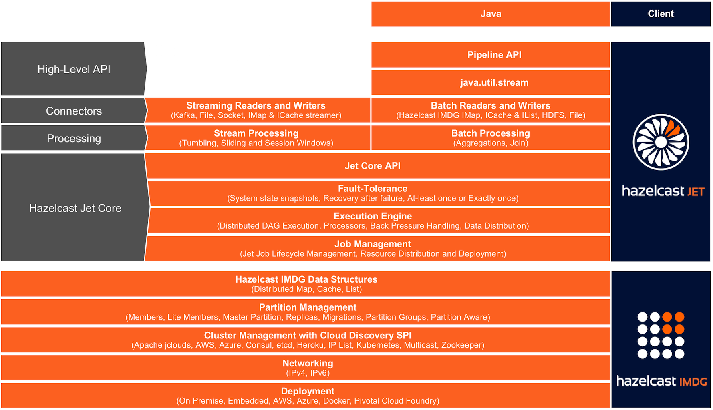
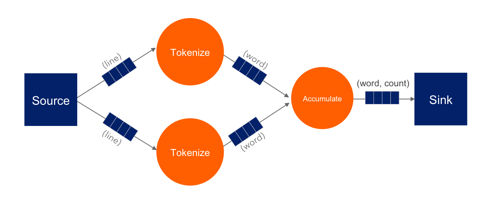
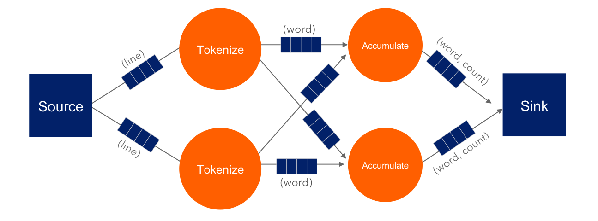
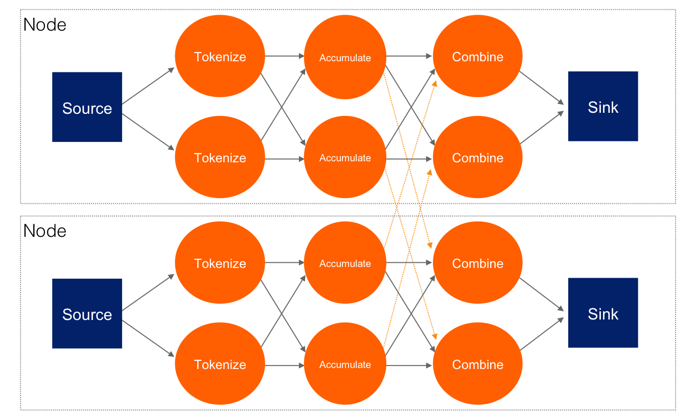
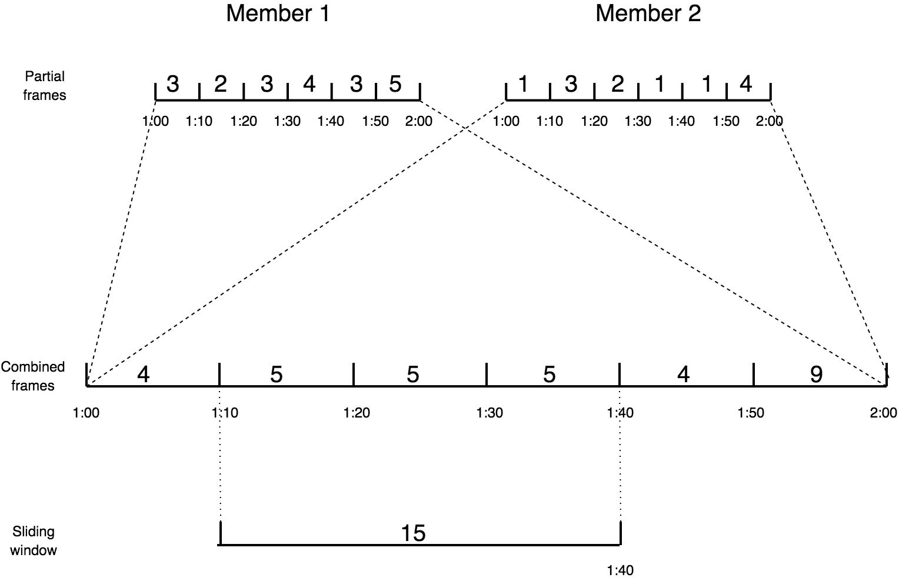
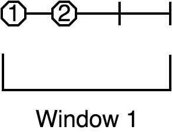
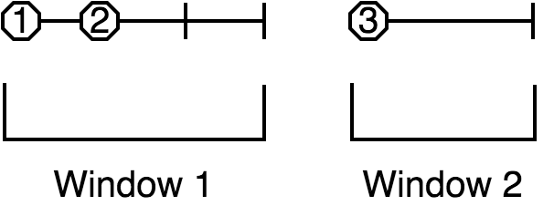
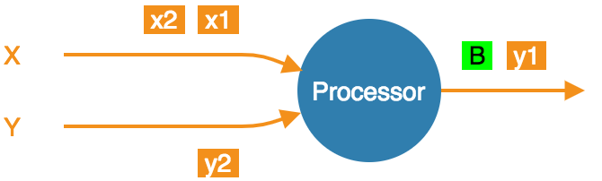
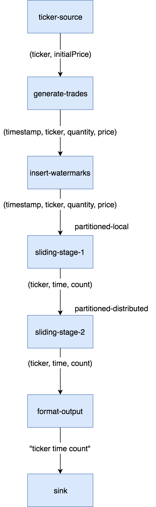
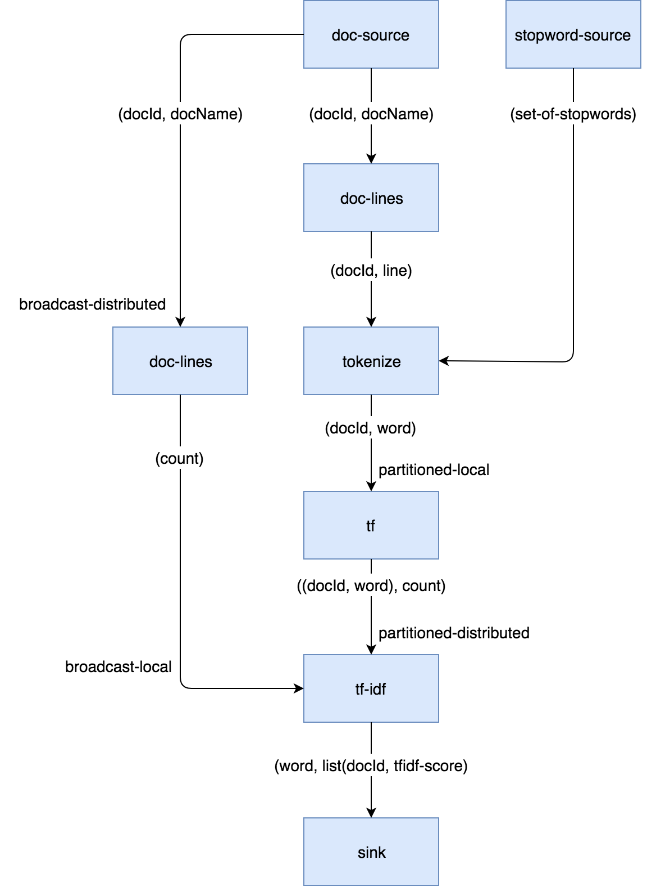

<!DOCTYPE html>
<html lang="en">
<head>
<meta charset="UTF-8">
<!--[if IE]><meta http-equiv="X-UA-Compatible" content="IE=edge"><![endif]-->
<meta name="viewport" content="width=device-width, initial-scale=1.0">
<meta name="generator" content="Asciidoctor 1.5.3">
<title>Hazelcast Jet Reference Manual</title>
<link rel="stylesheet" href="https://fonts.googleapis.com/css?family=Open+Sans:300,300italic,400,400italic,600,600italic%7CNoto+Serif:400,400italic,700,700italic%7CDroid+Sans+Mono:400,700">
<style>
/* Asciidoctor default stylesheet | MIT License | http://asciidoctor.org */
/* Remove comment around @import statement below when using as a custom stylesheet */
/*@import "https://fonts.googleapis.com/css?family=Open+Sans:300,300italic,400,400italic,600,600italic%7CNoto+Serif:400,400italic,700,700italic%7CDroid+Sans+Mono:400,700";*/
article,aside,details,figcaption,figure,footer,header,hgroup,main,nav,section,summary{display:block}
audio,canvas,video{display:inline-block}
audio:not([controls]){display:none;height:0}
[hidden],template{display:none}
script{display:none!important}
html{font-family:sans-serif;-ms-text-size-adjust:100%;-webkit-text-size-adjust:100%}
body{margin:0}
a{background:transparent}
a:focus{outline:thin dotted}
a:active,a:hover{outline:0}
h1{font-size:2em;margin:.67em 0}
abbr[title]{border-bottom:1px dotted}
b,strong{font-weight:bold}
dfn{font-style:italic}
hr{-moz-box-sizing:content-box;box-sizing:content-box;height:0}
mark{background:#ff0;color:#000}
code,kbd,pre,samp{font-family:monospace;font-size:1em}
pre{white-space:pre-wrap}
q{quotes:"\201C" "\201D" "\2018" "\2019"}
small{font-size:80%}
sub,sup{font-size:75%;line-height:0;position:relative;vertical-align:baseline}
sup{top:-.5em}
sub{bottom:-.25em}
img{border:0}
svg:not(:root){overflow:hidden}
figure{margin:0}
fieldset{border:1px solid silver;margin:0 2px;padding:.35em .625em .75em}
legend{border:0;padding:0}
button,input,select,textarea{font-family:inherit;font-size:100%;margin:0}
button,input{line-height:normal}
button,select{text-transform:none}
button,html input[type="button"],input[type="reset"],input[type="submit"]{-webkit-appearance:button;cursor:pointer}
button[disabled],html input[disabled]{cursor:default}
input[type="checkbox"],input[type="radio"]{box-sizing:border-box;padding:0}
input[type="search"]{-webkit-appearance:textfield;-moz-box-sizing:content-box;-webkit-box-sizing:content-box;box-sizing:content-box}
input[type="search"]::-webkit-search-cancel-button,input[type="search"]::-webkit-search-decoration{-webkit-appearance:none}
button::-moz-focus-inner,input::-moz-focus-inner{border:0;padding:0}
textarea{overflow:auto;vertical-align:top}
table{border-collapse:collapse;border-spacing:0}
*,*:before,*:after{-moz-box-sizing:border-box;-webkit-box-sizing:border-box;box-sizing:border-box}
html,body{font-size:100%}
body{background:#fff;color:rgba(0,0,0,.8);padding:0;margin:0;font-family:"Noto Serif","DejaVu Serif",serif;font-weight:400;font-style:normal;line-height:1;position:relative;cursor:auto}
a:hover{cursor:pointer}
img,object,embed{max-width:100%;height:auto}
object,embed{height:100%}
img{-ms-interpolation-mode:bicubic}
.left{float:left!important}
.right{float:right!important}
.text-left{text-align:left!important}
.text-right{text-align:right!important}
.text-center{text-align:center!important}
.text-justify{text-align:justify!important}
.hide{display:none}
body{-webkit-font-smoothing:antialiased}
img,object,svg{display:inline-block;vertical-align:middle}
textarea{height:auto;min-height:50px}
select{width:100%}
.center{margin-left:auto;margin-right:auto}
.spread{width:100%}
p.lead,.paragraph.lead>p,#preamble>.sectionbody>.paragraph:first-of-type p{font-size:1.21875em;line-height:1.6}
.subheader,.admonitionblock td.content>.title,.audioblock>.title,.exampleblock>.title,.imageblock>.title,.listingblock>.title,.literalblock>.title,.stemblock>.title,.openblock>.title,.paragraph>.title,.quoteblock>.title,table.tableblock>.title,.verseblock>.title,.videoblock>.title,.dlist>.title,.olist>.title,.ulist>.title,.qlist>.title,.hdlist>.title{line-height:1.45;color:#7a2518;font-weight:400;margin-top:0;margin-bottom:.25em}
div,dl,dt,dd,ul,ol,li,h1,h2,h3,#toctitle,.sidebarblock>.content>.title,h4,h5,h6,pre,form,p,blockquote,th,td{margin:0;padding:0;direction:ltr}
a{color:#2156a5;text-decoration:underline;line-height:inherit}
a:hover,a:focus{color:#1d4b8f}
a img{border:none}
p{font-family:inherit;font-weight:400;font-size:1em;line-height:1.6;margin-bottom:1.25em;text-rendering:optimizeLegibility}
p aside{font-size:.875em;line-height:1.35;font-style:italic}
h1,h2,h3,#toctitle,.sidebarblock>.content>.title,h4,h5,h6{font-family:"Open Sans","DejaVu Sans",sans-serif;font-weight:300;font-style:normal;color:#ba3925;text-rendering:optimizeLegibility;margin-top:1em;margin-bottom:.5em;line-height:1.0125em}
h1 small,h2 small,h3 small,#toctitle small,.sidebarblock>.content>.title small,h4 small,h5 small,h6 small{font-size:60%;color:#e99b8f;line-height:0}
h1{font-size:2.125em}
h2{font-size:1.6875em}
h3,#toctitle,.sidebarblock>.content>.title{font-size:1.375em}
h4,h5{font-size:1.125em}
h6{font-size:1em}
hr{border:solid #ddddd8;border-width:1px 0 0;clear:both;margin:1.25em 0 1.1875em;height:0}
em,i{font-style:italic;line-height:inherit}
strong,b{font-weight:bold;line-height:inherit}
small{font-size:60%;line-height:inherit}
code{font-family:"Droid Sans Mono","DejaVu Sans Mono",monospace;font-weight:400;color:rgba(0,0,0,.9)}
ul,ol,dl{font-size:1em;line-height:1.6;margin-bottom:1.25em;list-style-position:outside;font-family:inherit}
ul,ol,ul.no-bullet,ol.no-bullet{margin-left:1.5em}
ul li ul,ul li ol{margin-left:1.25em;margin-bottom:0;font-size:1em}
ul.square li ul,ul.circle li ul,ul.disc li ul{list-style:inherit}
ul.square{list-style-type:square}
ul.circle{list-style-type:circle}
ul.disc{list-style-type:disc}
ul.no-bullet{list-style:none}
ol li ul,ol li ol{margin-left:1.25em;margin-bottom:0}
dl dt{margin-bottom:.3125em;font-weight:bold}
dl dd{margin-bottom:1.25em}
abbr,acronym{text-transform:uppercase;font-size:90%;color:rgba(0,0,0,.8);border-bottom:1px dotted #ddd;cursor:help}
abbr{text-transform:none}
blockquote{margin:0 0 1.25em;padding:.5625em 1.25em 0 1.1875em;border-left:1px solid #ddd}
blockquote cite{display:block;font-size:.9375em;color:rgba(0,0,0,.6)}
blockquote cite:before{content:"\2014 \0020"}
blockquote cite a,blockquote cite a:visited{color:rgba(0,0,0,.6)}
blockquote,blockquote p{line-height:1.6;color:rgba(0,0,0,.85)}
@media only screen and (min-width:768px){h1,h2,h3,#toctitle,.sidebarblock>.content>.title,h4,h5,h6{line-height:1.2}
h1{font-size:2.75em}
h2{font-size:2.3125em}
h3,#toctitle,.sidebarblock>.content>.title{font-size:1.6875em}
h4{font-size:1.4375em}}
table{background:#fff;margin-bottom:1.25em;border:solid 1px #dedede}
table thead,table tfoot{background:#f7f8f7;font-weight:bold}
table thead tr th,table thead tr td,table tfoot tr th,table tfoot tr td{padding:.5em .625em .625em;font-size:inherit;color:rgba(0,0,0,.8);text-align:left}
table tr th,table tr td{padding:.5625em .625em;font-size:inherit;color:rgba(0,0,0,.8)}
table tr.even,table tr.alt,table tr:nth-of-type(even){background:#f8f8f7}
table thead tr th,table tfoot tr th,table tbody tr td,table tr td,table tfoot tr td{display:table-cell;line-height:1.6}
body{tab-size:4}
h1,h2,h3,#toctitle,.sidebarblock>.content>.title,h4,h5,h6{line-height:1.2;word-spacing:-.05em}
h1 strong,h2 strong,h3 strong,#toctitle strong,.sidebarblock>.content>.title strong,h4 strong,h5 strong,h6 strong{font-weight:400}
.clearfix:before,.clearfix:after,.float-group:before,.float-group:after{content:" ";display:table}
.clearfix:after,.float-group:after{clear:both}
*:not(pre)>code{font-size:.9375em;font-style:normal!important;letter-spacing:0;padding:.1em .5ex;word-spacing:-.15em;background-color:#f7f7f8;-webkit-border-radius:4px;border-radius:4px;line-height:1.45;text-rendering:optimizeSpeed}
pre,pre>code{line-height:1.45;color:rgba(0,0,0,.9);font-family:"Droid Sans Mono","DejaVu Sans Mono",monospace;font-weight:400;text-rendering:optimizeSpeed}
.keyseq{color:rgba(51,51,51,.8)}
kbd{font-family:"Droid Sans Mono","DejaVu Sans Mono",monospace;display:inline-block;color:rgba(0,0,0,.8);font-size:.65em;line-height:1.45;background-color:#f7f7f7;border:1px solid #ccc;-webkit-border-radius:3px;border-radius:3px;-webkit-box-shadow:0 1px 0 rgba(0,0,0,.2),0 0 0 .1em white inset;box-shadow:0 1px 0 rgba(0,0,0,.2),0 0 0 .1em #fff inset;margin:0 .15em;padding:.2em .5em;vertical-align:middle;position:relative;top:-.1em;white-space:nowrap}
.keyseq kbd:first-child{margin-left:0}
.keyseq kbd:last-child{margin-right:0}
.menuseq,.menu{color:rgba(0,0,0,.8)}
b.button:before,b.button:after{position:relative;top:-1px;font-weight:400}
b.button:before{content:"[";padding:0 3px 0 2px}
b.button:after{content:"]";padding:0 2px 0 3px}
p a>code:hover{color:rgba(0,0,0,.9)}
#header,#content,#footnotes,#footer{width:100%;margin-left:auto;margin-right:auto;margin-top:0;margin-bottom:0;max-width:62.5em;*zoom:1;position:relative;padding-left:.9375em;padding-right:.9375em}
#header:before,#header:after,#content:before,#content:after,#footnotes:before,#footnotes:after,#footer:before,#footer:after{content:" ";display:table}
#header:after,#content:after,#footnotes:after,#footer:after{clear:both}
#content{margin-top:1.25em}
#content:before{content:none}
#header>h1:first-child{color:rgba(0,0,0,.85);margin-top:2.25rem;margin-bottom:0}
#header>h1:first-child+#toc{margin-top:8px;border-top:1px solid #ddddd8}
#header>h1:only-child,body.toc2 #header>h1:nth-last-child(2){border-bottom:1px solid #ddddd8;padding-bottom:8px}
#header .details{border-bottom:1px solid #ddddd8;line-height:1.45;padding-top:.25em;padding-bottom:.25em;padding-left:.25em;color:rgba(0,0,0,.6);display:-ms-flexbox;display:-webkit-flex;display:flex;-ms-flex-flow:row wrap;-webkit-flex-flow:row wrap;flex-flow:row wrap}
#header .details span:first-child{margin-left:-.125em}
#header .details span.email a{color:rgba(0,0,0,.85)}
#header .details br{display:none}
#header .details br+span:before{content:"\00a0\2013\00a0"}
#header .details br+span.author:before{content:"\00a0\22c5\00a0";color:rgba(0,0,0,.85)}
#header .details br+span#revremark:before{content:"\00a0|\00a0"}
#header #revnumber{text-transform:capitalize}
#header #revnumber:after{content:"\00a0"}
#content>h1:first-child:not([class]){color:rgba(0,0,0,.85);border-bottom:1px solid #ddddd8;padding-bottom:8px;margin-top:0;padding-top:1rem;margin-bottom:1.25rem}
#toc{border-bottom:1px solid #efefed;padding-bottom:.5em}
#toc>ul{margin-left:.125em}
#toc ul.sectlevel0>li>a{font-style:italic}
#toc ul.sectlevel0 ul.sectlevel1{margin:.5em 0}
#toc ul{font-family:"Open Sans","DejaVu Sans",sans-serif;list-style-type:none}
#toc li{line-height:1.3334;margin-top:.3334em}
#toc a{text-decoration:none}
#toc a:active{text-decoration:underline}
#toctitle{color:#7a2518;font-size:1.2em}
@media only screen and (min-width:768px){#toctitle{font-size:1.375em}
body.toc2{padding-left:15em;padding-right:0}
#toc.toc2{margin-top:0!important;background-color:#f8f8f7;position:fixed;width:15em;left:0;top:0;border-right:1px solid #efefed;border-top-width:0!important;border-bottom-width:0!important;z-index:1000;padding:1.25em 1em;height:100%;overflow:auto}
#toc.toc2 #toctitle{margin-top:0;margin-bottom:.8rem;font-size:1.2em}
#toc.toc2>ul{font-size:.9em;margin-bottom:0}
#toc.toc2 ul ul{margin-left:0;padding-left:1em}
#toc.toc2 ul.sectlevel0 ul.sectlevel1{padding-left:0;margin-top:.5em;margin-bottom:.5em}
body.toc2.toc-right{padding-left:0;padding-right:15em}
body.toc2.toc-right #toc.toc2{border-right-width:0;border-left:1px solid #efefed;left:auto;right:0}}
@media only screen and (min-width:1280px){body.toc2{padding-left:20em;padding-right:0}
#toc.toc2{width:20em}
#toc.toc2 #toctitle{font-size:1.375em}
#toc.toc2>ul{font-size:.95em}
#toc.toc2 ul ul{padding-left:1.25em}
body.toc2.toc-right{padding-left:0;padding-right:20em}}
#content #toc{border-style:solid;border-width:1px;border-color:#e0e0dc;margin-bottom:1.25em;padding:1.25em;background:#f8f8f7;-webkit-border-radius:4px;border-radius:4px}
#content #toc>:first-child{margin-top:0}
#content #toc>:last-child{margin-bottom:0}
#footer{max-width:100%;background-color:rgba(0,0,0,.8);padding:1.25em}
#footer-text{color:rgba(255,255,255,.8);line-height:1.44}
.sect1{padding-bottom:.625em}
@media only screen and (min-width:768px){.sect1{padding-bottom:1.25em}}
.sect1+.sect1{border-top:1px solid #efefed}
#content h1>a.anchor,h2>a.anchor,h3>a.anchor,#toctitle>a.anchor,.sidebarblock>.content>.title>a.anchor,h4>a.anchor,h5>a.anchor,h6>a.anchor{position:absolute;z-index:1001;width:1.5ex;margin-left:-1.5ex;display:block;text-decoration:none!important;visibility:hidden;text-align:center;font-weight:400}
#content h1>a.anchor:before,h2>a.anchor:before,h3>a.anchor:before,#toctitle>a.anchor:before,.sidebarblock>.content>.title>a.anchor:before,h4>a.anchor:before,h5>a.anchor:before,h6>a.anchor:before{content:"\00A7";font-size:.85em;display:block;padding-top:.1em}
#content h1:hover>a.anchor,#content h1>a.anchor:hover,h2:hover>a.anchor,h2>a.anchor:hover,h3:hover>a.anchor,#toctitle:hover>a.anchor,.sidebarblock>.content>.title:hover>a.anchor,h3>a.anchor:hover,#toctitle>a.anchor:hover,.sidebarblock>.content>.title>a.anchor:hover,h4:hover>a.anchor,h4>a.anchor:hover,h5:hover>a.anchor,h5>a.anchor:hover,h6:hover>a.anchor,h6>a.anchor:hover{visibility:visible}
#content h1>a.link,h2>a.link,h3>a.link,#toctitle>a.link,.sidebarblock>.content>.title>a.link,h4>a.link,h5>a.link,h6>a.link{color:#ba3925;text-decoration:none}
#content h1>a.link:hover,h2>a.link:hover,h3>a.link:hover,#toctitle>a.link:hover,.sidebarblock>.content>.title>a.link:hover,h4>a.link:hover,h5>a.link:hover,h6>a.link:hover{color:#a53221}
.audioblock,.imageblock,.literalblock,.listingblock,.stemblock,.videoblock{margin-bottom:1.25em}
.admonitionblock td.content>.title,.audioblock>.title,.exampleblock>.title,.imageblock>.title,.listingblock>.title,.literalblock>.title,.stemblock>.title,.openblock>.title,.paragraph>.title,.quoteblock>.title,table.tableblock>.title,.verseblock>.title,.videoblock>.title,.dlist>.title,.olist>.title,.ulist>.title,.qlist>.title,.hdlist>.title{text-rendering:optimizeLegibility;text-align:left;font-family:"Noto Serif","DejaVu Serif",serif;font-size:1rem;font-style:italic}
table.tableblock>caption.title{white-space:nowrap;overflow:visible;max-width:0}
.paragraph.lead>p,#preamble>.sectionbody>.paragraph:first-of-type p{color:rgba(0,0,0,.85)}
table.tableblock #preamble>.sectionbody>.paragraph:first-of-type p{font-size:inherit}
.admonitionblock>table{border-collapse:separate;border:0;background:none;width:100%}
.admonitionblock>table td.icon{text-align:center;width:80px}
.admonitionblock>table td.icon img{max-width:none}
.admonitionblock>table td.icon .title{font-weight:bold;font-family:"Open Sans","DejaVu Sans",sans-serif;text-transform:uppercase}
.admonitionblock>table td.content{padding-left:1.125em;padding-right:1.25em;border-left:1px solid #ddddd8;color:rgba(0,0,0,.6)}
.admonitionblock>table td.content>:last-child>:last-child{margin-bottom:0}
.exampleblock>.content{border-style:solid;border-width:1px;border-color:#e6e6e6;margin-bottom:1.25em;padding:1.25em;background:#fff;-webkit-border-radius:4px;border-radius:4px}
.exampleblock>.content>:first-child{margin-top:0}
.exampleblock>.content>:last-child{margin-bottom:0}
.sidebarblock{border-style:solid;border-width:1px;border-color:#e0e0dc;margin-bottom:1.25em;padding:1.25em;background:#f8f8f7;-webkit-border-radius:4px;border-radius:4px}
.sidebarblock>:first-child{margin-top:0}
.sidebarblock>:last-child{margin-bottom:0}
.sidebarblock>.content>.title{color:#7a2518;margin-top:0;text-align:center}
.exampleblock>.content>:last-child>:last-child,.exampleblock>.content .olist>ol>li:last-child>:last-child,.exampleblock>.content .ulist>ul>li:last-child>:last-child,.exampleblock>.content .qlist>ol>li:last-child>:last-child,.sidebarblock>.content>:last-child>:last-child,.sidebarblock>.content .olist>ol>li:last-child>:last-child,.sidebarblock>.content .ulist>ul>li:last-child>:last-child,.sidebarblock>.content .qlist>ol>li:last-child>:last-child{margin-bottom:0}
.literalblock pre,.listingblock pre:not(.highlight),.listingblock pre[class="highlight"],.listingblock pre[class^="highlight "],.listingblock pre.CodeRay,.listingblock pre.prettyprint{background:#f7f7f8}
.sidebarblock .literalblock pre,.sidebarblock .listingblock pre:not(.highlight),.sidebarblock .listingblock pre[class="highlight"],.sidebarblock .listingblock pre[class^="highlight "],.sidebarblock .listingblock pre.CodeRay,.sidebarblock .listingblock pre.prettyprint{background:#f2f1f1}
.literalblock pre,.literalblock pre[class],.listingblock pre,.listingblock pre[class]{-webkit-border-radius:4px;border-radius:4px;word-wrap:break-word;padding:1em;font-size:.8125em}
.literalblock pre.nowrap,.literalblock pre[class].nowrap,.listingblock pre.nowrap,.listingblock pre[class].nowrap{overflow-x:auto;white-space:pre;word-wrap:normal}
@media only screen and (min-width:768px){.literalblock pre,.literalblock pre[class],.listingblock pre,.listingblock pre[class]{font-size:.90625em}}
@media only screen and (min-width:1280px){.literalblock pre,.literalblock pre[class],.listingblock pre,.listingblock pre[class]{font-size:1em}}
.literalblock.output pre{color:#f7f7f8;background-color:rgba(0,0,0,.9)}
.listingblock pre.highlightjs{padding:0}
.listingblock pre.highlightjs>code{padding:1em;-webkit-border-radius:4px;border-radius:4px}
.listingblock pre.prettyprint{border-width:0}
.listingblock>.content{position:relative}
.listingblock code[data-lang]:before{display:none;content:attr(data-lang);position:absolute;font-size:.75em;top:.425rem;right:.5rem;line-height:1;text-transform:uppercase;color:#999}
.listingblock:hover code[data-lang]:before{display:block}
.listingblock.terminal pre .command:before{content:attr(data-prompt);padding-right:.5em;color:#999}
.listingblock.terminal pre .command:not([data-prompt]):before{content:"$"}
table.pyhltable{border-collapse:separate;border:0;margin-bottom:0;background:none}
table.pyhltable td{vertical-align:top;padding-top:0;padding-bottom:0;line-height:1.45}
table.pyhltable td.code{padding-left:.75em;padding-right:0}
pre.pygments .lineno,table.pyhltable td:not(.code){color:#999;padding-left:0;padding-right:.5em;border-right:1px solid #ddddd8}
pre.pygments .lineno{display:inline-block;margin-right:.25em}
table.pyhltable .linenodiv{background:none!important;padding-right:0!important}
.quoteblock{margin:0 1em 1.25em 1.5em;display:table}
.quoteblock>.title{margin-left:-1.5em;margin-bottom:.75em}
.quoteblock blockquote,.quoteblock blockquote p{color:rgba(0,0,0,.85);font-size:1.15rem;line-height:1.75;word-spacing:.1em;letter-spacing:0;font-style:italic;text-align:justify}
.quoteblock blockquote{margin:0;padding:0;border:0}
.quoteblock blockquote:before{content:"\201c";float:left;font-size:2.75em;font-weight:bold;line-height:.6em;margin-left:-.6em;color:#7a2518;text-shadow:0 1px 2px rgba(0,0,0,.1)}
.quoteblock blockquote>.paragraph:last-child p{margin-bottom:0}
.quoteblock .attribution{margin-top:.5em;margin-right:.5ex;text-align:right}
.quoteblock .quoteblock{margin-left:0;margin-right:0;padding:.5em 0;border-left:3px solid rgba(0,0,0,.6)}
.quoteblock .quoteblock blockquote{padding:0 0 0 .75em}
.quoteblock .quoteblock blockquote:before{display:none}
.verseblock{margin:0 1em 1.25em 1em}
.verseblock pre{font-family:"Open Sans","DejaVu Sans",sans;font-size:1.15rem;color:rgba(0,0,0,.85);font-weight:300;text-rendering:optimizeLegibility}
.verseblock pre strong{font-weight:400}
.verseblock .attribution{margin-top:1.25rem;margin-left:.5ex}
.quoteblock .attribution,.verseblock .attribution{font-size:.9375em;line-height:1.45;font-style:italic}
.quoteblock .attribution br,.verseblock .attribution br{display:none}
.quoteblock .attribution cite,.verseblock .attribution cite{display:block;letter-spacing:-.025em;color:rgba(0,0,0,.6)}
.quoteblock.abstract{margin:0 0 1.25em 0;display:block}
.quoteblock.abstract blockquote,.quoteblock.abstract blockquote p{text-align:left;word-spacing:0}
.quoteblock.abstract blockquote:before,.quoteblock.abstract blockquote p:first-of-type:before{display:none}
table.tableblock{max-width:100%;border-collapse:separate}
table.tableblock td>.paragraph:last-child p>p:last-child,table.tableblock th>p:last-child,table.tableblock td>p:last-child{margin-bottom:0}
table.tableblock,th.tableblock,td.tableblock{border:0 solid #dedede}
table.grid-all th.tableblock,table.grid-all td.tableblock{border-width:0 1px 1px 0}
table.grid-all tfoot>tr>th.tableblock,table.grid-all tfoot>tr>td.tableblock{border-width:1px 1px 0 0}
table.grid-cols th.tableblock,table.grid-cols td.tableblock{border-width:0 1px 0 0}
table.grid-all *>tr>.tableblock:last-child,table.grid-cols *>tr>.tableblock:last-child{border-right-width:0}
table.grid-rows th.tableblock,table.grid-rows td.tableblock{border-width:0 0 1px 0}
table.grid-all tbody>tr:last-child>th.tableblock,table.grid-all tbody>tr:last-child>td.tableblock,table.grid-all thead:last-child>tr>th.tableblock,table.grid-rows tbody>tr:last-child>th.tableblock,table.grid-rows tbody>tr:last-child>td.tableblock,table.grid-rows thead:last-child>tr>th.tableblock{border-bottom-width:0}
table.grid-rows tfoot>tr>th.tableblock,table.grid-rows tfoot>tr>td.tableblock{border-width:1px 0 0 0}
table.frame-all{border-width:1px}
table.frame-sides{border-width:0 1px}
table.frame-topbot{border-width:1px 0}
th.halign-left,td.halign-left{text-align:left}
th.halign-right,td.halign-right{text-align:right}
th.halign-center,td.halign-center{text-align:center}
th.valign-top,td.valign-top{vertical-align:top}
th.valign-bottom,td.valign-bottom{vertical-align:bottom}
th.valign-middle,td.valign-middle{vertical-align:middle}
table thead th,table tfoot th{font-weight:bold}
tbody tr th{display:table-cell;line-height:1.6;background:#f7f8f7}
tbody tr th,tbody tr th p,tfoot tr th,tfoot tr th p{color:rgba(0,0,0,.8);font-weight:bold}
p.tableblock>code:only-child{background:none;padding:0}
p.tableblock{font-size:1em}
td>div.verse{white-space:pre}
ol{margin-left:1.75em}
ul li ol{margin-left:1.5em}
dl dd{margin-left:1.125em}
dl dd:last-child,dl dd:last-child>:last-child{margin-bottom:0}
ol>li p,ul>li p,ul dd,ol dd,.olist .olist,.ulist .ulist,.ulist .olist,.olist .ulist{margin-bottom:.625em}
ul.unstyled,ol.unnumbered,ul.checklist,ul.none{list-style-type:none}
ul.unstyled,ol.unnumbered,ul.checklist{margin-left:.625em}
ul.checklist li>p:first-child>.fa-square-o:first-child,ul.checklist li>p:first-child>.fa-check-square-o:first-child{width:1em;font-size:.85em}
ul.checklist li>p:first-child>input[type="checkbox"]:first-child{width:1em;position:relative;top:1px}
ul.inline{margin:0 auto .625em auto;margin-left:-1.375em;margin-right:0;padding:0;list-style:none;overflow:hidden}
ul.inline>li{list-style:none;float:left;margin-left:1.375em;display:block}
ul.inline>li>*{display:block}
.unstyled dl dt{font-weight:400;font-style:normal}
ol.arabic{list-style-type:decimal}
ol.decimal{list-style-type:decimal-leading-zero}
ol.loweralpha{list-style-type:lower-alpha}
ol.upperalpha{list-style-type:upper-alpha}
ol.lowerroman{list-style-type:lower-roman}
ol.upperroman{list-style-type:upper-roman}
ol.lowergreek{list-style-type:lower-greek}
.hdlist>table,.colist>table{border:0;background:none}
.hdlist>table>tbody>tr,.colist>table>tbody>tr{background:none}
td.hdlist1,td.hdlist2{vertical-align:top;padding:0 .625em}
td.hdlist1{font-weight:bold;padding-bottom:1.25em}
.literalblock+.colist,.listingblock+.colist{margin-top:-.5em}
.colist>table tr>td:first-of-type{padding:0 .75em;line-height:1}
.colist>table tr>td:last-of-type{padding:.25em 0}
.thumb,.th{line-height:0;display:inline-block;border:solid 4px #fff;-webkit-box-shadow:0 0 0 1px #ddd;box-shadow:0 0 0 1px #ddd}
.imageblock.left,.imageblock[style*="float: left"]{margin:.25em .625em 1.25em 0}
.imageblock.right,.imageblock[style*="float: right"]{margin:.25em 0 1.25em .625em}
.imageblock>.title{margin-bottom:0}
.imageblock.thumb,.imageblock.th{border-width:6px}
.imageblock.thumb>.title,.imageblock.th>.title{padding:0 .125em}
.image.left,.image.right{margin-top:.25em;margin-bottom:.25em;display:inline-block;line-height:0}
.image.left{margin-right:.625em}
.image.right{margin-left:.625em}
a.image{text-decoration:none;display:inline-block}
a.image object{pointer-events:none}
sup.footnote,sup.footnoteref{font-size:.875em;position:static;vertical-align:super}
sup.footnote a,sup.footnoteref a{text-decoration:none}
sup.footnote a:active,sup.footnoteref a:active{text-decoration:underline}
#footnotes{padding-top:.75em;padding-bottom:.75em;margin-bottom:.625em}
#footnotes hr{width:20%;min-width:6.25em;margin:-.25em 0 .75em 0;border-width:1px 0 0 0}
#footnotes .footnote{padding:0 .375em 0 .225em;line-height:1.3334;font-size:.875em;margin-left:1.2em;text-indent:-1.05em;margin-bottom:.2em}
#footnotes .footnote a:first-of-type{font-weight:bold;text-decoration:none}
#footnotes .footnote:last-of-type{margin-bottom:0}
#content #footnotes{margin-top:-.625em;margin-bottom:0;padding:.75em 0}
.gist .file-data>table{border:0;background:#fff;width:100%;margin-bottom:0}
.gist .file-data>table td.line-data{width:99%}
div.unbreakable{page-break-inside:avoid}
.big{font-size:larger}
.small{font-size:smaller}
.underline{text-decoration:underline}
.overline{text-decoration:overline}
.line-through{text-decoration:line-through}
.aqua{color:#00bfbf}
.aqua-background{background-color:#00fafa}
.black{color:#000}
.black-background{background-color:#000}
.blue{color:#0000bf}
.blue-background{background-color:#0000fa}
.fuchsia{color:#bf00bf}
.fuchsia-background{background-color:#fa00fa}
.gray{color:#606060}
.gray-background{background-color:#7d7d7d}
.green{color:#006000}
.green-background{background-color:#007d00}
.lime{color:#00bf00}
.lime-background{background-color:#00fa00}
.maroon{color:#600000}
.maroon-background{background-color:#7d0000}
.navy{color:#000060}
.navy-background{background-color:#00007d}
.olive{color:#606000}
.olive-background{background-color:#7d7d00}
.purple{color:#600060}
.purple-background{background-color:#7d007d}
.red{color:#bf0000}
.red-background{background-color:#fa0000}
.silver{color:#909090}
.silver-background{background-color:#bcbcbc}
.teal{color:#006060}
.teal-background{background-color:#007d7d}
.white{color:#bfbfbf}
.white-background{background-color:#fafafa}
.yellow{color:#bfbf00}
.yellow-background{background-color:#fafa00}
span.icon>.fa{cursor:default}
.admonitionblock td.icon [class^="fa icon-"]{font-size:2.5em;text-shadow:1px 1px 2px rgba(0,0,0,.5);cursor:default}
.admonitionblock td.icon .icon-note:before{content:"\f05a";color:#19407c}
.admonitionblock td.icon .icon-tip:before{content:"\f0eb";text-shadow:1px 1px 2px rgba(155,155,0,.8);color:#111}
.admonitionblock td.icon .icon-warning:before{content:"\f071";color:#bf6900}
.admonitionblock td.icon .icon-caution:before{content:"\f06d";color:#bf3400}
.admonitionblock td.icon .icon-important:before{content:"\f06a";color:#bf0000}
.conum[data-value]{display:inline-block;color:#fff!important;background-color:rgba(0,0,0,.8);-webkit-border-radius:100px;border-radius:100px;text-align:center;font-size:.75em;width:1.67em;height:1.67em;line-height:1.67em;font-family:"Open Sans","DejaVu Sans",sans-serif;font-style:normal;font-weight:bold}
.conum[data-value] *{color:#fff!important}
.conum[data-value]+b{display:none}
.conum[data-value]:after{content:attr(data-value)}
pre .conum[data-value]{position:relative;top:-.125em}
b.conum *{color:inherit!important}
.conum:not([data-value]):empty{display:none}
dt,th.tableblock,td.content,div.footnote{text-rendering:optimizeLegibility}
h1,h2,p,td.content,span.alt{letter-spacing:-.01em}
p strong,td.content strong,div.footnote strong{letter-spacing:-.005em}
p,blockquote,dt,td.content,span.alt{font-size:1.0625rem}
p{margin-bottom:1.25rem}
.sidebarblock p,.sidebarblock dt,.sidebarblock td.content,p.tableblock{font-size:1em}
.exampleblock>.content{background-color:#fffef7;border-color:#e0e0dc;-webkit-box-shadow:0 1px 4px #e0e0dc;box-shadow:0 1px 4px #e0e0dc}
.print-only{display:none!important}
@media print{@page{margin:1.25cm .75cm}
*{-webkit-box-shadow:none!important;box-shadow:none!important;text-shadow:none!important}
a{color:inherit!important;text-decoration:underline!important}
a.bare,a[href^="#"],a[href^="mailto:"]{text-decoration:none!important}
a[href^="http:"]:not(.bare):after,a[href^="https:"]:not(.bare):after{content:"(" attr(href) ")";display:inline-block;font-size:.875em;padding-left:.25em}
abbr[title]:after{content:" (" attr(title) ")"}
pre,blockquote,tr,img,object,svg{page-break-inside:avoid}
thead{display:table-header-group}
svg{max-width:100%}
p,blockquote,dt,td.content{font-size:1em;orphans:3;widows:3}
h2,h3,#toctitle,.sidebarblock>.content>.title{page-break-after:avoid}
#toc,.sidebarblock,.exampleblock>.content{background:none!important}
#toc{border-bottom:1px solid #ddddd8!important;padding-bottom:0!important}
.sect1{padding-bottom:0!important}
.sect1+.sect1{border:0!important}
#header>h1:first-child{margin-top:1.25rem}
body.book #header{text-align:center}
body.book #header>h1:first-child{border:0!important;margin:2.5em 0 1em 0}
body.book #header .details{border:0!important;display:block;padding:0!important}
body.book #header .details span:first-child{margin-left:0!important}
body.book #header .details br{display:block}
body.book #header .details br+span:before{content:none!important}
body.book #toc{border:0!important;text-align:left!important;padding:0!important;margin:0!important}
body.book #toc,body.book #preamble,body.book h1.sect0,body.book .sect1>h2{page-break-before:always}
.listingblock code[data-lang]:before{display:block}
#footer{background:none!important;padding:0 .9375em}
#footer-text{color:rgba(0,0,0,.6)!important;font-size:.9em}
.hide-on-print{display:none!important}
.print-only{display:block!important}
.hide-for-print{display:none!important}
.show-for-print{display:inherit!important}}
</style>
<link rel="stylesheet" href="https://cdnjs.cloudflare.com/ajax/libs/font-awesome/4.4.0/css/font-awesome.min.css">
<style>
/* Stylesheet for CodeRay to match GitHub theme | MIT License | http://foundation.zurb.com */
/*pre.CodeRay {background-color:#f7f7f8;}*/
.CodeRay .line-numbers{border-right:1px solid #d8d8d8;padding:0 0.5em 0 .25em}
.CodeRay span.line-numbers{display:inline-block;margin-right:.5em;color:rgba(0,0,0,.3)}
.CodeRay .line-numbers strong{color:rgba(0,0,0,.4)}
table.CodeRay{border-collapse:separate;border-spacing:0;margin-bottom:0;border:0;background:none}
table.CodeRay td{vertical-align: top;line-height:1.45}
table.CodeRay td.line-numbers{text-align:right}
table.CodeRay td.line-numbers>pre{padding:0;color:rgba(0,0,0,.3)}
table.CodeRay td.code{padding:0 0 0 .5em}
table.CodeRay td.code>pre{padding:0}
.CodeRay .debug{color:#fff !important;background:#000080 !important}
.CodeRay .annotation{color:#007}
.CodeRay .attribute-name{color:#000080}
.CodeRay .attribute-value{color:#700}
.CodeRay .binary{color:#509}
.CodeRay .comment{color:#998;font-style:italic}
.CodeRay .char{color:#04d}
.CodeRay .char .content{color:#04d}
.CodeRay .char .delimiter{color:#039}
.CodeRay .class{color:#458;font-weight:bold}
.CodeRay .complex{color:#a08}
.CodeRay .constant,.CodeRay .predefined-constant{color:#008080}
.CodeRay .color{color:#099}
.CodeRay .class-variable{color:#369}
.CodeRay .decorator{color:#b0b}
.CodeRay .definition{color:#099}
.CodeRay .delimiter{color:#000}
.CodeRay .doc{color:#970}
.CodeRay .doctype{color:#34b}
.CodeRay .doc-string{color:#d42}
.CodeRay .escape{color:#666}
.CodeRay .entity{color:#800}
.CodeRay .error{color:#808}
.CodeRay .exception{color:inherit}
.CodeRay .filename{color:#099}
.CodeRay .function{color:#900;font-weight:bold}
.CodeRay .global-variable{color:#008080}
.CodeRay .hex{color:#058}
.CodeRay .integer,.CodeRay .float{color:#099}
.CodeRay .include{color:#555}
.CodeRay .inline{color:#000}
.CodeRay .inline .inline{background:#ccc}
.CodeRay .inline .inline .inline{background:#bbb}
.CodeRay .inline .inline-delimiter{color:#d14}
.CodeRay .inline-delimiter{color:#d14}
.CodeRay .important{color:#555;font-weight:bold}
.CodeRay .interpreted{color:#b2b}
.CodeRay .instance-variable{color:#008080}
.CodeRay .label{color:#970}
.CodeRay .local-variable{color:#963}
.CodeRay .octal{color:#40e}
.CodeRay .predefined{color:#369}
.CodeRay .preprocessor{color:#579}
.CodeRay .pseudo-class{color:#555}
.CodeRay .directive{font-weight:bold}
.CodeRay .type{font-weight:bold}
.CodeRay .predefined-type{color:inherit}
.CodeRay .reserved,.CodeRay .keyword {color:#000;font-weight:bold}
.CodeRay .key{color:#808}
.CodeRay .key .delimiter{color:#606}
.CodeRay .key .char{color:#80f}
.CodeRay .value{color:#088}
.CodeRay .regexp .delimiter{color:#808}
.CodeRay .regexp .content{color:#808}
.CodeRay .regexp .modifier{color:#808}
.CodeRay .regexp .char{color:#d14}
.CodeRay .regexp .function{color:#404;font-weight:bold}
.CodeRay .string{color:#d20}
.CodeRay .string .string .string{background:#ffd0d0}
.CodeRay .string .content{color:#d14}
.CodeRay .string .char{color:#d14}
.CodeRay .string .delimiter{color:#d14}
.CodeRay .shell{color:#d14}
.CodeRay .shell .delimiter{color:#d14}
.CodeRay .symbol{color:#990073}
.CodeRay .symbol .content{color:#a60}
.CodeRay .symbol .delimiter{color:#630}
.CodeRay .tag{color:#008080}
.CodeRay .tag-special{color:#d70}
.CodeRay .variable{color:#036}
.CodeRay .insert{background:#afa}
.CodeRay .delete{background:#faa}
.CodeRay .change{color:#aaf;background:#007}
.CodeRay .head{color:#f8f;background:#505}
.CodeRay .insert .insert{color:#080}
.CodeRay .delete .delete{color:#800}
.CodeRay .change .change{color:#66f}
.CodeRay .head .head{color:#f4f}
</style>
</head>
<body class="book toc2 toc-left">
<div id="header">
<h1>Hazelcast Jet Reference Manual</h1>
<div id="toc" class="toc2">
<div id="toctitle">Table of Contents</div>
<ul class="sectlevel1">
<li><a href="#preface">Preface</a>
<ul class="sectlevel2">
<li><a href="#naming">Naming</a></li>
<li><a href="#licensing">Licensing</a></li>
<li><a href="#trademarks">Trademarks</a></li>
<li><a href="#getting-help">Getting Help</a></li>
</ul>
</li>
<li><a href="#introduction-to-jet">1. Introduction</a>
<ul class="sectlevel2">
<li><a href="#architecture-overview">1.1. Architecture Overview</a></li>
<li><a href="#data-processing-model">1.2. The Data Processing Model</a></li>
<li><a href="#clustering-and-discovery">1.3. Clustering and Discovery</a></li>
<li><a href="#members-and-clients">1.4. Members and Clients</a></li>
<li><a href="#relationship-with-imdg">1.5. Relationship with Hazelcast IMDG</a>
<ul class="sectlevel3">
<li><a href="#read-write-imdg-dds">1.5.1. Reading from and Writing to Hazelcast Distributed Data Structures</a></li>
</ul>
</li>
<li><a href="#high-availability-and-fault-tolerance">1.6. High Availability and Fault Tolerance</a></li>
<li><a href="#elasticity">1.7. Elasticity</a></li>
</ul>
</li>
<li><a href="#get-started">2. Get Started</a>
<ul class="sectlevel2">
<li><a href="#requirements">2.1. Requirements</a></li>
<li><a href="#maven-gradle">2.2. Using Maven and Gradle</a></li>
<li><a href="#downloading">2.3. Downloading</a>
<ul class="sectlevel3">
<li><a href="#distribution-package">2.3.1. Distribution Package</a></li>
</ul>
</li>
<li><a href="#verify">2.4. Verify Your Setup</a></li>
</ul>
</li>
<li><a href="#work-with-jet">3. Work with Jet</a>
<ul class="sectlevel2">
<li><a href="#start-jet">3.1. Start Jet and Submit Jobs to It</a>
<ul class="sectlevel3">
<li><a href="#jobconfig">3.1.1. JobConfig</a></li>
<li><a href="#manage-a-submitted-job">3.1.2. Manage a Submitted Job</a></li>
<li><a href="#get-a-list-of-all-submitted-jobs">3.1.3. Get a List of all Submitted Jobs</a></li>
</ul>
</li>
<li><a href="#pipeline-api">3.2. Build Your Computation Pipeline</a>
<ul class="sectlevel3">
<li><a href="#the-shape-of-a-pipeline">3.2.1. The Shape of a Pipeline</a></li>
<li><a href="#choose-your-data-sources-and-sinks">3.2.2. Choose Your Data Sources and Sinks</a></li>
<li><a href="#compose-the-pipeline-transforms">3.2.3. Compose the Pipeline Transforms</a></li>
</ul>
</li>
<li><a href="#implement-your-aggregate-operation">3.3. Implement Your Aggregate Operation</a></li>
<li><a href="#infinite-stream-processing">3.4. Infinite Stream Processing</a>
<ul class="sectlevel3">
<li><a href="#finite-aka-batch-processing">3.4.1. Finite aka. Batch Processing</a></li>
<li><a href="#the-importance-of-right-now">3.4.2. The Importance of "Right Now"</a></li>
<li><a href="#windowing">3.4.3. Windowing</a></li>
<li><a href="#time-ordering">3.4.4. Time Ordering and the Watermark</a></li>
<li><a href="#fault-tolerance-and-processing-guarantees">3.4.5. Fault Tolerance and Processing Guarantees</a></li>
<li><a href="#scaling-up-jobs">3.4.6. Scaling up Jobs</a></li>
<li><a href="#note-for-hazelcast-jet-version-0-5">3.4.7. Note for Hazelcast Jet version 0.5</a></li>
</ul>
</li>
<li><a href="#source-sink-connectors">3.5. Source and Sink Connectors</a>
<ul class="sectlevel3">
<li><a href="#overview">3.5.1. Overview</a></li>
<li><a href="#hazelcast-imdg">3.5.2. Hazelcast IMDG</a></li>
<li><a href="#file-and-socket">3.5.3. File and Socket</a></li>
<li><a href="#hdfs">3.5.4. HDFS</a></li>
<li><a href="#kafka">3.5.5. Kafka</a></li>
</ul>
</li>
<li><a href="#practical-considerations">3.6. Practical Considerations</a>
<ul class="sectlevel3">
<li><a href="#remember-that-a-jet-job-is-distributed">3.6.1. Remember that a Jet Job is Distributed</a></li>
<li><a href="#submit-a-job-from-the-command-line">3.6.2. Submit a Job from the Command Line</a></li>
<li><a href="#watch-out-for-capturing-lambdas">3.6.3. Watch out for Capturing Lambdas</a></li>
<li><a href="#standard-java-serialization-is-slow">3.6.4. Standard Java Serialization is Slow</a></li>
</ul>
</li>
<li><a href="#logging-and-debugging">3.7. Logging and Debugging</a>
<ul class="sectlevel3">
<li><a href="#configuring-logging">3.7.1. Configuring Logging</a></li>
<li><a href="#inspecting-output-of-individual-stages">3.7.2. Inspecting Output of Individual Stages</a></li>
</ul>
</li>
</ul>
</li>
<li><a href="#comparison-of-jet-apis">4. Comparison of Jet APIs</a></li>
<li><a href="#configuration">5. Configuration</a>
<ul class="sectlevel2">
<li><a href="#programmatic-configuration">5.1. Programmatic Configuration</a></li>
<li><a href="#declarative-configuration">5.2. Declarative Configuration</a></li>
<li><a href="#configure-the-underlying-hazelcast-instance">5.3. Configure the Underlying Hazelcast Instance</a>
<ul class="sectlevel3">
<li><a href="#programmatic">5.3.1. Programmatic</a></li>
<li><a href="#declarative">5.3.2. Declarative</a></li>
</ul>
</li>
</ul>
</li>
<li><a href="#jus">6. Distributed Implementation of java.util.stream API</a>
<ul class="sectlevel2">
<li><a href="#simple-example">6.1. Simple Example</a></li>
<li><a href="#distributed-collectors">6.2. Distributed Collectors</a></li>
<li><a href="#word-count">6.3. Word Count</a></li>
</ul>
</li>
<li><a href="#under-the-hood">7. Under the Hood</a>
<ul class="sectlevel2">
<li><a href="#how-distributed-computing-works-in-jet">7.1. How Distributed Computing Works in Jet</a>
<ul class="sectlevel3">
<li><a href="#modeling-word-count-in-terms-of-a-dag">7.1.1. Modeling Word Count in terms of a DAG</a></li>
<li><a href="#implementing-the-dag-in-jet-s-core-api">7.1.2. Implementing the DAG in Jet&#8217;s Core API</a></li>
</ul>
</li>
<li><a href="#how-infinite-stream-processing-works-in-jet">7.2. How Infinite Stream Processing Works In Jet</a>
<ul class="sectlevel3">
<li><a href="#stream-skew">7.2.1. Stream Skew</a></li>
<li><a href="#sliding-and-tumbling-window">7.2.2. Sliding and Tumbling Window</a></li>
<li><a href="#session-window">7.2.3. Session Window</a></li>
<li><a href="#distributed-snapshot">7.2.4. Distributed Snapshot</a></li>
<li><a href="#rules-of-watermark-propagation">7.2.5. Rules of Watermark Propagation</a></li>
<li><a href="#pitfalls-alo">7.2.6. The Pitfalls of At-Least-Once Processing</a></li>
</ul>
</li>
<li><a href="#stream-processing-dag-and-code">7.3. Stream-Processing DAG and Code</a></li>
</ul>
</li>
<li><a href="#expert-zone-the-core-api">8. Expert Zone - The Core API</a>
<ul class="sectlevel2">
<li><a href="#jet-execution-model">8.1. Jet Execution Model</a>
<ul class="sectlevel3">
<li><a href="#cooperative-multithreading">8.1.1. Cooperative Multithreading</a></li>
<li><a href="#tasklet">8.1.2. Tasklet</a></li>
<li><a href="#work-stealing">8.1.3. Work Stealing</a></li>
<li><a href="#exponential-backoff">8.1.4. Exponential Backoff</a></li>
<li><a href="#processor-tasklet">8.1.5. ProcessorTasklet</a></li>
<li><a href="#non-cooperative-processor">8.1.6. Non-Cooperative Processor</a></li>
<li><a href="#running-a-jet-job">8.1.7. Running a Jet job</a></li>
</ul>
</li>
<li><a href="#dag">8.2. DAG</a>
<ul class="sectlevel3">
<li><a href="#creating-a-vertex">8.2.1. Creating a Vertex</a></li>
<li><a href="#local-and-global-parallelism-of-vertex">8.2.2. Local and Global Parallelism of Vertex</a></li>
<li><a href="#edge-original">8.2.3. Edge Ordinal</a></li>
<li><a href="#local-and-distributed-edge">8.2.4. Local and Distributed Edge</a></li>
<li><a href="#routing-policies">8.2.5. Routing Policies</a></li>
<li><a href="#priority">8.2.6. Priority</a></li>
<li><a href="#fine-tuning-edges">8.2.7. Fine-Tuning Edges</a></li>
</ul>
</li>
<li><a href="#job">8.3. Job</a>
<ul class="sectlevel3">
<li><a href="#deploy-your-resources">8.3.1. Deploy your Resources</a></li>
</ul>
</li>
<li><a href="#processor">8.4. Processor</a>
<ul class="sectlevel3">
<li><a href="#cooperativeness">8.4.1. Cooperativeness</a></li>
<li><a href="#the-outbox">8.4.2. The Outbox</a></li>
<li><a href="#data-processing-callbacks">8.4.3. Data Processing Callbacks</a></li>
<li><a href="#snapshotting-callbacks">8.4.4. Snapshotting Callbacks</a></li>
<li><a href="#alo-behavior">8.4.5. Best Practice: Document At-Least-Once Behavior</a></li>
</ul>
</li>
<li><a href="#abstract-processor">8.5. AbstractProcessor</a>
<ul class="sectlevel3">
<li><a href="#receiving-items">8.5.1. Receiving items</a></li>
<li><a href="#emitting-items">8.5.2. Emitting items</a></li>
<li><a href="#traverser">8.5.3. Traverser</a></li>
</ul>
</li>
<li><a href="#watermark-policy">8.6. WatermarkPolicy</a>
<ul class="sectlevel3">
<li><a href="#predefined-watermark-policies">8.6.1. Predefined watermark policies</a></li>
<li><a href="#watermark-throttling">8.6.2. Watermark Throttling</a></li>
<li><a href="#max-watermark-retention">8.6.3. Maximum watermark retention on substream merge</a></li>
</ul>
</li>
<li><a href="#vertices">8.7. Vertices in the Library</a></li>
<li><a href="#custom-source-sink">8.8. Implement a Custom Source or Sink</a>
<ul class="sectlevel3">
<li><a href="#how-jet-creates-and-initializes-a-job">8.8.1. How Jet Creates and Initializes a Job</a></li>
<li><a href="#example-distributed-integer-generator">8.8.2. Example - Distributed Integer Generator</a></li>
<li><a href="#sinks">8.8.3. Sinks</a></li>
<li><a href="#example-file-writer">8.8.4. Example - File Writer</a></li>
</ul>
</li>
<li><a href="#core-best-practices">8.9. Best Practices</a>
<ul class="sectlevel3">
<li><a href="#inspecting-processor-input-and-output">8.9.1. Inspecting Processor Input and Output</a></li>
<li><a href="#how-to-unit-test-a-processor">8.9.2. How to Unit-Test a Processor</a></li>
</ul>
</li>
<li><a href="#tf-idf">8.10. Custom DAG - Inverted TF-IDF Index</a>
<ul class="sectlevel3">
<li><a href="#building-inverted-index">8.10.1. Building the Inverted Index with Java Streams</a></li>
<li><a href="#translating-to-jet-dag">8.10.2. Translating to Jet DAG</a></li>
<li><a href="#implementation-code">8.10.3. Implementation Code</a></li>
</ul>
</li>
</ul>
</li>
<li><a href="#misc">9. Miscellaneous</a>
<ul class="sectlevel2">
<li><a href="#phone-homes">9.1. Phone Homes</a></li>
<li><a href="#license-questions">9.2. License Questions</a>
<ul class="sectlevel3">
<li><a href="#embedded-dependencies">9.2.1. Embedded Dependencies</a></li>
</ul>
</li>
<li><a href="#faq">9.3. FAQ</a></li>
<li><a href="#common-exceptions">9.4. Common Exceptions</a></li>
</ul>
</li>
<li><a href="#glossary">10. Glossary</a></li>
</ul>
</div>
</div>
<div id="content">
<div id="preamble">
<div class="sectionbody">
<!-- toc disabled -->
<div class="paragraph">
<p>Welcome to the Hazelcast Jet Reference Manual. This manual includes
concepts, instructions, and samples to guide you on how to use Hazelcast
Jet to build applications.</p>
</div>
<div class="paragraph">
<p>Hazelcast Jet is a distributed computing platform. It supports both
finite datasets (batch processing) and infinite streams with continuous
operators. With Hazelcast In-Memory Data Grid (IMDG) providing storage functionality, Hazelcast Jet performs data-local parallel execution, enabling data-intensive applications to operate in real time. Using directed acyclic graphs (DAG) to model relationships between individual steps in the data processing pipeline, Hazelcast Jet is simple to deploy. Hazelcast Jet is an Apache 2 licensed open source project. Please also refer to the
[Hazelcast Jet website](<a href="http://jet.hazelcast.org/" class="bare">http://jet.hazelcast.org/</a>) for information on
its features, use cases and performance considerations.</p>
</div>
<div class="paragraph">
<p>As the reader of this manual, you must be familiar with the Java
programming language and you should have installed your preferred
Integrated Development Environment (IDE).</p>
</div>
</div>
</div>
<div class="sect1">
<h2 id="preface"><a class="anchor" href="#preface"></a>Preface</h2>
<div class="sectionbody">
<div class="sect2">
<h3 id="naming"><a class="anchor" href="#naming"></a>Naming</h3>
<div class="ulist">
<ul>
<li>
<p><strong>Hazelcast Jet</strong> or <strong>Jet</strong> both refer to the same distributed data
processing engine provided by Hazelcast, Inc.</p>
</li>
<li>
<p><strong>Hazelcast</strong> or <strong>Hazelcast IMDG</strong> both refer to Hazelcast in-memory
data grid middleware. <strong>Hazelcast</strong> is also the name of the company
(Hazelcast, Inc.) providing Hazelcast IMDG and Hazelcast Jet.</p>
</li>
</ul>
</div>
</div>
<div class="sect2">
<h3 id="licensing"><a class="anchor" href="#licensing"></a>Licensing</h3>
<div class="paragraph">
<p>Hazelcast Jet and Hazelcast Jet Reference Manual are free and provided
under the Apache License, Version 2.0.</p>
</div>
</div>
<div class="sect2">
<h3 id="trademarks"><a class="anchor" href="#trademarks"></a>Trademarks</h3>
<div class="paragraph">
<p>Hazelcast is a registered trademark of Hazelcast, Inc. All other
trademarks in this manual are held by their respective owners.</p>
</div>
</div>
<div class="sect2">
<h3 id="getting-help"><a class="anchor" href="#getting-help"></a>Getting Help</h3>
<div class="paragraph">
<p>The Jet team provides support to its community via these channels:</p>
</div>
<div class="ulist">
<ul>
<li>
<p><a href="https://stackoverflow.com/questions/tagged/hazelcast-jet">Stack Overflow</a> (ask a question on how to use Jet properly and troubleshoot your setup)</p>
</li>
<li>
<p><a href="https://groups.google.com/forum/#!forum/hazelcast-jet">Hazelcast Jet mailing list</a> (propose features and discuss your ideas with the team)</p>
</li>
<li>
<p><a href="https://github.com/hazelcast/hazelcast-jet/isses">GitHub&#8217;s issue tracking</a> (report your confirmed issues)</p>
</li>
</ul>
</div>
<div class="paragraph">
<p>For information on the commercial support for Hazelcast Jet, please see
<a href="https://hazelcast.com/pricing/hazelcast-jet-annual-subscription-plans">this page on hazelcast.com</a>.</p>
</div>
</div>
</div>
</div>
<div class="sect1">
<h2 id="introduction-to-jet"><a class="anchor" href="#introduction-to-jet"></a>1. Introduction</h2>
<div class="sectionbody">
<div class="paragraph">
<p>Hazelcast Jet is a distributed data processing engine, built for
high-performance batch and stream processing. It reuses some features
and services of <a href="http://www.hazelcast.org">Hazelcast In-Memory Data
Grid</a> (IMDG), but is otherwise a separate
product with features not available in the IMDG.</p>
</div>
<div class="paragraph">
<p>In addition to its own
<a href="#pipeline-api">Pipeline API</a>,
Jet also offers a distributed implementation of
<a href="https://docs.oracle.com/javase/8/docs/api/java/util/stream/package-summary.html">java.util.stream</a>.
You can express your computation over any data source Jet supports using
the familiar API from the JDK 8.</p>
</div>
<div class="paragraph">
<p>With Hazelcast’s IMDG providing storage functionality, Hazelcast
Jet performs parallel execution to enable data-intensive applications to
operate in near real-time. Using directed acyclic graphs (DAG) to model
relationships between individual steps in the data processing pipeline,
Hazelcast Jet can execute both batch and stream-based data processing
applications. Jet handles the parallel execution using the <em>green
thread</em> approach to optimize the utilization of the computing resources.</p>
</div>
<div class="paragraph">
<p>Breakthrough application speed is achieved by keeping both the
computation and data storage in memory. The embedded Hazelcast IMDG
provides elastic in-memory storage and is a great tool for storing the
results of a computation or as a cache for datasets to be used during
the computation. Extremely low end-to-end latencies can be achieved this
way.</p>
</div>
<div class="paragraph">
<p>It is extremely simple to use - in particular, Jet can be fully
embedded for OEMs and for Microservices – making it is easier for
manufacturers to build and maintain next generation systems. Also,
Jet uses Hazelcast discovery for finding the members in the cluster,
which can be used in both on-premise and cloud environments.</p>
</div>
<div class="sect2">
<h3 id="architecture-overview"><a class="anchor" href="#architecture-overview"></a>1.1. Architecture Overview</h3>
<div class="imageblock">
<div class="content">

</div>
</div>
</div>
<div class="sect2">
<h3 id="data-processing-model"><a class="anchor" href="#data-processing-model"></a>1.2. The Data Processing Model</h3>
<div class="paragraph">
<p>Hazelcast Jet provides high performance in-memory data processing by
modeling the computation as a <em>Directed Acyclic Graph (DAG)</em> where
vertices represent computation and edges represent data connections. A
vertex receives data from its inbound edges, performs a step in the
computation, and emits data to its outbound edges. A single vertex&#8217;s
computation work is performed in parallel by many instances of the
<code>Processor</code> type around the cluster.</p>
</div>
<div class="paragraph">
<p>One of the major reasons to divide the full computation task into
several vertices is <em>data partitioning</em>: the ability to split the data
stream traveling over an edge into slices which can be processed
independently of each other. To make this work, a function must be
defined which computes the <em>partitioning key</em> for each item and makes
all related items map to the same key. The computation engine can then
route all such items to the same processor instance. This makes it easy
to parallelize the computation: each processor will have the full
picture for its slice of the entire stream.</p>
</div>
<div class="paragraph">
<p>Edges determine how the data is routed from individual source processors
to individual destination processors. Different edge properties offer
precise control over the flow of data.</p>
</div>
</div>
<div class="sect2">
<h3 id="clustering-and-discovery"><a class="anchor" href="#clustering-and-discovery"></a>1.3. Clustering and Discovery</h3>
<div class="paragraph">
<p>Hazelcast Jet typically runs on several machines that form a cluster but
it may also run on a single JVM for testing purposes.
There are several ways to configure the members for discovery, explained
in detail in the <a href="http://docs.hazelcast.org/docs/latest/manual/html-single/index.html#setting-up-clusters">Hazelcast IMDG Reference
Manual</a>.</p>
</div>
</div>
<div class="sect2">
<h3 id="members-and-clients"><a class="anchor" href="#members-and-clients"></a>1.4. Members and Clients</h3>
<div class="paragraph">
<p>A Hazelcast Jet <em>instance</em> is a unit where the processing takes place.
There can be multiple instances per JVM, however this only makes sense
for testing. An instance becomes a <em>member</em> of a cluster: it can join
and leave clusters multiple times during its lifetime. Any instance can
be used to access a cluster, giving an appearance that the entire
cluster is available locally.</p>
</div>
<div class="paragraph">
<p>On the other hand, a <em>client instance</em> is just an accessor to a cluster
and no processing takes place in it.</p>
</div>
</div>
<div class="sect2">
<h3 id="relationship-with-imdg"><a class="anchor" href="#relationship-with-imdg"></a>1.5. Relationship with Hazelcast IMDG</h3>
<div class="paragraph">
<p>Hazelcast Jet leans on <a href="http://www.hazelcast.org">Hazelcast IMDG</a> for
cluster formation and maintenance, data partitioning, and networking.
For more information on Hazelcast IMDG, see the <a href="http://docs.hazelcast.org/docs/latest/manual/html-single/index.html">latest Hazelcast
Reference Manual</a>.</p>
</div>
<div class="paragraph">
<p>As Jet is built on top of the Hazelcast platform, there is a tight
integration between Jet and IMDG. A Jet job is implemented as a
Hazelcast IMDG proxy, similar to the other services and data structures
in Hazelcast. The Hazelcast Operations are used for different actions
that can be performed on a job. Jet can also be used with the Hazelcast
Client, which uses the Hazelcast Open Binary Protocol to communicate
different actions to the server instance.</p>
</div>
<div class="sect3">
<h4 id="read-write-imdg-dds"><a class="anchor" href="#read-write-imdg-dds"></a>1.5.1. Reading from and Writing to Hazelcast Distributed Data Structures</h4>
<div class="paragraph">
<p>Jet embeds Hazelcast IMDG. Therefore, Jet can use Hazelcast IMDG maps,
caches and lists on the embedded cluster as sources and sinks of data
and make use of data locality. A Hazelcast <code>IMap</code> or <code>ICache</code> is
distributed by partitions across the cluster and Jet members are able to
efficiently read from the Map or Cache by having each member read just
its local partitions. Since the whole <code>IList</code> is stored on a single
partition, all the data will be read on the single member that owns that
partition. When using a map, cache or list as a Sink, it is not possible
to directly make use of data locality because the emitted key-value pair
may belong to a non-local partition. In this case the pair must be
transmitted over the network to the member which owns that particular
partition.</p>
</div>
<div class="paragraph">
<p>Jet can also use any remote Hazelcast IMDG instance via Hazelcast IMDG
connector.</p>
</div>
</div>
</div>
<div class="sect2">
<h3 id="high-availability-and-fault-tolerance"><a class="anchor" href="#high-availability-and-fault-tolerance"></a>1.6. High Availability and Fault Tolerance</h3>
<div class="paragraph">
<p>Jet provides highly available and fault tolerant distributed computation.
If one of the cluster members fails and leaves the cluster during job
execution, the job restarted on the remaining members automatically
and transparently. Jet achieves this by maintaining in-memory copies
of the job metadata inside the cluster. The user does not need to designate
any node as the master.</p>
</div>
<div class="paragraph">
<p>In case of a failure, a batch job can typically just be restarted from
beginning as the data can easily be replayed. For streaming jobs that run
continuously, this might not be possible so the engine must be able
to detect a failure, recover from it, and resume processing without data loss.</p>
</div>
<div class="paragraph">
<p>Jet achieves fault tolerance in streaming jobs by making a
snapshot of the internal processing state at regular intervals. If a
member of the cluster fails while a job is running, Hazelcast Jet will
detect this and restart the job on the new cluster topology. It will
restore its internal state from the snapshot and tell the source to start
sending data from the last "committed" position (where the snapshot was
taken).</p>
</div>
</div>
<div class="sect2">
<h3 id="elasticity"><a class="anchor" href="#elasticity"></a>1.7. Elasticity</h3>
<div class="paragraph">
<p>Hazelcast Jet supports the scenario where a new member joins the cluster
while a job is running. Currently the ongoing job will not be re-planned
to start using the member, though; this is on the roadmap for a future
version. The new member can also leave the cluster while the job is
running and this won&#8217;t affect its progress.</p>
</div>
<div class="paragraph">
<p>One caveat is the special kind of member allowed by the Hazelcast IMDG:
a <em>lite member</em>. These members don&#8217;t get any partitions assigned to them
and will malfunction when attempting to run a DAG with partitioned
edges. Lite members should not be allowed to join a Jet cluster.</p>
</div>
</div>
</div>
</div>
<div class="sect1">
<h2 id="get-started"><a class="anchor" href="#get-started"></a>2. Get Started</h2>
<div class="sectionbody">
<div class="paragraph">
<p>In this section we&#8217;ll get you started using Hazelcast Jet. We&#8217;ll
show you how to set up a Java project with the proper dependencies and a
quick Hello World example to verify your setup.</p>
</div>
<div class="sect2">
<h3 id="requirements"><a class="anchor" href="#requirements"></a>2.1. Requirements</h3>
<div class="paragraph">
<p>In the good tradition of Hazelcast products, Jet is distributed as a JAR
with no other dependencies. It requires JRE version 8 or higher to run.</p>
</div>
</div>
<div class="sect2">
<h3 id="maven-gradle"><a class="anchor" href="#maven-gradle"></a>2.2. Using Maven and Gradle</h3>
<div class="paragraph">
<p>The easiest way to start using Hazelcast Jet is to add it as a
dependency to your project.</p>
</div>
<div class="paragraph">
<p>Hazelcast Jet is published on the Maven repositories. Add the following
lines to your <code>pom.xml</code>:</p>
</div>
<div class="listingblock">
<div class="content">
<pre class="CodeRay highlight"><code data-lang="xml"><span class="tag">&lt;dependencies&gt;</span>
  <span class="tag">&lt;dependency&gt;</span>
    <span class="tag">&lt;groupId&gt;</span>com.hazelcast.jet<span class="tag">&lt;/groupId&gt;</span>
    <span class="tag">&lt;artifactId&gt;</span>hazelcast-jet<span class="tag">&lt;/artifactId&gt;</span>
    <span class="tag">&lt;version&gt;</span>0.5<span class="tag">&lt;/version&gt;</span>
  <span class="tag">&lt;/dependency&gt;</span>
<span class="tag">&lt;/dependencies&gt;</span></code></pre>
</div>
</div>
<div class="paragraph">
<p>If you prefer to use Gradle, execute the following command:</p>
</div>
<div class="listingblock">
<div class="content">
<pre class="CodeRay highlight"><code data-lang="groovy">compile <span class="string"><span class="delimiter">'</span><span class="content">com.hazelcast.jet:hazelcast-jet:0.5</span><span class="delimiter">'</span></span></code></pre>
</div>
</div>
</div>
<div class="sect2">
<h3 id="downloading"><a class="anchor" href="#downloading"></a>2.3. Downloading</h3>
<div class="paragraph">
<p>Alternatively you can download the latest <a href="http://jet.hazelcast.org/download">distribution package of
Hazelcast Jet</a>
and add the <code>hazelcast-jet-&lt;version&gt;.jar</code> file to your classpath.</p>
</div>
<div class="sect3">
<h4 id="distribution-package"><a class="anchor" href="#distribution-package"></a>2.3.1. Distribution Package</h4>
<div class="paragraph">
<p>The distribution package contains the following scripts to help you get
started with Hazelcast Jet:</p>
</div>
<div class="ulist">
<ul>
<li>
<p><code>bin/jet-start.sh</code> and <code>bin/jet-start.bat</code> start a new Jet member in
the current directory.</p>
</li>
<li>
<p><code>bin/jet-stop.sh</code> and <code>bin/jet-stop.bat</code> stop the member started in
the current directory.</p>
</li>
<li>
<p><code>bin/jet-submit.sh</code> and <code>bin/jet-submit.bat</code> submit a Jet computation
job that was packaged in a self-contained JAR file.</p>
</li>
<li>
<p><code>bin/cluster.sh</code> provides basic functionality for Hazelcast cluster
manager, such as changing the cluster state, shutting down the cluster
or forcing the cluster to clean its persisted data.</p>
</li>
</ul>
</div>
</div>
</div>
<div class="sect2">
<h3 id="verify"><a class="anchor" href="#verify"></a>2.4. Verify Your Setup</h3>
<div class="paragraph">
<p>You can verify your setup by running this simple program. It processes
the contents of a Hazelcast <code>IList</code> that contains lines of text, finds
the number of occurrences of each word in it, and stores its results
in a Hazelcast <code>IMap</code>. In a distributed  computation job the input and
output cannot be simple in-memory structures like a Java <code>List</code>; they
must reside in the cluster so any member can access them. This is why we
use Hazelcast structures.</p>
</div>
<div class="listingblock">
<div class="content">
<pre class="CodeRay highlight"><code data-lang="java"><span class="keyword">import</span> <span class="include">com.hazelcast.jet.Jet</span>;
<span class="keyword">import</span> <span class="include">com.hazelcast.jet.JetInstance</span>;
<span class="keyword">import</span> <span class="include">com.hazelcast.jet.Pipeline</span>;
<span class="keyword">import</span> <span class="include">com.hazelcast.jet.Sinks</span>;
<span class="keyword">import</span> <span class="include">com.hazelcast.jet.Sources</span>;

<span class="keyword">import</span> <span class="include">java.util.List</span>;
<span class="keyword">import</span> <span class="include">java.util.Map</span>;

<span class="keyword">import</span> <span class="include">static</span> <span class="include">com.hazelcast.jet.Traversers.traverseArray</span>;
<span class="keyword">import</span> <span class="include">static</span> <span class="include">com.hazelcast.jet.aggregate.AggregateOperations.counting</span>;
<span class="keyword">import</span> <span class="include">static</span> <span class="include">com.hazelcast.jet.function.DistributedFunctions.wholeItem</span>;

<span class="directive">public</span> <span class="type">class</span> <span class="class">HelloWorld</span> {
    <span class="directive">public</span> <span class="directive">static</span> <span class="type">void</span> main(<span class="predefined-type">String</span><span class="type">[]</span> args) <span class="directive">throws</span> <span class="exception">Exception</span> {
        <span class="comment">// Create the specification of the computation pipeline. Note that it is</span>
        <span class="comment">// a pure POJO: no instance of Jet is needed to create it.</span>
        Pipeline p = Pipeline.create();
        p.drawFrom(Sources.&lt;<span class="predefined-type">String</span>&gt;list(<span class="string"><span class="delimiter">&quot;</span><span class="content">text</span><span class="delimiter">&quot;</span></span>))
         .flatMap(word -&gt; traverseArray(word.toLowerCase().split(<span class="string"><span class="delimiter">&quot;</span><span class="char">\\</span><span class="content">W+</span><span class="delimiter">&quot;</span></span>)))
         .filter(word -&gt; !word.isEmpty())
         .groupBy(wholeItem(), counting())
         .drainTo(Sinks.map(<span class="string"><span class="delimiter">&quot;</span><span class="content">counts</span><span class="delimiter">&quot;</span></span>));

        <span class="comment">// Start Jet, populate the input list</span>
        JetInstance jet = Jet.newJetInstance();
        <span class="keyword">try</span> {
            <span class="predefined-type">List</span>&lt;<span class="predefined-type">String</span>&gt; text = jet.getList(<span class="string"><span class="delimiter">&quot;</span><span class="content">text</span><span class="delimiter">&quot;</span></span>);
            text.add(<span class="string"><span class="delimiter">&quot;</span><span class="content">hello world hello hello world</span><span class="delimiter">&quot;</span></span>);
            text.add(<span class="string"><span class="delimiter">&quot;</span><span class="content">world world hello world</span><span class="delimiter">&quot;</span></span>);

            <span class="comment">// Perform the computation</span>
            jet.newJob(p).join();

            <span class="comment">// Check the results</span>
            <span class="predefined-type">Map</span>&lt;<span class="predefined-type">String</span>, <span class="predefined-type">Long</span>&gt; counts = jet.getMap(<span class="string"><span class="delimiter">&quot;</span><span class="content">counts</span><span class="delimiter">&quot;</span></span>);
            <span class="predefined-type">System</span>.out.println(<span class="string"><span class="delimiter">&quot;</span><span class="content">Count of hello: </span><span class="delimiter">&quot;</span></span> + counts.get(<span class="string"><span class="delimiter">&quot;</span><span class="content">hello</span><span class="delimiter">&quot;</span></span>));
            <span class="predefined-type">System</span>.out.println(<span class="string"><span class="delimiter">&quot;</span><span class="content">Count of world: </span><span class="delimiter">&quot;</span></span> + counts.get(<span class="string"><span class="delimiter">&quot;</span><span class="content">world</span><span class="delimiter">&quot;</span></span>));
        } <span class="keyword">finally</span> {
            Jet.shutdownAll();
        }
    }
}</code></pre>
</div>
</div>
<div class="paragraph">
<p>You should expect to see a lot of logging output from Jet (sent to
<code>stderr</code>) and two lines on <code>stdout</code>:</p>
</div>
<div class="listingblock">
<div class="content">
<pre class="CodeRay highlight"><code>Count of hello: 4
Count of world: 5</code></pre>
</div>
</div>
</div>
</div>
</div>
<div class="sect1">
<h2 id="work-with-jet"><a class="anchor" href="#work-with-jet"></a>3. Work with Jet</h2>
<div class="sectionbody">
<div class="sect2">
<h3 id="start-jet"><a class="anchor" href="#start-jet"></a>3.1. Start Jet and Submit Jobs to It</h3>
<div class="paragraph">
<p>To create a Jet cluster, we simply start some Jet instances. Normally
these would be started on separate machines, but for simple practice
we can use the same JVM for two instances. Even though they are in the
same JVM, they&#8217;ll communicate over the network interface.</p>
</div>
<div class="listingblock">
<div class="content">
<pre class="CodeRay highlight"><code data-lang="java"><span class="directive">public</span> <span class="type">class</span> <span class="class">WordCount</span> {
    <span class="directive">public</span> <span class="directive">static</span> <span class="type">void</span> main(<span class="predefined-type">String</span><span class="type">[]</span> args) {
        JetInstance jet = Jet.newJetInstance();
        Jet.newJetInstance();
    }
}</code></pre>
</div>
</div>
<div class="paragraph">
<p>These two instances should automatically discover each other using IP
multicast and form a cluster. You should see a log output similar to the
following:</p>
</div>
<div class="listingblock">
<div class="content">
<pre class="CodeRay highlight"><code>Members [2] {
  Member [10.0.1.3]:5701 - f1e30062-e87e-4e97-83bc-6b4756ef6ea3
  Member [10.0.1.3]:5702 - d7b66a8c-5bc1-4476-a528-795a8a2d9d97 this
}</code></pre>
</div>
</div>
<div class="paragraph">
<p>This means the members successfully formed a cluster. Since the Jet
instances start their own threads, it is important to explicitly shut
them down at the end of your program; otherwise the Java process will
remain alive after the <code>main()</code> method completes:</p>
</div>
<div class="listingblock">
<div class="content">
<pre class="CodeRay highlight"><code data-lang="java"><span class="directive">public</span> <span class="type">class</span> <span class="class">WordCount</span> {
    <span class="directive">public</span> <span class="directive">static</span> <span class="type">void</span> main(<span class="predefined-type">String</span><span class="type">[]</span> args) {
        <span class="keyword">try</span> {
            JetInstance jet = Jet.newJetInstance();
            Jet.newJetInstance();

            ... work with Jet ...

        } <span class="keyword">finally</span> {
            Jet.shutdownAll();
        }
    }
}</code></pre>
</div>
</div>
<div class="paragraph">
<p>This is how you submit a Jet pipeline for execution:</p>
</div>
<div class="listingblock">
<div class="content">
<pre class="CodeRay highlight"><code data-lang="java">jet.newJob(pipeline).join();</code></pre>
</div>
</div>
<div class="paragraph">
<p>Alternatively, you can submit a Core API DAG:</p>
</div>
<div class="listingblock">
<div class="content">
<pre class="CodeRay highlight"><code data-lang="java">jet.newJob(dag).join();</code></pre>
</div>
</div>
<div class="paragraph">
<p>Code samples with
<a href="https://github.com/hazelcast/hazelcast-jet-code-samples/blob/master/refman/src/main/java/refman/WordCountRefMan.java">the pipeline</a>
and
<a href="https://github.com/hazelcast/hazelcast-jet-code-samples/blob/master/refman/src/main/java/refman/WordCountCoreApiRefMan.java">the Core API DAG</a>
are available at our Code Samples repo.</p>
</div>
<div class="sect3">
<h4 id="jobconfig"><a class="anchor" href="#jobconfig"></a>3.1.1. JobConfig</h4>
<div class="paragraph">
<p>To gain more control over how Jet will run your job, you can pass in
a <code>JobConfig</code> instance. For example, you can give your job a human-
readable name:</p>
</div>
<div class="listingblock">
<div class="content">
<pre class="CodeRay highlight"><code data-lang="java">JobConfig cfg = <span class="keyword">new</span> JobConfig();
cfg.setName(<span class="string"><span class="delimiter">&quot;</span><span class="content">my job</span><span class="delimiter">&quot;</span></span>);
jet.newJob(pipeline, cfg);</code></pre>
</div>
</div>
<div class="paragraph">
<p>In the <a href="#practical-considerations">Practical Considerations</a> section
we&#8217;ll deepen this story and explain how to use the <code>JobConfig</code> to
to submit a job to a Jet cluster in production.</p>
</div>
</div>
<div class="sect3">
<h4 id="manage-a-submitted-job"><a class="anchor" href="#manage-a-submitted-job"></a>3.1.2. Manage a Submitted Job</h4>
<div class="paragraph">
<p><code>jet.newJob()</code> returns a <code>Job</code> object, which you can use to monitor the
job and change its status. You can get the job&#8217;s name, configuration, and
submission time via <code>job.getName()</code>, <code>job.getConfig()</code>, and
<code>job.getSubmissionTime()</code> methods. <code>job.getStatus()</code> will give you the
current status of the job (running, failed, completed etc.). You can also
call <code>Job.getFuture()</code> to block until the job completes and then get its
final outcome (either success or failure).</p>
</div>
<div class="paragraph">
<p>Jet does not support canceling the job with <code>future.cancel()</code>, instead
you must call <code>job.cancel()</code>. This is due to the mismatch in the
semantics between <code>future.cancel()</code> on one side and <code>job.cancel()</code> plus
<code>job.getStatus()</code> on the other: the future immediately transitions to
"completed by cancellation", but it will take some time until the actual
job in the cluster changes to that state. Not to confuse the users with
these differences we decided to make <code>future.cancel()</code> fail with an
exception.</p>
</div>
</div>
<div class="sect3">
<h4 id="get-a-list-of-all-submitted-jobs"><a class="anchor" href="#get-a-list-of-all-submitted-jobs"></a>3.1.3. Get a List of all Submitted Jobs</h4>
<div class="paragraph">
<p>Jet keeps an inventory of all the jobs submitted to it, including those
that have already completed. Access the full list with <code>jet.getJobs()</code>.
You can use any <code>Job</code> instance from that list to monitor and manage a
job, whether it was you or some other client that submitted it.</p>
</div>
<div class="paragraph">
<p>To get a more focused list of jobs, you can call <code>jet.getJobs(name)</code> to
get all the jobs with that name that were submitted since Jet started,
or <code>jet.getJob(name)</code> to get just the latest such job.</p>
</div>
</div>
</div>
<div class="sect2">
<h3 id="pipeline-api"><a class="anchor" href="#pipeline-api"></a>3.2. Build Your Computation Pipeline</h3>
<div class="sect3">
<h4 id="the-shape-of-a-pipeline"><a class="anchor" href="#the-shape-of-a-pipeline"></a>3.2.1. The Shape of a Pipeline</h4>
<div class="paragraph">
<p>The general shape of any data processing pipeline is <code>drawFromSource &#8594;
transform &#8594; drainToSink</code> and the natural way to build it is from source
to sink. The
<a href="http://docs.hazelcast.org/docs/jet/latest-dev/javadoc/com/hazelcast/jet/Pipeline.html">Pipeline</a>
API follows this pattern. For example,</p>
</div>
<div class="listingblock">
<div class="content">
<pre class="CodeRay highlight"><code data-lang="java">Pipeline p = Pipeline.create();
p.drawFrom(Sources.&lt;<span class="predefined-type">String</span>&gt;list(<span class="string"><span class="delimiter">&quot;</span><span class="content">input</span><span class="delimiter">&quot;</span></span>))
 .map(<span class="predefined-type">String</span>::toUpperCase)
 .drainTo(Sinks.writeList(<span class="string"><span class="delimiter">&quot;</span><span class="content">result</span><span class="delimiter">&quot;</span></span>);</code></pre>
</div>
</div>
<div class="paragraph">
<p>In each step, such as <code>drawFrom</code> or <code>drainTo</code>, you create a pipeline
<em>stage</em>. The stage resulting from a <code>drainTo</code> operation is called a
<em>sink stage</em> and you can&#8217;t attach more stages to it. All others are
called <em>compute stages</em> and expect you to attach stages to them.</p>
</div>
<div class="paragraph">
<p>In a more complex scenario you&#8217;ll have several sources, each starting
its own pipeline branch. Then you can merge them in a multi-input
transformation such as co-grouping:</p>
</div>
<div class="listingblock">
<div class="content">
<pre class="CodeRay highlight"><code data-lang="java">Pipeline p = Pipeline.create();
ComputeStage&lt;<span class="predefined-type">String</span>&gt; src1 = p.drawFrom(Sources.list(<span class="string"><span class="delimiter">&quot;</span><span class="content">src1</span><span class="delimiter">&quot;</span></span>));
ComputeStage&lt;<span class="predefined-type">String</span>&gt; src2 = p.drawFrom(Sources.list(<span class="string"><span class="delimiter">&quot;</span><span class="content">src2</span><span class="delimiter">&quot;</span></span>));
src1.coGroup(wholeItem(), src2, wholeItem(), counting2())
    .drainTo(Sinks.writeMap(<span class="string"><span class="delimiter">&quot;</span><span class="content">result</span><span class="delimiter">&quot;</span></span>));</code></pre>
</div>
</div>
<div class="paragraph">
<p>For further details on <code>coGroup</code> please refer to the <a href="#cogroup">dedicated
section</a> below.</p>
</div>
<div class="paragraph">
<p>Symmetrically, the output of a stage can be sent to more than one
destination:</p>
</div>
<div class="listingblock">
<div class="content">
<pre class="CodeRay highlight"><code data-lang="java">Pipeline p = Pipeline.create();
ComputeStage&lt;<span class="predefined-type">String</span>&gt; src = p.drawFrom(Sources.list(<span class="string"><span class="delimiter">&quot;</span><span class="content">src</span><span class="delimiter">&quot;</span></span>));
src.map(<span class="predefined-type">String</span>::toUpperCase)
   .drainTo(Sinks.writeList(<span class="string"><span class="delimiter">&quot;</span><span class="content">uppercase</span><span class="delimiter">&quot;</span></span>));
src.map(<span class="predefined-type">String</span>::toLowerCase)
   .drainTo(Sinks.writeList(<span class="string"><span class="delimiter">&quot;</span><span class="content">lowercase</span><span class="delimiter">&quot;</span></span>));</code></pre>
</div>
</div>
</div>
<div class="sect3">
<h4 id="choose-your-data-sources-and-sinks"><a class="anchor" href="#choose-your-data-sources-and-sinks"></a>3.2.2. Choose Your Data Sources and Sinks</h4>
<div class="paragraph">
<p>Hazelcast Jet has support for these data sources and sinks:</p>
</div>
<div class="ulist">
<ul>
<li>
<p>Hazelcast <code>IMap</code> and <code>ICache</code>, both as a batch source of just their
contents and their event journal as an infinite source</p>
</li>
<li>
<p>Hazelcast <code>IList</code> (batch)</p>
</li>
<li>
<p>Hadoop Distributed File System (HDFS) (batch)</p>
</li>
<li>
<p>Kafka topic (infinite stream)</p>
</li>
<li>
<p>TCP socket (infinite stream)</p>
</li>
<li>
<p>a directory on the filesystem, both as a batch source of the current
file contents and an infinite source of append events to the files</p>
</li>
</ul>
</div>
<div class="paragraph">
<p>You can access most of them via the
<a href="http://docs.hazelcast.org/docs/jet/latest-dev/javadoc/com/hazelcast/jet/Sources.html"><code>Sources</code></a>
and
<a href="http://docs.hazelcast.org/docs/jet/latest-dev/javadoc/com/hazelcast/jet/Sinks.html"><code>Sinks</code></a>
utility classes.
<a href="http://docs.hazelcast.org/docs/jet/latest-dev/javadoc/com/hazelcast/jet/KafkaSources.html">Kafka</a>
and
<a href="http://docs.hazelcast.org/docs/jet/latest-dev/javadoc/com/hazelcast/jet/HdfsSources.html">HDFS</a>
connectors are in their separate modules.</p>
</div>
<div class="paragraph">
<p>There&#8217;s a <a href="#source-sink-connectors">dedicated section</a> that discusses
the topic of data sources and sinks in more detail.</p>
</div>
</div>
<div class="sect3">
<h4 id="compose-the-pipeline-transforms"><a class="anchor" href="#compose-the-pipeline-transforms"></a>3.2.3. Compose the Pipeline Transforms</h4>
<div class="paragraph">
<p>The simplest kind of transformation is one that can be done on each item
individually and independent of other items. The major examples are</p>
</div>
<div class="paragraph">
<p><a href="http://docs.hazelcast.org/docs/jet/latest-dev/javadoc/com/hazelcast/jet/ComputeStage.html#map-com.hazelcast.jet.function.DistributedFunction-"><code>map</code></a>,
<a href="http://docs.hazelcast.org/docs/jet/latest-dev/javadoc/com/hazelcast/jet/ComputeStage.html#filter-com.hazelcast.jet.function.DistributedPredicate-"><code>filter</code></a>
and
<a href="http://docs.hazelcast.org/docs/jet/latest-dev/javadoc/com/hazelcast/jet/ComputeStage.html#flatMap-com.hazelcast.jet.function.DistributedFunction-"><code>flatMap</code></a>.
We already saw them in use in the previous examples. <code>map</code> transforms
each item to another item; <code>filter</code> discards items that don&#8217;t match its
predicate; and <code>flatMap</code> transforms each item into zero or more output
items.</p>
</div>
<div class="sect4">
<h5 id="groupby"><a class="anchor" href="#groupby"></a>groupBy</h5>
<div class="paragraph">
<p>Stepping up from the simplest transforms we come to
<a href="http://docs.hazelcast.org/docs/jet/latest-dev/javadoc/com/hazelcast/jet/ComputeStage.html#groupBy-com.hazelcast.jet.function.DistributedFunction-com.hazelcast.jet.aggregate.AggregateOperation1-"><code>groupBy</code></a>,
the quintessential finite stream transform. It groups the data items by
a key computed for each item and performs an aggregate operation over
all the items in a group. The output of this transform is one
aggregation result per distinct grouping key. We saw this one used in
the introductory
<a href="#verify">Hello World</a> code with a word count pipeline:</p>
</div>
<div class="listingblock">
<div class="content">
<pre class="CodeRay highlight"><code data-lang="java">Pipeline p = Pipeline.create();
p.drawFrom(Sources.&lt;<span class="predefined-type">String</span>&gt;list(<span class="string"><span class="delimiter">&quot;</span><span class="content">text</span><span class="delimiter">&quot;</span></span>))
 .flatMap(word -&gt; traverseArray(word.toLowerCase().split(<span class="string"><span class="delimiter">&quot;</span><span class="char">\\</span><span class="content">W+</span><span class="delimiter">&quot;</span></span>)))
 .filter(word -&gt; !word.isEmpty())
 .groupBy(wholeItem(), counting())</code></pre>
</div>
</div>
<div class="paragraph">
<p>Let&#8217;s take a moment to analyze the last line. The <code>groupBy()</code> method
takes two parameters: the function to compute the grouping key and the
aggregate operation. In this case the key function is a trivial identity
because we use the word itself as the grouping key and the definition of
the aggregate operation hides behind the <code>counting()</code> method call. This
is a static method in our
<a href="http://docs.hazelcast.org/docs/jet/latest-dev/javadoc/com/hazelcast/jet/aggregate/AggregateOperations.html"><code>AggregateOperations</code></a>
utility class, which provides you with some predefined aggregate
operations. You can also implement your own aggregate operations; please
refer to the section
<a href="#implement-your-aggregate-operation">dedicated to this</a>.</p>
</div>
<div class="paragraph">
<p>If you don&#8217;t need grouping and want to aggregate the full data set
into a single result, you can supply a constant function to compute the
grouping key: <code>DistributedFunctions.constantKey()</code>. It always returns
the string <code>"ALL"</code>.</p>
</div>
<div class="paragraph">
<p>A more complex variety of pipeline transforms are those that merge
several input stages into a single resulting stage. In Hazelcast Jet
there are two such transforms of special interest: <code>coGroup</code> and
<code>hashJoin</code>. We discuss these next.</p>
</div>
</div>
<div class="sect4">
<h5 id="cogroup"><a class="anchor" href="#cogroup"></a>coGroup</h5>
<div class="paragraph">
<p><a href="http://docs.hazelcast.org/docs/jet/latest-dev/javadoc/com/hazelcast/jet/ComputeStage.html#coGroup-com.hazelcast.jet.function.DistributedFunction-com.hazelcast.jet.ComputeStage-com.hazelcast.jet.function.DistributedFunction-com.hazelcast.jet.aggregate.AggregateOperation2-"><code>coGroup</code></a>
is a generalization of <code>groupBy</code> to more than one contributing
data stream. Instead of a single <code>accumulate</code> primitive you provide one
for each input stream so the operation can discriminate between them. In
SQL terms it can be interpreted as JOIN coupled with GROUP BY. The JOIN
condition is constrained to matching on the grouping key.</p>
</div>
<div class="paragraph">
<p>Here is the example we already used earlier on this page:</p>
</div>
<div class="listingblock">
<div class="content">
<pre class="CodeRay highlight"><code data-lang="java">Pipeline p = Pipeline.create();
ComputeStage&lt;<span class="predefined-type">String</span>&gt; src1 = p.drawFrom(Sources.list(<span class="string"><span class="delimiter">&quot;</span><span class="content">src1</span><span class="delimiter">&quot;</span></span>));
ComputeStage&lt;<span class="predefined-type">String</span>&gt; src2 = p.drawFrom(Sources.list(<span class="string"><span class="delimiter">&quot;</span><span class="content">src2</span><span class="delimiter">&quot;</span></span>));
ComputeStage&lt;Tuple2&lt;<span class="predefined-type">String</span>, <span class="predefined-type">Long</span>&gt;&gt; coGrouped =
        src1.coGroup(wholeItem(), src2, wholeItem(), counting2());</code></pre>
</div>
</div>
<div class="paragraph">
<p>These are the arguments:</p>
</div>
<div class="olist arabic">
<ol class="arabic">
<li>
<p><code>wholeItem()</code>: the key extractor function for <code>this</code> stage&#8217;s items</p>
</li>
<li>
<p><code>src2</code>: the other stage to co-group with this one</p>
</li>
<li>
<p><code>wholeItem()</code>: the key extractor function for <code>src2</code> items</p>
</li>
<li>
<p><code>counting2()</code>: the aggregate operation</p>
</li>
</ol>
</div>
<div class="paragraph">
<p><code>counting2()</code> is a factory method returning a 2-way
<a href="#implement-your-aggregate-operation">aggregate operation</a>
which may be defined as follows:</p>
</div>
<div class="listingblock">
<div class="content">
<pre class="CodeRay highlight"><code data-lang="java"><span class="directive">private</span> <span class="directive">static</span> AggregateOperation2&lt;<span class="predefined-type">Object</span>, <span class="predefined-type">Object</span>, LongAccumulator, <span class="predefined-type">Long</span>&gt; counting2() {
    <span class="keyword">return</span> AggregateOperation
            .withCreate(LongAccumulator::<span class="keyword">new</span>)
            .andAccumulate0((count, item) -&gt; count.add(<span class="integer">1</span>))
            .andAccumulate1((count, item) -&gt; count.add(<span class="integer">10</span>))
            .andCombine(LongAccumulator::add)
            .andFinish(LongAccumulator::get);
}</code></pre>
</div>
</div>
<div class="paragraph">
<p>This demonstrates the individual treatment of input streams: stream 1 is
weighted so that each of its items is worth ten items from stream 0.</p>
</div>
<div class="sect5">
<h6 id="cogroup-builder"><a class="anchor" href="#cogroup-builder"></a>coGroup Builder</h6>
<div class="paragraph">
<p>If you need to co-group more than three streams, you&#8217;ll have to use the
<a href="http://docs.hazelcast.org/docs/jet/latest-dev/javadoc/com/hazelcast/jet/ComputeStage.html#coGroupBuilder-com.hazelcast.jet.function.DistributedFunction-">co-group builder</a>
object. For example, your goal may be correlating events coming from
different systems, where all the systems serve the same user base. In an
online store you may have separate streams for product page visits,
adding to shopping cart, payments, and deliveries. You want to correlate
all the events associated with the same user. The example below
calculates statistics per category for each user:</p>
</div>
<div class="listingblock">
<div class="content">
<pre class="CodeRay highlight"><code data-lang="java">Pipeline p = Pipeline.create();
ComputeStage&lt;PageVisit&gt; pageVisit = p.drawFrom(Sources.list(<span class="string"><span class="delimiter">&quot;</span><span class="content">pageVisit</span><span class="delimiter">&quot;</span></span>));
ComputeStage&lt;AddToCart&gt; addToCart = p.drawFrom(Sources.list(<span class="string"><span class="delimiter">&quot;</span><span class="content">addToCart</span><span class="delimiter">&quot;</span></span>));
ComputeStage&lt;Payment&gt; payment = p.drawFrom(Sources.list(<span class="string"><span class="delimiter">&quot;</span><span class="content">payment</span><span class="delimiter">&quot;</span></span>));
ComputeStage&lt;Delivery&gt; delivery = p.drawFrom(Sources.list(<span class="string"><span class="delimiter">&quot;</span><span class="content">delivery</span><span class="delimiter">&quot;</span></span>));

CoGroupBuilder&lt;<span class="predefined-type">Long</span>, PageVisit&gt; b = pageVisit.coGroupBuilder(PageVisit::userId);
Tag&lt;PageVisit&gt; pvTag = b.tag0();
Tag&lt;AddToCart&gt; atcTag = b.add(addToCart, AddToCart::userId);
Tag&lt;Payment&gt; pmtTag = b.add(payment, Payment::userId);
Tag&lt;Delivery&gt; delTag = b.add(delivery, Delivery::userId);

ComputeStage&lt;Tuple2&lt;<span class="predefined-type">Long</span>, <span class="type">long</span><span class="type">[]</span>&gt;&gt; coGrouped = b.build(AggregateOperation
        .withCreate(() -&gt; <span class="keyword">new</span> LongAccumulator<span class="type">[]</span> {
                <span class="keyword">new</span> LongAccumulator(),
                <span class="keyword">new</span> LongAccumulator(),
                <span class="keyword">new</span> LongAccumulator(),
                <span class="keyword">new</span> LongAccumulator()
        })
        .andAccumulate(pvTag, (accs, pv) -&gt; accs[<span class="integer">0</span>].add(pv.loadTime()))
        .andAccumulate(atcTag, (accs, atc) -&gt; accs[<span class="integer">1</span>].add(atc.quantity()))
        .andAccumulate(pmtTag, (accs, pm) -&gt; accs[<span class="integer">2</span>].add(pm.amount()))
        .andAccumulate(delTag, (accs, d) -&gt; accs[<span class="integer">3</span>].add(d.days()))
        .andCombine((accs1, accs2) -&gt; {
                    accs1[<span class="integer">0</span>].add(accs2[<span class="integer">0</span>]);
                    accs1[<span class="integer">1</span>].add(accs2[<span class="integer">1</span>]);
                    accs1[<span class="integer">2</span>].add(accs2[<span class="integer">2</span>]);
                    accs1[<span class="integer">3</span>].add(accs2[<span class="integer">3</span>]);
                })
        .andFinish(accs -&gt; <span class="keyword">new</span> <span class="type">long</span><span class="type">[]</span> {
                accs[<span class="integer">0</span>].get(),
                accs[<span class="integer">1</span>].get(),
                accs[<span class="integer">2</span>].get(),
                accs[<span class="integer">3</span>].get()
        })
);</code></pre>
</div>
</div>
<div class="paragraph">
<p>Note the interaction between the co-group building code and the
aggregate operation-building code: the co-group builder gives you type
tags that you then pass to the aggregate operation builder. This
establishes the connection between the streams contributing to the
co-group transform and the aggregate operation processing them. Refer
to the
<a href="#implement-your-aggregate-operation">section on <code>AggregateOperation</code></a>
to learn more about it.</p>
</div>
</div>
</div>
<div class="sect4">
<h5 id="hash-join"><a class="anchor" href="#hash-join"></a>hashJoin</h5>
<div class="paragraph">
<p><a href="http://docs.hazelcast.org/docs/jet/latest-dev/javadoc/com/hazelcast/jet/ComputeStage.html#hashJoin-com.hazelcast.jet.ComputeStage-com.hazelcast.jet.JoinClause-com.hazelcast.jet.ComputeStage-com.hazelcast.jet.JoinClause-"><code>hashJoin</code></a>
is a specialization of a general "join" operation, optimized for the use
case of <em>data enrichment</em>. In this scenario there is a single,
potentially infinite data stream (the <em>primary</em> stream), that goes
through a mapping transformation which attaches to each item some more
items found by hashtable lookup. The hashtables have been populated
from all the other streams (the <em>enriching</em> streams) before the
consumption of the primary stream started.</p>
</div>
<div class="paragraph">
<p>For each enriching stream you can specify a pair of key-extracting
functions: one for the enriching item and one for the primary item. This
means that you can define a different join key for each of the enriching
streams. The following example shows a three-way hash-join between the
primary stream of stock trade events and two enriching streams:
<em>products</em> and <em>brokers</em>.</p>
</div>
<div class="listingblock">
<div class="content">
<pre class="CodeRay highlight"><code data-lang="java">Pipeline p = Pipeline.create();

<span class="comment">// The primary stream: trades</span>
ComputeStage&lt;Trade&gt; trades = p.drawFrom(Sources.&lt;Trade&gt;list(<span class="string"><span class="delimiter">&quot;</span><span class="content">trades</span><span class="delimiter">&quot;</span></span>));

<span class="comment">// The enriching streams: products and brokers</span>
ComputeStage&lt;Entry&lt;<span class="predefined-type">Integer</span>, Product&gt;&gt; prodEntries =
        p.drawFrom(Sources.&lt;<span class="predefined-type">Integer</span>, Product&gt;map(<span class="string"><span class="delimiter">&quot;</span><span class="content">products</span><span class="delimiter">&quot;</span></span>));
ComputeStage&lt;Entry&lt;<span class="predefined-type">Integer</span>, Broker&gt;&gt; brokEntries =
        p.drawFrom(Sources.&lt;<span class="predefined-type">Integer</span>, Broker&gt;map(<span class="string"><span class="delimiter">&quot;</span><span class="content">brokers</span><span class="delimiter">&quot;</span></span>));

<span class="comment">// Join the trade stream with the product and broker streams</span>
ComputeStage&lt;Tuple3&lt;Trade, Product, Broker&gt;&gt; joined = trades.hashJoin(
        prodEntries, joinMapEntries(Trade::productId),
        brokEntries, joinMapEntries(Trade::brokerId)
);</code></pre>
</div>
</div>
<div class="paragraph">
<p>Products are joined on <code>Trade.productId</code> and brokers on
<code>Trade.brokerId</code>. <code>joinMapEntries()</code> returns a <code>JoinClause</code>, which is a
holder of the three functions that specify how to perform a join:</p>
</div>
<div class="olist arabic">
<ol class="arabic">
<li>
<p>the key extractor for the primary stream&#8217;s item</p>
</li>
<li>
<p>the key extractor for the enriching stream&#8217;s item</p>
</li>
<li>
<p>the projection function that transforms the enriching stream&#8217;s item
into the item that will be used for enrichment.</p>
</li>
</ol>
</div>
<div class="paragraph">
<p>Typically the enriching streams will be <code>Map.Entry`s coming from a
key-value store, but you want just the entry value to appear as the
enriching item. In that case you&#8217;ll specify `Map.Entry::getValue</code> as the
projection function. This is what <code>joinMapEntries()</code> does for you. It
takes just one function, primary stream&#8217;s key extractor, and fills in
<code>Entry::getKey</code> and <code>Entry::getValue</code> for the enriching stream key
extractor and the projection function, respectively.</p>
</div>
<div class="paragraph">
<p>In the interest of performance the entire enriching dataset resides on
each cluster member. That&#8217;s why this operation is also known as a
<em>replicated</em> join. This is something to keep in mind when estimating
the RAM requirements for a hash-join operation.</p>
</div>
<div class="sect5">
<h6 id="hashjoin-builder"><a class="anchor" href="#hashjoin-builder"></a>hashJoin Builder</h6>
<div class="paragraph">
<p>You can hash-join a stream with up to two enriching streams using the
API we demonstrated above. If you have more than two enriching streams,
you&#8217;ll use the
<a href="http://docs.hazelcast.org/docs/jet/latest-dev/javadoc/com/hazelcast/jet/ComputeStage.html#hashJoinBuilder--">hash-join builder</a>.
For example, you may want to enrich a trade with its associated product,
broker, and market:</p>
</div>
<div class="listingblock">
<div class="content">
<pre class="CodeRay highlight"><code data-lang="java">Pipeline p = Pipeline.create();

<span class="comment">// The primary stream: trades</span>
ComputeStage&lt;Trade&gt; trades = p.drawFrom(Sources.&lt;Trade&gt;list(<span class="string"><span class="delimiter">&quot;</span><span class="content">trades</span><span class="delimiter">&quot;</span></span>));

<span class="comment">// The enriching streams: products and brokers</span>
ComputeStage&lt;Entry&lt;<span class="predefined-type">Integer</span>, Product&gt;&gt; prodEntries =
        p.drawFrom(Sources.&lt;<span class="predefined-type">Integer</span>, Product&gt;map(<span class="string"><span class="delimiter">&quot;</span><span class="content">products</span><span class="delimiter">&quot;</span></span>));
ComputeStage&lt;Entry&lt;<span class="predefined-type">Integer</span>, Broker&gt;&gt; brokEntries =
        p.drawFrom(Sources.&lt;<span class="predefined-type">Integer</span>, Broker&gt;map(<span class="string"><span class="delimiter">&quot;</span><span class="content">brokers</span><span class="delimiter">&quot;</span></span>));
ComputeStage&lt;Entry&lt;<span class="predefined-type">Integer</span>, Market&gt;&gt; marketEntries =
        p.drawFrom(Sources.&lt;<span class="predefined-type">Integer</span>, Market&gt;map(<span class="string"><span class="delimiter">&quot;</span><span class="content">markets</span><span class="delimiter">&quot;</span></span>));

HashJoinBuilder&lt;Trade&gt; b = trades.hashJoinBuilder();
Tag&lt;Product&gt; prodTag = b.add(prodEntries, joinMapEntries(Trade::productId));
Tag&lt;Broker&gt; brokTag = b.add(brokEntries, joinMapEntries(Trade::brokerId));
Tag&lt;Market&gt; marketTag = b.add(marketEntries, joinMapEntries(Trade::marketId));
ComputeStage&lt;Tuple2&lt;Trade, ItemsByTag&gt;&gt; joined = b.build();</code></pre>
</div>
</div>
<div class="paragraph">
<p>The data type on the hash-joined stage is <code>Tuple2&lt;Trade, ItemsByTag&gt;</code>.
The next snippet shows how to use it to access the primary and enriching
items:</p>
</div>
<div class="listingblock">
<div class="content">
<pre class="CodeRay highlight"><code data-lang="java">ComputeStage&lt;<span class="predefined-type">String</span>&gt; mapped = joined.map(
        (Tuple2&lt;Trade, ItemsByTag&gt; t) -&gt; {
            Trade trade = t.f0();
            ItemsByTag ibt = t.f1();
            Product product = ibt.get(prodTag);
            Broker broker = ibt.get(brokTag);
            Market market = ibt.get(marketTag);
            <span class="keyword">return</span> trade + <span class="string"><span class="delimiter">&quot;</span><span class="content">: </span><span class="delimiter">&quot;</span></span> + product + <span class="string"><span class="delimiter">&quot;</span><span class="content">, </span><span class="delimiter">&quot;</span></span> + broker + <span class="string"><span class="delimiter">&quot;</span><span class="content">, </span><span class="delimiter">&quot;</span></span> + market;
        });</code></pre>
</div>
</div>
</div>
</div>
</div>
</div>
<div class="sect2">
<h3 id="implement-your-aggregate-operation"><a class="anchor" href="#implement-your-aggregate-operation"></a>3.3. Implement Your Aggregate Operation</h3>
<div class="paragraph">
<p>The single most important kind of processing Jet does is aggregation. In
general it is a transformation of a set of input values into a single
output value. The function that does this transformation is called the
"aggregate function". A basic example is <code>sum</code> applied to a set of
integer numbers, but the result can also be a complex value, for example
a list of all the input items.</p>
</div>
<div class="paragraph">
<p>Jet&#8217;s library contains a range of
<a href="http://docs.hazelcast.org/docs/jet/latest-dev/javadoc/com/hazelcast/jet/aggregate/AggregateOperations.html">predefined aggregate functions</a>,
but it also exposes an abstraction, called
<a href="http://docs.hazelcast.org/docs/jet/latest-dev/javadoc/com/hazelcast/jet/aggregate/AggregateOperation.html"><code>AggregateOperation</code></a>,
that allows you to plug in your own. Since Jet does the aggregation in a
parallelized and distributed way, you can&#8217;t simply supply a piece of
Java code that does it; we need you to break it down into several
smaller pieces that fit into Jet&#8217;s processing engine.</p>
</div>
<div class="paragraph">
<p>The ability to compute the aggregate function in parallel comes at a
cost: Jet must be able to give a slice of the total data set to each
processing unit and then combine the partial results from all the units.
The combining step is crucial: it will only make sense if we&#8217;re
combining the partial results of a <em>commutative associative</em> function
(CA for short). On the example of <code>sum</code> this is trivial: we know from
elementary school that <code>+</code> is a CA operation. If you have a stream of
numbers: <code>{17, 37, 5, 11, 42}</code>, you can sum up <code>{17, 5}</code> separately from
<code>{42, 11, 37}</code> and then combine the partial sums (also note the
reordering of the elements).</p>
</div>
<div class="paragraph">
<p>If you need something more complex, like <code>average</code>, it doesn&#8217;t by itself
have this property; however if you add one more ingredient, the <code>finish</code>
function, you can express it easily. Jet allows you to first compute
some CA function, whose partial results can be combined, and then at the
very end apply the <code>finish</code> function on the fully combined result. To
compute the <code>average</code>, your CA function will output the pair <code>(sum,
count)</code>. Two such pairs are trivial to combine by summing each
component. The <code>finish</code> function will be <code>sum / count</code>.</p>
</div>
<div class="paragraph">
<p>In addition to the mathematical side, there is also the practical one:
you have to provide Jet with a specific mutable object, called the
<code>accumulator</code>, which will keep the "running score" of the operation in
progress. For the <code>average</code> example, it would be something like</p>
</div>
<div class="listingblock">
<div class="content">
<pre class="CodeRay highlight"><code data-lang="java"><span class="directive">public</span> <span class="type">class</span> <span class="class">AvgAccumulator</span> {
    <span class="directive">private</span> <span class="type">long</span> sum;
    <span class="directive">private</span> <span class="type">long</span> count;

    <span class="directive">public</span> <span class="type">void</span> accumulate(<span class="type">long</span> value) {
        sum += value;
        count++;
    }

    <span class="directive">public</span> <span class="type">void</span> combine(AvgAccumulator that) {
        <span class="local-variable">this</span>.sum += that.sum;
        <span class="local-variable">this</span>.count += that.sum;
    }

    <span class="directive">public</span> <span class="type">double</span> finish() {
        <span class="keyword">return</span> (<span class="type">double</span>) sum / count;
    }
}</code></pre>
</div>
</div>
<div class="paragraph">
<p>This object will also have to be serializable, and preferably with
Hazelcast&#8217;s serialization instead of Java&#8217;s because in a group-by
operation there&#8217;s one accumulator per each key and all of them have to
be sent across the network to be combined and finished.</p>
</div>
<div class="paragraph">
<p>Instead of requiring you to write a complete class from scratch, Jet
separates the concern of holding the accumulated state from that of the
computation performed on it. This means that you just need one
accumulator class per the kind of structure that holds the accumulated
data, as opposed to one per each aggregate operation. Jet&#8217;s library
offers in the
<a href="http://docs.hazelcast.org/docs/jet/latest-dev/javadoc/com/hazelcast/jet/accumulator/package-summary.html"><code>com.hazelcast.jet.accumulator</code></a>
package several such classes, one of them being
<a href="http://docs.hazelcast.org/docs/jet/latest-dev/javadoc/com/hazelcast/jet/accumulator/LongLongAccumulator.html"><code>LongLongAccumulator</code></a>,
which is a match for our <code>average</code> function. You&#8217;ll just have to supply
the logic on top of it.</p>
</div>
<div class="paragraph">
<p>Specifically, you have to provide a set of five functions (we call them
"primitives"):</p>
</div>
<div class="ulist">
<ul>
<li>
<p><code>create</code> a new accumulator object.</p>
</li>
<li>
<p><code>accumulate</code> the data of an item by mutating the accumulator&#8217;s state.</p>
</li>
<li>
<p><code>combine</code> the contents of the right-hand accumulator into the
left-hand one.</p>
</li>
<li>
<p><code>deduct</code> the contents of the right-hand accumulator from the left-hand
one (undo the effects of <code>combine</code>).</p>
</li>
<li>
<p><code>finish</code> accumulation by transforming the accumulator object into the
final result.</p>
</li>
</ul>
</div>
<div class="paragraph">
<p>So far we mentioned all of these except for <code>deduct</code>. This one is
optional and Jet can manage without it, but if you are computing a
sliding window over an infinite stream, this primitive can give a
significant performance boost because it allows Jet to reuse the results
of the previous calculations.</p>
</div>
<div class="paragraph">
<p>If you happen to have a deeper familiarity with JDK&#8217;s java.util.stream
API, you&#8217;ll find <code>AggregateOperation</code> quite similar to
<a href="https://docs.oracle.com/javase/9/docs/api/java/util/stream/Collector.html"><code>Collector</code></a>,
which is also a holder of several functional primitives. Jet&#8217;s
definitions are slightly different, though, and there&#8217;s also the
additional <code>deduct</code> primitive.</p>
</div>
<div class="paragraph">
<p>Let&#8217;s see how this works with our <code>average</code> function. Using
<code>LongLongAccumulator</code> we can express our <code>accumulate</code> primitive as</p>
</div>
<div class="listingblock">
<div class="content">
<pre class="CodeRay highlight"><code data-lang="java">(acc, n) -&gt; {
    acc.setValue1(acc.getValue1() + n);
    acc.setValue2(acc.getValue2() + <span class="integer">1</span>);
}</code></pre>
</div>
</div>
<div class="paragraph">
<p>The <code>finish</code> primitive will be</p>
</div>
<div class="listingblock">
<div class="content">
<pre class="CodeRay highlight"><code data-lang="java">acc -&gt; (<span class="type">double</span>) acc.getValue1() / acc.getValue2()</code></pre>
</div>
</div>
<div class="paragraph">
<p>Now we have to define the other three primitives to match our main
logic. For <code>create</code> we just refer to the constructor:
<code>LongLongAccumulator::new</code>. The <code>combine</code> primitive expects you to
update the left-hand accumulator with the contents of the right-hand
one, so:</p>
</div>
<div class="listingblock">
<div class="content">
<pre class="CodeRay highlight"><code data-lang="java">(left, right) -&gt; {
    left.setValue1(left.getValue1() + right.getValue1());
    left.setValue2(left.getValue2() + right.getValue2());
}</code></pre>
</div>
</div>
<div class="paragraph">
<p>Deducting must undo the effect of a previous <code>combine</code>:</p>
</div>
<div class="listingblock">
<div class="content">
<pre class="CodeRay highlight"><code data-lang="java">(left, right) -&gt; {
    left.setValue1(left.getValue1() - right.getValue1());
    left.setValue2(left.getValue2() - right.getValue2());
}</code></pre>
</div>
</div>
<div class="paragraph">
<p>All put together, we can define our counting operation as follows:</p>
</div>
<div class="listingblock">
<div class="content">
<pre class="CodeRay highlight"><code data-lang="java">AggregateOperation1&lt;<span class="predefined-type">Long</span>, LongLongAccumulator, <span class="predefined-type">Double</span>&gt; aggrOp = AggregateOperation
    .withCreate(LongLongAccumulator::<span class="keyword">new</span>)
    .andAccumulate((acc, n) -&gt; {
        acc.setValue1(acc.getValue1() + n);
        acc.setValue2(acc.getValue2() + <span class="integer">1</span>);
    })
    .andCombine((left, right) -&gt; {
        left.setValue1(left.getValue1() + right.getValue1());
        left.setValue2(left.getValue2() + right.getValue2());
    })
    .andDeduct((left, right) -&gt; {
        left.setValue1(left.getValue1() - right.getValue1());
        left.setValue2(left.getValue2() - right.getValue2());
    })
    .andFinish(acc -&gt; (<span class="type">double</span>) acc.getValue1() / acc.getValue2());</code></pre>
</div>
</div>
<div class="paragraph">
<p>Let&#8217;s stop for a second to look at the type we got:
<code>AggregateOperation1&lt;Long, LongLongAccumulator, Double&gt;</code>. Its type
parameters are:
1. <code>Long</code>: the type of the input item
2. <code>LongLongAccumulator</code>: the type of the accumulator
3. <code>Double</code>: the type of the result</p>
</div>
<div class="paragraph">
<p>Specifically note the <code>1</code> at the end of the type&#8217;s name: it signifies
that it&#8217;s the specialization of the general <code>AggregateOperation</code> to
exactly one input stream. In Hazelcast Jet you can also perform a
<a href="#cogroup">co-grouping</a>
operation, aggregating several input streams together. Since the number
of input types is variable, the general <code>AggregateOperation</code> type cannot
statically capture them and we need separate subtypes. We decided to
statically support up to three input types; if you need more, you&#8217;ll
have to resort to the less type-safe, general <code>AggregateOperation</code>.</p>
</div>
<div class="paragraph">
<p>Let us now study a use case that calls for co-grouping. We are
interested in the behavior of users in an online shop application and
want to gather the following statistics for each user:</p>
</div>
<div class="olist arabic">
<ol class="arabic">
<li>
<p>total load time of the visited product pages</p>
</li>
<li>
<p>quantity of items added to the shopping cart</p>
</li>
<li>
<p>amount paid for bought items</p>
</li>
</ol>
</div>
<div class="paragraph">
<p>This data is dispersed among separate datasets: <code>PageVisit</code>, <code>AddToCart</code>
and <code>Payment</code>. Note that in each case we&#8217;re dealing with a simple <code>sum</code>
applied to a field in the input item. We can perform a co-group
transform with the following aggregate operation:</p>
</div>
<div class="listingblock">
<div class="content">
<pre class="CodeRay highlight"><code data-lang="java">Pipeline p = Pipeline.create();
ComputeStage&lt;PageVisit&gt; pageVisit = p.drawFrom(Sources.list(<span class="string"><span class="delimiter">&quot;</span><span class="content">pageVisit</span><span class="delimiter">&quot;</span></span>));
ComputeStage&lt;AddToCart&gt; addToCart = p.drawFrom(Sources.list(<span class="string"><span class="delimiter">&quot;</span><span class="content">addToCart</span><span class="delimiter">&quot;</span></span>));
ComputeStage&lt;Payment&gt; payment = p.drawFrom(Sources.list(<span class="string"><span class="delimiter">&quot;</span><span class="content">payment</span><span class="delimiter">&quot;</span></span>));

AggregateOperation3&lt;PageVisit, AddToCart, Payment, LongAccumulator<span class="type">[]</span>, <span class="type">long</span><span class="type">[]</span>&gt; aggrOp =
        AggregateOperation
                .withCreate(() -&gt; <span class="keyword">new</span> LongAccumulator<span class="type">[]</span> {
                        <span class="keyword">new</span> LongAccumulator(),
                        <span class="keyword">new</span> LongAccumulator(),
                        <span class="keyword">new</span> LongAccumulator()
                })
                .&lt;PageVisit&gt;andAccumulate0((accs, pv) -&gt; accs[<span class="integer">0</span>].add(pv.loadTime()))
                .&lt;AddToCart&gt;andAccumulate1((accs, atc) -&gt; accs[<span class="integer">1</span>].add(atc.quantity()))
                .&lt;Payment&gt;andAccumulate2((accs, pm) -&gt; accs[<span class="integer">2</span>].add(pm.amount()))
                .andCombine((accs1, accs2) -&gt; {
                    accs1[<span class="integer">0</span>].add(accs2[<span class="integer">0</span>]);
                    accs1[<span class="integer">1</span>].add(accs2[<span class="integer">1</span>]);
                    accs1[<span class="integer">2</span>].add(accs2[<span class="integer">2</span>]);
                })
                .andFinish(accs -&gt; <span class="keyword">new</span> <span class="type">long</span><span class="type">[]</span> {
                        accs[<span class="integer">0</span>].get(),
                        accs[<span class="integer">1</span>].get(),
                        accs[<span class="integer">2</span>].get()
                });
ComputeStage&lt;Entry&lt;<span class="predefined-type">Long</span>, <span class="type">long</span><span class="type">[]</span>&gt;&gt; coGrouped = pageVisit.coGroup(PageVisit::userId,
        addToCart, AddToCart::userId,
        payment, Payment::userId,
        aggrOp);</code></pre>
</div>
</div>
<div class="paragraph">
<p>Note how we got an <code>AggregateOperation3</code> and how it captured each input
type. When we use it as an argument to a co-group transform, the
compiler will ensure that the `ComputeStage`s we attach it to have the
correct type and are in the correct order.</p>
</div>
<div class="paragraph">
<p>On the other hand, if you use the
<a href="#cogroup-builder">co-group builder</a>
object, you&#8217;ll construct the aggregate operation by calling
<code>andAccumulate(tag, accFn)</code> with all the tags you got from the
co-group builder, and the static type will be just <code>AggregateOperation</code>.
The compiler won&#8217;t be able to match up the inputs to their treatment in
the aggregate operation.</p>
</div>
</div>
<div class="sect2">
<h3 id="infinite-stream-processing"><a class="anchor" href="#infinite-stream-processing"></a>3.4. Infinite Stream Processing</h3>
<div class="paragraph">
<p>Distributed stream processing has two major variants: finite and
infinite. Let&#8217;s discuss this difference and some concerns specific to
infinite streams.</p>
</div>
<div class="sect3">
<h4 id="finite-aka-batch-processing"><a class="anchor" href="#finite-aka-batch-processing"></a>3.4.1. Finite aka. Batch Processing</h4>
<div class="paragraph">
<p>Finite stream (batch) processing is the simpler variant where you
provide one or more pre-existing datasets and order Jet to mine them for
interesting information. The most important workhorse in this area is
the "join, group and aggregate" operation: you define a classifying
function that computes a grouping key for each of the datasets and
an aggregate operation that will be performed on all the items in each
group, yielding one result item per distinct key.</p>
</div>
</div>
<div class="sect3">
<h4 id="the-importance-of-right-now"><a class="anchor" href="#the-importance-of-right-now"></a>3.4.2. The Importance of "Right Now"</h4>
<div class="paragraph">
<p>In batch jobs the data we process represents a point-in-time snapshot of
our state of knowledge (for example, warehouse inventory where
individual data items represent items on stock). We can recapitulate
each business day by setting up regular snapshots and batch jobs.
However, there is more value hiding in the freshest data &mdash; our
business can win by reacting to minute-old or even second-old updates.
To get there we must make a shift from the finite to the infinite: from
the snapshot to a continuous influx of events that update our state of
knowledge. For example, an event could pop up in our stream every time
an item is checked in or out of the warehouse.</p>
</div>
<div class="paragraph">
<p>A single word that captures the above story is <em>latency</em>: we want our
system to minimize the latency from observing an event to acting upon
it.</p>
</div>
</div>
<div class="sect3">
<h4 id="windowing"><a class="anchor" href="#windowing"></a>3.4.3. Windowing</h4>
<div class="paragraph">
<p>In an infinite stream, the dimension of time is always there.  Consider
a batch job: it may process a dataset labeled "Wednesday", but the
computation itself doesn&#8217;t have to know this. Its results will be
understood from the outside to be "about Wednesday". An infinite stream,
on the other hand, delivers information about the reality as it is
unfolding, in near-real time, and the computation itself must deal with
time explicitly.</p>
</div>
<div class="paragraph">
<p>Another point: in a batch it is obvious when to stop aggregating and
emit the results: when we have exhausted the whole dataset. However,
with infinite streams we need a policy on how to select finite chunks
whose aggregate results we are interested in. This is called
<em>windowing</em>. We imagine the window as a time interval laid over the time
axis. A given window contains only the events that belong to that
interval.</p>
</div>
<div class="paragraph">
<p>A very basic type of window is the <em>tumbling window</em>, which can be
imagined to advance by tumbling over each time. There is no overlap
between the successive positions of the window. In other words, it
splits the time-series data into batches delimited by points on the time
axis. The result of this is very similar to running a sequence of batch
jobs, one per time interval.</p>
</div>
<div class="paragraph">
<p>A more useful and powerful policy is the <em>sliding window</em>: instead of
splitting the data at fixed boundaries, it lets it roll in
incrementally, new data gradually displacing the old. The window
(pseudo)continuously slides along the time axis.</p>
</div>
<div class="paragraph">
<p>Another popular policy is called the <em>session window</em> and it&#8217;s used to
detect bursts of activity by correlating events bunched together on the
time axis. In an analogy to a user&#8217;s session with a web application,
the session window "closes" when the specified session timeout elapses
with no further events.</p>
</div>
</div>
<div class="sect3">
<h4 id="time-ordering"><a class="anchor" href="#time-ordering"></a>3.4.4. Time Ordering and the Watermark</h4>
<div class="paragraph">
<p>Usually the time of observing an event is explicitly written in the
stream item. There is no guarantee that items will occur in the stream
ordered by the value of that field; in fact in many cases it is certain
that they won&#8217;t. Consider events gathered from users of a mobile app:
for all kinds of reasons the items will arrive to our datacenter out of
order, even with significant delays due to connectivity issues.</p>
</div>
<div class="paragraph">
<p>This disorder in the event stream makes it more difficult to formally
specify a rule that tells us at which point all the data for a given
window has been gathered, allowing us to emit the aggregated result.</p>
</div>
<div class="paragraph">
<p>To approach these challenges we use the concept of the
<a href="http://docs.hazelcast.org/docs/jet/latest-dev/javadoc/com/hazelcast/jet/core/Watermark.html"><em>watermark</em></a>.
It is a timestamped item inserted into the stream that tells us "from
this point on there will be no more items with timestamp less than
this". Unfortunately, we almost never know for sure when such a
statement becomes true and there is always a chance some events will
arrive even later. If we do observe such an offending item, we must
categorize it as "too late" and just filter it out.</p>
</div>
<div class="paragraph">
<p>Note the tension in defining the "perfect" watermark for a given use
case: it is bad both the more we wait and the less we wait to emit a
given watermark. The more we wait, the higher the latency of getting the
results of the computation; the less we wait, the worse their accuracy
due to missed events.</p>
</div>
<div class="paragraph">
<p>For the above reasons the policy to compute the watermark is not
hardcoded and you as the user must decide which one to use. Hazelcast
Jet comes with some predefined policies which you can tune with a few
configurable parameters. You can also write your own policy from
scratch.</p>
</div>
</div>
<div class="sect3">
<h4 id="fault-tolerance-and-processing-guarantees"><a class="anchor" href="#fault-tolerance-and-processing-guarantees"></a>3.4.5. Fault Tolerance and Processing Guarantees</h4>
<div class="paragraph">
<p>One less-than-obvious consequence of stepping up from finite to infinite
streams is the difficulty of forever maintaining the continuity of the
output, even in the face of changing cluster topology. A Jet node may
leave the cluster due to an internal error, loss of networking, or
deliberate shutdown for maintenance. This will cause the computation job
to be suspended. Except for the obvious problem of new data pouring in
while we&#8217;re down, we have a much more fiddly issue of restarting the
computation in a differently laid-out cluster exactly where it left off
and neither miss anything nor process it twice. The technical term for
this is the "exactly-once processing guarantee".</p>
</div>
<div class="paragraph">
<p>Hazelcast Jet transparently coordinates the execution of submitted jobs.
One member is assigned the role of the <em>coordinator</em>. It tells other
members what to do and they report to it any status changes. The
coordinator may fail and the cluster will automatically re-elect another
one. If any other member fails, the coordinator restarts the job on the
remaining members.</p>
</div>
<div class="paragraph">
<p>In Jet, job submission works on the fire-and-forget principle: once you
have submitted it, you can disconnect with no effect on the job. Any
other client or Jet member can request a local <code>Job</code> instance which
allows it to monitor and manage the job.</p>
</div>
<div class="sect4">
<h5 id="snapshotting-the-state-of-computation"><a class="anchor" href="#snapshotting-the-state-of-computation"></a>Snapshotting the State of Computation</h5>
<div class="paragraph">
<p>To be able to tolerate failures, Jet takes snapshots of the entire state
of the computation at regular intervals. The snapshot is coordinated
across the cluster and synchronized with a checkpoint on the data
source. The source must ensure that, in the case of a restart, it will
be able to replay all the data it emitted after the last checkpoint.
Each of the other components must ensure it will be able to restore its
processing state to exactly what it was at the last snapshot. If a
cluster member goes away, Jet will restart the job on the remaining
members, rewind the sources to the last checkpoint, restore the state of
processing from the last snapshot, and then seamlessly
continue from that point.</p>
</div>
</div>
<div class="sect4">
<h5 id="level-of-safety"><a class="anchor" href="#level-of-safety"></a>Level of Safety</h5>
<div class="paragraph">
<p>Jet stores job metadata and snapshot data in Hazelcast <code>IMap`s, which
means that you don&#8217;t have to install any other system for fault
tolerance. However, the fault tolerance mechanism is at most as safe as
the `IMap</code> itself. Therefore, it is important to configure level of
safety for the <code>IMap</code>. <code>IMap</code> is a replicated in-memory data structure,
storing each key-value pair on a configurable number of cluster members.
By default it will store one primary copy plus one backup copy,
resulting in a system that tolerates the failure of a single member at a
time. You can tweak this setting when starting Jet, for example increase
the backup count to two:</p>
</div>
<div class="listingblock">
<div class="content">
<pre class="CodeRay highlight"><code data-lang="java">JetConfig config = <span class="keyword">new</span> JetConfig();
config.getInstanceConfig().setBackupCount(<span class="integer">2</span>);
JetInstance = Jet.newJetInstance(config);</code></pre>
</div>
</div>
</div>
<div class="sect4">
<h5 id="exactly-once"><a class="anchor" href="#exactly-once"></a>Exactly-Once</h5>
<div class="paragraph">
<p>As always when guarantees are involved, the principle of the weakest
link applies: if any part of the system is unable to provide it, the
system as a whole fails to provide it. The critical points are the
sources and sinks because they are the boundary between the domain under
Jet&#8217;s control and the environment. A source must be able to consistently
replay data to Jet from a point it asks for, and the sink must either
support transactions or be <em>idempotent</em>, tolerating duplicate submission
of data.</p>
</div>
<div class="paragraph">
<p>As of version 0.5, Hazelcast Jet supports exactly-once with the source
being either a Hazelcast <code>IMap</code> or a Kafka topic, and the sink being a
Hazelcast <code>IMap</code>.</p>
</div>
</div>
<div class="sect4">
<h5 id="at-least-once"><a class="anchor" href="#at-least-once"></a>At-Least-Once</h5>
<div class="paragraph">
<p>A lesser, but still useful guarantee you can configure Jet for is
"at-least-once". In this case no stream item will be missed, but some
items may get processed again after a restart, as if they represented
new events. Jet can provide this guarantee at a higher throughput and
lower latency than exactly-once, and some kinds of data processing can
gracefully tolerate it. In some other cases, however, duplicate
processing of data items can have quite surprising consequences. There
is more information about this in our
<a href="#pitfalls-alo">Under the Hood</a>
chapter.</p>
</div>
<div class="paragraph">
<p>We also have an in-between case: if you configure Jet for exactly-once
but use Kafka as the sink, after a job restart you may get duplicates in
the output. As opposed to duplicating an input item, this is much more
benign because it just means getting the exact same result twice.</p>
</div>
</div>
<div class="sect4">
<h5 id="enabling-snapshotting"><a class="anchor" href="#enabling-snapshotting"></a>Enabling Snapshotting</h5>
<div class="paragraph">
<p>Fault tolerance is off by default. To activate it for a job, create a
<code>JobConfig</code> object and set the
<a href="http://docs.hazelcast.org/docs/jet/latest-dev/javadoc/com/hazelcast/jet/config/JobConfig.html#setProcessingGuarantee-com.hazelcast.jet.config.ProcessingGuarantee-"><em>processing guarantee</em></a>.
You can also configure
<a href="http://docs.hazelcast.org/docs/jet/latest-dev/javadoc/com/hazelcast/jet/config/JobConfig.html#setSnapshotIntervalMillis-long-"><em>snapshot interval</em></a>.</p>
</div>
<div class="listingblock">
<div class="content">
<pre class="CodeRay highlight"><code data-lang="java">JobConfig jobConfig = <span class="keyword">new</span> JobConfig();
jobConfig.setProcessingGuarantee(ProcessingGuarantee.EXACTLY_ONCE);
jobConfig.setSnapshotIntervalMillis(SECONDS.toMillis(<span class="integer">10</span>));</code></pre>
</div>
</div>
<div class="paragraph">
<p>Using less frequent snapshots, more data will have to be replayed
and the temporary spike in the latency of the output will be greater.
More frequent snapshots will reduce the throughput and introduce more
latency variation during regular processing.</p>
</div>
</div>
<div class="sect4">
<h5 id="split-brain-protection"><a class="anchor" href="#split-brain-protection"></a>Split-Brain Protection</h5>
<div class="paragraph">
<p>A particularly nasty kind of failure is the "split brain": due to a very
specific pattern in the loss of network connectivity the cluster splits
into two parts, where within each part the members see each other, but
none of those in the other part(s). Each part by itself lives on
thinking the other members left the cluster. Now we have two
fully-functioning Jet clusters where there was supposed to be one. Each
one will recover and restart the same Jet job, making a mess in our
application.</p>
</div>
<div class="paragraph">
<p>Hazelcast Jet offers a mechanism to fight off this hazard:
<a href="http://docs.hazelcast.org/docs/jet/latest-dev/javadoc/com/hazelcast/jet/config/JobConfig.html#setSplitBrainProtection-boolean-"><em>split-brain protection</em></a>.
It works by ensuring that a job cannot be restarted in a
cluster whose size isn&#8217;t more than half of what it was before the job
was suspended. Enable split-brain protection like this:</p>
</div>
<div class="listingblock">
<div class="content">
<pre class="CodeRay highlight"><code data-lang="java">jobConfig.setSplitBrainProtection(<span class="predefined-constant">true</span>);</code></pre>
</div>
</div>
<div class="paragraph">
<p>A loophole here is that, after the split brain has occurred, you could
add more members to any of the sub-clusters and have them both grow to
more than half the previous size. Since the job will keep trying to
restart itself and by definition one cluster has no idea of the other&#8217;s
existence, it will restart as soon as the quorum value is reached.</p>
</div>
</div>
</div>
<div class="sect3">
<h4 id="scaling-up-jobs"><a class="anchor" href="#scaling-up-jobs"></a>3.4.6. Scaling up Jobs</h4>
<div class="paragraph">
<p>After a job is submitted to the cluster, new nodes can be started and
the job can be scaled up. Hazelcast Jet 0.6 introduces a new method into
the <code>Job</code> interface for this purpose. When <code>Job.restart()</code> is invoked,
ongoing execution of the job is interrupted and a new execution is
scheduled. If the snapshotting mechanism enabled, the job is restarted
from the last successful snapshot. Therefore, the restart procedure
respects to the configured processing guarantee.</p>
</div>
</div>
<div class="sect3">
<h4 id="note-for-hazelcast-jet-version-0-5"><a class="anchor" href="#note-for-hazelcast-jet-version-0-5"></a>3.4.7. Note for Hazelcast Jet version 0.5</h4>
<div class="paragraph">
<p>Hazelcast Jet&#8217;s version 0.5 was released with the Pipeline API still
under construction. We started from the simple case of batch jobs and we
support the major batch operation of (co)group-and-aggregate, but still
lack the API to define the windowing and watermark policies. Other,
non-aggregating operations aren&#8217;t sensitive to the difference between
finite and infinite streams and are ready to use. The major example here
is data enrichment
(<a href="#hash-join">hash join</a>),
which is essentially a mapping stream transformation. The next release
of Jet will feature a fully developed API that supports windowed
aggregation of infinite streams and we also plan to add more batch
transforms (<code>sort</code> and <code>distinct</code> for example).</p>
</div>
<div class="paragraph">
<p>On the other hand, Jet&#8217;s core has had full-fledged support for all of the
windows described above since version 0.4. You can refer to the
<a href="#under-the-hood">Under the Hood</a> chapter for details on how to create a
Core API DAG that does infinite stream aggregation.</p>
</div>
</div>
</div>
<div class="sect2">
<h3 id="source-sink-connectors"><a class="anchor" href="#source-sink-connectors"></a>3.5. Source and Sink Connectors</h3>
<div class="sect3">
<h4 id="overview"><a class="anchor" href="#overview"></a>3.5.1. Overview</h4>
<div class="paragraph">
<p>In an <a href="#pipeline-api">earlier section</a> we briefly
listed the resources you can use as sources and sinks of a Jet job&#8217;s
data and where they fit in the general outline of a pipeline. Now let&#8217;s
revisit this topic in more detail.</p>
</div>
<div class="paragraph">
<p>Jet accesses data sources and sinks via its <em>connectors</em>. They are a
computation job&#8217;s point of contact with the outside world. Although the
connectors do their best to unify the various kinds of resources under
the same "data stream" paradigm, there are still many concerns that need
your attention.</p>
</div>
<div class="sect4">
<h5 id="is-it-infinite"><a class="anchor" href="#is-it-infinite"></a>Is it Infinite?</h5>
<div class="paragraph">
<p>The first decision when building a Jet computation job is whether it
will deal with finite or infinite data. A typical example of a finite
resource is a persistent storage system, whereas an infinite one is
usually like a FIFO queue, discarding old data. This is true both for
sources and sinks.</p>
</div>
<div class="paragraph">
<p>Finite data is handled by batch jobs and there are less concerns to deal
with. Examples of finite resources are the Hazelcast <code>IMap</code>/<code>ICache</code> and
the Hadoop Distributed File System (HDFS). In the infinite category the
most popular choice is Kafka, but a Hazelcast <code>IMap</code>/<code>ICache</code> can also
be used as an infinite source of update events (via the Event Journal
feature). You can also set up an <code>IMap</code>/<code>ICache</code> as a sink for an
infinite amount of data, either by ensuring that the size of the keyset
will be finite or by allowing the eviction of old entries.</p>
</div>
</div>
<div class="sect4">
<h5 id="is-it-replayable"><a class="anchor" href="#is-it-replayable"></a>Is it Replayable?</h5>
<div class="paragraph">
<p>Most finite data sources are replayable because they come from
persistent storage. You can easily replay the whole dataset. However, an
infinite data source may be of such nature that it can be consumed only
once. An example is the TCP socket connector. Such sources are bad at
fault tolerance: if anything goes wrong during the computation, it
cannot be retried.</p>
</div>
<div class="sect5">
<h6 id="does-it-support-checkpointing"><a class="anchor" href="#does-it-support-checkpointing"></a>Does it Support Checkpointing?</h6>
<div class="paragraph">
<p>It would be quite impractical if you could only replay an infinite data
stream from the very beginning. This is why you need <em>checkpointing</em>:
the ability of the stream source to replay its data from the point you
choose, discarding everything before it. Both Kafka and the Hazelcast
Event Journal support this.</p>
</div>
</div>
</div>
<div class="sect4">
<h5 id="is-it-distributed"><a class="anchor" href="#is-it-distributed"></a>Is it Distributed?</h5>
<div class="paragraph">
<p>A distributed computation engine prefers to work with distributed data
resources. If the resource isn&#8217;t distributed, all Jet members will have
to contend for access to a single endpoint. Kafka, HDFS, <code>IMap</code> and
<code>ICache</code> are all distributed. On the other hand, an <code>IList</code> isn&#8217;t
&mdash; it&#8217;s stored on a single member and all append operations to it
must be serialized. When using it as a source, only one Jet member will
be pulling its data.</p>
</div>
<div class="paragraph">
<p>A <code>file</code> source/sink is another example of a non-distributed data
source, but with a different twist: it&#8217;s more of a "manually
distributed" resource. Each member will access its own local filesystem,
which means there will be no contention, but there will also be no
global coordination of the data. To use it as a source, you have to
prepare the files on each machine so each Jet member gets its part of
the data. When used as a sink, you&#8217;ll have to manually gather all the
pieces that Jet created around the cluster.</p>
</div>
</div>
<div class="sect4">
<h5 id="what-about-data-locality"><a class="anchor" href="#what-about-data-locality"></a>What about Data Locality?</h5>
<div class="paragraph">
<p>If you&#8217;re looking to achieve record-breaking throughput for your
application, you&#8217;ll have to think carefully how close you can deliver
your data to the location where Jet will consume and process it. For
example, if your source is HDFS, you should align the topologies of the
Hadoop and Jet clusters so that each machine that hosts an HDFS member
also hosts a Jet member. Jet will automatically figure this out and
arrange for each member to consume only the slice of data stored
locally.</p>
</div>
<div class="paragraph">
<p>If you&#8217;re using <code>IMap</code>/<code>ICache</code> as data sources, you have two basic
choices: have Jet connect to a Hazelcast IMDG cluster, or use Jet itself
to host the data (since a Jet cluster is at the same time a Hazelcast
IMDG cluster). In the second case Jet will automatically ensure a
data-local access pattern, but there&#8217;s a caveat: if the Jet job causes
an error of unrestricted scope, such as <code>OutOfMemoryError</code> or
<code>StackOverflowError</code>, it will have unpredictable consequences for the
state of the whole Jet member, jeopardizing the integrity of the data
stored on it.</p>
</div>
</div>
<div class="sect4">
<h5 id="overview-of-sources-and-sinks"><a class="anchor" href="#overview-of-sources-and-sinks"></a>Overview of Sources and Sinks</h5>
<div class="paragraph">
<p>The table below gives you a high-level overview of all the source and
sink connectors we deliver with Jet. There are links to Javadoc and
code samples. The sections following this one present each connector in
more detail.</p>
</div>
<table class="tableblock frame-all grid-all spread">
<caption class="title">Table 1. Sources and Sinks</caption>
<colgroup>
<col style="width: 12%;">
<col style="width: 12%;">
<col style="width: 12%;">
<col style="width: 12%;">
<col style="width: 12%;">
<col style="width: 12%;">
<col style="width: 12%;">
<col style="width: 12%;">
</colgroup>
<thead>
<tr>
<th class="tableblock halign-left valign-top">Resource</th>
<th class="tableblock halign-left valign-top">Javadoc</th>
<th class="tableblock halign-left valign-top">Sample</th>
<th class="tableblock halign-left valign-top">Infinite?</th>
<th class="tableblock halign-left valign-top">Replayable?</th>
<th class="tableblock halign-left valign-top">Checkpointing?</th>
<th class="tableblock halign-left valign-top">Distributed?</th>
<th class="tableblock halign-left valign-top">Data Locality</th>
</tr>
</thead>
<tbody>
<tr>
<td class="tableblock halign-left valign-top"><p class="tableblock">IMap</p></td>
<td class="tableblock halign-left valign-top"><p class="tableblock"><a href="http://docs.hazelcast.org/docs/jet/latest-dev/javadoc/com/hazelcast/jet/Sources.html#map-java.lang.String-com.hazelcast.query.Predicate-com.hazelcast.projection.Projection-">Source</a>
</p><p class="tableblock"><a href="http://docs.hazelcast.org/docs/jet/latest-dev/javadoc/com/hazelcast/jet/Sinks.html#map-java.lang.String-">Sink</a></p></td>
<td class="tableblock halign-left valign-top"><p class="tableblock"><a href="https://github.com/hazelcast/hazelcast-jet-code-samples/blob/master/batch/hazelcast-connectors/src/main/java/MapSourceAndSink.java">Sample</a></p></td>
<td class="tableblock halign-left valign-top"><p class="tableblock">❌</p></td>
<td class="tableblock halign-left valign-top"><p class="tableblock">✅</p></td>
<td class="tableblock halign-left valign-top"><p class="tableblock">❌</p></td>
<td class="tableblock halign-left valign-top"><p class="tableblock">✅</p></td>
<td class="tableblock halign-left valign-top"><p class="tableblock">Src ✅
</p><p class="tableblock">Sink ❌</p></td>
</tr>
<tr>
<td class="tableblock halign-left valign-top"><p class="tableblock">ICache</p></td>
<td class="tableblock halign-left valign-top"><p class="tableblock"><a href="http://docs.hazelcast.org/docs/jet/latest-dev/javadoc/com/hazelcast/jet/Sources.html#cache-java.lang.String-">Source</a>
</p><p class="tableblock"><a href="http://docs.hazelcast.org/docs/jet/latest-dev/javadoc/com/hazelcast/jet/Sinks.html#cache-java.lang.String-">Sink</a></p></td>
<td class="tableblock halign-left valign-top"><p class="tableblock"><a href="https://github.com/hazelcast/hazelcast-jet-code-samples/blob/master/batch/hazelcast-connectors/src/main/java/CacheSourceAndSink.java">Sample</a></p></td>
<td class="tableblock halign-left valign-top"><p class="tableblock">❌</p></td>
<td class="tableblock halign-left valign-top"><p class="tableblock">✅</p></td>
<td class="tableblock halign-left valign-top"><p class="tableblock">❌</p></td>
<td class="tableblock halign-left valign-top"><p class="tableblock">✅</p></td>
<td class="tableblock halign-left valign-top"><p class="tableblock">Src ✅
</p><p class="tableblock">Sink ❌</p></td>
</tr>
<tr>
<td class="tableblock halign-left valign-top"><p class="tableblock">IMap in another cluster</p></td>
<td class="tableblock halign-left valign-top"><p class="tableblock"><a href="http://docs.hazelcast.org/docs/jet/latest-dev/javadoc/com/hazelcast/jet/Sources.html#remoteMap-java.lang.String-com.hazelcast.client.config.ClientConfig-com.hazelcast.query.Predicate-com.hazelcast.projection.Projection-">Source</a>
</p><p class="tableblock"><a href="http://docs.hazelcast.org/docs/jet/latest-dev/javadoc/com/hazelcast/jet/Sinks.html#remoteMap-java.lang.String-com.hazelcast.client.config.ClientConfig-">Sink</a></p></td>
<td class="tableblock halign-left valign-top"><p class="tableblock"><a href="https://github.com/hazelcast/hazelcast-jet-code-samples/blob/master/batch/hazelcast-connectors/src/main/java/RemoteMapSourceAndSink.java">Sample</a></p></td>
<td class="tableblock halign-left valign-top"><p class="tableblock">❌</p></td>
<td class="tableblock halign-left valign-top"><p class="tableblock">✅</p></td>
<td class="tableblock halign-left valign-top"><p class="tableblock">❌</p></td>
<td class="tableblock halign-left valign-top"><p class="tableblock">✅</p></td>
<td class="tableblock halign-left valign-top"><p class="tableblock">✅</p></td>
</tr>
<tr>
<td class="tableblock halign-left valign-top"><p class="tableblock">ICache in another cluster</p></td>
<td class="tableblock halign-left valign-top"><p class="tableblock"><a href="http://docs.hazelcast.org/docs/jet/latest-dev/javadoc/com/hazelcast/jet/Sources.html#remoteCache-java.lang.String-com.hazelcast.client.config.ClientConfig-">Source</a>
</p><p class="tableblock"><a href="http://docs.hazelcast.org/docs/jet/latest-dev/javadoc/com/hazelcast/jet/Sinks.html#remoteCache-java.lang.String-com.hazelcast.client.config.ClientConfig-">Sink</a></p></td>
<td class="tableblock halign-left valign-top"></td>
<td class="tableblock halign-left valign-top"><p class="tableblock">❌</p></td>
<td class="tableblock halign-left valign-top"><p class="tableblock">✅</p></td>
<td class="tableblock halign-left valign-top"><p class="tableblock">❌</p></td>
<td class="tableblock halign-left valign-top"><p class="tableblock">✅</p></td>
<td class="tableblock halign-left valign-top"><p class="tableblock">✅</p></td>
</tr>
<tr>
<td class="tableblock halign-left valign-top"><p class="tableblock">IMap&#8217;s Event Journal</p></td>
<td class="tableblock halign-left valign-top"><p class="tableblock"><a href="http://docs.hazelcast.org/docs/jet/latest-dev/javadoc/com/hazelcast/jet/Sources.html#mapJournal-java.lang.String-com.hazelcast.jet.function.DistributedPredicate-com.hazelcast.jet.function.DistributedFunction-boolean-">Source</a></p></td>
<td class="tableblock halign-left valign-top"><p class="tableblock"><a href="https://github.com/hazelcast/hazelcast-jet-code-samples/blob/master/streaming/map-journal-source/src/main/java/MapJournalSource.java">Sample</a></p></td>
<td class="tableblock halign-left valign-top"><p class="tableblock">✅</p></td>
<td class="tableblock halign-left valign-top"><p class="tableblock">✅</p></td>
<td class="tableblock halign-left valign-top"><p class="tableblock">✅</p></td>
<td class="tableblock halign-left valign-top"><p class="tableblock">✅</p></td>
<td class="tableblock halign-left valign-top"><p class="tableblock">✅</p></td>
</tr>
<tr>
<td class="tableblock halign-left valign-top"><p class="tableblock">ICache&#8217;s Event Journal</p></td>
<td class="tableblock halign-left valign-top"><p class="tableblock"><a href="http://docs.hazelcast.org/docs/jet/latest-dev/javadoc/com/hazelcast/jet/Sources.html#cacheJournal-java.lang.String-com.hazelcast.jet.function.DistributedPredicate-com.hazelcast.jet.function.DistributedFunction-boolean-">Source</a></p></td>
<td class="tableblock halign-left valign-top"></td>
<td class="tableblock halign-left valign-top"><p class="tableblock">✅</p></td>
<td class="tableblock halign-left valign-top"><p class="tableblock">✅</p></td>
<td class="tableblock halign-left valign-top"><p class="tableblock">✅</p></td>
<td class="tableblock halign-left valign-top"><p class="tableblock">✅</p></td>
<td class="tableblock halign-left valign-top"><p class="tableblock">✅</p></td>
</tr>
<tr>
<td class="tableblock halign-left valign-top"><p class="tableblock">Event Journal of IMap in another cluster</p></td>
<td class="tableblock halign-left valign-top"><p class="tableblock"><a href="http://docs.hazelcast.org/docs/jet/latest-dev/javadoc/com/hazelcast/jet/Sources.html#remoteMapJournal-java.lang.String-com.hazelcast.client.config.ClientConfig-com.hazelcast.jet.function.DistributedPredicate-com.hazelcast.jet.function.DistributedFunction-boolean-">Source</a></p></td>
<td class="tableblock halign-left valign-top"><p class="tableblock"><a href="https://github.com/hazelcast/hazelcast-jet-code-samples/blob/master/streaming/map-journal-source/src/main/java/RemoteMapJournalSource.java">Sample</a></p></td>
<td class="tableblock halign-left valign-top"><p class="tableblock">✅</p></td>
<td class="tableblock halign-left valign-top"><p class="tableblock">✅</p></td>
<td class="tableblock halign-left valign-top"><p class="tableblock">✅</p></td>
<td class="tableblock halign-left valign-top"><p class="tableblock">✅</p></td>
<td class="tableblock halign-left valign-top"><p class="tableblock">❌</p></td>
</tr>
<tr>
<td class="tableblock halign-left valign-top"><p class="tableblock">Event Journal of ICache in another cluster</p></td>
<td class="tableblock halign-left valign-top"><p class="tableblock"><a href="http://docs.hazelcast.org/docs/jet/latest-dev/javadoc/com/hazelcast/jet/Sources.html#remoteCacheJournal-java.lang.String-com.hazelcast.client.config.ClientConfig-com.hazelcast.jet.function.DistributedPredicate-com.hazelcast.jet.function.DistributedFunction-boolean-">Source</a></p></td>
<td class="tableblock halign-left valign-top"></td>
<td class="tableblock halign-left valign-top"><p class="tableblock">✅</p></td>
<td class="tableblock halign-left valign-top"><p class="tableblock">✅</p></td>
<td class="tableblock halign-left valign-top"><p class="tableblock">✅</p></td>
<td class="tableblock halign-left valign-top"><p class="tableblock">✅</p></td>
<td class="tableblock halign-left valign-top"><p class="tableblock">❌</p></td>
</tr>
<tr>
<td class="tableblock halign-left valign-top"><p class="tableblock">IList</p></td>
<td class="tableblock halign-left valign-top"><p class="tableblock"><a href="http://docs.hazelcast.org/docs/jet/latest-dev/javadoc/com/hazelcast/jet/Sources.html#list-java.lang.String-">Source</a>
</p><p class="tableblock"><a href="http://docs.hazelcast.org/docs/jet/latest-dev/javadoc/com/hazelcast/jet/Sinks.html#list-java.lang.String-">Sink</a></p></td>
<td class="tableblock halign-left valign-top"><p class="tableblock"><a href="https://github.com/hazelcast/hazelcast-jet-code-samples/blob/master/batch/hazelcast-connectors/src/main/java/ListSourceAndSink.java">Sample</a></p></td>
<td class="tableblock halign-left valign-top"><p class="tableblock">❌</p></td>
<td class="tableblock halign-left valign-top"><p class="tableblock">✅</p></td>
<td class="tableblock halign-left valign-top"><p class="tableblock">❌</p></td>
<td class="tableblock halign-left valign-top"><p class="tableblock">❌</p></td>
<td class="tableblock halign-left valign-top"><p class="tableblock">❌</p></td>
</tr>
<tr>
<td class="tableblock halign-left valign-top"><p class="tableblock">IList in another cluster</p></td>
<td class="tableblock halign-left valign-top"><p class="tableblock"><a href="http://docs.hazelcast.org/docs/jet/latest-dev/javadoc/com/hazelcast/jet/Sources.html#remoteList-java.lang.String-com.hazelcast.client.config.ClientConfig-">Source</a>
</p><p class="tableblock"><a href="http://docs.hazelcast.org/docs/jet/latest-dev/javadoc/com/hazelcast/jet/Sinks.html#remoteList-java.lang.String-com.hazelcast.client.config.ClientConfig-">Sink</a></p></td>
<td class="tableblock halign-left valign-top"></td>
<td class="tableblock halign-left valign-top"><p class="tableblock">❌</p></td>
<td class="tableblock halign-left valign-top"><p class="tableblock">✅</p></td>
<td class="tableblock halign-left valign-top"><p class="tableblock">❌</p></td>
<td class="tableblock halign-left valign-top"><p class="tableblock">❌</p></td>
<td class="tableblock halign-left valign-top"><p class="tableblock">❌</p></td>
</tr>
<tr>
<td class="tableblock halign-left valign-top"><p class="tableblock">HDFS</p></td>
<td class="tableblock halign-left valign-top"><p class="tableblock"><a href="http://docs.hazelcast.org/docs/jet/latest-dev/javadoc/com/hazelcast/jet/HdfsSources.html">Source</a>
</p><p class="tableblock"><a href="http://docs.hazelcast.org/docs/jet/latest-dev/javadoc/com/hazelcast/jet/HdfsSinks.html">Sink</a></p></td>
<td class="tableblock halign-left valign-top"><p class="tableblock"><a href="https://github.com/hazelcast/hazelcast-jet-code-samples/blob/master/batch/wordcount-hadoop/src/main/java/HadoopWordCount.java">Sample</a></p></td>
<td class="tableblock halign-left valign-top"><p class="tableblock">❌</p></td>
<td class="tableblock halign-left valign-top"><p class="tableblock">✅</p></td>
<td class="tableblock halign-left valign-top"><p class="tableblock">❌</p></td>
<td class="tableblock halign-left valign-top"><p class="tableblock">✅</p></td>
<td class="tableblock halign-left valign-top"><p class="tableblock">✅</p></td>
</tr>
<tr>
<td class="tableblock halign-left valign-top"><p class="tableblock">Kafka</p></td>
<td class="tableblock halign-left valign-top"><p class="tableblock"><a href="http://docs.hazelcast.org/docs/jet/latest-dev/javadoc/com/hazelcast/jet/KafkaSources.html">Source</a>
</p><p class="tableblock"><a href="http://docs.hazelcast.org/docs/jet/latest-dev/javadoc/com/hazelcast/jet/KafkaSinks.html">Sink</a></p></td>
<td class="tableblock halign-left valign-top"><p class="tableblock"><a href="https://github.com/hazelcast/hazelcast-jet-code-samples/blob/master/streaming/kafka-source/src/main/java/KafkaSource.java">Source</a></p></td>
<td class="tableblock halign-left valign-top"><p class="tableblock">✅</p></td>
<td class="tableblock halign-left valign-top"><p class="tableblock">✅</p></td>
<td class="tableblock halign-left valign-top"><p class="tableblock">✅</p></td>
<td class="tableblock halign-left valign-top"><p class="tableblock">✅</p></td>
<td class="tableblock halign-left valign-top"><p class="tableblock">❌</p></td>
</tr>
<tr>
<td class="tableblock halign-left valign-top"><p class="tableblock">Files</p></td>
<td class="tableblock halign-left valign-top"><p class="tableblock"><a href="http://docs.hazelcast.org/docs/jet/latest-dev/javadoc/com/hazelcast/jet/Sources.html#files-java.lang.String-java.nio.charset.Charset-java.lang.String-">Source</a>
</p><p class="tableblock"><a href="http://docs.hazelcast.org/docs/jet/latest-dev/javadoc/com/hazelcast/jet/Sinks.html#files-java.lang.String-com.hazelcast.jet.function.DistributedFunction-java.nio.charset.Charset-boolean-">Sink</a></p></td>
<td class="tableblock halign-left valign-top"><p class="tableblock"><a href="https://github.com/hazelcast/hazelcast-jet-code-samples/blob/master/batch/access-log-analyzer/src/main/java/AccessLogAnalyzer.java">Sample</a></p></td>
<td class="tableblock halign-left valign-top"><p class="tableblock">❌</p></td>
<td class="tableblock halign-left valign-top"><p class="tableblock">✅</p></td>
<td class="tableblock halign-left valign-top"><p class="tableblock">❌</p></td>
<td class="tableblock halign-left valign-top"><p class="tableblock">❌</p></td>
<td class="tableblock halign-left valign-top"><p class="tableblock">✅</p></td>
</tr>
<tr>
<td class="tableblock halign-left valign-top"><p class="tableblock">File Watcher</p></td>
<td class="tableblock halign-left valign-top"><p class="tableblock"><a href="http://docs.hazelcast.org/docs/jet/latest-dev/javadoc/com/hazelcast/jet/Sources.html#fileWatcher-java.lang.String-java.nio.charset.Charset-java.lang.String-">Source</a></p></td>
<td class="tableblock halign-left valign-top"><p class="tableblock"><a href="https://github.com/hazelcast/hazelcast-jet-code-samples/blob/master/core-api/streaming/access-stream-analyzer/src/main/java/AccessStreamAnalyzer.java">Sample (Core API)</a></p></td>
<td class="tableblock halign-left valign-top"><p class="tableblock">✅</p></td>
<td class="tableblock halign-left valign-top"><p class="tableblock">❌</p></td>
<td class="tableblock halign-left valign-top"><p class="tableblock">❌</p></td>
<td class="tableblock halign-left valign-top"><p class="tableblock">❌</p></td>
<td class="tableblock halign-left valign-top"><p class="tableblock">✅</p></td>
</tr>
<tr>
<td class="tableblock halign-left valign-top"><p class="tableblock">TCP Socket</p></td>
<td class="tableblock halign-left valign-top"><p class="tableblock"><a href="http://docs.hazelcast.org/docs/jet/latest-dev/javadoc/com/hazelcast/jet/Sources.html#socket-java.lang.String-int-java.nio.charset.Charset-">Source</a>
</p><p class="tableblock"><a href="http://docs.hazelcast.org/docs/jet/latest-dev/javadoc/com/hazelcast/jet/Sinks.html#socket-java.lang.String-int-com.hazelcast.jet.function.DistributedFunction-java.nio.charset.Charset-">Sink</a></p></td>
<td class="tableblock halign-left valign-top"><p class="tableblock"><a href="https://github.com/hazelcast/hazelcast-jet-code-samples/blob/master/streaming/socket-connector/src/main/java/StreamTextSocket.java">Source</a>
</p><p class="tableblock"><a href="https://github.com/hazelcast/hazelcast-jet-code-samples/blob/master/streaming/socket-connector/src/main/java/WriteTextSocket.java">Sink</a></p></td>
<td class="tableblock halign-left valign-top"><p class="tableblock">✅</p></td>
<td class="tableblock halign-left valign-top"><p class="tableblock">❌</p></td>
<td class="tableblock halign-left valign-top"><p class="tableblock">❌</p></td>
<td class="tableblock halign-left valign-top"><p class="tableblock">❌</p></td>
<td class="tableblock halign-left valign-top"><p class="tableblock">❌</p></td>
</tr>
<tr>
<td class="tableblock halign-left valign-top"><p class="tableblock">Application Log</p></td>
<td class="tableblock halign-left valign-top"><p class="tableblock"><a href="http://docs.hazelcast.org/docs/jet/latest-dev/javadoc/com/hazelcast/jet/Sinks.html#writeLogger-com.hazelcast.jet.function.DistributedFunction-">Sink</a></p></td>
<td class="tableblock halign-left valign-top"><p class="tableblock"><a href="https://github.com/hazelcast/hazelcast-jet-code-samples/blob/master/streaming/enrichment/src/main/java/Enrichment.java">Sink</a></p></td>
<td class="tableblock halign-left valign-top"><p class="tableblock">N/A</p></td>
<td class="tableblock halign-left valign-top"><p class="tableblock">N/A</p></td>
<td class="tableblock halign-left valign-top"><p class="tableblock">❌</p></td>
<td class="tableblock halign-left valign-top"><p class="tableblock">❌</p></td>
<td class="tableblock halign-left valign-top"><p class="tableblock">✅</p></td>
</tr>
</tbody>
</table>
</div>
</div>
<div class="sect3">
<h4 id="hazelcast-imdg"><a class="anchor" href="#hazelcast-imdg"></a>3.5.2. Hazelcast IMDG</h4>
<div class="sect4">
<h5 id="imap-and-icache"><a class="anchor" href="#imap-and-icache"></a>IMap and ICache</h5>
<div class="paragraph">
<p>Hazelcast IMDG&#8217;s <code>IMap</code> and <code>ICache</code> are very similar in the way Jet
uses them and largely interchangeable. <code>IMap</code> has a bit more features.
The simplest way to use them is as finite sources of their contents, but
if you enable the Event Journal on a map/cache, you&#8217;ll be able to use
it as a source of an infinite stream of update events
(<a href="#receive">see below</a>).</p>
</div>
<div class="paragraph">
<p>The most basic usage is very simple, here are snippets to use <code>IMap</code>
and <code>ICache</code> as a source and a sink:</p>
</div>
<div class="listingblock">
<div class="content">
<pre class="CodeRay highlight"><code data-lang="java">Pipeline p = p.create();
ComputeStage&lt;Entry&lt;<span class="predefined-type">String</span>, <span class="predefined-type">Long</span>&gt;&gt; stage =
        p.drawFrom(Sources.&lt;<span class="predefined-type">String</span>, <span class="predefined-type">Long</span>&gt;map(<span class="string"><span class="delimiter">&quot;</span><span class="content">myMap</span><span class="delimiter">&quot;</span></span>));
stage.drainTo(Sinks.map(<span class="string"><span class="delimiter">&quot;</span><span class="content">myMap</span><span class="delimiter">&quot;</span></span>));</code></pre>
</div>
</div>
<div class="listingblock">
<div class="content">
<pre class="CodeRay highlight"><code data-lang="java">Pipeline p = p.create();
ComputeStage&lt;Entry&lt;<span class="predefined-type">String</span>, <span class="predefined-type">Long</span>&gt;&gt; stage =
        p.drawFrom(Sources.&lt;<span class="predefined-type">String</span>, <span class="predefined-type">Long</span>&gt;cache(<span class="string"><span class="delimiter">&quot;</span><span class="content">myCache</span><span class="delimiter">&quot;</span></span>));
stage.drainTo(Sinks.cache(<span class="string"><span class="delimiter">&quot;</span><span class="content">myCache</span><span class="delimiter">&quot;</span></span>));</code></pre>
</div>
</div>
<div class="paragraph">
<p>In these snippets we draw from and drain to the same kind of structure,
but you can use any combination.</p>
</div>
<div class="sect5">
<h6 id="update-entries-in-imap"><a class="anchor" href="#update-entries-in-imap"></a>Update Entries in IMap</h6>
<div class="paragraph">
<p>When you use an <code>IMap</code> as a sink, instead of just pushing the data into
it you may have to merge the new with the existing data or delete the
existing data. Hazelcast Jet supports this with map-updating sinks which
rely on Hazelcast IMDG&#8217;s
<a href="http://docs.hazelcast.org/docs/3.9/manual/html-single/index.html#entry-processor">Entry Processor</a>
feature. An entry processor allows you to atomically execute a piece of
code against a map entry, in a data-local manner.</p>
</div>
<div class="paragraph">
<p>The updating sinks come in three variants:</p>
</div>
<div class="olist arabic">
<ol class="arabic">
<li>
<p><a href="http://docs.hazelcast.org/docs/jet/latest-dev/javadoc/com/hazelcast/jet/Sinks.html#mapWithMerging-java.lang.String-com.hazelcast.jet.function.DistributedFunction-com.hazelcast.jet.function.DistributedFunction-com.hazelcast.jet.function.DistributedBinaryOperator-"><code>mapWithMerging</code></a>,
where you provide a a function that computes the map value from the
stream item and a merging function that gets called if a value already
exists in the map. Here&#8217;s an example that concatenates string values:</p>
<div class="listingblock">
<div class="content">
<pre class="CodeRay highlight"><code data-lang="java">    Pipeline pipeline = Pipeline.create();
    pipeline.drawFrom(Sources.map(<span class="string"><span class="delimiter">&quot;</span><span class="content">mymap</span><span class="delimiter">&quot;</span></span>))
            .drainTo(
                    Sinks.mapWithMerging(
                            <span class="string"><span class="delimiter">&quot;</span><span class="content">mymap</span><span class="delimiter">&quot;</span></span>,
                            item -&gt; item.getKey(),
                            item -&gt; item.getValue(),
                            (oldValue, newValue) -&gt; oldValue + newValue
                    )
            );</code></pre>
</div>
</div>
<div class="admonitionblock note">
<table>
<tr>
<td class="icon">
<i class="fa icon-note" title="Note"></i>
</td>
<td class="content">
This operation is <strong>NOT</strong> lock-aware, it will process the entries no matter if they are locked or not. The reason for this behavior is that under the hood, we are applying the update function on keys in batches for performance reasons and this operation does not respect locked entries. So if you use this method on locked entries, your entries will be updated without respecting the lock and mutual exclusion contract will be broken. Use <code>mapWithEntryProcessor</code> if you need locking behavior which respects the locks on entries.
</td>
</tr>
</table>
</div>
</li>
<li>
<p><a href="http://docs.hazelcast.org/docs/jet/latest-dev/javadoc/com/hazelcast/jet/Sinks.html#mapWithUpdating-java.lang.String-com.hazelcast.jet.function.DistributedFunction-com.hazelcast.jet.function.DistributedBiFunction-"><code>mapWithUpdating</code></a>,
where you provide a single updating function that combines the roles of
the two functions in <code>mapWithMerging</code>. It will be called on the stream
item and the existing value, if any. Here&#8217;s an example that concatenates
string values:</p>
<div class="listingblock">
<div class="content">
<pre class="CodeRay highlight"><code data-lang="java">    Pipeline pipeline = Pipeline.create();
    pipeline.drawFrom(Sources.map(<span class="string"><span class="delimiter">&quot;</span><span class="content">mymap</span><span class="delimiter">&quot;</span></span>))
            .drainTo(
                    Sinks.mapWithUpdating(
                            <span class="string"><span class="delimiter">&quot;</span><span class="content">mymap</span><span class="delimiter">&quot;</span></span>,
                            item -&gt; item.getKey(),
                            (oldValue, item) -&gt; (oldValue != <span class="predefined-constant">null</span> ? oldValue : <span class="string"><span class="delimiter">&quot;</span><span class="delimiter">&quot;</span></span>)
                                                 + item.getValue()
                    )
            );</code></pre>
</div>
</div>
<div class="admonitionblock note">
<table>
<tr>
<td class="icon">
<i class="fa icon-note" title="Note"></i>
</td>
<td class="content">
This operation is <strong>NOT</strong> lock-aware, it will process the entries no matter if they are locked or not. The reason for this behavior is that under the hood, we are applying the merge function on keys in batches for performance reasons and this operation does not respect locked entries. So if you use this method on locked entries, your entries will be updated without respecting the lock and mutual exclusion contract will be broken. Use <code>mapWithEntryProcessor</code> if you need locking behavior which respects the locks on entries.
</td>
</tr>
</table>
</div>
</li>
<li>
<p><a href="http://docs.hazelcast.org/docs/jet/latest-dev/javadoc/com/hazelcast/jet/Sinks.html#mapWithEntryProcessor-java.lang.String-com.hazelcast.jet.function.DistributedFunction-com.hazelcast.jet.function.DistributedFunction-"><code>mapWithEntryProcessor</code></a>,
where you provide a function that returns a full-blown <code>EntryProcessor</code>
instance that will be submitted to the map. This is the most general
variant, but can&#8217;t use batching that the other variants do and thus has
a higher cost per item. You should use it only if you need a specialized
entry processor that can&#8217;t be expressed in terms of the other variants.
This example takes the values of the map and submits an entry processor
that increments the values by 5 :</p>
</li>
</ol>
</div>
<div class="listingblock">
<div class="content">
<pre class="CodeRay highlight"><code data-lang="java">    Pipeline pipeline = Pipeline.create();
    pipeline.drawFrom(Sources.map(<span class="string"><span class="delimiter">&quot;</span><span class="content">mymap</span><span class="delimiter">&quot;</span></span>))
            .drainTo(
                    Sinks.mapWithEntryProcessor(
                            <span class="string"><span class="delimiter">&quot;</span><span class="content">mymap</span><span class="delimiter">&quot;</span></span>,
                            item -&gt; item.getKey(),
                            item -&gt; <span class="keyword">new</span> IncrementEntryProcessor(<span class="integer">5</span>)
                    )
            );

    <span class="directive">static</span> <span class="type">class</span> <span class="class">IncrementEntryProcessor</span> <span class="directive">implements</span> EntryProcessor&lt;<span class="predefined-type">Integer</span>, <span class="predefined-type">Integer</span>&gt; {

        <span class="directive">private</span> <span class="type">int</span> incrementBy;

        <span class="directive">public</span> IncrementEntryProcessor(<span class="type">int</span> incrementBy) {
                <span class="local-variable">this</span>.incrementBy = incrementBy;
        }

        <span class="annotation">@Override</span>
        <span class="directive">public</span> <span class="predefined-type">Object</span> process(Entry&lt;<span class="predefined-type">Integer</span>, <span class="predefined-type">Integer</span>&gt; entry) {
                <span class="keyword">return</span> entry.setValue(entry.getValue() + incrementBy);
        }

        <span class="annotation">@Override</span>
        <span class="directive">public</span> EntryBackupProcessor&lt;<span class="predefined-type">Integer</span>, <span class="predefined-type">Integer</span>&gt; getBackupProcessor() {
                <span class="keyword">return</span> <span class="predefined-constant">null</span>;
        }
    }</code></pre>
</div>
</div>
</div>
<div class="sect5">
<h6 id="access-an-external-cluster"><a class="anchor" href="#access-an-external-cluster"></a>Access an External Cluster</h6>
<div class="paragraph">
<p>To access a Hazelcast IMDG cluster separate from the Jet cluster, you
have to provide Hazelcast client configuration for the connection. In
this simple example we use programmatic configuration to draw from and
drain to remote <code>IMap</code> and <code>ICache</code>. Just for variety, we funnel the
data from <code>IMap</code> to <code>ICache</code> and vice versa:</p>
</div>
<div class="listingblock">
<div class="content">
<pre class="CodeRay highlight"><code data-lang="java">ClientConfig cfg = <span class="keyword">new</span> ClientConfig();
cfg.getGroupConfig().setName(<span class="string"><span class="delimiter">&quot;</span><span class="content">myGroup</span><span class="delimiter">&quot;</span></span>).setPassword(<span class="string"><span class="delimiter">&quot;</span><span class="content">pAssw0rd</span><span class="delimiter">&quot;</span></span>);
cfg.getNetworkConfig().addAddress(<span class="string"><span class="delimiter">&quot;</span><span class="content">node1.mydomain.com</span><span class="delimiter">&quot;</span></span>, <span class="string"><span class="delimiter">&quot;</span><span class="content">node2.mydomain.com</span><span class="delimiter">&quot;</span></span>);

Pipeline p = p.create();
ComputeStage&lt;Entry&lt;<span class="predefined-type">String</span>, <span class="predefined-type">Long</span>&gt;&gt; fromMap =
        p.drawFrom(Sources.&lt;<span class="predefined-type">String</span>, <span class="predefined-type">Long</span>&gt;remoteMap(<span class="string"><span class="delimiter">&quot;</span><span class="content">inputMap</span><span class="delimiter">&quot;</span></span>, cfg));
ComputeStage&lt;Entry&lt;<span class="predefined-type">String</span>, <span class="predefined-type">Long</span>&gt;&gt; fromCache =
        p.drawFrom(Sources.&lt;<span class="predefined-type">String</span>, <span class="predefined-type">Long</span>&gt;remoteCache(<span class="string"><span class="delimiter">&quot;</span><span class="content">inputCache</span><span class="delimiter">&quot;</span></span>, cfg));
fromMap.drainTo(Sinks.remoteCache(<span class="string"><span class="delimiter">&quot;</span><span class="content">outputCache</span><span class="delimiter">&quot;</span></span>, cfg));
fromCache.drainTo(Sinks.remoteMap(<span class="string"><span class="delimiter">&quot;</span><span class="content">outputMap</span><span class="delimiter">&quot;</span></span>, cfg));</code></pre>
</div>
</div>
<div class="paragraph">
<p>For a full discussion on how to configure your client connection, refer
to the
<a href="http://docs.hazelcast.org/docs/3.9/manual/html-single/index.html#configuring-java-client">Hazelcast IMDG documentation</a>
on this topic.</p>
</div>
</div>
<div class="sect5">
<h6 id="optimize-data-traffic-at-the-source"><a class="anchor" href="#optimize-data-traffic-at-the-source"></a>Optimize Data Traffic at the Source</h6>
<div class="paragraph">
<p>If your use case calls for some filtering and/or transformation of the
data you retrieve, you can optimize the traffic volume by providing a
filtering predicate and an arbitrary transformation function to the
source connector itself and they&#8217;ll get applied on the remote side,
before sending:</p>
</div>
<div class="listingblock">
<div class="content">
<pre class="CodeRay highlight"><code data-lang="java">Pipeline p = p.create();
p.drawFrom(Sources.&lt;<span class="predefined-type">String</span>, Person, <span class="predefined-type">Integer</span>&gt;remoteMap(
        <span class="string"><span class="delimiter">&quot;</span><span class="content">inputMap</span><span class="delimiter">&quot;</span></span>, clientConfig,
        e -&gt; e.getValue().getAge() &gt; <span class="integer">21</span>,
        e -&gt; e.getValue().getAge()));</code></pre>
</div>
</div>
<div class="paragraph">
<p>The same optimization works on a local <code>IMap</code>, too, but has less impact.
However, Hazelcast IMDG goes a step further in optimizing your filtering
and mapping to a degree that matters even locally. If you don&#8217;t need
fully general functions, but can express your predicate via
<a href="http://docs.hazelcast.org/docs/latest/javadoc/com/hazelcast/query/Predicates.html"><code>Predicates</code></a>
or
<a href="http://docs.hazelcast.org/docs/latest/javadoc/com/hazelcast/query/PredicateBuilder.html"><code>PredicateBuilder</code></a>,
they will create a specialized predicate instance that can test the
object without deserializing it. Similarly, if the mapping you need is
of a constrained kind where you just extract one or more object fields
(attributes), you can specify a <em>projection</em> instead of a general
mapping lambda:
<a href="http://docs.hazelcast.org/docs/latest/javadoc/com/hazelcast/projection/Projections.html#singleAttribute-java.lang.String-"><code>Projections.singleAttribute()</code></a>
or <a href="http://docs.hazelcast.org/docs/latest/javadoc/com/hazelcast/projection/Projections.html#multiAttribute-java.lang.String&#8230;&#8203;-">
<code>Projections.multiAttribute()</code></a>.
These will extract the listed attributes without deserializing the whole
object. For these optimizations to work, however, your objects must
employ Hazelcast&#8217;s <a href="http://docs.hazelcast.org/docs/latest/manual/html-single/index.html#implementing-portable-serialization">portable serialization</a>.
They are especially relevant if the volume of data you need in the Jet
job is significantly less than the volume of the stored data.</p>
</div>
<div class="paragraph">
<p>Note that the above feature is not available on <code>ICache</code>. It is,
however, available on `ICache&#8217;s event journal, which we introduce next.</p>
</div>
</div>
<div class="sect5">
<h6 id="receive"><a class="anchor" href="#receive"></a>Receive an Infinite Stream of Update Events</h6>
<div class="paragraph">
<p>You can use <code>IMap</code>/<code>ICache</code> as sources of infinite event streams. For
this to work you have to enable the Event Journal on your data
structure. This is a feature you set in the Jet/IMDG instance
configuration, which means you cannot change it while the cluster is
running.</p>
</div>
<div class="paragraph">
<p>This is how you enable the Event Journal on an <code>IMap</code>:</p>
</div>
<div class="listingblock">
<div class="content">
<pre class="CodeRay highlight"><code data-lang="java">JetConfig cfg = <span class="keyword">new</span> JetConfig();
cfg.getHazelcastConfig()
   .getMapEventJournalConfig(<span class="string"><span class="delimiter">&quot;</span><span class="content">inputMap</span><span class="delimiter">&quot;</span></span>)
   .setEnabled(<span class="predefined-constant">true</span>)
   .setCapacity(<span class="integer">1000</span>) <span class="comment">// how many events to keep before evicting</span>
   .setTimeToLiveSeconds(<span class="integer">10</span>); <span class="comment">// evict events older than this</span>
JetInstance jet = Jet.newJetInstance(cfg);</code></pre>
</div>
</div>
<div class="paragraph">
<p>The default journal capacity is 10,000 and the default time-to-live is 0
(which means "unlimited"). Since the entire event journal is kept in
RAM, you should take care to adjust these values to match your use case.</p>
</div>
<div class="paragraph">
<p>The configuration API for <code>ICache</code> is identical:</p>
</div>
<div class="listingblock">
<div class="content">
<pre class="CodeRay highlight"><code data-lang="java">cfg.getHazelcastConfig()
   .getCacheEventJournalConfig(<span class="string"><span class="delimiter">&quot;</span><span class="content">inputCache</span><span class="delimiter">&quot;</span></span>)
   .setEnabled(<span class="predefined-constant">true</span>)
   .setCapacity(<span class="integer">1000</span>)
   .setTimeToLiveSeconds(<span class="integer">10</span>);</code></pre>
</div>
</div>
<div class="paragraph">
<p>Once properly configured, you use Event Journal sources like this:</p>
</div>
<div class="listingblock">
<div class="content">
<pre class="CodeRay highlight"><code data-lang="java">Pipeline p = Pipeline.create();
ComputeStage&lt;Entry&lt;<span class="predefined-type">String</span>, <span class="predefined-type">Long</span>&gt;&gt; fromMap =
        p.drawFrom(Sources.&lt;<span class="predefined-type">String</span>, <span class="predefined-type">Long</span>&gt;mapJournal(<span class="string"><span class="delimiter">&quot;</span><span class="content">inputMap</span><span class="delimiter">&quot;</span></span>, START_FROM_CURRENT));
ComputeStage&lt;Entry&lt;<span class="predefined-type">String</span>, <span class="predefined-type">Long</span>&gt;&gt; fromCache =
        p.drawFrom(Sources.&lt;<span class="predefined-type">String</span>, <span class="predefined-type">Long</span>&gt;cacheJournal(<span class="string"><span class="delimiter">&quot;</span><span class="content">inputCache</span><span class="delimiter">&quot;</span></span>, START_FROM_CURRENT));</code></pre>
</div>
</div>
<div class="paragraph">
<p><code>IMap</code> and <code>ICache</code> are on an equal footing here. The second argument,
<code>START_FROM_CURRENT</code> here, means "start receiving from events that occur
after the processing starts". If you specify <code>START_FROM_OLDEST</code>, you&#8217;ll
get all the events still on record.</p>
</div>
<div class="paragraph">
<p>This version of methods will only emit <code>ADDED</code> and <code>UPDATED</code> event
types. Also, it will map the event object to simple <code>Map.Entry</code> with the
key and new value. If you want to receive all types of events, use the
second version of methods:</p>
</div>
<div class="listingblock">
<div class="content">
<pre class="CodeRay highlight"><code data-lang="java">ComputeStage&lt;EventJournalMapEvent&lt;<span class="predefined-type">String</span>, <span class="predefined-type">Long</span>&gt;&gt; allFromMap =
        p.drawFrom(Sources.&lt;<span class="predefined-type">String</span>, <span class="predefined-type">Long</span>, EventJournalMapEvent&lt;<span class="predefined-type">String</span>, <span class="predefined-type">Long</span>&gt;&gt;mapJournal(<span class="string"><span class="delimiter">&quot;</span><span class="content">inputMap</span><span class="delimiter">&quot;</span></span>,
                alwaysTrue(), identity(), START_FROM_CURRENT));
ComputeStage&lt;EventJournalCacheEvent&lt;<span class="predefined-type">String</span>, <span class="predefined-type">Long</span>&gt;&gt; allFromCache =
        p.drawFrom(Sources.&lt;<span class="predefined-type">String</span>, <span class="predefined-type">Long</span>, EventJournalCacheEvent&lt;<span class="predefined-type">String</span>, <span class="predefined-type">Long</span>&gt;&gt;cacheJournal(<span class="string"><span class="delimiter">&quot;</span><span class="content">inputCache</span><span class="delimiter">&quot;</span></span>,
                alwaysTrue(), identity(), START_FROM_CURRENT));</code></pre>
</div>
</div>
<div class="paragraph">
<p>Note the type of the stream element: <code>EventJournalMapEvent</code> and
<code>EventJournalCacheEvent</code>. These are almost the same and have these
methods:</p>
</div>
<div class="ulist">
<ul>
<li>
<p><code>getKey()</code></p>
</li>
<li>
<p><code>getOldValue()</code></p>
</li>
<li>
<p><code>getNewValue()</code></p>
</li>
<li>
<p><code>getType()</code></p>
</li>
</ul>
</div>
<div class="paragraph">
<p>The only difference is the return type of <code>getType()</code> which is specific
to each kind of structure and gives detailed insight into what kind of
event it reports. <em>Add</em>, <em>remove</em> and <em>update</em> are the basic ones, but
there are also <em>evict</em>, <em>clear</em>, <em>expire</em> and some others.</p>
</div>
<div class="paragraph">
<p>Finally, you can get all of the above from a map/cache in another
cluster, you just have to prepend <code>remote</code> to the source names and add a
<code>ClientConfig</code>, for example:</p>
</div>
<div class="listingblock">
<div class="content">
<pre class="CodeRay highlight"><code data-lang="java">ComputeStage&lt;Entry&lt;<span class="predefined-type">String</span>, <span class="predefined-type">Long</span>&gt;&gt; fromRemoteMap = p.drawFrom(
        Sources.&lt;<span class="predefined-type">String</span>, <span class="predefined-type">Long</span>&gt;remoteMapJournal(<span class="string"><span class="delimiter">&quot;</span><span class="content">inputMap</span><span class="delimiter">&quot;</span></span>, clientConfig(), START_FROM_CURRENT));
ComputeStage&lt;Entry&lt;<span class="predefined-type">String</span>, <span class="predefined-type">Long</span>&gt;&gt; fromRemoteCache = p.drawFrom(
        Sources.&lt;<span class="predefined-type">String</span>, <span class="predefined-type">Long</span>&gt;remoteCacheJournal(<span class="string"><span class="delimiter">&quot;</span><span class="content">inputCache</span><span class="delimiter">&quot;</span></span>, clientConfig(), START_FROM_CURRENT));</code></pre>
</div>
</div>
</div>
</div>
<div class="sect4">
<h5 id="ilist"><a class="anchor" href="#ilist"></a>IList</h5>
<div class="paragraph">
<p>Whereas <code>IMap</code> and <code>ICache</code> are the recommended choice of data sources
and sinks in Jet jobs, Jet supports <code>IList</code> purely for convenience
during prototyping, unit testing and similar non-production situations.
It is not a partitioned and distributed data structure and only one
cluster member has all the contents. In a distributed Jet job all the
members will compete for access to the single member holding it.</p>
</div>
<div class="paragraph">
<p>With that said, <code>IList</code> is very simple to use. Here&#8217;s an example how to
fill it with test data, consume it in a Jet job, dump its results into
another list, and fetch the results (we assume you already have a Jet
instance in the variable <code>jet</code>):</p>
</div>
<div class="listingblock">
<div class="content">
<pre class="CodeRay highlight"><code data-lang="java">IList&lt;<span class="predefined-type">Integer</span>&gt; inputList = jet.getList(<span class="string"><span class="delimiter">&quot;</span><span class="content">inputList</span><span class="delimiter">&quot;</span></span>);
<span class="keyword">for</span> (<span class="type">int</span> i = <span class="integer">0</span>; i &lt; <span class="integer">10</span>; i++) {
    inputList.add(i);
}

Pipeline p = Pipeline.create();
p.drawFrom(Sources.&lt;<span class="predefined-type">Integer</span>&gt;list(<span class="string"><span class="delimiter">&quot;</span><span class="content">inputList</span><span class="delimiter">&quot;</span></span>))
 .map(i -&gt; <span class="string"><span class="delimiter">&quot;</span><span class="content">item</span><span class="delimiter">&quot;</span></span> + i)
 .drainTo(Sinks.list(<span class="string"><span class="delimiter">&quot;</span><span class="content">resultList</span><span class="delimiter">&quot;</span></span>));

jet.newJob(p).join();

IList&lt;<span class="predefined-type">String</span>&gt; resultList = jet.getList(<span class="string"><span class="delimiter">&quot;</span><span class="content">resultList</span><span class="delimiter">&quot;</span></span>);
<span class="predefined-type">System</span>.out.println(<span class="string"><span class="delimiter">&quot;</span><span class="content">Results: </span><span class="delimiter">&quot;</span></span> + <span class="keyword">new</span> <span class="predefined-type">ArrayList</span>&lt;&gt;(resultList));</code></pre>
</div>
</div>
<div class="paragraph">
<p>You can access a list in an external cluster as well, by providing a
 <code>ClientConfig</code> object:</p>
</div>
<div class="listingblock">
<div class="content">
<pre class="CodeRay highlight"><code data-lang="java">ClientConfig clientConfig = <span class="keyword">new</span> ClientConfig();
clientConfig.getGroupConfig().setName(<span class="string"><span class="delimiter">&quot;</span><span class="content">myGroup</span><span class="delimiter">&quot;</span></span>).setPassword(<span class="string"><span class="delimiter">&quot;</span><span class="content">pAssw0rd</span><span class="delimiter">&quot;</span></span>);
clientConfig.getNetworkConfig().addAddress(<span class="string"><span class="delimiter">&quot;</span><span class="content">node1.mydomain.com</span><span class="delimiter">&quot;</span></span>, <span class="string"><span class="delimiter">&quot;</span><span class="content">node2.mydomain.com</span><span class="delimiter">&quot;</span></span>);

Pipeline p = Pipeline.create();
ComputeStage&lt;<span class="predefined-type">Object</span>&gt; stage = p.drawFrom(Sources.remoteList(<span class="string"><span class="delimiter">&quot;</span><span class="content">inputlist</span><span class="delimiter">&quot;</span></span>, clientConfig));
stage.drainTo(Sinks.remoteList(<span class="string"><span class="delimiter">&quot;</span><span class="content">resultList</span><span class="delimiter">&quot;</span></span>, clientConfig));</code></pre>
</div>
</div>
</div>
</div>
<div class="sect3">
<h4 id="file-and-socket"><a class="anchor" href="#file-and-socket"></a>3.5.3. File and Socket</h4>
<div class="paragraph">
<p>Hazelcast Jet provides a few connectors that have limited production
use, but are simple and can be very useful in an early rapid prototyping
phase. These are the connectors for the local file system and TCP/IP
sockets. They assume the data is in the form of plain text and
emit/receive data items which represent individual lines of text.</p>
</div>
<div class="paragraph">
<p>Some of these sources are infinite, but when used in a stream processing
job they don&#8217;t offer any fault tolerance because they are not
replayable. The finite variant of the file source is trivially
replayable: it just reads the same files again.</p>
</div>
<div class="sect4">
<h5 id="file"><a class="anchor" href="#file"></a>File</h5>
<div class="paragraph">
<p>These connectors work with a directory in the file system on each member.
Since each member has its own file system, these are to some extent
distributed sources and sinks; however there is no unified view of all
the data on all members. The user must manually distribute the source
data and collect the sink data from all the cluster members.</p>
</div>
<div class="sect5">
<h6 id="source"><a class="anchor" href="#source"></a>Source</h6>
<div class="paragraph">
<p>Jet provides two main ways to use the filesystem as a source:</p>
</div>
<div class="olist arabic">
<ol class="arabic">
<li>
<p><a href="http://docs.hazelcast.org/docs/jet/latest-dev/javadoc/com/hazelcast/jet/Sources.html#files-java.lang.String-java.nio.charset.Charset-java.lang.String-"><code>Sources.files()</code></a>: read all the files in a
directory and complete. The files should not change while being read.</p>
</li>
<li>
<p><a href="http://docs.hazelcast.org/docs/jet/latest-dev/javadoc/com/hazelcast/jet/Sources.html#fileWatcher-java.lang.String-java.nio.charset.Charset-java.lang.String-"><code>Sources.fileWatcher()</code></a>:
first emit the contents of the files present in the directory and then
continue watching the directory for further changes. Each time a
complete line of text appears in an existing or a newly created file,
the source emits another data item. The existing content in the files
should not change. This source completes only if the watched directory
is deleted.</p>
</li>
</ol>
</div>
</div>
<div class="sect5">
<h6 id="sink"><a class="anchor" href="#sink"></a>Sink</h6>
<div class="paragraph">
<p>The
<a href="http://docs.hazelcast.org/docs/jet/latest-dev/javadoc/com/hazelcast/jet/Sinks.html#files-java.lang.String-com.hazelcast.jet.function.DistributedFunction-java.nio.charset.Charset-boolean-"><code>Sources.files()</code></a>
sink writes output to several files in the configured directory. Each
underlying processor writes to its own file to avoid contention.</p>
</div>
<div class="paragraph">
<p>The file sink only guarantees that items have been flushed to the
operating system on a snapshot, but it doesn&#8217;t guarantee that the
content is actually written to disk.</p>
</div>
<div class="paragraph">
<p>The socket source can be used to receive text input over a network socket.</p>
</div>
</div>
</div>
<div class="sect4">
<h5 id="socket"><a class="anchor" href="#socket"></a>Socket</h5>
<div class="paragraph">
<p>These connectors open a blocking client TCP/IP socket and
send/receive data over it. As already noted, the data must be in the
form of lines of plain text.</p>
</div>
<div class="sect5">
<h6 id="source-2"><a class="anchor" href="#source-2"></a>Source</h6>
<div class="paragraph">
<p>Each underlying processor of the Socket Source connector opens its
own client socket and asks for data from it. The user supplies the
<code>host:port</code> connection details. The server side should ensure a
meaningful dispersion of data among all the connected clients, but
how it does it is outside of Jet&#8217;s control.</p>
</div>
<div class="paragraph">
<p>You can study a comprehensive
<a href="https://github.com/hazelcast/hazelcast-jet-code-samples/blob/master/streaming/socket-connector/src/main/java/StreamTextSocket.java">code sample</a>
including a sample socket server using Netty.</p>
</div>
</div>
<div class="sect5">
<h6 id="sink-2"><a class="anchor" href="#sink-2"></a>Sink</h6>
<div class="paragraph">
<p>The Socket Sink also opens one client socket per processor and
pushes lines of text into it. It is the duty of the server-side
system to collect the data from all the concurrently connected
clients.</p>
</div>
</div>
</div>
</div>
<div class="sect3">
<h4 id="hdfs"><a class="anchor" href="#hdfs"></a>3.5.4. HDFS</h4>
<div class="paragraph">
<p>The Hadoop Distributed File System is a production-worthy choice for
both a data source and sink in a batch computation job. It is a
distributed, replicated storage system that handles these concerns
automatically, exposing a simple unified view to the client.</p>
</div>
<div class="paragraph">
<p>The HDFS source and sink require a configuration object of type
<a href="https://hadoop.apache.org/docs/r2.7.3/api/org/apache/hadoop/mapred/JobConf.html">JobConf</a>
which supplies the input and output paths and formats. No actual
MapReduce job is created, this config is simply used to describe the
required inputs and outputs. The same <code>JobConf</code> instance can be shared
between the source and the sink.</p>
</div>
<div class="listingblock">
<div class="content">
<pre class="CodeRay highlight"><code data-lang="java">JobConf jobConfig = <span class="keyword">new</span> JobConf();
jobConfig.setInputFormat(TextInputFormat.class);
jobConfig.setOutputFormat(TextOutputFormat.class);
TextOutputFormat.setOutputPath(jobConfig, <span class="string"><span class="delimiter">&quot;</span><span class="content">output-path</span><span class="delimiter">&quot;</span></span>);
TextInputFormat.addInputPath(jobConfig, <span class="string"><span class="delimiter">&quot;</span><span class="content">input-path</span><span class="delimiter">&quot;</span></span>);</code></pre>
</div>
</div>
<div class="paragraph">
<p>The word count pipeline can then be expressed using HDFS as follows</p>
</div>
<div class="listingblock">
<div class="content">
<pre class="CodeRay highlight"><code data-lang="Java">Pipeline p = Pipeline.create();
p.drawFrom(HdfsSources.hdfs(jobConfig, (k, v) -&gt; v.toString()))
 .flatMap(line -&gt; traverseArray(delimiter.split(line.toLowerCase())).filter(w -&gt; !w.isEmpty()))
 .groupBy(wholeItem(), counting())
 .drainTo(HdfsSinks.hdfs(jobConfig));</code></pre>
</div>
</div>
<div class="sect4">
<h5 id="data-locality-when-reading"><a class="anchor" href="#data-locality-when-reading"></a>Data Locality When Reading</h5>
<div class="paragraph">
<p>Jet will split the input data across the cluster, with each processor
instance reading a part of the input. If the Jet nodes are running along
the HDFS datanodes, then Jet can make use of data locality by reading
the blocks locally where possible. This can bring a significant increase
in read speed.</p>
</div>
</div>
<div class="sect4">
<h5 id="output"><a class="anchor" href="#output"></a>Output</h5>
<div class="paragraph">
<p>Each processor will write to a different file in the output folder
identified by the unique processor id. The files will be in a temporary
state until the job is completed and will be committed when the job is
complete. For streaming jobs, they will be committed when the job is
cancelled. We have plans to introduce a rolling sink for HDFS in the future
to have better streaming support.</p>
</div>
</div>
<div class="sect4">
<h5 id="dealing-with-writables"><a class="anchor" href="#dealing-with-writables"></a>Dealing with Writables</h5>
<div class="paragraph">
<p>Hadoop types implement their own serialization mechanism through the use
of <a href="https://hadoop.apache.org/docs/stable/api/org/apache/hadoop/io/Writable.html">Writable</a>.
Jet provides an adapter to register a <code>Writable</code> for
<a href="http://docs.hazelcast.org/docs/latest/manual/html-single/index.html#serialization">Hazelcast serialization</a>
without having to write additional serialization code. To use this
adapter, you can register your own <code>Writable</code> types by extending
<code>WritableSerializerHook</code> and
<a href="http://docs.hazelcast.org/docs/latest/manual/html-single/index.html#serialization-configuration-wrap-up">registering the hook</a>.</p>
</div>
</div>
<div class="sect4">
<h5 id="hadoop-jars-and-classpath"><a class="anchor" href="#hadoop-jars-and-classpath"></a>Hadoop JARs and Classpath</h5>
<div class="paragraph">
<p>When submitting JARs along with a Job, sending Hadoop JARs should be
avoided and instead Hadoop JARs should be present on the classpath of
the running members. Hadoop JARs contain some JVM hooks and can keep
lingering references inside the JVM long after the job has ended,
causing memory leaks.</p>
</div>
</div>
</div>
<div class="sect3">
<h4 id="kafka"><a class="anchor" href="#kafka"></a>3.5.5. Kafka</h4>
<div class="paragraph">
<p>Apache Kafka is a production-worthy choice of both source and sink
for infinite stream processing jobs. It supports fault tolerance and
snapshotting. The basic paradigm is that of a distributed
publish/subscribe message queue. Jet&#8217;s Kafka Source subscribes to a
Kafka topic and the sink publishes events to a Kafka topic.</p>
</div>
<div class="paragraph">
<p>The following code will consume from topics <code>t1</code> and <code>t2</code> and then write to
<code>t3</code>:</p>
</div>
<div class="listingblock">
<div class="content">
<pre class="CodeRay highlight"><code data-lang="java"><span class="predefined-type">Properties</span> props = <span class="keyword">new</span> <span class="predefined-type">Properties</span>();
props.setProperty(<span class="string"><span class="delimiter">&quot;</span><span class="content">bootstrap.servers</span><span class="delimiter">&quot;</span></span>, <span class="string"><span class="delimiter">&quot;</span><span class="content">localhost:9092</span><span class="delimiter">&quot;</span></span>);
props.setProperty(<span class="string"><span class="delimiter">&quot;</span><span class="content">key.serializer</span><span class="delimiter">&quot;</span></span>, StringSerializer.class.getCanonicalName());
props.setProperty(<span class="string"><span class="delimiter">&quot;</span><span class="content">key.deserializer</span><span class="delimiter">&quot;</span></span>, StringDeserializer.class.getCanonicalName());
props.setProperty(<span class="string"><span class="delimiter">&quot;</span><span class="content">value.serializer</span><span class="delimiter">&quot;</span></span>, IntegerSerializer.class.getCanonicalName());
props.setProperty(<span class="string"><span class="delimiter">&quot;</span><span class="content">value.deserializer</span><span class="delimiter">&quot;</span></span>, IntegerDeserializer.class.getCanonicalName());
props.setProperty(<span class="string"><span class="delimiter">&quot;</span><span class="content">auto.offset.reset</span><span class="delimiter">&quot;</span></span>, <span class="string"><span class="delimiter">&quot;</span><span class="content">earliest</span><span class="delimiter">&quot;</span></span>);

p.drawFrom(KafkaSources.kafka(props, <span class="string"><span class="delimiter">&quot;</span><span class="content">t1</span><span class="delimiter">&quot;</span></span>, <span class="string"><span class="delimiter">&quot;</span><span class="content">t2</span><span class="delimiter">&quot;</span></span>))
 .drainTo(KafkaSinks.kafka(props, <span class="string"><span class="delimiter">&quot;</span><span class="content">t3</span><span class="delimiter">&quot;</span></span>));</code></pre>
</div>
</div>
<div class="sect4">
<h5 id="using-kafka-as-a-source"><a class="anchor" href="#using-kafka-as-a-source"></a>Using Kafka as a Source</h5>
<div class="paragraph">
<p>The Kafka source emits entries of type <code>Map.Entry&lt;Key,Value&gt;</code> which
can be transformed using an optional mapping function. It never
completes. The job will end only if explicitly cancelled or aborted
due to an error.</p>
</div>
<div class="paragraph">
<p>Internally Jet creates one <code>KafkaConsumer</code> per <code>Processor</code> instance
using the supplied properties. Jet uses manual partition assignment
to arrange the available Kafka partitions among the available
processors and will ignore the <code>group.id</code> property.</p>
</div>
<div class="paragraph">
<p>Currently there is a requirement that the global parallelism of the
Kafka source be at most the number of partitions you are subscribing
to. The local parallelism of the Kafka source is 2 and if your Jet
cluster has 4 members, this means that a minimum of 8 Kafka
partitions must be available.</p>
</div>
<div class="paragraph">
<p>If any new partitions are added while the job is running, Jet will
automatically assign them to the existing processors and consume
them from the beginning.</p>
</div>
</div>
<div class="sect4">
<h5 id="processing-guarantees"><a class="anchor" href="#processing-guarantees"></a>Processing Guarantees</h5>
<div class="paragraph">
<p>The Kafka source supports snapshots. Upon each snapshot it saves the
current offset for each partition. When the job is restarted from a
snapshot, the source can continue reading from the saved offset.</p>
</div>
<div class="paragraph">
<p>If snapshots are disabled, the source will commit the offset of the
last record it read to the Kafka cluster. Since the fact that the
source read an item doesn&#8217;t mean that the whole Jet pipeline
processed it, this doesn&#8217;t guarantee against data loss.</p>
</div>
</div>
<div class="sect4">
<h5 id="using-kafka-as-a-sink"><a class="anchor" href="#using-kafka-as-a-sink"></a>Using Kafka as a Sink</h5>
<div class="paragraph">
<p>The Kafka sink creates one <code>KafkaProducer</code> per cluster member and
shares it among all the sink processors on that member. You can
provide a mapping function that transforms the items the sink
receives into `ProducerRecord`s.</p>
</div>
</div>
</div>
</div>
<div class="sect2">
<h3 id="practical-considerations"><a class="anchor" href="#practical-considerations"></a>3.6. Practical Considerations</h3>
<div class="sect3">
<h4 id="remember-that-a-jet-job-is-distributed"><a class="anchor" href="#remember-that-a-jet-job-is-distributed"></a>3.6.1. Remember that a Jet Job is Distributed</h4>
<div class="paragraph">
<p>The API to submit a job to Jet is in a way deceptively simple: "just
call a method." As long as you&#8217;re toying around with Jet instances
started locally in a single JVM, everything will indeed work. However,
as soon as you try to deploy to an actual cluster, you&#8217;ll face the
consequences of the fact that your job definition must travel over the
wire to reach remote members which don&#8217;t have your code on their
classpath.</p>
</div>
<div class="paragraph">
<p>Your custom code must be packaged with the Jet job. For simple examples
you can have everything in a single class and use code like this:</p>
</div>
<div class="listingblock">
<div class="content">
<pre class="CodeRay highlight"><code data-lang="java"><span class="type">class</span> <span class="class">JetExample</span> {
    <span class="directive">static</span> Job createJob(JetInstance jet) {
        JobConfig jobConfig = <span class="keyword">new</span> JobConfig();
        jobConfig.addClass(JetExample.class);
        <span class="keyword">return</span> jet.newJob(createPipeline(), jobConfig);
    }
    ...
}</code></pre>
</div>
</div>
<div class="paragraph">
<p>If you forget to do this, or don&#8217;t add all the classes involved, you
may get a quite confusing exception:</p>
</div>
<div class="listingblock">
<div class="content">
<pre class="CodeRay highlight"><code data-lang="text">java.lang.ClassCastException:
cannot assign instance of java.lang.invoke.SerializedLambda
to field com.hazelcast.jet.core.ProcessorMetaSupplier$1.val$addressToSupplier
of type com.hazelcast.jet.function.DistributedFunction
in instance of com.hazelcast.jet.core.ProcessorMetaSupplier$1</code></pre>
</div>
</div>
<div class="paragraph">
<p><code>SerializedLambda</code> actually declares <code>readResolve()</code>, which would
normally transform it into an instance of the correct functional
interface type. If this method throws an exception, Java doesn&#8217;t report
it but keeps the <code>SerializedLambda</code> instance and continues the
deserialization. Later in the process it will try to assign it to
a field whose type is the target type of the lambda
(<code>DistributedFunction</code> in the example above) and at that point it will
fail with the <code>ClassCastException</code>. So, if you see this kind of error,
double-check the list of classes you have added to the Jet job.</p>
</div>
<div class="paragraph">
<p>For more complex jobs it will become more practical to first package the
job in a JAR and then use a command-line utility to submit it, as
explained next.</p>
</div>
</div>
<div class="sect3">
<h4 id="submit-a-job-from-the-command-line"><a class="anchor" href="#submit-a-job-from-the-command-line"></a>3.6.2. Submit a Job from the Command Line</h4>
<div class="paragraph">
<p>Jet comes with the <code>jet-submit.sh</code> script, which allows you to submit a
Jet job packaged in a JAR file. You can find it in the Jet distribution
zipfile, in the <code>bin</code> directory. On Windows use <code>jet-submit.bat</code>. To use
it, follow these steps:</p>
</div>
<div class="ulist">
<ul>
<li>
<p>Write your <code>main()</code> method and your Jet code the usual way, except
for calling
<a href="http://docs.hazelcast.org/docs/jet/latest-dev/javadoc/com/hazelcast/jet/server/JetBootstrap.html"><code>JetBootstrap.getInstance()</code></a>
to acquire a Jet client instance (instead of <code>Jet.newJetClient()</code>).</p>
</li>
<li>
<p>Create a runnable JAR which declares its <code>Main-Class</code> in</p>
</li>
<li>
<p><code>MANIFEST.MF</code>.</p>
</li>
<li>
<p>Run your JAR, but instead of <code>java -jar jetjob.jar</code> use <code>jet-submit.sh
jetjob.jar</code>.</p>
</li>
<li>
<p>The script will create a Jet client and configure it from
<code>hazelcast-client.xml</code> located in the <code>config</code> directory of Jet&#8217;s
distribution. Adjust that file to suit your needs.</p>
</li>
</ul>
</div>
<div class="paragraph">
<p>For example, write a class like this:</p>
</div>
<div class="listingblock">
<div class="content">
<pre class="CodeRay highlight"><code data-lang="java"><span class="directive">public</span> <span class="type">class</span> <span class="class">CustomJetJob</span> {
    <span class="directive">public</span> <span class="directive">static</span> <span class="type">void</span> main(<span class="predefined-type">String</span><span class="type">[]</span> args) {
        JetInstance jet = JetBootstrap.getInstance();
        jet.newJob(buildPipeline()).join();
    }

    <span class="directive">static</span> Pipeline buildPipeline() {
        <span class="comment">// ...</span>
    }
}</code></pre>
</div>
</div>
<div class="paragraph">
<p>After building the JAR, submit the job:</p>
</div>
<div class="listingblock">
<div class="content">
<pre class="CodeRay highlight"><code>$ jet-submit.sh jetjob.jar</code></pre>
</div>
</div>
</div>
<div class="sect3">
<h4 id="watch-out-for-capturing-lambdas"><a class="anchor" href="#watch-out-for-capturing-lambdas"></a>3.6.3. Watch out for Capturing Lambdas</h4>
<div class="paragraph">
<p>A typical Jet pipeline involves lambda expressions. Since the whole
pipeline definition must be serialized to be sent to the cluster, the
lambda expressions must be serializable as well. The Java standard
provides an essential building block: if the static type of the lambda
is a subtype of <code>Serializable</code>, you will automatically get a lambda
instance that can serialize itself.</p>
</div>
<div class="paragraph">
<p>None of the functional interfaces in the JDK extend <code>Serializable</code>, so
we had to mirror the entire <code>java.util.function</code> package in our own
<code>com.hazelcast.jet.function</code> with all the interfaces subtyped and made
<code>Serializable</code>. Each subtype has the name of the original with
<code>Distributed</code> prepended. For example, a <code>DistributedFunction</code> is just
like <code>Function</code>, but implements <code>Serializable</code>. We use these types
everywhere in the Pipeline API.</p>
</div>
<div class="paragraph">
<p>As always with this kind of magic, auto-serializability of lambdas has its
flipside: it is easy to overlook what&#8217;s going on.</p>
</div>
<div class="paragraph">
<p>If the lambda references a variable in the outer scope, the variable is
captured and must also be serializable. If it references an instance
variable of the enclosing class, it implicitly captures <code>this</code> so the
entire class will be serialized. For example, this will fail because
<code>JetJob</code> doesn&#8217;t implement <code>Serializable</code>:</p>
</div>
<div class="listingblock">
<div class="content">
<pre class="CodeRay highlight"><code data-lang="java"><span class="type">class</span> <span class="class">JetJob</span> {
    <span class="directive">private</span> <span class="predefined-type">String</span> instanceVar;

    Pipeline buildPipeline() {
        Pipeline p = Pipeline.create();
        p.drawFrom(readList(<span class="string"><span class="delimiter">&quot;</span><span class="content">input</span><span class="delimiter">&quot;</span></span>))
         <span class="comment">// Refers to instanceVar, capturing &quot;this&quot;, but JetJob is not</span>
         <span class="comment">// Serializable so this call will fail.</span>
         .filter(item -&gt; item.equals(instanceVar));
        <span class="keyword">return</span> p;
    }
}</code></pre>
</div>
</div>
<div class="paragraph">
<p>Just adding <code>implements Serializable</code> to <code>JetJob</code> would be a viable
workaround here. However, consider something just a bit different:</p>
</div>
<div class="listingblock">
<div class="content">
<pre class="CodeRay highlight"><code data-lang="java"><span class="type">class</span> <span class="class">JetJob</span> {
    <span class="directive">private</span> <span class="predefined-type">String</span> instanceVar;
    <span class="directive">private</span> <span class="predefined-type">OutputStream</span> fileOut; <span class="comment">// a non-serializable field</span>

    Pipeline buildPipeline() {
        Pipeline p = Pipeline.create();
        p.drawFrom(readList(<span class="string"><span class="delimiter">&quot;</span><span class="content">input</span><span class="delimiter">&quot;</span></span>))
         <span class="comment">// Refers to instanceVar, capturing &quot;this&quot;. JetJob is declared</span>
         <span class="comment">// Serializable, but has a non-serializable field and this fails.</span>
         .filter(item -&gt; item.equals(instanceVar));
        <span class="keyword">return</span> p;
    }
}</code></pre>
</div>
</div>
<div class="paragraph">
<p>Even though we never refer to <code>fileOut</code>, we are still capturing the
entire <code>JetJob</code> instance. We might mark <code>fileOut</code> as <code>transient</code>, but
the sane approach is to avoid referring to instance variables of the
surrounding class. This can be simply achieved by assigning to a local
variable, then referring to that variable inside the lambda:</p>
</div>
<div class="listingblock">
<div class="content">
<pre class="CodeRay highlight"><code data-lang="java"><span class="type">class</span> <span class="class">JetJob</span> {
    <span class="directive">private</span> <span class="predefined-type">String</span> instanceVar;

    Pipeline buildPipeline() {
        Pipeline p = Pipeline.create();
        <span class="predefined-type">String</span> findMe = instanceVar;
        p.drawFrom(readList(<span class="string"><span class="delimiter">&quot;</span><span class="content">input</span><span class="delimiter">&quot;</span></span>))
         <span class="comment">// By referring to the local variable &quot;findMe&quot; we avoid</span>
         <span class="comment">// capturing &quot;this&quot; and the job runs fine.</span>
         .filter(item -&gt; item.equals(findMe));
        <span class="keyword">return</span> p;
    }
}</code></pre>
</div>
</div>
<div class="paragraph">
<p>Another common pitfall is capturing an instance of <code>DateTimeFormatter</code>
or a similar non-serializable class:</p>
</div>
<div class="listingblock">
<div class="content">
<pre class="CodeRay highlight"><code data-lang="java">DateTimeFormatter formatter =
        DateTimeFormatter.ofPattern(<span class="string"><span class="delimiter">&quot;</span><span class="content">HH:mm:ss.SSS</span><span class="delimiter">&quot;</span></span>)
                         .withZone(ZoneId.systemDefault());
Pipeline p = Pipeline.create();
ComputeStage&lt;<span class="predefined-type">Long</span>&gt; src = p.drawFrom(readList(<span class="string"><span class="delimiter">&quot;</span><span class="content">input</span><span class="delimiter">&quot;</span></span>));
<span class="comment">// Captures the non-serializable formatter, so this fails</span>
src.map((<span class="predefined-type">Long</span> tstamp) -&gt; formatter.format(Instant.ofEpochMilli(tstamp)));</code></pre>
</div>
</div>
<div class="paragraph">
<p>Sometimes we can get away by using one of the preconfigured formatters
available in the JDK:</p>
</div>
<div class="listingblock">
<div class="content">
<pre class="CodeRay highlight"><code data-lang="java"><span class="comment">// Accesses the static final field ISO_LOCAL_TIME. Static fields are</span>
<span class="comment">// not subject to lambda capture, they are dereferenced when the code</span>
<span class="comment">// runs on the target machine.</span>
src.map((<span class="predefined-type">Long</span> tstamp) -&gt;
    DateTimeFormatter.ISO_LOCAL_TIME.format(
        Instant.ofEpochMilli(tstamp).atZone(ZoneId.systemDefault())));</code></pre>
</div>
</div>
<div class="paragraph">
<p>This refers to a <code>static final</code> field in the JDK, so the instance is
available on any JVM. A similar approach is to declare our own <code>static
final</code> field; however in that case we must add the declaring class as a
job resource:</p>
</div>
<div class="listingblock">
<div class="content">
<pre class="CodeRay highlight"><code data-lang="java"><span class="type">class</span> <span class="class">JetJob</span> {

    <span class="comment">// Our own static field</span>
    <span class="directive">private</span> <span class="directive">static</span> <span class="directive">final</span> DateTimeFormatter formatter =
            DateTimeFormatter.ofPattern(<span class="string"><span class="delimiter">&quot;</span><span class="content">HH:mm:ss.SSS</span><span class="delimiter">&quot;</span></span>)
                             .withZone(ZoneId.systemDefault());

    Pipeline buildPipeline() {
        Pipeline p = Pipeline.create();
        ComputeStage&lt;<span class="predefined-type">Long</span>&gt; src = p.drawFrom(readList(<span class="string"><span class="delimiter">&quot;</span><span class="content">input</span><span class="delimiter">&quot;</span></span>));
        src.map((<span class="predefined-type">Long</span> tstamp) -&gt; formatter.format(Instant.ofEpochMilli(tstamp)));
        <span class="keyword">return</span> p;
    }

    <span class="comment">// The job will fail unless we attach the JetJob class as a</span>
    <span class="comment">// resource, making the formatter instance available at the</span>
    <span class="comment">// target machine.</span>
    <span class="type">void</span> runJob(JetInstance jet) <span class="directive">throws</span> <span class="exception">Exception</span> {
        JobConfig c = <span class="keyword">new</span> JobConfig();
        c.addClass(JetJob.class);
        jet.newJob(buildPipeline(), c).join();
    }
}</code></pre>
</div>
</div>
</div>
<div class="sect3">
<h4 id="standard-java-serialization-is-slow"><a class="anchor" href="#standard-java-serialization-is-slow"></a>3.6.4. Standard Java Serialization is Slow</h4>
<div class="paragraph">
<p>When it comes to serializing the description of a Jet job, performance
is not critical. However, for the data passing through the pipeline,
the cost of the serialize-deserialize cycle can easily dwarf the cost of
actual data transfer, especially on high-end LANs typical for data
centers. In this context the performance of Java serialization is so
poor that it regularly becomes the bottleneck. This is due to its heavy
usage of reflection, overheads in the serialized form, etc.</p>
</div>
<div class="paragraph">
<p>Since Hazelcast IMDG faced the same problem a long time ago, we have
mature support for optimized custom serialization and in Jet you can
use it for stream data. In essence, you must implement a
<code>StreamSerializer</code> for the objects you emit from your processors and
register it in Jet configuration:</p>
</div>
<div class="listingblock">
<div class="content">
<pre class="CodeRay highlight"><code data-lang="java">SerializerConfig serializerConfig = <span class="keyword">new</span> SerializerConfig()
        .setImplementation(<span class="keyword">new</span> MyItemSerializer())
        .setTypeClass(MyItem.class);
JetConfig config = <span class="keyword">new</span> JetConfig();
config.getHazelcastConfig().getSerializationConfig()
      .addSerializerConfig(serializerConfig);
JetInstance jet = Jet.newJetInstance(config);</code></pre>
</div>
</div>
<div class="paragraph">
<p>Consult the chapter on
<a href="http://docs.hazelcast.org/docs/latest/manual/html-single/index.html#custom-serialization">custom serialization</a>
in Hazelcast IMDG&#8217;s reference manual for more details.</p>
</div>
<div class="paragraph">
<p>Note the limitation implied here: the serializers must be registered
with Jet on startup because this is how it is supported in Hazelcast
IMDG. There is a plan to improve this and allow serializers to be
registered on individual Jet jobs.</p>
</div>
</div>
</div>
<div class="sect2">
<h3 id="logging-and-debugging"><a class="anchor" href="#logging-and-debugging"></a>3.7. Logging and Debugging</h3>
<div class="sect3">
<h4 id="configuring-logging"><a class="anchor" href="#configuring-logging"></a>3.7.1. Configuring Logging</h4>
<div class="paragraph">
<p>Jet, like Hazelcast IMDG does not depend on a specific logging framework
and has built-in adapters for a variety of logging frameworks. You can
also write a new adapter to integrate with loggers Jet doesn&#8217;t natively
support. To use one of the built-in adapters, set the
<code>hazelcast.logging.type</code> property to one of the following:</p>
</div>
<div class="ulist">
<ul>
<li>
<p><code>jdk</code>: java.util.logging (default)</p>
</li>
<li>
<p><code>log4j</code>: Apache Log4j</p>
</li>
<li>
<p><code>log4j2</code>: Apache Log4j 2</p>
</li>
<li>
<p><code>slf4j</code>: SLF4J</p>
</li>
<li>
<p><code>none</code>: Turn off logging</p>
</li>
</ul>
</div>
<div class="paragraph">
<p>For example, to configure Jet to use Log4j, you can do one of the following:</p>
</div>
<div class="listingblock">
<div class="content">
<pre class="CodeRay highlight"><code data-lang="java"><span class="predefined-type">System</span>.setProperty(<span class="string"><span class="delimiter">&quot;</span><span class="content">hazelcast.logging.type</span><span class="delimiter">&quot;</span></span>, <span class="string"><span class="delimiter">&quot;</span><span class="content">log4j</span><span class="delimiter">&quot;</span></span>);</code></pre>
</div>
</div>
<div class="paragraph">
<p>or</p>
</div>
<div class="listingblock">
<div class="content">
<pre class="CodeRay highlight"><code data-lang="java">JetConfig config = <span class="keyword">new</span> JetConfig() ;
config.getHazelcastConfig().setProperty( <span class="string"><span class="delimiter">&quot;</span><span class="content">hazelcast.logging.type</span><span class="delimiter">&quot;</span></span>, <span class="string"><span class="delimiter">&quot;</span><span class="content">log4j</span><span class="delimiter">&quot;</span></span> );</code></pre>
</div>
</div>
<div class="paragraph">
<p>For more detailed information about how to configure logging, please
refer to the
<a href="http://docs.hazelcast.org/docs/latest/manual/html-single/index.html#logging-configuration">IMDG reference manual</a>.</p>
</div>
</div>
<div class="sect3">
<h4 id="inspecting-output-of-individual-stages"><a class="anchor" href="#inspecting-output-of-individual-stages"></a>3.7.2. Inspecting Output of Individual Stages</h4>
<div class="paragraph">
<p>When building pipelines, it&#8217;s often useful to see what the  output of
each stage is. This can be achieved by using the
<a href="http://docs.hazelcast.org/docs/jet/latest-dev/javadoc/com/hazelcast/jet/ComputeStage.html#peek--"><code>peek()</code></a>
stage. For example:</p>
</div>
<div class="listingblock">
<div class="content">
<pre class="CodeRay highlight"><code data-lang="java">p.drawFrom(Sources.&lt;<span class="predefined-type">Long</span>, <span class="predefined-type">String</span>&gt;map(...))
   .flatMap(e -&gt; traverseArray(delimiter.split(e.getValue().toLowerCase())))
   .filter(word -&gt; !word.isEmpty())
   .groupBy(wholeItem(), counting())
   .peek()
   .drainTo(Sinks.map(COUNTS));</code></pre>
</div>
</div>
<div class="paragraph">
<p>In this pipeline, the output of the <code>groupBy</code> stage will be logged using
the configured logging framework:</p>
</div>
<div class="listingblock">
<div class="content">
<pre class="CodeRay highlight"><code>16:05:29,650  INFO || - [com.hazelcast.jet.impl.processor.PeekWrappedP.groupByKey.cd6373be.stage2#0] hz._hzInstance_1_jet.jet.cooperative.thread-1 - [10.0.1.3]:5701 [jet] [0.6-SNAPSHOT] Output to 0: accusers=6
16:05:29,650  INFO || - [com.hazelcast.jet.impl.processor.PeekWrappedP.groupByKey.cd6373be.stage2#0] hz._hzInstance_1_jet.jet.cooperative.thread-1 - [10.0.1.3]:5701 [jet] [0.6-SNAPSHOT] Output to 0: mutability=2
16:05:29,650  INFO || - [com.hazelcast.jet.impl.processor.PeekWrappedP.groupByKey.cd6373be.stage2#0] hz._hzInstance_1_jet.jet.cooperative.thread-1 - [10.0.1.3]:5701 [jet] [0.6-SNAPSHOT] Output to 0: lovely=53</code></pre>
</div>
</div>
<div class="paragraph">
<p>The logger name of
<code>com.hazelcast.jet.impl.processor.PeekWrappedP.groupByKey.cd6373be.stage2#0</code>
can be decomposed as follows:</p>
</div>
<div class="ulist">
<ul>
<li>
<p><code>com.hazelcast.jet.impl.processor.PeekWrappedP</code>: class of the processor
writing the log message</p>
</li>
<li>
<p><code>groupByKey.cd6373be.stage2</code>: Name of the vertex the processor belongs
to</p>
</li>
<li>
<p><code>#0</code>: the unique index (per vertex) of the processor instance</p>
</li>
</ul>
</div>
<div class="paragraph">
<p>Keep in mind that this can create a large amount of output when dealing
with large volumes of data, and should strictly be used in a
non-production environment.</p>
</div>
<div class="paragraph">
<p>For more information about logging when using the Core API, see the
<a href="#inspecting-processor-input-and-output">Best Practices</a>
section.</p>
</div>
</div>
</div>
</div>
</div>
<div class="sect1">
<h2 id="comparison-of-jet-apis"><a class="anchor" href="#comparison-of-jet-apis"></a>4. Comparison of Jet APIs</h2>
<div class="sectionbody">
<div class="paragraph">
<p>Hazelcast Jet defines several kinds of API, each of which can be used to
build computation jobs. However, there are significant differences
between them.</p>
</div>
<div class="paragraph">
<p><a href="#pipeline-api">Pipeline API</a> is the
one you should use unless you have a specific reason to look at others.
It is "the Jet API". Powerful and expressive, yet quite simple to grasp
and become  productive in.</p>
</div>
<div class="paragraph">
<p>A secondary choice is Jet&#8217;s implementation of the
<a href="#jus">java.util.stream API]</a>,
which some users already familiar with the JDK implementation may find
appealing. However, it is less expressive and also suffers from a
paradigm mismatch: its contract forces us to deliver the job&#8217;s result in
the return value, which is a cumbersome way to interact with a
distributed computation system. The return value&#8217;s scope is restricted to
the scope of the Java variable that holds it, but the actual results
remain in the Jet cluster, leading to possible memory leaks if not
handled with care.</p>
</div>
<div class="paragraph">
<p>The most fundamental API is the Core API. All the other APIs are
different front ends to it. It establishes strong low-level abstractions
that expose all the mechanics of Jet&#8217;s computation. While it can
definitely be used to build a Jet job "from scratch", it is quite
unwieldy to do so because for many aspects there is only one right way
to set them up and many wrong ones.</p>
</div>
<div class="paragraph">
<p>This chart summarizes the main differences between the APIs.</p>
</div>
<table class="tableblock frame-all grid-all spread">
<caption class="title">Table 2. Differences between the APIs</caption>
<colgroup>
<col style="width: 25%;">
<col style="width: 25%;">
<col style="width: 25%;">
<col style="width: 25%;">
</colgroup>
<thead>
<tr>
<th class="tableblock halign-left valign-top"></th>
<th class="tableblock halign-left valign-top">Pipeline API</th>
<th class="tableblock halign-left valign-top">java.util.stream</th>
<th class="tableblock halign-left valign-top">Core API (DAG)</th>
</tr>
</thead>
<tbody>
<tr>
<td class="tableblock halign-left valign-top"><p class="tableblock">When to Use</p></td>
<td class="tableblock halign-left valign-top"><p class="tableblock">First choice to use Jet. Build rich data pipelines on a variety of sources and sinks.</p></td>
<td class="tableblock halign-left valign-top"><p class="tableblock">Entry-level usage, simple transform-aggregate operations on IMap and IList.</p></td>
<td class="tableblock halign-left valign-top"><p class="tableblock">Expert-level API to:
</p><p class="tableblock">* fine-tune a performance-critical computation
* build a new high-level API or DSL
* implement a custom source or sink
* integrate with other libraries or frameworks</p></td>
</tr>
<tr>
<td class="tableblock halign-left valign-top"><p class="tableblock">Expressiveness</p></td>
<td class="tableblock halign-left valign-top"><p class="tableblock">High</p></td>
<td class="tableblock halign-left valign-top"><p class="tableblock">Medium</p></td>
<td class="tableblock halign-left valign-top"><p class="tableblock">Low</p></td>
</tr>
<tr>
<td class="tableblock halign-left valign-top"><p class="tableblock">Works with all sources and sinks</p></td>
<td class="tableblock halign-left valign-top"><p class="tableblock">✅</p></td>
<td class="tableblock halign-left valign-top"><p class="tableblock">❌(*)</p></td>
<td class="tableblock halign-left valign-top"><p class="tableblock">✅</p></td>
</tr>
<tr>
<td class="tableblock halign-left valign-top"><p class="tableblock">Transforms (map, flat map, filter)</p></td>
<td class="tableblock halign-left valign-top"><p class="tableblock">✅</p></td>
<td class="tableblock halign-left valign-top"><p class="tableblock">✅</p></td>
<td class="tableblock halign-left valign-top"><p class="tableblock">✅</p></td>
</tr>
<tr>
<td class="tableblock halign-left valign-top"><p class="tableblock">Aggregations</p></td>
<td class="tableblock halign-left valign-top"><p class="tableblock">✅</p></td>
<td class="tableblock halign-left valign-top"><p class="tableblock">✅(**)</p></td>
<td class="tableblock halign-left valign-top"><p class="tableblock">✅</p></td>
</tr>
<tr>
<td class="tableblock halign-left valign-top"><p class="tableblock">Joins and forks</p></td>
<td class="tableblock halign-left valign-top"><p class="tableblock">✅</p></td>
<td class="tableblock halign-left valign-top"><p class="tableblock">❌</p></td>
<td class="tableblock halign-left valign-top"><p class="tableblock">✅</p></td>
</tr>
<tr>
<td class="tableblock halign-left valign-top"><p class="tableblock">Processing bounded data (batch)</p></td>
<td class="tableblock halign-left valign-top"><p class="tableblock">✅</p></td>
<td class="tableblock halign-left valign-top"><p class="tableblock">✅</p></td>
<td class="tableblock halign-left valign-top"><p class="tableblock">✅</p></td>
</tr>
<tr>
<td class="tableblock halign-left valign-top"><p class="tableblock">Processing unbounded data (streaming)</p></td>
<td class="tableblock halign-left valign-top"><p class="tableblock">✅(<strong>*</strong>)</p></td>
<td class="tableblock halign-left valign-top"><p class="tableblock">❌</p></td>
<td class="tableblock halign-left valign-top"><p class="tableblock">✅</p></td>
</tr>
</tbody>
</table>
<div class="paragraph">
<p>*: Any source can be used with j.u.stream, but only <code>IMap</code> and <code>IList</code>
sinks are supported.</p>
</div>
<div class="paragraph">
<p>**: <code>j.u.stream</code> only supports grouping on one input, co-grouping is not
supported. Furthermore, aggregation is a terminal operation and
additional transforms can&#8217;t be applied to aggregation results.</p>
</div>
<div class="paragraph">
<p><strong>*</strong>: Windowing support will be added in 0.6.</p>
</div>
</div>
</div>
<div class="sect1">
<h2 id="configuration"><a class="anchor" href="#configuration"></a>5. Configuration</h2>
<div class="sectionbody">
<div class="paragraph">
<p>You can configure Hazelcast Jet either programmatically or declaratively (XML).</p>
</div>
<div class="sect2">
<h3 id="programmatic-configuration"><a class="anchor" href="#programmatic-configuration"></a>5.1. Programmatic Configuration</h3>
<div class="paragraph">
<p>Programmatic configuration is the simplest way to configure Jet. You instantiate a
<a href="http://docs.hazelcast.org/docs/jet/latest-dev/javadoc/com/hazelcast/jet/config/JetConfig.html"><code>JetConfig</code></a>
object and set the desired properties. For example, the following will
configure Jet to use only two threads for cooperative execution:</p>
</div>
<div class="listingblock">
<div class="content">
<pre class="CodeRay highlight"><code data-lang="java">JetConfig config = <span class="keyword">new</span> JetConfig();
config.getInstanceConfig().setCooperativeThreadCount(<span class="integer">2</span>);
JetInstance jet = Jet.newJetInstance(config);</code></pre>
</div>
</div>
</div>
<div class="sect2">
<h3 id="declarative-configuration"><a class="anchor" href="#declarative-configuration"></a>5.2. Declarative Configuration</h3>
<div class="paragraph">
<p>If you don&#8217;t pass an explicit <code>JetConfig</code> object when constructing a Jet
instance, it will look for an XML configuration file in the following
locations (in that order):</p>
</div>
<div class="olist arabic">
<ol class="arabic">
<li>
<p>Check the system property <code>hazelcast.jet.config</code>. If the value is set
and starts with <code>classpath:</code>, Jet treats it as a classpath resource.
Otherwise it treats it as a file pathname.</p>
</li>
<li>
<p>Check for the presence of <code>hazelcast-jet.xml</code> in the working
directory.</p>
</li>
<li>
<p>Check for the presence of <code>hazelcast-jet.xml</code> in the classpath.</p>
</li>
<li>
<p>If all the above checks fail, then Jet loads the default XML
configuration that&#8217;s packaged in the Jet JAR file.</p>
</li>
</ol>
</div>
<div class="paragraph">
<p>An example configuration looks like the following:</p>
</div>
<div class="listingblock">
<div class="content">
<pre class="CodeRay highlight"><code data-lang="xml"><span class="tag">&lt;hazelcast-jet</span> <span class="attribute-name">xsi:schemaLocation</span>=<span class="string"><span class="delimiter">&quot;</span><span class="content">http://www.hazelcast.com/schema/jet-config hazelcast-jet-config-0.5.xsd</span><span class="delimiter">&quot;</span></span>
               <span class="attribute-name">xmlns</span>=<span class="string"><span class="delimiter">&quot;</span><span class="content">http://www.hazelcast.com/schema/jet-config</span><span class="delimiter">&quot;</span></span>
               <span class="attribute-name">xmlns:xsi</span>=<span class="string"><span class="delimiter">&quot;</span><span class="content">http://www.w3.org/2001/XMLSchema-instance</span><span class="delimiter">&quot;</span></span><span class="tag">&gt;</span>
    <span class="tag">&lt;instance&gt;</span>
        <span class="comment">&lt;!-- number of threads to use for DAG execution --&gt;</span>
       <span class="tag">&lt;cooperative-thread-count&gt;</span>8<span class="tag">&lt;/cooperative-thread-count&gt;</span>
        <span class="comment">&lt;!-- frequency of flow control packets, in milliseconds --&gt;</span>
       <span class="tag">&lt;flow-control-period&gt;</span>100<span class="tag">&lt;/flow-control-period&gt;</span>
        <span class="comment">&lt;!-- working directory to use for placing temporary files --&gt;</span>
       <span class="tag">&lt;temp-dir&gt;</span>/var/tmp/jet<span class="tag">&lt;/temp-dir&gt;</span>
        <span class="comment">&lt;!-- number of backups for job specifics maps --&gt;</span>
       <span class="tag">&lt;backup-count&gt;</span>1<span class="tag">&lt;/backup-count&gt;</span>
    <span class="tag">&lt;/instance&gt;</span>
    <span class="tag">&lt;properties&gt;</span>
       <span class="tag">&lt;property</span> <span class="attribute-name">name</span>=<span class="string"><span class="delimiter">&quot;</span><span class="content">custom.property</span><span class="delimiter">&quot;</span></span><span class="tag">&gt;</span>custom property<span class="tag">&lt;/property&gt;</span>
    <span class="tag">&lt;/properties&gt;</span>
    <span class="tag">&lt;edge-defaults&gt;</span>
        <span class="comment">&lt;!-- number of available slots for each concurrent queue between two vertices --&gt;</span>
       <span class="tag">&lt;queue-size&gt;</span>1024<span class="tag">&lt;/queue-size&gt;</span>

        <span class="comment">&lt;!-- maximum packet size in bytes, only applies to distributed edges --&gt;</span>
       <span class="tag">&lt;packet-size-limit&gt;</span>16384<span class="tag">&lt;/packet-size-limit&gt;</span>

        <span class="comment">&lt;!-- target receive window size multiplier, only applies to distributed edges --&gt;</span>
       <span class="tag">&lt;receive-window-multiplier&gt;</span>3<span class="tag">&lt;/receive-window-multiplier&gt;</span>
    <span class="tag">&lt;/edge-defaults&gt;</span>
    <span class="comment">&lt;!-- custom properties which can be read within a ProcessorSupplier --&gt;</span>
<span class="tag">&lt;/hazelcast-jet&gt;</span></code></pre>
</div>
</div>
<div class="paragraph">
<p>The following are the configuration elements for Hazelcast Jet:</p>
</div>
<div class="ulist">
<ul>
<li>
<p>Cooperative Thread Count: Maximum number of cooperative threads to be used for execution of jobs. Its default value is <code>Runtime.getRuntime().availableProcessors()</code></p>
</li>
<li>
<p>Temp Directory: Directory where temporary files will be placed, such as JAR files submitted by clients. Jet will create a temp directory, which will be deleted on exit.</p>
</li>
<li>
<p>Flow Control Period: While executing a Jet job there is the issue of regulating the rate at which one member of the cluster sends data to another member. The receiver will regularly report to each sender how much more data it is allowed to send over a given DAG edge. This option sets the length (in milliseconds) of the interval between flow-control packets. Its default value is 100ms.</p>
</li>
<li>
<p>Backup Count: Sets the number of synchronous backups for storing job metadata and snapshots. Maximum allowed value is 6. Its default value is 1.</p>
</li>
<li>
<p>Edge Defaults: The default values to be used for all edges. Please see the section on <a href="#fine-tuning-edges">Tuning Edges</a>.</p>
</li>
</ul>
</div>
</div>
<div class="sect2">
<h3 id="configure-the-underlying-hazelcast-instance"><a class="anchor" href="#configure-the-underlying-hazelcast-instance"></a>5.3. Configure the Underlying Hazelcast Instance</h3>
<div class="paragraph">
<p>Each Jet member or client has its underlying Hazelcast member or client. Please refer to the
<a href="http://docs.hazelcast.org/docs/latest/manual/html-single/index.html#understanding-configuration">Hazelcast Reference Manual</a>
for specific configuration options for Hazelcast IMDG.</p>
</div>
<div class="sect3">
<h4 id="programmatic"><a class="anchor" href="#programmatic"></a>5.3.1. Programmatic</h4>
<div class="paragraph">
<p>The underlying Hazelcast IMDG member can be configured as follows:</p>
</div>
<div class="listingblock">
<div class="content">
<pre class="CodeRay highlight"><code data-lang="java">JetConfig jetConfig = <span class="keyword">new</span> JetConfig();
jetConfig.getHazelcastConfig().getGroupConfig().setName(<span class="string"><span class="delimiter">&quot;</span><span class="content">test</span><span class="delimiter">&quot;</span></span>);
JetInstance jet = Jet.newJetInstance(jetConfig);</code></pre>
</div>
</div>
<div class="paragraph">
<p>The underlying Hazelcast IMDG client can be configured as follows:</p>
</div>
<div class="paragraph">
<p><code><code>`java
ClientConfig clientConfig = new ClientConfig();
clientConfig.getGroupConfig().setName("test");
JetInstance jet = Jet.newJetClient(clientConfig);
</code>`</code></p>
</div>
</div>
<div class="sect3">
<h4 id="declarative"><a class="anchor" href="#declarative"></a>5.3.2. Declarative</h4>
<div class="paragraph">
<p>Hazelcast IMDG can also be configured declaratively as well.
Please refer to the <a href="http://docs.hazelcast.org/docs/latest/manual/html-single/index.html#configuring-declaratively">Hazelcast Reference Manual</a>
for information on how to do this.</p>
</div>
</div>
</div>
</div>
</div>
<div class="sect1">
<h2 id="jus"><a class="anchor" href="#jus"></a>6. Distributed Implementation of java.util.stream API</h2>
<div class="sectionbody">
<div class="paragraph">
<p>Hazelcast Jet adds distributed <code>java.util.stream</code> support for Hazelcast
IMap, ICache and IList data structures.</p>
</div>
<div class="paragraph">
<p>For extensive information about <code>java.util.stream</code> API please refer to
the official <a href="https://docs.oracle.com/javase/8/docs/api/java/util/stream/package-summary.html">javadocs</a>.</p>
</div>
<div class="sect2">
<h3 id="simple-example"><a class="anchor" href="#simple-example"></a>6.1. Simple Example</h3>
<div class="listingblock">
<div class="content">
<pre class="CodeRay highlight"><code data-lang="java">JetInstance jet = Jet.newJetInstance();
IStreamMap&lt;<span class="predefined-type">String</span>, <span class="predefined-type">Integer</span>&gt; map = jet.getMap(<span class="string"><span class="delimiter">&quot;</span><span class="content">latitudes</span><span class="delimiter">&quot;</span></span>);
map.put(<span class="string"><span class="delimiter">&quot;</span><span class="content">London</span><span class="delimiter">&quot;</span></span>, <span class="integer">51</span>);
map.put(<span class="string"><span class="delimiter">&quot;</span><span class="content">Paris</span><span class="delimiter">&quot;</span></span>, <span class="integer">48</span>);
map.put(<span class="string"><span class="delimiter">&quot;</span><span class="content">NYC</span><span class="delimiter">&quot;</span></span>, <span class="integer">40</span>);
map.put(<span class="string"><span class="delimiter">&quot;</span><span class="content">Sydney</span><span class="delimiter">&quot;</span></span>, -<span class="integer">34</span>);
map.put(<span class="string"><span class="delimiter">&quot;</span><span class="content">Sao Paulo</span><span class="delimiter">&quot;</span></span>, -<span class="integer">23</span>);
map.put(<span class="string"><span class="delimiter">&quot;</span><span class="content">Jakarta</span><span class="delimiter">&quot;</span></span>, -<span class="integer">6</span>);

map.stream().filter(e -&gt; e.getValue() &lt; <span class="integer">0</span>).forEach(<span class="predefined-type">System</span>.out::println);</code></pre>
</div>
</div>
<div class="paragraph">
<p>In addition to Hazelcast data structures any source processor
can be used to create a distributed stream.</p>
</div>
<div class="listingblock">
<div class="content">
<pre class="CodeRay highlight"><code data-lang="java">JetInstance jet = Jet.newJetInstance();
ProcessorSupplier processorSupplier = SourceProcessors.readFilesP(<span class="string"><span class="delimiter">&quot;</span><span class="content">path</span><span class="delimiter">&quot;</span></span>, UTF_8, <span class="string"><span class="delimiter">&quot;</span><span class="content">*</span><span class="delimiter">&quot;</span></span>);

IList&lt;<span class="predefined-type">String</span>&gt; sink = DistributedStream
        .&lt;<span class="predefined-type">String</span>&gt;fromSource(jet, ProcessorMetaSupplier.of(processorSupplier))
        .flatMap(line -&gt; <span class="predefined-type">Arrays</span>.stream(line.split(<span class="string"><span class="delimiter">&quot;</span><span class="content"> </span><span class="delimiter">&quot;</span></span>)))
        .collect(DistributedCollectors.toIList(<span class="string"><span class="delimiter">&quot;</span><span class="content">sink</span><span class="delimiter">&quot;</span></span>));


sink.forEach(<span class="predefined-type">System</span>.out::println);</code></pre>
</div>
</div>
<div class="paragraph">
<p>Java specifies that a stream computation starts upon invoking the
terminal operation on it (such as <code>forEach()</code>). At that point Jet
converts the expression into a Core API DAG and submits it for
execution.</p>
</div>
</div>
<div class="sect2">
<h3 id="distributed-collectors"><a class="anchor" href="#distributed-collectors"></a>6.2. Distributed Collectors</h3>
<div class="paragraph">
<p>Like with the functional interfaces, Jet also includes distributed
versions of the classes found in <code>java.util.stream.Collectors</code>. These
can be reached from the
<a href="http://docs.hazelcast.org/docs/jet/latest-dev/javadoc/com/hazelcast/jet/stream/DistributedCollectors.html"><code>DistributedCollectors</code></a>
utility class. However, keep in mind that the collectors such as
<code>toMap()</code>, <code>toCollection()</code>, <code>toList()</code>, and <code>toArray()</code> create a
local data structure and load all the results into it. This works fine
with the regular JDK streams, where everything is local, but usually
fails badly in the context of a distributed computing job.</p>
</div>
<div class="paragraph">
<p>For example the following innocent-looking code can easily cause
out-of-memory errors because the whole distributed map will need to be
held in the memory at a single place:</p>
</div>
<div class="listingblock">
<div class="content">
<pre class="CodeRay highlight"><code data-lang="java"><span class="comment">// get a distributed map with 5GB per member on a 10-member cluster</span>
IStreamMap&lt;<span class="predefined-type">String</span>, <span class="predefined-type">String</span>&gt; map = jet.getMap(<span class="string"><span class="delimiter">&quot;</span><span class="content">large_map</span><span class="delimiter">&quot;</span></span>);
<span class="comment">// now try to build a HashMap of 50GB</span>
<span class="predefined-type">Map</span>&lt;<span class="predefined-type">String</span>, <span class="predefined-type">String</span>&gt; result = map.stream()
                                .map(e -&gt; e.getKey() + e.getValue())
                                .collect(toMap(v -&gt; v, v -&gt; v));</code></pre>
</div>
</div>
<div class="paragraph">
<p>This is why Jet distinguishes between the standard <code>java.util.stream</code>
collectors and the Jet-specific <code>Reducer`s. A `Reducer</code> puts the data
into a distributed data structure and knows how to leverage its native
partitioning scheme to optimize the access pattern across the cluster.</p>
</div>
<div class="paragraph">
<p>These are some of the <code>Reducer</code> implementations provided in Jet:</p>
</div>
<div class="ulist">
<ul>
<li>
<p><code>toIMap()</code>: Writes the data to a new Hazelcast <code>IMap</code>.</p>
</li>
<li>
<p><code>groupingByToIMap()</code>: Performs a grouping operation and then writes
the results to a Hazelcast <code>IMap</code>. This uses a more efficient
implementation than the standard <code>groupingBy()</code> collector and can make
use of partitioning.</p>
</li>
<li>
<p><code>toIList()</code>: Writes the data to a new Hazelcast <code>IList</code>.</p>
</li>
</ul>
</div>
<div class="paragraph">
<p>A distributed data structure is cluster-managed, therefore you can&#8217;t
just create one and forget about it; it will live on until you
explicitly destroy it. That means it&#8217;s inappropriate to use as a part of
a data item inside a larger collection, a further consequence being that
a <code>Reducer</code> is inappropriate as a downstream collector; that&#8217;s where
the JDK-standard collectors make sense.</p>
</div>
</div>
<div class="sect2">
<h3 id="word-count"><a class="anchor" href="#word-count"></a>6.3. Word Count</h3>
<div class="paragraph">
<p>The word count example that was described in the
<a href="#get-started">Get Started</a> section can be rewritten using the <code>java.util.stream</code> API as follows:</p>
</div>
<div class="listingblock">
<div class="content">
<pre class="CodeRay highlight"><code data-lang="java">IMap&lt;<span class="predefined-type">String</span>, <span class="predefined-type">Long</span>&gt; counts = lines
                .stream()
                .flatMap(word -&gt; Stream.of(word.split(<span class="string"><span class="delimiter">&quot;</span><span class="char">\\</span><span class="content">W+</span><span class="delimiter">&quot;</span></span>)))
                .collect(DistributedCollectors.toIMap(w -&gt; w, w -&gt; <span class="integer">1L</span>, (left, right) -&gt; left + right));</code></pre>
</div>
</div>
</div>
</div>
</div>
<div class="sect1">
<h2 id="under-the-hood"><a class="anchor" href="#under-the-hood"></a>7. Under the Hood</h2>
<div class="sectionbody">
<div class="sect2">
<h3 id="how-distributed-computing-works-in-jet"><a class="anchor" href="#how-distributed-computing-works-in-jet"></a>7.1. How Distributed Computing Works in Jet</h3>
<div class="paragraph">
<p>In this section we&#8217;ll take a deep dive into the fundamentals of
distributed computing and Jet&#8217;s specific take on it. We&#8217;ll do this by
dissecting one specific problem: the Word Count. This is how you&#8217;d
describe it in the <a href="https://github.com/hazelcast/hazelcast-jet-code-samples/blob/master/batch/wordcount/src/main/java/WordCount.java">Jet Pipeline API</a>:</p>
</div>
<div class="listingblock">
<div class="content">
<pre class="CodeRay highlight"><code data-lang="java"><span class="predefined-type">Pattern</span> delimiter = <span class="predefined-type">Pattern</span>.compile(<span class="string"><span class="delimiter">&quot;</span><span class="char">\\</span><span class="content">W+</span><span class="delimiter">&quot;</span></span>);
Pipeline p = Pipeline.create();
p.drawFrom(Sources.&lt;<span class="predefined-type">Long</span>, <span class="predefined-type">String</span>&gt;map(BOOK_LINES))
 .flatMap(e -&gt; traverseArray(delimiter.split(e.getValue().toLowerCase())))
 .filter(word -&gt; !word.isEmpty())
 .groupBy(wholeItem(), counting())
 .drainTo(Sinks.writeMap(COUNTS));</code></pre>
</div>
</div>
<div class="paragraph">
<p>We&#8217;ll step back from this and start from the single-threaded Java code
that solves the problem for a basic data structure such as an
<code>ArrayList</code> and gradually move on to a formulation that allows us to
solve it for a data source distributed over the whole cluster,
efficiently making use of all the available CPU power. Towards the end
of the section we&#8217;ll show you the Core API code that directly builds the
DAG we designed.</p>
</div>
<div class="paragraph">
<p>Here is the single-threaded code that counts the words in a <code>List</code> of
lines of text:</p>
</div>
<div class="listingblock">
<div class="content">
<pre class="CodeRay highlight"><code data-lang="java"><span class="predefined-type">List</span>&lt;<span class="predefined-type">String</span>&gt; lines = ... <span class="comment">// a pre-existing list</span>
Map&lt;<span class="predefined-type">String</span>, <span class="predefined-type">Long</span>&gt; counts = <span class="keyword">new</span> <span class="predefined-type">HashMap</span>&lt;&gt;();
<span class="keyword">for</span> (<span class="predefined-type">String</span> line : lines) {
    <span class="keyword">for</span> (<span class="predefined-type">String</span> word : line.toLowerCase().split(<span class="string"><span class="delimiter">&quot;</span><span class="char">\\</span><span class="content">W+</span><span class="delimiter">&quot;</span></span>)) {
        <span class="keyword">if</span> (!word.isEmpty()) {
            counts.merge(word, <span class="integer">1L</span>, (count, one) -&gt; count + one);
        }
    }
}</code></pre>
</div>
</div>
<div class="paragraph">
<p>To move us closer to how this computation is expressed in Jet, let&#8217;s
rewrite it in terms of the Java Streams API, still single-threaded:</p>
</div>
<div class="listingblock">
<div class="content">
<pre class="CodeRay highlight"><code data-lang="java"><span class="predefined-type">Map</span>&lt;<span class="predefined-type">String</span>, <span class="predefined-type">Long</span>&gt; counts =
    lines.stream()
         .flatMap(line -&gt; <span class="predefined-type">Arrays</span>.stream(line.toLowerCase().split(<span class="string"><span class="delimiter">&quot;</span><span class="char">\\</span><span class="content">W+</span><span class="delimiter">&quot;</span></span>)))
         .filter(word -&gt; !word.isEmpty())
         .collect(groupingBy(word -&gt; word, counting()));</code></pre>
</div>
</div>
<div class="paragraph">
<p>The Java Streams formulation gives us clear insight into the steps taken
to process each data item:</p>
</div>
<div class="olist arabic">
<ol class="arabic">
<li>
<p><code>lines.stream()</code>: read lines from the data source (we&#8217;ll call this
the "source" step).</p>
</li>
<li>
<p><code>flatMap()</code>+<code>filter()</code>: split each line into lowercase words,
avoiding empty strings (the "tokenizer" step).</p>
</li>
<li>
<p><code>collect()</code>: group equal words together and count them (the
"accumulator" step).</p>
</li>
</ol>
</div>
<div class="paragraph">
<p>Our first move will be modeling the computation as a DAG. We&#8217;ll start
with a single-threaded model and then make several transformation steps
to it to reach a parallelized, distributed one, discussing at each step
the concerns that arise and how to meet them.</p>
</div>
<div class="paragraph">
<p>Note that here we are describing a <em>batch</em> job: the input is finite
and present in full before the job starts. Later on we&#8217;ll present a
<em>streaming</em> job that keeps processing an infinite stream forever,
transforming it into another infinite stream.</p>
</div>
<div class="sect3">
<h4 id="modeling-word-count-in-terms-of-a-dag"><a class="anchor" href="#modeling-word-count-in-terms-of-a-dag"></a>7.1.1. Modeling Word Count in terms of a DAG</h4>
<div class="paragraph">
<p>We can represent the steps outlined above as a DAG:</p>
</div>
<div class="imageblock">
<div class="content">

</div>
</div>
<div class="paragraph">
<p>The simplest, single-threaded code (shown above) deals with each item as
it is produced: the outer loop reads the lines, the inner loop that runs
for each line deals with the words on that line, and inside the inner
loop we populate the result map with running counts.</p>
</div>
<div class="paragraph">
<p>However, just by modeling the computation as a DAG, we&#8217;ve split the work
into isolated steps with clear data interfaces between them. We can
perform the same computation by running a separate thread for each step.
Roughly speaking, these are the snippets the threads would be executing:</p>
</div>
<div class="listingblock">
<div class="content">
<pre class="CodeRay highlight"><code data-lang="java"><span class="comment">// Source thread</span>
<span class="keyword">for</span> (<span class="predefined-type">String</span> line : readLines()) {
    emit(line);
}</code></pre>
</div>
</div>
<div class="listingblock">
<div class="content">
<pre class="CodeRay highlight"><code data-lang="java"><span class="comment">// Tokenizer thread</span>
<span class="keyword">for</span> (<span class="predefined-type">String</span> line : receive()) {
    <span class="keyword">for</span> (<span class="predefined-type">String</span> word : line.toLowerCase().split(<span class="string"><span class="delimiter">&quot;</span><span class="char">\\</span><span class="content">W+</span><span class="delimiter">&quot;</span></span>)) {
        <span class="keyword">if</span> (!word.isEmpty()) {
            emit(word);
        }
    }
}</code></pre>
</div>
</div>
<div class="listingblock">
<div class="content">
<pre class="CodeRay highlight"><code data-lang="java"><span class="comment">// Accumulator thread</span>
<span class="predefined-type">Map</span>&lt;<span class="predefined-type">String</span>, <span class="predefined-type">Long</span>&gt; counts = <span class="keyword">new</span> <span class="predefined-type">HashMap</span>&lt;&gt;();
<span class="keyword">for</span> (<span class="predefined-type">String</span> word : receive()) {
    counts.merge(word, <span class="integer">1L</span>, (count, one) -&gt; count + one);
}
<span class="comment">// finally, when done receiving:</span>
<span class="keyword">for</span> (Entry&lt;<span class="predefined-type">String</span>, <span class="predefined-type">Long</span>&gt; wordAndCount : counts.entrySet()) {
    emit(wordAndCount);
}</code></pre>
</div>
</div>
<div class="paragraph">
<p>The source loop feeds the tokenizer loop over a concurrent queue, the
tokenizer feeds the accumulator loop, and after the accumulator is done
receiving, it emits its results to the sink. Diagrammatically it looks
like this:</p>
</div>
<div class="imageblock">
<div class="content">

</div>
</div>
<div class="paragraph">
<p>This transformation brought us a <em>pipelined</em> architecture: while the
tokenizer is busy with the regex work, the accumulator is updating the
map using the data the tokenizer is done with; and the source and sink
stages are pumping the data from/to the environment. Our design is now
able to engage more than one CPU core and will complete that much
sooner; however, we&#8217;re still limited by the number of vertices. We&#8217;ll be
able utilize two or three cores regardless of how many are available. To
move forward we must try to parallelize the work of each individual
vertex.</p>
</div>
<div class="paragraph">
<p>Given that our input is an in-memory list of lines, the bottleneck
occurs in the processing stages (tokenizing and accumulating). Let&#8217;s
first attack the tokenizing stage: it is a so-called "embarrassingly
parallelizable" task because the processing of each line is completely
self-contained. At this point we have to make a clear distinction
between the notions of <em>vertex</em> and <em>processor</em>: there can be several
processors doing the work of a single vertex. Let&#8217;s add another
tokenizing processor:</p>
</div>
<div class="imageblock">
<div class="content">

</div>
</div>
<div class="paragraph">
<p>The input processor can now use all the available tokenizers as a pool
and submit to any one whose queue has some room.</p>
</div>
<div class="paragraph">
<p>The next step is parallelizing the accumulator vertex, but this is
trickier: accumulators count word occurrences so using them as a pool
will result in each processor observing almost all distinct words
(entries taking space in its hashtable), but the counts will be partial
and will need combining. The common strategy to reduce memory usage is
to ensure that all occurrences of the same word go to the same
processor. This is called "data partitioning" and in Jet we&#8217;ll use a
<em>partitioned edge</em> between the tokenizer and the accumulator:</p>
</div>
<div class="imageblock">
<div class="content">

</div>
</div>
<div class="paragraph">
<p>As a word is emitted from the tokenizer, it goes through a "switchboard"
stage where it&#8217;s routed to the correct downstream processor. To
determine where a word should be routed, we can calculate its hashcode
and use the lowest bit to address either accumulator 0 or accumulator 1.</p>
</div>
<div class="paragraph">
<p>At this point we have a blueprint for a fully functional parallelized
computation job which can max out all the CPU cores given enough
instances of tokenizing and accumulating processors. The next challenge
is making this work across machines.</p>
</div>
<div class="paragraph">
<p>For starters, our input can no longer be a simple in-memory list because
that would mean each machine processes the same data. To exploit the
cluster as a unified computation device, each cluster member must
observe only a slice of the dataset. Given that a Jet instance is also a
fully functional Hazelcast IMDG instance and a Jet cluster is also a
Hazelcast IMDG cluster, the natural choice is to pre-load our data into
an <code>IMap</code>, which will be automatically partitioned and distributed
across the members. Now each Jet member can just read the slice of data
that was stored locally on it.</p>
</div>
<div class="paragraph">
<p>When run in a cluster, Jet will instantiate a replica of the whole DAG
on each member. On a two-member cluster there will be two source
processors, four tokenizers, and so on. The trickiest part is the
partitioned edge between tokenizer and accumulator: each accumulator is
supposed to receive its own subset of words. That means that, for
example, a word emitted from tokenizer 0 will have to travel across the
network to reach accumulator 3, if that&#8217;s the one that happens to own
it. On average we can expect every other word to need network transport,
causing both serious network traffic and serialization/deserialization
CPU load.</p>
</div>
<div class="paragraph">
<p>There is a simple trick we can employ to avoid most of this traffic,
closely related to what we pointed above as a source of problems when
parallelizing locally: members of the cluster can be used as a pool,
each doing its own partial word counts, and then send their results to a
combining vertex. Note that this means sending only one item per
distinct word. Here&#8217;s the rough equivalent of the code the combining
vertex executes:</p>
</div>
<div class="listingblock">
<div class="content">
<pre class="CodeRay highlight"><code data-lang="java"><span class="comment">// Combining vertex</span>
<span class="predefined-type">Map</span>&lt;<span class="predefined-type">String</span>, <span class="predefined-type">Long</span>&gt; combined = <span class="keyword">new</span> <span class="predefined-type">HashMap</span>&lt;&gt;();
<span class="keyword">for</span> (Entry&lt;<span class="predefined-type">String</span>, <span class="predefined-type">Long</span>&gt; wordAndCount : receive()) {
    combined.merge(wordAndCount.getKey(), wordAndCount.getValue(),
                    (accCount, newCount) -&gt; accCount + newCount);
}
<span class="comment">// finally, when done receiving:</span>
<span class="keyword">for</span> (Entry&lt;<span class="predefined-type">String</span>, <span class="predefined-type">Long</span>&gt; wordAndCount : combined.entrySet()) {
    emit(wordAndCount);
}</code></pre>
</div>
</div>
<div class="paragraph">
<p>As noted above, such a scheme takes more memory due to more hashtable
entries on each member, but it saves network traffic (an issue we didn&#8217;t
have within a member). Given that memory costs scale with the number of
distinct keys (english words in our case), the memory cost is
more-or-less constant regardless of how much book material we process.
On the other hand, network traffic scales with the total data size so
the more material we process, the more we save on network traffic.</p>
</div>
<div class="paragraph">
<p>Jet distinguishes between <em>local</em> and <em>distributed</em> edges, so we&#8217;ll use
a <em>local partitioned</em> edge for <code>tokenize</code>&#8594;`accumulate` and a
<em>distributed partitioned</em> edge for <code>accumulate</code>&#8594;`combine`. With this
move we&#8217;ve finalized our DAG design, which can be illustrated by the
following diagram:</p>
</div>
<div class="imageblock">
<div class="content">

</div>
</div>
</div>
<div class="sect3">
<h4 id="implementing-the-dag-in-jet-s-core-api"><a class="anchor" href="#implementing-the-dag-in-jet-s-core-api"></a>7.1.2. Implementing the DAG in Jet&#8217;s Core API</h4>
<div class="paragraph">
<p>Now that we&#8217;ve come up with a good DAG design, we can use Jet&#8217;s Core API
to implement it. We start by instantiating the DAG class and adding the
source vertex:</p>
</div>
<div class="listingblock">
<div class="content">
<pre class="CodeRay highlight"><code data-lang="java">DAG dag = <span class="keyword">new</span> DAG();
Vertex source = dag.newVertex(<span class="string"><span class="delimiter">&quot;</span><span class="content">source</span><span class="delimiter">&quot;</span></span>, SourceProcessors.readMapP(<span class="string"><span class="delimiter">&quot;</span><span class="content">lines</span><span class="delimiter">&quot;</span></span>));</code></pre>
</div>
</div>
<div class="paragraph">
<p>Note how we can build the DAG outside the context of any running Jet
instances: it is a pure POJO.</p>
</div>
<div class="paragraph">
<p>The source vertex will read the lines from the <code>IMap</code> and emit items of
type <code>Map.Entry&lt;Integer, String&gt;</code> to the next vertex. The key of the
entry is the line number, and the value is the line itself. The built-in
map-reading processor will do just what we want: on each member it will
read only the data local to that member.</p>
</div>
<div class="paragraph">
<p>The next vertex is the <em>tokenizer</em>, which does a simple "flat-mapping"
operation (transforms one input item into zero or more output items).
The low-level support for such a processor is a part of Jet&#8217;s library,
we just need to provide the mapping function:</p>
</div>
<div class="listingblock">
<div class="content">
<pre class="CodeRay highlight"><code data-lang="java"><span class="comment">// (lineNum, line) -&gt; words</span>
<span class="predefined-type">Pattern</span> delimiter = <span class="predefined-type">Pattern</span>.compile(<span class="string"><span class="delimiter">&quot;</span><span class="char">\\</span><span class="content">W+</span><span class="delimiter">&quot;</span></span>);
Vertex tokenize = dag.newVertex(<span class="string"><span class="delimiter">&quot;</span><span class="content">tokenize</span><span class="delimiter">&quot;</span></span>,
    Processors.flatMapP((Entry&lt;<span class="predefined-type">Integer</span>, <span class="predefined-type">String</span>&gt; e) -&gt;
        traverseArray(delimiter.split(e.getValue().toLowerCase()))
              .filter(word -&gt; !word.isEmpty()))
);</code></pre>
</div>
</div>
<div class="paragraph">
<p>This creates a processor that applies the given function to each
incoming item, obtaining zero or more output items, and emits them.
Specifically, our processor accepts items of type <code>Entry&lt;Integer,
String&gt;</code>, splits the entry value into lowercase words, and emits all
non-empty words. The function must return a <code>Traverser</code>, which is a
functional interface used to traverse a sequence of non-null items. Its
purpose is equivalent to the standard Java <code>Iterator</code>, but avoids the
cumbersome two-method API. Since a lot of support for cooperative
multithreading in Hazelcast Jet deals with sequence traversal, this
abstraction simplifies many of its aspects.</p>
</div>
<div class="paragraph">
<p>The next vertex will do the actual word count. We can use the built-in
<code>accumulateByKey</code> processor for this:</p>
</div>
<div class="listingblock">
<div class="content">
<pre class="CodeRay highlight"><code data-lang="java"><span class="comment">// word -&gt; (word, count)</span>
Vertex accumulate = dag.newVertex(<span class="string"><span class="delimiter">&quot;</span><span class="content">accumulate</span><span class="delimiter">&quot;</span></span>,
        Processors.accumulateByKeyP(wholeItem(), counting())
);</code></pre>
</div>
</div>
<div class="paragraph">
<p>This processor maintains a hashtable that maps each distinct key to its
accumulated value. We specify <code>wholeItem()</code> as the <em>key extractor</em>
function: our input item is just the word, which is also the grouping
key. The second argument is the kind of aggregate operation we want to
perform &mdash; counting. We&#8217;re relying on Jet&#8217;s out-of-the-box
definitions here, but it&#8217;s easy to define your own aggregate operations
and key extractors. The processor emits nothing until it has received
all the input, and at that point it emits the hashtable as a stream of
<code>Entry&lt;String, Long&gt;</code>.</p>
</div>
<div class="paragraph">
<p>Next is the combining step which computes the grand totals from
individual members' contributions. This is the code:</p>
</div>
<div class="listingblock">
<div class="content">
<pre class="CodeRay highlight"><code data-lang="java"><span class="comment">// (word, count) -&gt; (word, count)</span>
Vertex combine = dag.newVertex(<span class="string"><span class="delimiter">&quot;</span><span class="content">combine</span><span class="delimiter">&quot;</span></span>,
    Processors.combineByKeyP(counting())
);</code></pre>
</div>
</div>
<div class="paragraph">
<p><code>combineByKey</code> is designed to be used downstream of <code>accumulateByKey</code>,
which is why it doesn&#8217;t need an explicit key extractor. The aggregate
operation must be the same as on <code>accumulateByKey</code>.</p>
</div>
<div class="paragraph">
<p>The final vertex is the sink &mdash; we want to store the output in
another <code>IMap</code>:</p>
</div>
<div class="listingblock">
<div class="content">
<pre class="CodeRay highlight"><code data-lang="java">Vertex sink = dag.newVertex(<span class="string"><span class="delimiter">&quot;</span><span class="content">sink</span><span class="delimiter">&quot;</span></span>, SinkProcessors.writeMapP(<span class="string"><span class="delimiter">&quot;</span><span class="content">counts</span><span class="delimiter">&quot;</span></span>));</code></pre>
</div>
</div>
<div class="paragraph">
<p>Now that we have all the vertices, we must connect them into a graph and
specify the edge type as discussed in the previous section. Here&#8217;s all
the code at once:</p>
</div>
<div class="listingblock">
<div class="content">
<pre class="CodeRay highlight"><code data-lang="java">dag.edge(between(source, tokenize))
   .edge(between(tokenize, accumulate)
           .partitioned(wholeItem(), Partitioner.HASH_CODE))
   .edge(between(accumulate, combine)
           .distributed()
           .partitioned(entryKey()))
   .edge(between(combine, sink));</code></pre>
</div>
</div>
<div class="paragraph">
<p>Let&#8217;s take a closer look at some of the edges. First, source to
tokenizer:</p>
</div>
<div class="listingblock">
<div class="content">
<pre class="CodeRay highlight"><code data-lang="java">.edge(between(tokenize, accumulate)
       .partitioned(wholeItem(), Partitioner.HASH_CODE))</code></pre>
</div>
</div>
<div class="paragraph">
<p>We chose a <em>local partitioned</em> edge. For each word, there will be a
processor responsible for it on each member so that no items must travel
across the network. In the <code>partitioned()</code> call we specify two things:
the function that extracts the partitioning key (<code>wholeItem()</code> &mdash;
same as the grouping key extractor), and the policy object that decides
how to compute the partition ID from the key. Here we use the built-in
<code>HASH_CODE</code>, which will derive the ID from <code>Object.hashCode()</code>. As long
as the the definitions of <code>equals()/hashCode()</code> on the key object match
our expected notion of key equality, this policy is always safe to use
on a local edge.</p>
</div>
<div class="paragraph">
<p>Next, the edge from the accumulator to the combiner:</p>
</div>
<div class="listingblock">
<div class="content">
<pre class="CodeRay highlight"><code data-lang="java">.edge(between(accumulate, combine)
       .distributed()
       .partitioned(entryKey()))</code></pre>
</div>
</div>
<div class="paragraph">
<p>It is <em>distributed partitioned</em>: for each word there is a single
<code>combiner</code> processor in the whole cluster responsible for it and items
will be sent over the network if needed. The partitioning key is again
the word, but here it is the key part of the <code>Map.Entry&lt;String, Long&gt;</code>.
We are using the default partitioning policy here (Hazelcast&#8217;s own
partitioning scheme). It is the slower-but-safe choice on a distributed
edge. Detailed inspection shows that hashcode-based partitioning would
be safe as well because all of <code>String</code>, <code>Long</code>, and <code>Map.Entry</code> have
the hash function specified in their Javadoc.</p>
</div>
<div class="paragraph">
<p>You can acces a full, self-contained Java program with the above DAG code at the
<a href="https://github.com/hazelcast/hazelcast-jet-code-samples/blob/master/refman/src/main/java/refman/WordCountCoreApiRefMan.java">Hazelcast Jet code samples repository</a>.</p>
</div>
</div>
</div>
<div class="sect2">
<h3 id="how-infinite-stream-processing-works-in-jet"><a class="anchor" href="#how-infinite-stream-processing-works-in-jet"></a>7.2. How Infinite Stream Processing Works In Jet</h3>
<div class="paragraph">
<p>Continuing our deep dive into Jet&#8217;s fundamentals we shall now move on to
infinite stream processing. The major challenge in batch jobs was
properly parallelizing/distributing a "group by key" operation. To solve
it we introduced the idea of partitioning the data based on a formula
that takes just the grouping key as input and can be computed
independently on any member, always yielding the same result. In the
context of infinite stream processing we have the same concern and solve
it with the same means, but we also face some new challenges.</p>
</div>
<div class="sect3">
<h4 id="stream-skew"><a class="anchor" href="#stream-skew"></a>7.2.1. Stream Skew</h4>
<div class="paragraph">
<p>We
<a href="#time-ordering">already introduced</a>
the concept of the watermark and how it imposes
order onto a disordered data stream. Items arriving out of order aren&#8217;t
our only challenge; modern stream sources like Kafka are partitioned and
distributed so "the stream" is actually a set of independent substreams,
moving on in parallel. Substantial time difference may arise between
events being processed on each one, but our system must produce coherent
output as if there was only one stream. We meet this challenge by
coalescing watermarks: as the data travels over a partitioned/distributed
edge, we make sure the downstream processor observes the correct watermark
value, which is the least of watermarks received from the contributing
substreams.</p>
</div>
</div>
<div class="sect3">
<h4 id="sliding-and-tumbling-window"><a class="anchor" href="#sliding-and-tumbling-window"></a>7.2.2. Sliding and Tumbling Window</h4>
<div class="paragraph">
<p>Many quantities, like "the current rate of change of a price" require you
to aggregate your data over some time period. This is what makes the
sliding window so important: it tracks the value of such a quantity in
real time.</p>
</div>
<div class="paragraph">
<p>Calculating a single sliding window result can be quite computationally
intensive, but we also expect it to slide smoothly and give a new result
often, even many times per second. This is why we gave special attention
to optimizing this computation.</p>
</div>
<div class="paragraph">
<p>We optimize especially heavily for those aggregate operations that have
a cheap way of combining partial results and even more so for those
which can cheaply undo the combining. For cheap combining you have to
express your operation in terms of a commutative and associative (CA for
short) function; to undo a combine you need the notion of "negating" an
argument to the function. A great many operations can be expressed
through CA functions: average, variance, standard deviation and linear
regression are some examples. All of these also support the undoing
(which we call <em>deduct</em>). The computation of extreme values (min/max) is
an example that has CA, but no good notion of negation and thus doesn&#8217;t
support deducting.</p>
</div>
<div class="paragraph">
<p>This is the way we leverage the above properties: our sliding window
actually "hops" in fixed-size steps. The length of the window is an
integer multiple of the step size. Under such a definition, the
<em>tumbling</em> window becomes just a special case with one step per window.</p>
</div>
<div class="paragraph">
<p>This allows us to divide the timestamp axis into <em>frames</em> of equal
length and assign each event to its frame. Instead of keeping the event
object, we immediately pass it to the aggregate operation&#8217;s <em>accumulate</em>
primitive. To compute a sliding window, we take all the frames covered
by it and combine them. Finally, to compute the next window, we just
<em>deduct</em> the trailing frame and <em>combine</em> the leading frame into the
existing result.</p>
</div>
<div class="paragraph">
<p>Even without <em>deduct</em> the above process is much cheaper than the most
naïve approach where you&#8217;d keep all data and recompute everything from
scratch each time. After accumulating an item just once, the rest of the
process has fixed cost regardless of input size. With <em>deduct</em>, the
fixed cost approaches zero.</p>
</div>
<div class="sect4">
<h5 id="example-30-second-window-sliding-by-10-seconds"><a class="anchor" href="#example-30-second-window-sliding-by-10-seconds"></a>Example: 30-second Window Sliding by 10 Seconds</h5>
<div class="paragraph">
<p>We&#8217;ll now illustrate the above story with a specific example: we&#8217;ll
construct a 30-second window which slides by 10 seconds (i.e., three
steps per window). The aggregate operation is to simply count the number
of events. In the diagrams we label the events as <em>minutes:seconds</em>.
This is the outline of the process:</p>
</div>
<div class="olist arabic">
<ol class="arabic">
<li>
<p>Throw each event into its "bucket" (the frame whose time interval it
belongs to).</p>
</li>
<li>
<p>Instead of keeping the items in the frame, just keep the item count.</p>
</li>
<li>
<p>Combine the frames into three different positions of the sliding
window, yielding the final result: the number of events that occurred
within the window&#8217;s timespan.</p>
</li>
</ol>
</div>
<div class="imageblock">
<div class="content">

</div>
</div>
<div class="paragraph">
<p>This would be a useful interpretation of the results: "At the time 1:30,
the 30-second running average was 8/30 = 0.27 events per second. Over
the next 20 seconds it increased to 10/30 = 0.33 events per second."</p>
</div>
<div class="paragraph">
<p>Keep in mind that the whole diagram represents what happens on just one
cluster member and for just one grouping key. The same process is going
on simultaneously for all the keys on all the members.</p>
</div>
</div>
<div class="sect4">
<h5 id="two-stage-aggregation"><a class="anchor" href="#two-stage-aggregation"></a>Two-stage aggregation</h5>
<div class="paragraph">
<p>The concept of frame combining helps us implement two-stage aggregation
as well. In the first stage the individual members come up with their
partial results by frame and send them over a distributed edge to the
second stage, which combines the frames with the same timestamp. After
having combined all the partial frames from members, it combines the
results along the event time axis into the sliding window.</p>
</div>
<div class="imageblock">
<div class="content">

</div>
</div>
</div>
</div>
<div class="sect3">
<h4 id="session-window"><a class="anchor" href="#session-window"></a>7.2.3. Session Window</h4>
<div class="paragraph">
<p>In the abstract sense, the session window is a quite intuitive concept:
it simply captures a burst of events. If no new events occur within the
configured session timeout, the window closes. However, because the Jet
processor encounters events out of their original order, this kind of
window becomes quite tricky to compute.</p>
</div>
<div class="paragraph">
<p>The way Jet computes the session windows is easiest to explain in terms
of the <em>event interval</em>: the range
<code>[eventTimestamp, eventTimestamp + sessionTimeout]</code>.
Initially an event causes a new session window to be created, covering
exactly the event interval.</p>
</div>
<div class="imageblock">
<div class="content">

</div>
</div>
<div class="paragraph">
<p>A following event under the same key belongs to this window iff its
interval overlaps it. The window is extended to cover the entire
interval of the new event.</p>
</div>
<div class="imageblock">
<div class="content">

</div>
</div>
<div class="paragraph">
<p>If the event intervals don&#8217;t overlap, a new session window is created
for the new event.</p>
</div>
<div class="imageblock">
<div class="content">

</div>
</div>
<div class="literalblock">
<div class="content">
<pre>width="240"/&gt;</pre>
</div>
</div>
<div class="paragraph">
<p>An event may happen to belong to two existing windows if its interval
bridges the gap between them; in that case they are combined into one.</p>
</div>
<div class="imageblock">
<div class="content">

</div>
</div>
<div class="paragraph">
<p>Once the watermark has passed the closing time of a session window, Jet
can close it and emit the result of its aggregation.</p>
</div>
</div>
<div class="sect3">
<h4 id="distributed-snapshot"><a class="anchor" href="#distributed-snapshot"></a>7.2.4. Distributed Snapshot</h4>
<div class="paragraph">
<p>The technique Jet uses to achieve
<a href="#fault-tolerance-and-processing-guarantees">fault tolerance</a>
is called a "distributed snapshot", described in a
<a href="https://www.microsoft.com/en-us/research/wp-content/uploads/2016/12/Determining-Global-States-of-a-Distributed-System.pdf">paper by Chandy and Lamport</a>.
At regular intervals, Jet raises a global flag that says "it&#8217;s time for
another snapshot". All processors belonging to source vertices observe
the flag, create a checkpoint on their source, and emit a barrier item
to the downstream processors and resumes processing.</p>
</div>
<div class="paragraph">
<p>As the barrier item reaches a processor, it stops what it&#8217;s doing and
emits its state to the snapshot storage. Once complete, it forwards the
barrier item to its downstream processors.</p>
</div>
<div class="paragraph">
<p>Due to parallelism, in most cases a processor receives data from more
than one upstream processor. It will receive the barrier item from each
of them at separate times, but it must start taking a snapshot at a
single point in time. There are two approaches it can take, as explained
below.</p>
</div>
<div class="sect4">
<h5 id="exactly-once-snapshotting"><a class="anchor" href="#exactly-once-snapshotting"></a>Exactly-Once Snapshotting</h5>
<div class="paragraph">
<p>With <em>exactly-once</em> configured, as soon as the processor gets a barrier
item in any input stream (from any upstream processor), it must stop
consuming it until it gets the same barrier item in all the streams:</p>
</div>
<div class="imageblock">
<div class="content">

</div>
</div>
<div class="olist arabic">
<ol class="arabic">
<li>
<p>At the barrier in stream X, but not Y. Must not accept any more X items.</p>
<div class="imageblock">
<div class="content">

</div>
</div>
</li>
<li>
<p>At the barrier in both streams, taking a snapshot.</p>
<div class="imageblock">
<div class="content">

</div>
</div>
</li>
<li>
<p>Snapshot done, barrier forwarded. Can resume consuming all streams.</p>
</li>
</ol>
</div>
</div>
<div class="sect4">
<h5 id="at-least-once-snapshotting"><a class="anchor" href="#at-least-once-snapshotting"></a>At-Least-Once Snapshotting</h5>
<div class="paragraph">
<p>With <em>at-least-once</em> configured, the processor can keep consuming all
the streams until it gets all the barriers, at which point it will stop
to take the snapshot:</p>
</div>
<div class="imageblock">
<div class="content">

</div>
</div>
<div class="olist arabic">
<ol class="arabic">
<li>
<p>At the barrier in stream X, but not Y. Carry on consuming all streams.</p>
<div class="imageblock">
<div class="content">

</div>
</div>
</li>
<li>
<p>At the barrier in both streams, already consumed <code>x1</code> and <code>x2</code>. Taking a snapshot.</p>
<div class="imageblock">
<div class="content">

</div>
</div>
</li>
<li>
<p>Snapshot done, barrier forwarded.</p>
</li>
</ol>
</div>
<div class="paragraph">
<p>Even though <code>x1</code> and <code>x2</code> occur after the barrier, the processor
consumed and processed them, updating its state accordingly. If the
computation job stops and restarts, this state will be restored from the
snapshot and then the source will replay <code>x1</code> and <code>x2</code>. The processor
will think it got two new items.</p>
</div>
</div>
</div>
<div class="sect3">
<h4 id="rules-of-watermark-propagation"><a class="anchor" href="#rules-of-watermark-propagation"></a>7.2.5. Rules of Watermark Propagation</h4>
<div class="paragraph">
<p>Watermark objects are sent interleaved with other stream items, but are
handled specially:</p>
</div>
<div class="ulist">
<ul>
<li>
<p>The value of the watermark a processor emits must be strictly
increasing. Jet will throw an exception if it detects a non-increasing
watermark.</p>
</li>
<li>
<p>When a processor receives and handles a watermark, it is automatically
emitted to the outbox. Therefore there should be only one processor
emitting watermarks in the pipeline.</p>
</li>
<li>
<p>The watermark item is always broadcast, regardless of the edge type.
This means that all N upstream processors send their watermark to all
M downstream processors.</p>
</li>
<li>
<p>The processor will observe only the highest watermark received from
all upstream processors and from all upstream edges. This is called
<em>watermark coalescing</em>.</p>
</li>
</ul>
</div>
<div class="paragraph">
<p>Jet&#8217;s internal class
<a href="https://github.com/hazelcast/hazelcast-jet/blob/master/hazelcast-jet-core/src/main/java/com/hazelcast/jet/impl/execution/WatermarkCoalescer.java"><code>WatermarkCoalescer</code></a>
 manages watermarks received from multiple inputs. As it receives
watermark items from them, its duty is to decide when to forward the
watermark downstream. This happens at two levels:
* between multiple queues backing single edge
* between multiple input edges to single processor</p>
</div>
<div class="sect4">
<h5 id="idle-inputs"><a class="anchor" href="#idle-inputs"></a>Idle inputs</h5>
<div class="paragraph">
<p>A special object called <em>idle message</em> can be emitted from source
processor when the processor sees no events for configured <em>idle
timeout</em>. This can happen in real life when some external partitions
have no events while others do.</p>
</div>
<div class="paragraph">
<p>When an <em>idle message</em> is received from an input, that input will be
excluded from watermark coalescing. This means that we will not wait to
receive watermark from idle input. It will cause that other active
inputs can be processed without any delay. When idle timeout is disabled
and some processor doesn&#8217;t emit any watermarks (because it sees no
events), the processing will stall indefinitely (unless
<a href="#max-watermark-retention">maximum retention</a>
is configured).</p>
</div>
</div>
</div>
<div class="sect3">
<h4 id="pitfalls-alo"><a class="anchor" href="#pitfalls-alo"></a>7.2.6. The Pitfalls of At-Least-Once Processing</h4>
<div class="paragraph">
<p>In some cases <em>at-least-once</em> semantics can have consequences of quite
an unexpected magnitude, as we discuss next.</p>
</div>
<div class="sect4">
<h5 id="apparent-data-loss"><a class="anchor" href="#apparent-data-loss"></a>Apparent Data Loss</h5>
<div class="paragraph">
<p>Imagine a very simple kind of processor: it matches up the items that
belong to a <em>pair</em> based on some rule. If it receives item A first, it
remembers it. Later on, when it receives item B, it emits that fact
to its outbound edge and forgets about the two items. It may also first
receive B and wait for A.</p>
</div>
<div class="paragraph">
<p>Now imagine this sequence: <code>A &#8594; BARRIER &#8594; B</code>. In at-least-once the
processor may observe both A and B, emit its output, and forget about
them, all before taking the snapshot. After the restart, item B will be
replayed because it occurred after the last barrier, but item A won&#8217;t.
Now the processor is stuck forever in a state where it&#8217;s expecting A and
has no idea it already got it and emitted that fact.</p>
</div>
<div class="paragraph">
<p>Problems similar to this may happen with any state the processor keeps
until it has got enough information to emit the results and then forgets
it. By the time it takes a snapshot, the post-barrier items will have
caused it to forget facts about some pre-barrier items. After a restart
it will behave as though it has never observed those pre-barrier items,
resulting in behavior equivalent to data loss.</p>
</div>
</div>
<div class="sect4">
<h5 id="non-monotonic-watermark"><a class="anchor" href="#non-monotonic-watermark"></a>Non-Monotonic Watermark</h5>
<div class="paragraph">
<p>One special case of the above story concerns watermark items. Thanks to
watermark coalescing, processors are typically implemented against the
invariant that the watermark value always increases. However, in
<em>at-least-once</em> the post-barrier watermark items will advance the
processor&#8217;s watermark value. After the job restarts and the state gets
restored to the snapshotted point, the watermark will appear to have
gone back, breaking the invariant. This can again lead to apparent data
loss.</p>
</div>
</div>
</div>
</div>
<div class="sect2">
<h3 id="stream-processing-dag-and-code"><a class="anchor" href="#stream-processing-dag-and-code"></a>7.3. Stream-Processing DAG and Code</h3>
<div class="paragraph">
<p>For this example we&#8217;ll build a simple Jet job that monitors trading
events on a stock market, categorizes the events by stock ticker, and
reports the number of trades per time unit (the time window). In terms
of DAG design, not much changes going from batch to streaming. This is
how it looks:</p>
</div>
<div class="imageblock">
<div class="content">

</div>
</div>
<div class="paragraph">
<p>We have the same cascade of source, two-stage aggregation, and sink. The
source part consists of <code>ticker-source</code> that loads stock names
(tickers) from a Hazelcast IMap and <code>generate-trades</code> that retains this
list and randomly generates an infinite stream of trade events. A
separate vertex is inserting watermark items needed by the aggregation
stage and on the sink side there&#8217;s another mapping vertex,
<code>format-output</code>, that transforms the window result items into lines of
text. The <code>sink</code> vertex writes these lines to a file.</p>
</div>
<div class="paragraph">
<p>Before we go on, let us point out that in the 0.5 release of Hazelcast
Jet, the Pipeline API is still in infancy and doesn&#8217;t support all the
features needed for stream processing. Therefore the following example
is given only in the Core API; with the next release we&#8217;ll be able to
present the much simpler code to do it in the Pipelines API.</p>
</div>
<div class="paragraph">
<p>If you studied the DAG-building code for the Word Count job, this code
should look generally familiar:</p>
</div>
<div class="listingblock">
<div class="content">
<pre class="CodeRay highlight"><code data-lang="java">WindowDefinition windowDef = WindowDefinition.slidingWindowDef(
        SLIDING_WINDOW_LENGTH_MILLIS, SLIDE_STEP_MILLIS);
Vertex tickerSource = dag.newVertex(<span class="string"><span class="delimiter">&quot;</span><span class="content">ticker-source</span><span class="delimiter">&quot;</span></span>,
        SourceProcessors.readMapP(GenerateTradesP.TICKER_MAP_NAME));
Vertex generateTrades = dag.newVertex(<span class="string"><span class="delimiter">&quot;</span><span class="content">generate-trades</span><span class="delimiter">&quot;</span></span>,
        GenerateTradesP.generateTradesP(TRADES_PER_SEC_PER_MEMBER));
Vertex insertWatermarks = dag.newVertex(<span class="string"><span class="delimiter">&quot;</span><span class="content">insert-watermarks</span><span class="delimiter">&quot;</span></span>,
        Processors.insertWatermarksP(
                Trade::getTime,
                withFixedLag(GenerateTradesP.MAX_LAG),
                emitByFrame(windowDef)));
Vertex slidingStage1 = dag.newVertex(<span class="string"><span class="delimiter">&quot;</span><span class="content">sliding-stage-1</span><span class="delimiter">&quot;</span></span>,
        Processors.accumulateByFrameP(
                Trade::getTicker,
                Trade::getTime, TimestampKind.EVENT,
                windowDef,
                counting()));
Vertex slidingStage2 = dag.newVertex(<span class="string"><span class="delimiter">&quot;</span><span class="content">sliding-stage-2</span><span class="delimiter">&quot;</span></span>,
        Processors.combineToSlidingWindowP(windowDef, counting()));
Vertex formatOutput = dag.newVertex(<span class="string"><span class="delimiter">&quot;</span><span class="content">format-output</span><span class="delimiter">&quot;</span></span>,
        formatOutput());
Vertex sink = dag.newVertex(<span class="string"><span class="delimiter">&quot;</span><span class="content">sink</span><span class="delimiter">&quot;</span></span>,
        SinkProcessors.writeFileP(OUTPUT_DIR_NAME));

tickerSource.localParallelism(<span class="integer">1</span>);
generateTrades.localParallelism(<span class="integer">1</span>);

<span class="keyword">return</span> dag
        .edge(between(tickerSource, generateTrades)
                .distributed().broadcast())
        .edge(between(generateTrades, insertWatermarks)
                .isolated())
        .edge(between(insertWatermarks, slidingStage1)
                .partitioned(Trade::getTicker, HASH_CODE))
        .edge(between(slidingStage1, slidingStage2)
                .partitioned(Entry&lt;<span class="predefined-type">String</span>, <span class="predefined-type">Long</span>&gt;::getKey, HASH_CODE)
                .distributed())
        .edge(between(slidingStage2, formatOutput)
                .isolated())
        .edge(between(formatOutput, sink)
                .isolated());</code></pre>
</div>
</div>
<div class="paragraph">
<p>The source vertex reads a Hazelcast IMap, just like it did in the word
counting example. Trade generating vertex uses a custom processor that
generates mock trades. It can be reviewed
<a href="https://github.com/hazelcast/hazelcast-jet-code-samples/blob/master/core-api/streaming/trade-generator/src/main/java/trades/tradegenerator/GenerateTradesP.java">here</a>.
The implementation of <code>complete()</code> is non-trivial, but most of the
complexity just deals with precision timing of events. For simplicity&#8217;s
sake the processor must be configured with a local parallelism of 1;
generating a precise amount of mock traffic from parallel processors
would take more code and coordination.</p>
</div>
<div class="paragraph">
<p>The major novelty is the watermark-inserting vertex. It must be added
in front of the windowing vertex and will insert watermark items
according to the configured <a href="#watermark-policy">policy</a>.
In this case we use the simplest one, <code>withFixedLag</code>, which will make
the watermark lag behind the top observed event timestamp by a fixed
amount. Emission of watermarks is additionally throttled, so that only
one watermark item per frame is emitted. The windowing processors emit
data only when the watermark reaches the next frame, so inserting it
more often than that would be just overhead.</p>
</div>
<div class="paragraph">
<p>The edge from <code>insertWatermarks</code> to <code>slidingStage1</code> is partitioned; you
may wonder how that works with watermark items, since</p>
</div>
<div class="olist arabic">
<ol class="arabic">
<li>
<p>their type is different from the "main" stream item type and they
don&#8217;t have a partitioning key</p>
</li>
<li>
<p>each of them must reach all downstream processors.</p>
</li>
</ol>
</div>
<div class="paragraph">
<p>It turns out that Jet must treat them as a special case: regardless of
the configured edge type, watermarks are routed using the broadcast
policy.</p>
</div>
<div class="paragraph">
<p>The stage-1 processor will just forward the watermark it receives,
along with any aggregation results whose emission it triggers, to stage
2.</p>
</div>
<div class="paragraph">
<p>The full code of this sample is in
<a href="https://github.com/hazelcast/hazelcast-jet-code-samples/blob/master/core-api/streaming/stock-exchange/src/main/java/StockExchange.java">StockExchange.java</a>
and running it you&#8217;ll get an endless stream of data accumulating on the
disk. To spare your filesystem we&#8217;ve limited the execution time to 10
seconds.</p>
</div>
</div>
</div>
</div>
<div class="sect1">
<h2 id="expert-zone-the-core-api"><a class="anchor" href="#expert-zone-the-core-api"></a>8. Expert Zone - The Core API</h2>
<div class="sectionbody">
<div class="paragraph">
<p>This section covers the Core API, Jet&#8217;s low-level API that directly
exposes the computation engine&#8217;s raw features. If you are looking for
the API to build your computation pipeline, please refer to the
<a href="#work-with-jet">Work With Jet</a> section.</p>
</div>
<div class="paragraph">
<p>Creating a Core API DAG requires expert-level familiarity with concepts
like partitioning schemes, vertex parallelism, distributed vs. local
edges, etc. Furthermore, this API offers no static type safety and it
is very easy to create a DAG that fails with a <code>ClassCastException</code> when
executed. Even though it is possible, this API is not intended to
create DAGs by hand; its purpose is to serve as the infrastructure on
top of which to build high-level DSLs and APIs that describe computation
jobs.</p>
</div>
<div class="paragraph">
<p>Implementing a Core API <code>Processor</code> requires even greater expertise than
building a DAG. Among other things, you have to be acquainted in detail
with Jet&#8217;s concept of cooperative multithreading. While we provide as
much convenience as we can for extending Jet with your custom
processors, we cannot remove the dangers of using these facilities
improperly.</p>
</div>
<div class="sect2">
<h3 id="jet-execution-model"><a class="anchor" href="#jet-execution-model"></a>8.1. Jet Execution Model</h3>
<div class="paragraph">
<p>At the heart of Jet is the
<a href="https://github.com/hazelcast/hazelcast-jet/blob/master/hazelcast-jet-core/src/main/java/com/hazelcast/jet/impl/execution/TaskletExecutionService.java"><code>TaskletExecutionService</code></a>.
It manages the threads that perform all the computation in a Jet job.
Although this class is not formally a part of Jet&#8217;s public API,
understanding how it schedules code for execution is essential if you
want to implement a cooperative processor.</p>
</div>
<div class="sect3">
<h4 id="cooperative-multithreading"><a class="anchor" href="#cooperative-multithreading"></a>8.1.1. Cooperative Multithreading</h4>
<div class="paragraph">
<p>Cooperative multithreading is one of the core features of Jet and can be
roughly compared to
<a href="https://en.wikipedia.org/wiki/Green_threads">green threads</a>.
It is purely a library-level feature and does not involve any low-level
system or JVM tricks; the <code>Processor</code> API is simply designed in such a
way that the processor can do a small amount of work each time it is
invoked, then yield back to the Jet engine. The engine manages a thread
pool of fixed size and on each thread, the processors take their turn in
a round-robin fashion.</p>
</div>
<div class="paragraph">
<p>The point of cooperative multithreading is better performance. Several
factors contribute to this:</p>
</div>
<div class="ulist">
<ul>
<li>
<p>The overhead of context switching between processors is much lower
since the operating system&#8217;s thread scheduler is not involved.</p>
</li>
<li>
<p>The worker thread driving the processors stays on the same core for
longer periods, preserving the CPU cache lines.</p>
</li>
<li>
<p>The worker thread has direct knowledge of the ability of a processor
to make progress (by inspecting its input/output buffers).</p>
</li>
</ul>
</div>
</div>
<div class="sect3">
<h4 id="tasklet"><a class="anchor" href="#tasklet"></a>8.1.2. Tasklet</h4>
<div class="paragraph">
<p>The execution service doesn&#8217;t deal with processors directly; instead it
deals with <em>tasklets</em>.
<a href="https://github.com/hazelcast/hazelcast-jet/blob/master/hazelcast-jet-core/src/main/java/com/hazelcast/jet/impl/execution/Tasklet.java"><code>Tasklet</code></a>
is a very simple functional interface derived from the standard Java
<code>Callable&lt;ProgressState&gt;</code>. The execution service manages a pool of
worker threads, each being responsible for a list of tasklets. The
worker thread simply invokes the <code>call()</code> methods on its tasklets in a
round-robin fashion. The method&#8217;s return value tells whether the tasklet
made progress and whether it is now done.</p>
</div>
<div class="paragraph">
<p>The most important tasklet is the one driving a processor
(<code>ProcessorTasklet</code>); there are a few others that deal with network
sending/receiving and taking snapshots.</p>
</div>
</div>
<div class="sect3">
<h4 id="work-stealing"><a class="anchor" href="#work-stealing"></a>8.1.3. Work Stealing</h4>
<div class="paragraph">
<p>When a tasklet is done, its worker will inspect all the other workers'
tasklet lists to see if any of them has a longer tasklet list than its
own. If it finds such a worker, it will "steal" one of its tasklets to
even out the load per thread.</p>
</div>
</div>
<div class="sect3">
<h4 id="exponential-backoff"><a class="anchor" href="#exponential-backoff"></a>8.1.4. Exponential Backoff</h4>
<div class="paragraph">
<p>If none of the worker&#8217;s tasklets report having made progress, the worker
will go to a short sleep. If this happens again after it wakes up, it
will sleep for twice as long. Once it reaches 1 ms sleep time, it will
continue retrying once per millisecond to see if any tasklets can make
progress.</p>
</div>
</div>
<div class="sect3">
<h4 id="processor-tasklet"><a class="anchor" href="#processor-tasklet"></a>8.1.5. ProcessorTasklet</h4>
<div class="paragraph">
<p><a href="https://github.com/hazelcast/hazelcast-jet/blob/master/hazelcast-jet-core/src/main/java/com/hazelcast/jet/impl/execution/ProcessorTasklet.java"><code>ProcessorTasklet</code></a>
is the one that drives a processor. It manages its inbox, outbox,
inbound/outbound concurrent queues, and tracks the current processor
state so it knows which of its callback methods to call.</p>
</div>
<div class="paragraph">
<p>During each <code>tasklet.call()</code>, <code>ProcessorTasklet</code> makes one call into
one of its processor&#8217;s callbacks. It determines the processor&#8217;s progress
status and reports it to the execution service.</p>
</div>
</div>
<div class="sect3">
<h4 id="non-cooperative-processor"><a class="anchor" href="#non-cooperative-processor"></a>8.1.6. Non-Cooperative Processor</h4>
<div class="paragraph">
<p>If a processor declares itself as non-cooperative, the execution service
will start a dedicated Java thread for its tasklet to run on.</p>
</div>
<div class="paragraph">
<p>Even if it&#8217;s non-cooperative, the processor&#8217;s callback methods must
still make sure they don&#8217;t run for longer than a second or so at a time.
Otherwise the tasklet will never be able to initiate a snapshot on the
processor.</p>
</div>
</div>
<div class="sect3">
<h4 id="running-a-jet-job"><a class="anchor" href="#running-a-jet-job"></a>8.1.7. Running a Jet job</h4>
<div class="paragraph">
<p>When you submit a <code>Job</code> to it, Jet replicates the DAG to the whole Jet
cluster and executes a copy of it on each member.</p>
</div>
<div class="imageblock">
<div class="content">

</div>
</div>
<div class="paragraph">
<p>Jet executes the job on a user-configurable number of threads which use
work stealing to balance the amount of work being done on each thread.
Each worker thread has a list of tasklets it is in charge of and as
tasklets complete at different rates, the remaining ones are moved
between workers to keep the load balanced.</p>
</div>
<div class="paragraph">
<p>Each instance of a <code>Processor</code> is wrapped in one tasklet which the
execution service repeatedly executes until it is done. A vertex with a
parallelism of 8 running on 4 members would have a total of 32 tasklets
running at the same time. Each member has the same number of tasklets
running.</p>
</div>
<div class="imageblock">
<div class="content">

</div>
</div>
<div class="paragraph">
<p>When you make a request to execute a Job, the corresponding DAG and
additional resources are deployed to the Jet cluster. Jet builds an
execution plan for the DAG on each member, which creates the associated
tasklets for each Vertex and connects them to their inputs and outputs.</p>
</div>
<div class="paragraph">
<p>Jet uses Single Producer/Single Consumer ringbuffers to transfer the
data between processors on the same member. They are data-type agnostic,
so any data type can be used to transfer the data between vertices.</p>
</div>
<div class="paragraph">
<p>Ringbuffers, being bounded queues, introduce natural backpressure into
the system; if a consumer’s ringbuffer is full, the producer will have
to back off until it can enqueue the next item. When data is sent to
another member over the network, there is no natural backpressure, so
Jet uses explicit signaling in the form of adaptive receive windows.</p>
</div>
</div>
</div>
<div class="sect2">
<h3 id="dag"><a class="anchor" href="#dag"></a>8.2. DAG</h3>
<div class="paragraph">
<p>The DAG-building API is centered around the
<a href="http://docs.hazelcast.org/docs/jet/latest-dev/javadoc/com/hazelcast/jet/core/DAG.html"><code>DAG</code></a>
class. This is a pure data class and can be instantiated on its own,
without a Jet instance. This makes it simple to separate the
job-describing code from the code that manages the lifecycle of Jet
instances. To start building a DAG, you just write</p>
</div>
<div class="listingblock">
<div class="content">
<pre class="CodeRay highlight"><code data-lang="java">DAG dag = <span class="keyword">new</span> DAG();</code></pre>
</div>
</div>
<div class="paragraph">
<p>A good practice is to structure the DAG-building code into the following
sections:</p>
</div>
<div class="olist arabic">
<ol class="arabic">
<li>
<p>Create all the vertices.</p>
</li>
<li>
<p>Configure the local parallelism of vertices.</p>
</li>
<li>
<p>Create the edges.</p>
</li>
</ol>
</div>
<div class="paragraph">
<p>Example:</p>
</div>
<div class="listingblock">
<div class="content">
<pre class="CodeRay highlight"><code data-lang="java">DAG dag = <span class="keyword">new</span> DAG();

<span class="comment">// 1. Create vertices</span>
Vertex source = dag.newVertex(<span class="string"><span class="delimiter">&quot;</span><span class="content">source</span><span class="delimiter">&quot;</span></span>, Sources.readFiles(<span class="string"><span class="delimiter">&quot;</span><span class="content">.</span><span class="delimiter">&quot;</span></span>));
Vertex transform = dag.newVertex(<span class="string"><span class="delimiter">&quot;</span><span class="content">transform</span><span class="delimiter">&quot;</span></span>, Processors.map(
        (<span class="predefined-type">String</span> line) -&gt; entry(line, line.length())));
Vertex sink = dag.newVertex(<span class="string"><span class="delimiter">&quot;</span><span class="content">sink</span><span class="delimiter">&quot;</span></span>, Sinks.writeMap(<span class="string"><span class="delimiter">&quot;</span><span class="content">sinkMap</span><span class="delimiter">&quot;</span></span>));

<span class="comment">// 2. Configure local parallelism</span>
source.localParallelism(<span class="integer">1</span>);

<span class="comment">// 3. Create edges</span>
dag.edge(between(source, transform));
dag.edge(between(transform, sink));</code></pre>
</div>
</div>
<div class="sect3">
<h4 id="creating-a-vertex"><a class="anchor" href="#creating-a-vertex"></a>8.2.1. Creating a Vertex</h4>
<div class="paragraph">
<p>The two mandatory elements of creating a vertex are its string
identifier and the supplier of processors. The latter can be provided in
three variants, differing in the degree of explicit control over the
lifecycle management of the processors. From simple to complex they are:</p>
</div>
<div class="olist arabic">
<ol class="arabic">
<li>
<p><a href="http://docs.hazelcast.org/docs/jet/latest-dev/javadoc/com/hazelcast/jet/function/DistributedSupplier.html"><code>DistributedSupplier&lt;Processor&gt;</code></a>
directly returns processor instances from its <code>get()</code> method. It is
expected to be stateless and return equivalent instances on each
call. It doesn&#8217;t provide any initialization or cleanup code.</p>
</li>
<li>
<p><a href="http://docs.hazelcast.org/docs/jet/latest-dev/javadoc/com/hazelcast/jet/core/ProcessorSupplier.html"><code>ProcessorSupplier</code></a>
returns in a single call all the processors that will run on a single
cluster member. It may specialize each instance, for example to
achieve local data partitioning. It is also in charge of the
member-local lifecycle (initialization and destruction).</p>
</li>
<li>
<p><strong><a href="http://docs.hazelcast.org/docs/jet/latest-dev/javadoc/com/hazelcast/jet/core/ProcessorMetaSupplier.html"><code>ProcessorSupplier</code></a></strong>
returns in a single call an object that will be in charge of creating
all the processors for a vertex. Given a list of member addresses,
the object it returns is a <code>Function&lt;Address, ProcessorSupplier&gt;</code>
which will then be called with each of the addresses from the list to
retrieve the <code>ProcessorSupplier</code> specialized for the given member.</p>
</li>
</ol>
</div>
<div class="paragraph">
<p>Usually you don&#8217;t have to care, or even know, which of these variants is
used. You&#8217;ll call a library-provided factory method that returns one or
the other and they will integrate the same way into your <code>newVertex()</code>
calls.</p>
</div>
</div>
<div class="sect3">
<h4 id="local-and-global-parallelism-of-vertex"><a class="anchor" href="#local-and-global-parallelism-of-vertex"></a>8.2.2. Local and Global Parallelism of Vertex</h4>
<div class="paragraph">
<p>The vertex is implemented by one or more instances of <code>Processor</code> on
each member. Each vertex can specify how many of its processors will run
per cluster member using the <code>localParallelism</code> property; every member
will have the same number of processors. A new <code>Vertex</code> instance has
this property set to <code>-1</code>, which requests to use the default value equal
to the configured size of the cooperative thread pool. The latter
defaults to <code>Runtime.availableProcessors()</code> and is configurable via
<a href="http://docs.hazelcast.org/docs/jet/latest-dev/javadoc/com/hazelcast/jet/config/InstanceConfig.html#setCooperativeThreadCount-int-"><code>InstanceConfig.setCooperativeThreadCount()</code></a>.</p>
</div>
<div class="paragraph">
<p>In most cases the only value of local parallelism that you&#8217;ll want to
explicitly configure is <code>1</code> for the cases where no parallelism is
desirable (e.g. on a source processor reading from a file).</p>
</div>
<div class="paragraph">
<p>The <strong>global parallelism</strong> of the vertex is also an important value,
especially in terms of the distribution of partitions among processors.
It is equal to local parallelism multiplied by the cluster size.</p>
</div>
</div>
<div class="sect3">
<h4 id="edge-original"><a class="anchor" href="#edge-original"></a>8.2.3. Edge Ordinal</h4>
<div class="paragraph">
<p>An edge is connected to a vertex with a given <strong>ordinal</strong>, which
identifies it to the vertex and its processors. When a processor
receives an item, it knows the ordinal of the edge on which the item
came in. Things are similar on the outbound side: the processor emits an
item to a given ordinal, but also has the option to emit the same item
to all ordinals. This is the most typical case and allows easy
replication of a data stream across several edges.</p>
</div>
<div class="paragraph">
<p>When you use the
<a href="http://docs.hazelcast.org/docs/jet/latest-dev/javadoc/com/hazelcast/jet/core/Edge.html#between-com.hazelcast.jet.core.Vertex-com.hazelcast.jet.core.Vertex-"><code>between()</code></a>
edge factory, the edge will be connected at ordinal 0 at both ends. When
you need a different ordinal, use the
<a href="http://docs.hazelcast.org/docs/jet/latest-dev/javadoc/com/hazelcast/jet/core/Edge.html#from-com.hazelcast.jet.core.Vertex-int-"><code>from(a, ord1).to(b, ord2)</code></a>
form. There must be no gaps in ordinal assignment, which means a vertex
will have inbound edges with ordinals 0..N and outbound edges with
ordinals 0..M.</p>
</div>
<div class="paragraph">
<p>This example shows the usage of <code>between()</code> and <code>from().to()</code> forms to
build a DAG with one source feeding two computational vertices:</p>
</div>
<div class="listingblock">
<div class="content">
<pre class="CodeRay highlight"><code data-lang="java">DAG dag = <span class="keyword">new</span> DAG();

Vertex source = dag.newVertex(<span class="string"><span class="delimiter">&quot;</span><span class="content">source</span><span class="delimiter">&quot;</span></span>, Sources.readFiles(<span class="string"><span class="delimiter">&quot;</span><span class="content">.</span><span class="delimiter">&quot;</span></span>));
Vertex v1 = dag.newVertex(<span class="string"><span class="delimiter">&quot;</span><span class="content">v1</span><span class="delimiter">&quot;</span></span>, ...);
Vertex v2 = dag.newVertex(<span class="string"><span class="delimiter">&quot;</span><span class="content">v2</span><span class="delimiter">&quot;</span></span>, ...);

dag.edge(between(source, v1));
dag.edge(from(source, <span class="integer">1</span>).to(v2));</code></pre>
</div>
</div>
</div>
<div class="sect3">
<h4 id="local-and-distributed-edge"><a class="anchor" href="#local-and-distributed-edge"></a>8.2.4. Local and Distributed Edge</h4>
<div class="paragraph">
<p>A major choice to make in terms of data routing is whether the candidate
set of target processors is unconstrained, encompassing all processors
across the cluster, or constrained to just those running on the same
cluster member. This is controlled by the <code>distributed</code> property of the
edge. By default the edge is local and calling the
<a href="http://docs.hazelcast.org/docs/jet/latest-dev/javadoc/com/hazelcast/jet/core/Edge.html#distributed--"><code>distributed()</code></a>
method removes this restriction.</p>
</div>
<div class="paragraph">
<p>With appropriate DAG design, network traffic can be minimized by
employing local edges. They are implemented with the most
efficient kind of concurrent queue: single-producer, single-consumer
array-backed queue. It employs wait-free algorithms on both sides and
avoids even the latency of <code>volatile</code> writes by using <code>lazySet</code>.</p>
</div>
<div class="paragraph">
<p>The quintessential example of employing local-distributed edge combo
is the two-stage aggregation. Here&#8217;s a review of that setup from the
Word Count tutorial:</p>
</div>
<div class="listingblock">
<div class="content">
<pre class="CodeRay highlight"><code data-lang="java">dag.edge(between(source, tokenizer))
   .edge(between(tokenizer, accumulate)
           .partitioned(DistributedFunctions.wholeItem(), Partitioner.HASH_CODE))
   .edge(between(accumulate, combine)
           .distributed()
           .partitioned(DistributedFunctions.entryKey()))
   .edge(between(combine, sink));</code></pre>
</div>
</div>
<div class="paragraph">
<p>Note that only the edge from <code>accumulate</code> to <code>combine</code> is distributed.</p>
</div>
</div>
<div class="sect3">
<h4 id="routing-policies"><a class="anchor" href="#routing-policies"></a>8.2.5. Routing Policies</h4>
<div class="paragraph">
<p>The <a href="http://docs.hazelcast.org/docs/jet/latest-dev/javadoc/com/hazelcast/jet/core/Edge.RoutingPolicy.html">routing policy</a>
decides which of the processors in the candidate set to route each
particular item to.</p>
</div>
<div class="sect4">
<h5 id="unicast"><a class="anchor" href="#unicast"></a>Unicast</h5>
<div class="paragraph">
<p>This is the default routing policy, the one you get when you write</p>
</div>
<div class="listingblock">
<div class="content">
<pre class="CodeRay highlight"><code data-lang="java">dag.edge(between(source, tokenizer))</code></pre>
</div>
</div>
<div class="paragraph">
<p>For each item it chooses a single destination processor with no further
restrictions on the choice. The only guarantee given by this pattern is
that exactly one processor will receive the item, but typically care
will be taken to "spray" the items equally over all the reception
candidates.</p>
</div>
<div class="paragraph">
<p>This choice makes sense when the data does not have to be partitioned,
usually implying a downstream vertex which can compute the result based
on each item in isolation.</p>
</div>
</div>
<div class="sect4">
<h5 id="isolated"><a class="anchor" href="#isolated"></a>Isolated</h5>
<div class="paragraph">
<p>This is a more restricted kind of unicast policy: any given downstream
processor receives data from exactly one upstream processor. This is
needed in some DAG setups to apply selective backpressure to individual
upstream source processors. Activate this policy by calling
<code>isolated()</code> on the edge:</p>
</div>
<div class="listingblock">
<div class="content">
<pre class="CodeRay highlight"><code data-lang="java">dag.edge(between(source, insertWatermarks).isolated());</code></pre>
</div>
</div>
</div>
<div class="sect4">
<h5 id="broadcast"><a class="anchor" href="#broadcast"></a>Broadcast</h5>
<div class="paragraph">
<p>A broadcasting edge sends each item to all candidate receivers. This is
useful when some small amount of data must be broadcast to all
downstream vertices. Usually such vertices will have other inbound edges
in addition to the broadcasting one, and will use the broadcast data as
context while processing the other edges. In such cases the broadcasting
edge will have a raised priority. There are other useful combinations,
like a parallelism-one vertex that produces the same result on each
member.</p>
</div>
<div class="paragraph">
<p>Activate this policy by calling <code>broadcast()</code> on the edge:</p>
</div>
<div class="listingblock">
<div class="content">
<pre class="CodeRay highlight"><code data-lang="java">dag.edge(between(source, count).broadcast());</code></pre>
</div>
</div>
</div>
<div class="sect4">
<h5 id="partitioned"><a class="anchor" href="#partitioned"></a>Partitioned</h5>
<div class="paragraph">
<p>A partitioned edge sends each item to the one processor responsible for
the item&#8217;s partition ID. On a distributed edge, this processor will be
unique across the whole cluster. On a local edge, each member will have
its own processor for each partition ID.</p>
</div>
<div class="paragraph">
<p>Multiple partitions can be assigned to each processor. The global number
of partitions is controlled by the number of partitions in the
underlying Hazelcast IMDG configuration. Please refer to the
<a href="http://docs.hazelcast.org/docs/latest/manual/html-single/index.html#data-partitioning">Hazelcast Reference Manual</a>
for more information about Hazelcast IMDG partitioning.</p>
</div>
<div class="paragraph">
<p>This is the default algorithm to determine the partition ID of an item:</p>
</div>
<div class="olist arabic">
<ol class="arabic">
<li>
<p>Apply the key extractor function defined on the edge to retrieve the
partitioning key.</p>
</li>
<li>
<p>Serialize the partitioning key to a byte array using Hazelcast
serialization.</p>
</li>
<li>
<p>Apply Hazelcast&#8217;s standard <code>MurmurHash3</code>-based algorithm to get the
key&#8217;s hash value.</p>
</li>
<li>
<p>Partition ID is the hash value modulo the number of partitions.</p>
</li>
</ol>
</div>
<div class="paragraph">
<p>The above procedure is quite CPU-intensive, but has the crucial
property of giving repeatable results across all cluster members, which
may be running on disparate JVM implementations.</p>
</div>
<div class="paragraph">
<p>Another common choice is to use Java&#8217;s standard <code>Object.hashCode()</code>. It
is often significantly faster. However, it is not a safe strategy in
general because <code>hashCode()&#8217;s contract does not require repeatable
results across JVMs, or even different instances of the same JVM
version. If a given class&#8217;s Javadoc explicitly specifies the hashing
function used, then its instances are safe to partition with
`hashCode()</code>.</p>
</div>
<div class="paragraph">
<p>You can provide your own implementation of <code>Partitioner</code> to gain full
control over the partitioning strategy.</p>
</div>
<div class="paragraph">
<p>We use both partitioning strategies in the Word Count example:</p>
</div>
<div class="listingblock">
<div class="content">
<pre class="CodeRay highlight"><code data-lang="java">dag.edge(between(tokenizer, accumulate)
           .partitioned(wholeItem(), Partitioner.HASH_CODE))
   .edge(between(accumulate, combine)
           .distributed()
           .partitioned(entryKey()))</code></pre>
</div>
</div>
<div class="paragraph">
<p>The local-partitioned edge uses partitioning by hash code and the
distributed edge uses the default Hazelcast partitioning, to ensure
correctness. Note that a detailed inspection of the data types that
travel on the distributed edge reveals for that particular case that the
hashcode-based partitioning would work on the distributed edge as well.
We use Hazelcast partitioning nevertheless, for demonstration purposes.
Since much less data travels towards the combiner than towards the
accumulator, the performance of the whole job is hardly affected by this
choice.</p>
</div>
</div>
<div class="sect4">
<h5 id="all-to-one"><a class="anchor" href="#all-to-one"></a>All-To-One</h5>
<div class="paragraph">
<p>The all-to-one routing policy is a special case of the <code>partitioned</code>
policy which assigns the same partition ID to all items. The partition
ID is randomly chosen at job initialization time. This policy makes
sense on a distributed edge when all the items from all the members must
be routed to the same member and the same processor instance running on
it. Local parallelism of the target vertex should be set to 1, otherwise
there will be idle processors that never get any items.</p>
</div>
<div class="paragraph">
<p>On a local edge this policy doesn&#8217;t make sense since simply setting the
local parallelism of the target vertex to 1 constrains the local choice
to just one processor instance.</p>
</div>
<div class="paragraph">
<p>In the <code>TopNStocks</code> example the stream-processing job must find the
stocks with fastest-changing prices. To achieve this a single processor
must see the complete picture, so an all-to-one edge is employed:</p>
</div>
<div class="listingblock">
<div class="content">
<pre class="CodeRay highlight"><code data-lang="java">dag.edge(between(topNStage1, topNStage2).distributed().allToOne())</code></pre>
</div>
</div>
</div>
</div>
<div class="sect3">
<h4 id="priority"><a class="anchor" href="#priority"></a>8.2.6. Priority</h4>
<div class="paragraph">
<p>By default the processor receives items from all inbound edges as they
arrive. However, there are important cases where an edge must be
consumed in full to make the processor ready to accept data from other
edges. A major example is a "hash join" which enriches the data stream
with data from a lookup table. This can be modeled as a join of two data
streams where the <em>enriching</em> stream contains the data for the lookup
table and must be consumed in full before consuming the stream to be
enriched.</p>
</div>
<div class="paragraph">
<p>The <code>priority</code> property controls the order of consuming the edges. Edges
are sorted by their priority number (ascending) and consumed in that
order. Edges with the same priority are consumed without particular
ordering (as the data arrives).</p>
</div>
<div class="paragraph">
<p>We can see a prioritized edge in action in the
<a href="https://github.com/hazelcast/hazelcast-jet-code-samples/blob/master/core-api/batch/tf-idf/src/main/java/TfIdf.java">TF-IDF</a>
example:</p>
</div>
<div class="listingblock">
<div class="content">
<pre class="CodeRay highlight"><code data-lang="java">dag.edge(between(stopwordSource, tokenize).broadcast().priority(-<span class="integer">1</span>))</code></pre>
</div>
</div>
<div class="paragraph">
<p>The <code>tokenize</code> vertex performs lookup table-based filtering of words. It
must receive the entire lookup table before beginning to process the
data.</p>
</div>
<div class="sect4">
<h5 id="a-fault-tolerance-caveat"><a class="anchor" href="#a-fault-tolerance-caveat"></a>A Fault Tolerance Caveat</h5>
<div class="paragraph">
<p>As explained in the section on the
<a href="#snapshotting-callbacks">Processor</a>
API, Jet takes regular snapshots of processor state when fault tolerance
is enabled. A processor will get a special item in its input stream,
called a <em>barrier</em>. When working in the <em>exactly once</em> mode, as soon as
it receives it, it must stop pulling the data from that stream, wait for
the same barrier in all other streams, and then emit its state to the
snapshot storage. This is in direct contradiction with the contract of
edge prioritization: the processor is not allowed to consume any other
streams before having fully exhausted the prioritized ones.</p>
</div>
<div class="paragraph">
<p>This is why Jet does not initiate a snapshot until all the high-priority
edges have been fully consumed.</p>
</div>
<div class="paragraph">
<p>Although strictly speaking this only applies to the <em>exactly once</em> mode,
Jet postpones taking the snapshot in <em>at least once</em> mode as well. Even
though the snapshot could begin early, it would still not be able to
complete until the prioritized edges have been consumed. The result
would be just that there are many more items processed twice after the
restart.</p>
</div>
</div>
</div>
<div class="sect3">
<h4 id="fine-tuning-edges"><a class="anchor" href="#fine-tuning-edges"></a>8.2.7. Fine-Tuning Edges</h4>
<div class="paragraph">
<p>Edges can be configured with an
<a href="http://docs.hazelcast.org/docs/jet/latest-dev/javadoc/com/hazelcast/jet/config/EdgeConfig.html"><code>EdgeConfig</code></a>
instance, which specifies additional fine-tuning parameters. For
example,</p>
</div>
<div class="listingblock">
<div class="content">
<pre class="CodeRay highlight"><code data-lang="java">dag.edge(between(tickerSource, generateTrades)
        .setConfig(<span class="keyword">new</span> EdgeConfig().setQueueSize(<span class="integer">512</span>)));</code></pre>
</div>
</div>
<div class="paragraph">
<p>Please refer to the Javadoc of
<a href="http://docs.hazelcast.org/docs/jet/latest-dev/javadoc/com/hazelcast/jet/config/EdgeConfig.html"><code>EdgeConfig</code></a>
for details.</p>
</div>
</div>
</div>
<div class="sect2">
<h3 id="job"><a class="anchor" href="#job"></a>8.3. Job</h3>
<div class="paragraph">
<p>A Job is the unit of work which is executed. A Job is described by a
DAG, which describes the computation to be performed, and the inputs and
outputs of the computation.</p>
</div>
<div class="paragraph">
<p><a href="http://docs.hazelcast.org/docs/jet/latest-dev/javadoc/com/hazelcast/jet/Job.html"><code>Job</code></a>
is a handle to the execution of a <code>DAG</code>. To create a job, supply the <code>DAG</code>
to a previously created <code>JetInstance</code> as shown below:</p>
</div>
<div class="listingblock">
<div class="content">
<pre class="CodeRay highlight"><code data-lang="java">JetInstance jet = Jet.newJetInstance(); <span class="comment">// or Jet.newJetClient();</span>
DAG dag = <span class="keyword">new</span> DAG();
dag.newVertex(..);
jet.newJob(dag).execute().get();</code></pre>
</div>
</div>
<div class="paragraph">
<p>As hinted in the code example, the job submission API is identical
whether you use it from a client machine or directly on an instance of a
Jet cluster member. This works because the <code>Job</code> instance is
serializable and the client can send it over the network when submitting
the job. The same <code>Job</code> instance can be submitted for execution many
times.</p>
</div>
<div class="paragraph">
<p>Job execution is asynchronous. The <code>execute()</code> call returns as soon as
the Jet cluster has been contacted and the serialized job is sent to it.
The user gets a <code>Future</code> which can be inspected or waited on to find out
the outcome of a computation job. It is also cancelable and can send a
cancelation command to the Jet cluster.</p>
</div>
<div class="paragraph">
<p>Note that the <code>Future</code> only signals the status of the job, it does not
contain the result of the computation. The DAG explicitly models the
storing of results via its <strong>sink</strong> vertices. Typically the results will
be in a Hazelcast map or another structure and have to be accessed by
their own API after the job is done.</p>
</div>
<div class="sect3">
<h4 id="deploy-your-resources"><a class="anchor" href="#deploy-your-resources"></a>8.3.1. Deploy your Resources</h4>
<div class="paragraph">
<p>If the Jet cluster has not been started with all the job&#8217;s computation
code already on the classpath, you have to deploy the code together
with the Job instance:</p>
</div>
<div class="listingblock">
<div class="content">
<pre class="CodeRay highlight"><code data-lang="java">JobConfig config = <span class="keyword">new</span> JobConfig();
config.addJar(<span class="string"><span class="delimiter">&quot;</span><span class="content">..</span><span class="delimiter">&quot;</span></span>);
jet.newJob(dag, config).execute().get();</code></pre>
</div>
</div>
<div class="paragraph">
<p>When reading and writing data to the underlying Hazelcast IMDG instance,
keep in mind that the deployed code is available <strong>only</strong> within the
scope of the executing Jet job.</p>
</div>
</div>
</div>
<div class="sect2">
<h3 id="processor"><a class="anchor" href="#processor"></a>8.4. Processor</h3>
<div class="paragraph">
<p><a href="http://docs.hazelcast.org/docs/jet/latest-dev/javadoc/com/hazelcast/jet/core/Processor.html"><code>Processor</code></a>
is the main type whose implementation is up to the user of the Core API:
it contains the code of the computation to be performed by a vertex.
There are a number of Processor building blocks in the Core API which
allow you to just specify the computation logic, while the provided code
handles the processor&#8217;s cooperative behavior. Please refer to the
<a href="#abstract-processor">AbstractProcessor</a> section.</p>
</div>
<div class="paragraph">
<p>A processor&#8217;s work can be conceptually described as follows: "receive
data from zero or more input streams and emit data into zero or more
output streams." Each stream maps to a single DAG edge (either inbound
or outbound). There is no requirement on the correspondence between
input and output items; a processor can emit any data it sees fit,
including none at all. The same <code>Processor</code> abstraction is used for all
kinds of vertices, including sources and sinks.</p>
</div>
<div class="paragraph">
<p>The implementation of a processor can be stateful and does not need to
be thread-safe because Jet guarantees to use the processor instances
from one thread at a time, although not necessarily always the same
thread.</p>
</div>
<div class="sect3">
<h4 id="cooperativeness"><a class="anchor" href="#cooperativeness"></a>8.4.1. Cooperativeness</h4>
<div class="paragraph">
<p><code>Processor</code> instances are cooperative by default. The processor can opt
out of cooperative multithreading by overriding <code>isCooperative()</code> to
return <code>false</code>. Jet will then start a dedicated thread for it.</p>
</div>
<div class="paragraph">
<p>To maintain an overall good throughput, a cooperative processor must
take care not to hog the thread for too long (a rule of thumb is up to a
millisecond at a time). Jet&#8217;s design strongly favors cooperative
processors and most processors can and should be implemented to fit
these requirements. The major exception are sources and sinks because
they often have no choice but calling into blocking I/O APIs.</p>
</div>
</div>
<div class="sect3">
<h4 id="the-outbox"><a class="anchor" href="#the-outbox"></a>8.4.2. The Outbox</h4>
<div class="paragraph">
<p>The processor sends its output items to its
<a href="http://docs.hazelcast.org/docs/jet/latest-dev/javadoc/com/hazelcast/jet/core/Outbox.html"><code>Outbox</code></a>
which has a separate bucket for each outbound edge. The buckets have
limited capacity and will refuse an item when full. A cooperative
processor should be implemented such that when the outbox refuses its
item, it saves its processing state and returns from the processing
method. The execution engine will then drain the outbox buckets.</p>
</div>
</div>
<div class="sect3">
<h4 id="data-processing-callbacks"><a class="anchor" href="#data-processing-callbacks"></a>8.4.3. Data Processing Callbacks</h4>
<div class="sect4">
<h5 id="process-ordinal-inbox"><a class="anchor" href="#process-ordinal-inbox"></a>process(ordinal, inbox)</h5>
<div class="paragraph">
<p>Jet passes the items received over a given edge to the processor by
calling
<a href="http://docs.hazelcast.org/docs/jet/latest-dev/javadoc/com/hazelcast/jet/core/Processor.html#process-int-com.hazelcast.jet.core.Inbox-"><code>process(ordinal, inbox)</code></a>.
All items received since the last <code>process()</code> call are in the inbox, but
also all the items the processor hasn&#8217;t removed in a previous
<code>process()</code> call. There is a separate instance of <code>Inbox</code> for each
inbound edge, so any given <code>process()</code> call involves items from only one
edge.</p>
</div>
<div class="paragraph">
<p>The processor must not remove an item from the inbox until it has fully
processed it. This is important with respect to the cooperative
behavior: the processor may not be allowed to emit all items
corresponding to a given input item and may need to return from the
<code>process()</code> call early, saving its state. In such a case the item should
stay in the inbox so Jet knows the processor has more work to do even if
no new items are received.</p>
</div>
</div>
<div class="sect4">
<h5 id="tryprocesswatermark-watermark"><a class="anchor" href="#tryprocesswatermark-watermark"></a>tryProcessWatermark(watermark)</h5>
<div class="paragraph">
<p>When new highest watermark is received from all input edges and all
input processor instances, the
<a href="http://docs.hazelcast.org/docs/jet/latest-dev/javadoc/com/hazelcast/jet/core/Processor.html#tryProcessWatermark-com.hazelcast.jet.core.Watermark-"><code>tryProcessWatermark(watermark)</code></a>
method is called. The watermark value is always greater than in the
previous call.</p>
</div>
<div class="paragraph">
<p>The implementation may choose to process only partially and return
<code>false</code>, in which case it will be called again later with the same
timestamp before any other processing method is called. When the method
returns <code>true</code>, the watermark is forwarded to the downstream processors.</p>
</div>
</div>
<div class="sect4">
<h5 id="tryprocess"><a class="anchor" href="#tryprocess"></a>tryProcess()</h5>
<div class="paragraph">
<p>If a processor&#8217;s inbox is empty, Jet will call its
<a href="http://docs.hazelcast.org/docs/jet/latest-dev/javadoc/com/hazelcast/jet/core/Processor.html#tryProcess--"><code>tryProcess()</code></a>
method instead. This allows the processor to perform work that is not
input data-driven. The method has a <code>boolean</code> return value and if it
returns <code>false</code>, it will be called again before any other methods are
called. This way it can retry emitting its output until the outbox
accepts it.</p>
</div>
<div class="paragraph">
<p>An important use case for this method is the emission of watermark
items. A job that processes an infinite data stream may experience
occasional lulls &mdash; periods with no items arriving. On the other
hand, a windowing processor is not allowed to act upon each item
immediately due to event skew; it must wait for a watermark item to
arrive. During a stream lull this becomes problematic because the
watermark itself is primarily data-driven and advances in response to
the observation of event timestamps. The watermark-inserting processor
must be able to advance the watermark even during a stream lull, based
on the passage of wall-clock time, and it can do it inside the
<code>tryProcess()</code> method.</p>
</div>
</div>
<div class="sect4">
<h5 id="complete"><a class="anchor" href="#complete"></a>complete()</h5>
<div class="paragraph">
<p>Jet calls
<a href="http://docs.hazelcast.org/docs/jet/latest-dev/javadoc/com/hazelcast/jet/core/Processor.html#complete--"><code>complete()</code></a>
when all the input edges are exhausted. It is the last method to be
invoked on the processor before disposing of it. Typically this is where
a batch processor emits the results of an aggregating operation. If it
can&#8217;t emit everything in a given call, it should return <code>false</code> and will
be called again later.</p>
</div>
</div>
</div>
<div class="sect3">
<h4 id="snapshotting-callbacks"><a class="anchor" href="#snapshotting-callbacks"></a>8.4.4. Snapshotting Callbacks</h4>
<div class="paragraph">
<p>Hazelcast Jet supports fault-tolerant processing jobs by taking
distributed snapshots. In regular time intervals each of the source
vertices will perform a snapshot of its own state and then emit a
special item to its output stream: a <em>barrier</em>. The downstream vertex
that receives the barrier item makes its own snapshot and then forwards
the barrier to its outbound edges, and so on towards the sinks.</p>
</div>
<div class="paragraph">
<p>At the level of the <code>Processor</code> API the barrier items are not visible;
<code>ProcessorTasklet</code> handles them internally and invokes the snapshotting
callback methods described below.</p>
</div>
<div class="sect4">
<h5 id="savetosnapshot"><a class="anchor" href="#savetosnapshot"></a>saveToSnapshot()</h5>
<div class="paragraph">
<p>Jet will call
<a href="http://docs.hazelcast.org/docs/jet/latest-dev/javadoc/com/hazelcast/jet/core/Processor.html#saveToSnapshot--"><code>saveToSnapshot()</code></a>
when it determines it&#8217;s time for the processor to save its state to the
current snapshot. Except for source vertices, this happens when the
processor has received the barrier item from all its inbound streams and
processed all the data items preceding it. The method must emit all its
state to the special <em>snapshotting bucket</em> in the Outbox, by calling
<code>outbox.offerToSnapshot()</code>. If the outbox doesn&#8217;t accept all the data,
it must return <code>false</code> to be called again later, after the outbox has
been flushed.</p>
</div>
<div class="paragraph">
<p>When this method returns <code>true</code>, <code>ProcessorTasklet</code> will forward the
barrier item to all the outbound edges.</p>
</div>
</div>
<div class="sect4">
<h5 id="restorefromsnapshot"><a class="anchor" href="#restorefromsnapshot"></a>restoreFromSnapshot()</h5>
<div class="paragraph">
<p>When a Jet job is restarting after having been suspended, it will first
reload all the state from the last successful snapshot. Each processor
will get its data through the invocations of
<a href="http://docs.hazelcast.org/docs/jet/latest-dev/javadoc/com/hazelcast/jet/core/Processor.html#restoreFromSnapshot-com.hazelcast.jet.core.Inbox-"><code>restoreFromSnapshot()</code></a>.
Its parameter is the <code>Inbox</code> filled with a batch of snapshot data. The
method will be called repeatedly until it consumes all the snapshot
data.</p>
</div>
</div>
<div class="sect4">
<h5 id="finishsnapshotrestore"><a class="anchor" href="#finishsnapshotrestore"></a>finishSnapshotRestore()</h5>
<div class="paragraph">
<p>After it has delivered all the snapshot data to <code>restoreFromSnapshot()</code>,
Jet will call
<a href="http://docs.hazelcast.org/docs/jet/latest-dev/javadoc/com/hazelcast/jet/core/Processor.html#finishSnapshotRestore--"><code>finishSnapshotRestore()</code></a>.
The processor may use it to initialize some transient state from the
restored state.</p>
</div>
</div>
</div>
<div class="sect3">
<h4 id="alo-behavior"><a class="anchor" href="#alo-behavior"></a>8.4.5. Best Practice: Document At-Least-Once Behavior</h4>
<div class="paragraph">
<p>As we discuss in the <a href="#pitfalls-alo">Under the
Hood</a> chapter, the behavior of a processor under <em>at-least-once</em> semantics
can deviate from correctness in extremely non-trivial and unexpected
ways. Therefore the processor should always document its possible
behaviors for that case.</p>
</div>
</div>
</div>
<div class="sect2">
<h3 id="abstract-processor"><a class="anchor" href="#abstract-processor"></a>8.5. AbstractProcessor</h3>
<div class="paragraph">
<p><a href="http://docs.hazelcast.org/docs/jet/latest-dev/javadoc/com/hazelcast/jet/core/AbstractProcessor.html"><code>AbstractProcessor</code></a>
is a convenience class designed to deal with most of the boilerplate in
implementing the full <code>Processor</code> API.</p>
</div>
<div class="sect3">
<h4 id="receiving-items"><a class="anchor" href="#receiving-items"></a>8.5.1. Receiving items</h4>
<div class="paragraph">
<p>On the reception side the first line of convenience are the
<code>tryProcessN()</code> methods. While in the inbox the watermark and data items
are interleaved, these methods take care of the boilerplate needed to
filter out the watermarks. Additionally, they get one item at a time,
eliminating the need to write a suspendable loop over the input items.</p>
</div>
<div class="paragraph">
<p>There is a separate method specialized for each edge from 0 to 4
(<code>tryProcess0</code>..<code>tryProcess4</code>) and a catch-all method
<code>tryProcess(ordinal, item)</code>. If the processor doesn&#8217;t need to
distinguish between the inbound edges, the latter method is a good
match; otherwise, it is simpler to implement one or more of the
ordinal-specific methods. The catch-all method is also the only way to
access inbound edges beyond ordinal 4, but such cases are very rare in
practice.</p>
</div>
<div class="paragraph">
<p>Paralleling the above there are <code>tryProcessWm(ordinal, wm)</code> and
<code>tryProcessWmN(wm)</code> methods that get just the watermark items.</p>
</div>
</div>
<div class="sect3">
<h4 id="emitting-items"><a class="anchor" href="#emitting-items"></a>8.5.2. Emitting items</h4>
<div class="paragraph">
<p><code>AbstractProcessor</code> has a private reference to its outbox and lets you
access all its functionality indirectly. The <code>tryEmit()</code> methods offer your items to the outbox. If you get a <code>false</code> return value, you must stop emitting items and return from the current callback method of the processor. For example, if you called <code>tryEmit()</code> from <code>tryProcess0()</code>,
you should return <code>false</code> so Jet will call <code>tryProcess0()</code> again later, when there&#8217;s more room in the outbox. Similar to these methods there are <code>tryEmitToSnapshot()</code> and <code>emitFromTraverserToSnapshot()</code>, to be used from the <code>saveToSnapshot()</code> callback.</p>
</div>
<div class="paragraph">
<p>Implementing a processor to respect the above rule is quite tricky and error-prone. Things get especially tricky when there are several items to emit, such as:</p>
</div>
<div class="ulist">
<ul>
<li>
<p>when a single input item maps to many output items</p>
</li>
<li>
<p>when the processor performs a group-by-key operation and emits each
group as a separate item</p>
</li>
</ul>
</div>
<div class="paragraph">
<p>You can avoid most of the complexity if you wrap all your output in a <code>Traverser</code>. Then you can simply say <code>return
emitFromTraverser(myTraverser)</code>. It will:</p>
</div>
<div class="olist arabic">
<ol class="arabic">
<li>
<p>try to emit as many items as possible</p>
</li>
<li>
<p>return <code>false</code> if the outbox refuses an item</p>
</li>
<li>
<p>hold on to the refused item and continue from it when it&#8217;s called
again with the same traverser.</p>
</li>
</ol>
</div>
<div class="paragraph">
<p>There is one more layer of convenience relying on <code>emitFromTraverser()</code>:
the nested class <code>FlatMapper</code>, which makes it easy to implement a
flatmapping kind of transformation. It automatically handles the concern
of creating a new traverser when the previous one is exhausted and
reusing the previous one until exhausted.</p>
</div>
</div>
<div class="sect3">
<h4 id="traverser"><a class="anchor" href="#traverser"></a>8.5.3. Traverser</h4>
<div class="paragraph">
<p><code>Traverser</code> is a very simple functional interface whose shape matches
that of a <code>Supplier</code>, but with a contract specialized for the traversal
over a sequence of non-null items: each call to its <code>next()</code> method
returns another item of the sequence until exhausted, then keeps
returning <code>null</code>. A traverser may also represent an infinite,
non-blocking stream of items: it may return <code>null</code> when no item is
currently available, then later return more items.</p>
</div>
<div class="paragraph">
<p>The point of this type is the ability to implement traversal over any
kind of dataset or lazy sequence with minimum hassle: often just by
providing a one-liner lambda expression. This makes it very easy to
integrate with Jet&#8217;s convenience APIs for cooperative processors.</p>
</div>
<div class="paragraph">
<p><code>Traverser</code> also supports some <code>default</code> methods that facilitate
building a simple transformation layer over the underlying sequence:
<code>map</code>, <code>filter</code>, <code>flatMap</code>, etc.</p>
</div>
<div class="paragraph">
<p>The following example shows how you can implement a simple flatmapping
processor:</p>
</div>
<div class="listingblock">
<div class="content">
<pre class="CodeRay highlight"><code data-lang="java"><span class="directive">public</span> <span class="type">class</span> <span class="class">ItemAndSuccessorP</span> <span class="directive">extends</span> AbstractProcessor {
    <span class="directive">private</span> <span class="directive">final</span> FlatMapper&lt;<span class="predefined-type">Integer</span>, <span class="predefined-type">Integer</span>&gt; flatMapper =
        flatMapper(i -&gt; traverseIterable(asList(i, i + <span class="integer">1</span>)));

    <span class="annotation">@Override</span>
    <span class="directive">protected</span> <span class="type">boolean</span> tryProcess(<span class="type">int</span> ordinal, <span class="predefined-type">Object</span> item) {
        <span class="keyword">return</span> flatMapper.tryProcess((<span class="type">int</span>) item);
    }
}</code></pre>
</div>
</div>
<div class="paragraph">
<p>For each received <code>Integer</code> this processor emits the number and its
successor. If the outbox refuses an item, <code>flatMapper.tryProcess()</code>
returns <code>false</code> and stays ready to resume the next time it is invoked.
The fact that it returned <code>false</code> signals Jet to invoke
<code>ItemAndSuccessorP.tryProcess()</code> again with the same arguments.</p>
</div>
</div>
</div>
<div class="sect2">
<h3 id="watermark-policy"><a class="anchor" href="#watermark-policy"></a>8.6. WatermarkPolicy</h3>
<div class="paragraph">
<p>As mentioned in the
<a href="#time-ordering">Work_with_Jet</a> chapter, determining the watermark is somewhat of a black art; it&#8217;s
about superimposing order over a disordered stream of events. We must
decide at which point it stops making sense to wait even longer for data
about past events to arrive. There&#8217;s a tension between two opposing
forces here:</p>
</div>
<div class="ulist">
<ul>
<li>
<p>wait as long as possible to account for all the data;</p>
</li>
<li>
<p>get results as soon as possible.</p>
</li>
</ul>
</div>
<div class="paragraph">
<p>While there are ways to (kind of) achieve both, there&#8217;s a significant
associated cost in terms of complexity and overall performance. Hazelcast
Jet takes a simple approach and strictly triages stream items into
"still on time" and "late", discarding the latter.</p>
</div>
<div class="paragraph">
<p><a href="http://docs.hazelcast.org/docs/jet/latest-dev/javadoc/com/hazelcast/jet/core/WatermarkPolicy.html"><code>WatermarkPolicy</code></a>
is the abstraction that computes the value of the watermark for a
(sub)stream of disordered data items. It takes as input the timestamp of
each observed item and outputs the current watermark value.</p>
</div>
<div class="sect3">
<h4 id="predefined-watermark-policies"><a class="anchor" href="#predefined-watermark-policies"></a>8.6.1. Predefined watermark policies</h4>
<div class="paragraph">
<p>We provide some general, data-agnostic watermark policies in the
<a href="http://docs.hazelcast.org/docs/jet/latest-dev/javadoc/com/hazelcast/jet/core/WatermarkPolicies.html"><code>WatermarkPolicies</code></a>
class. They vary in how well they deal with advancing the watermark during
a stream lull. The better they deal with it, the more assumptions they
must make on the nature of the events' timestamp values and on the
relationship between the timestamps and the locally observed wall-clock
time.</p>
</div>
<div class="sect4">
<h5 id="with-fixed-lag"><a class="anchor" href="#with-fixed-lag"></a>"With Fixed Lag"</h5>
<div class="paragraph">
<p>The
<a href="http://docs.hazelcast.org/docs/jet/latest-dev/javadoc/com/hazelcast/jet/core/WatermarkPolicies.html#withFixedLag-long-"><code>withFixedLag()</code></a>
policy will maintain a watermark that lags behind the highest observed
event timestamp by a configured amount. In other words, each time an event
with the highest timestamp so far is encountered, this policy advances the
watermark to <code>eventTimestamp - lag</code>. This puts a limit on the spread
between timestamps in the stream: all events whose timestamp is more than
the configured <code>lag</code> behind the highest timestamp are considered late.</p>
</div>
</div>
<div class="sect4">
<h5 id="limiting-lag-and-delay"><a class="anchor" href="#limiting-lag-and-delay"></a>"Limiting Lag and Delay"</h5>
<div class="paragraph">
<p>The
<a href="http://docs.hazelcast.org/docs/jet/latest-dev/javadoc/com/hazelcast/jet/core/WatermarkPolicies.html#limitingLagAndDelay-long-long-"><code>limitingLagAndDelay()</code></a>
policy applies the same fixed-lag logic as above and adds another limit:
maximum delay from observing an item and advancing the watermark to at
least that item&#8217;s timestamp. A stream may experience a lull (no items
arriving) and this added limit will ensure that the watermark doesn&#8217;t stay
behind the highest timestamp observed before the onset of the lull.
However, the skew between substreams may still cause the watermark that
reaches the downstream vertex to stay behind some timestamps. This is
because the downstream will only get the lowest of all substream
watermarks.</p>
</div>
<div class="paragraph">
<p>The advantage of this policy is that it doesn&#8217;t assume anything about
the unit of measurement used for event timestamps.</p>
</div>
</div>
<div class="sect4">
<h5 id="limiting-lag-and-lull"><a class="anchor" href="#limiting-lag-and-lull"></a>"Limiting Lag and Lull"</h5>
<div class="paragraph">
<p>The
<a href="http://docs.hazelcast.org/docs/jet/latest-dev/javadoc/com/hazelcast/jet/core/WatermarkPolicies.html#limitingLagAndLull-long-long-"><code>limitingLagAndLull()</code></a>
policy is similar to <code>limitingLagAndDelay</code> in addressing the stream lull
problem and goes a step further by addressing the issues of lull combined
with skew. To achieve this it must introduce an assumption, though: that
the time unit used for event timestamps is milliseconds. After a given
period passes with the watermark not being advanced by the arriving data
(i.e., a lull happens), it will start advancing it in lockstep with the
passage of the local system time. The watermark isn&#8217;t adjusted <em>towards</em>
the local time; the policy just ensures the difference between local time
and the watermark stays the same during a lull. Since the system time
advances equally on all substream processors, the watermark propagated to
downstream is now guaranteed to advance regardless of the lull.</p>
</div>
<div class="paragraph">
<p>There is, however, a subtle issue with <code>limitingLagAndLull()</code>: if there
is any substream that never observes an item, that substream&#8217;s policy
instance won&#8217;t be able to initialize its "last seen timestamp" and will
cause the watermark sent to the downstream to forever lag behind all
the actual data.</p>
</div>
</div>
<div class="sect4">
<h5 id="limiting-timestamp-and-wall-clock-lag"><a class="anchor" href="#limiting-timestamp-and-wall-clock-lag"></a>"Limiting Timestamp and Wall-Clock Lag"</h5>
<div class="paragraph">
<p>The
<a href="http://docs.hazelcast.org/docs/jet/latest-dev/javadoc/com/hazelcast/jet/core/WatermarkPolicies.html#limitingTimestampAndWallClockLag-long-long-"><code>limitingTimestampAndWallClockLag()</code></a>
policy makes a stronger assumption: that the event timestamps are in
milliseconds since the Unix epoch and that they are synchronized with the
local time on the processing machine. It puts a limit on how much the
watermark can lag behind the local time. As long as its assumption holds,
this policy gives straightforward results. It also doesn&#8217;t suffer from the
subtle issue with <code>limitingLagAndLull()</code>.</p>
</div>
</div>
</div>
<div class="sect3">
<h4 id="watermark-throttling"><a class="anchor" href="#watermark-throttling"></a>8.6.2. Watermark Throttling</h4>
<div class="paragraph">
<p>The policy objects presented above will return the "ideal" watermark
value according to their logic; however it would be too much overhead to
insert a watermark item each time the ideal watermark advances
(typically a thousand times per second).
<a href="http://docs.hazelcast.org/docs/jet/latest-dev/javadoc/com/hazelcast/jet/core/WatermarkEmissionPolicy.html"><code>WatermarkEmissionPolicy</code></a>
is the object that decides whether to emit a watermark item given the last
emitted and the current value of the watermark. For the purpose of
sliding windows there is an easy answer: suppress all watermark items
that belong to the same frame as the already emitted one. Such items
would have no effect since the watermark must advance beyond a frame&#8217;s
end for the aggregating vertex to consider the frame completed and act
upon its results. The method
<a href="http://docs.hazelcast.org/docs/jet/latest-dev/javadoc/com/hazelcast/jet/core/WatermarkEmissionPolicy.html#emitByFrame-com.hazelcast.jet.core.WindowDefinition-"><code>emitByFrame()</code></a>
will return a policy with this kind of throttling applied. For other cases
there is
<a href="http://docs.hazelcast.org/docs/jet/latest-dev/javadoc/com/hazelcast/jet/core/WatermarkEmissionPolicy.html#emitByMinStep-long-"><code>emitByMinStep()</code></a>
which suppresses watermark items until the watermark has advanced at least
<code>minStep</code> ahead of the previously emitted one.</p>
</div>
</div>
<div class="sect3">
<h4 id="max-watermark-retention"><a class="anchor" href="#max-watermark-retention"></a>8.6.3. Maximum watermark retention on substream merge</h4>
<div class="paragraph">
<p>When two input streams are merged into one for downstream processing,
Jet waits for the watermark to advance in all substreams in order to
advance the overall watermark. The process that does this is called
<em>watermark coalescing</em> and it results in increased latency of the output
with respect to the input and possibly also increased memory usage due
to the retention of all the pending data.</p>
</div>
<div class="paragraph">
<p>The skew between two distributed streams is defined as the difference in
their watermark values. There is always some skew in the system and it&#8217;s
acceptable, but it can grow very large due to various causes such as a
hiccup on one of the cluster members (a long GC pause, for example),
external source hiccup, non-balanced partitions and so on.</p>
</div>
<div class="paragraph">
<p>An option to limit the watermark retention is available using
<a href="http://docs.hazelcast.org/docs/jet/latest-dev/javadoc/com/hazelcast/jet/config/JobConfig.html#setMaxWatermarkRetainMillis-int-">`JobConfig.setMaxWatermarkRetainMillis()
`</a>.
The option sets the maximum time to retain the watermarks while
coalescing them. A negative value disables the limit and Jet will retain
the watermark as long as needed. With this setting you choose a
trade-off between latency and correctness that arises when dealing with
stream skew.</p>
</div>
</div>
</div>
<div class="sect2">
<h3 id="vertices"><a class="anchor" href="#vertices"></a>8.7. Vertices in the Library</h3>
<div class="paragraph">
<p>While formally there&#8217;s only one kind of vertex in Jet, in practice
there is an important distinction between the following:</p>
</div>
<div class="ulist">
<ul>
<li>
<p>A <strong>source</strong> is a vertex with no inbound edges. It injects data from
the environment into the Jet job.</p>
</li>
<li>
<p>A <strong>sink</strong> is a vertex with no outbound edges. It drains the output of
the Jet job into the environment.</p>
</li>
<li>
<p>A <strong>computational</strong> vertex has both kinds of edges. It accepts some
data from upstream vertices, performs some computation, and emits the
results to downstream vertices. Typically it doesn&#8217;t interact with the
environment.</p>
</li>
</ul>
</div>
<div class="paragraph">
<p>The <code>com.hazelcast.jet.processor</code> package contains static utility
classes with factory methods that return suppliers of processors, as
required by the <code>dag.newVertex(name, procSupplier)</code> calls. There is a
convention in Jet that every module containing vertex implementations
contributes a utility class to the same package. Inspecting the
contents of this package in your IDE should allow you to discover all
vertex implementations available on the project&#8217;s classpath. For example,
there are modules that connect to 3rd party resources like Kafka and
Hadoop Distributed File System (HDFS). Each such module declares a class
in the same package, <code>com.hazelcast.jet.processor</code>, exposing the
module&#8217;s source and sink definitions.</p>
</div>
<div class="paragraph">
<p>The main factory class for the source vertices provided by the Jet core
module is <code>SourceProcessors</code>. It contains sources that ingest data from
Hazelcast IMDG structures like <code>IMap</code>, <code>ICache</code>, <code>IList</code>, etc., as well as
some simple sources that get data from files and TCP sockets (<code>readFiles</code>,
<code>streamSocket</code> and some more).</p>
</div>
<div class="paragraph">
<p>Paralleling the sources there&#8217;s <code>SinkProcessors</code> for the sink vertices,
supporting the same range of resources (IMDG, files, sockets). There&#8217;s
also a general <code>writeBuffered</code> method that takes some boilerplate out of
writing custom sinks. The user must implement a few primitives: create a
new buffer, add an item to it, flush the buffer. The provided code takes
care of integrating these primitives into the <code>Processor</code> API (draining
the inbox into the buffer and handling the general lifecycle).</p>
</div>
<div class="paragraph">
<p>Finally, the computational vertices are where the main action takes
place. The main class with factories for built-in computational
vertices is <code>Processors</code>.</p>
</div>
</div>
<div class="sect2">
<h3 id="custom-source-sink"><a class="anchor" href="#custom-source-sink"></a>8.8. Implement a Custom Source or Sink</h3>
<div class="paragraph">
<p>The Hazelcast Jet distribution contains vertices for the sources and
sinks exposed through the Pipeline API. You can extend Jet&#8217;s support for
sources and sinks by writing your own vertex implementations.</p>
</div>
<div class="paragraph">
<p>One of the main concerns when implementing a source vertex is that the
data source is typically distributed across multiple machines and
partitions, and the work needs to be distributed across multiple members
and processors.</p>
</div>
<div class="sect3">
<h4 id="how-jet-creates-and-initializes-a-job"><a class="anchor" href="#how-jet-creates-and-initializes-a-job"></a>8.8.1. How Jet Creates and Initializes a Job</h4>
<div class="paragraph">
<p>These are the steps taken to create and initialize a Jet job:</p>
</div>
<div class="olist arabic">
<ol class="arabic">
<li>
<p>The user builds the DAG and submits it to the local Jet client
instance.</p>
</li>
<li>
<p>The client instance serializes the DAG and sends it to a member of
the Jet cluster. This member becomes the <strong>coordinator</strong> for this Jet
job.</p>
</li>
<li>
<p>The coordinator deserializes the DAG and builds an execution plan for
each member.</p>
</li>
<li>
<p>The coordinator serializes the execution plans and distributes each
to its target member.</p>
</li>
<li>
<p>Each member acts upon its execution plan by creating all the needed
tasklets, concurrent queues, network senders/receivers, etc.</p>
</li>
<li>
<p>The coordinator sends the signal to all members to start job
execution.</p>
</li>
</ol>
</div>
<div class="paragraph">
<p>The most visible consequence of the above process is the
<a href="http://docs.hazelcast.org/docs/jet/latest-dev/javadoc/com/hazelcast/jet/core/ProcessorMetaSupplier.html"><code>ProcessorMetaSupplier</code></a>
type: one must be provided for each <code>Vertex</code>. In Step 3, the coordinator
deserializes the meta-supplier as a constituent of the <code>DAG</code> and asks it
to create <code>ProcessorSupplier</code> instances which go into the execution
plans. A separate instance of <code>ProcessorSupplier</code> is created
specifically for each member&#8217;s plan. In Step 4, the coordinator
serializes these and sends each to its member. In Step 5 each member
deserializes its <code>ProcessorSupplier</code> and asks it to create as many
<code>Processor</code> instances as configured by the vertex&#8217;s <code>localParallelism</code>
property.</p>
</div>
<div class="paragraph">
<p>This process is so involved because each <code>Processor</code> instance may need
to be differently configured. This is especially relevant for processors
driving a source vertex: typically each one will emit only a slice of
the total data stream, as appropriate to the partitions it is in charge
of.</p>
</div>
<div class="sect4">
<h5 id="processormetasupplier"><a class="anchor" href="#processormetasupplier"></a>ProcessorMetaSupplier</h5>
<div class="paragraph">
<p>The client serializes an instance of <code>ProcessorMetaSupplier</code> as part of
each <code>Vertex</code> in the <code>DAG</code>. The <strong>coordinator</strong> member deserializes the
instance and uses it to create <code>ProcessorSupplier`s by calling the
`ProcessorMetaSupplier.get()</code> method. Before that, coordinator calls the
<code>init()</code> method with a context object that you can use to get useful
information. The <code>get()</code> method takes <code>List&lt;Address&gt;</code> as a parameter,
which you should use to determine cluster members that will run the job,
if needed.</p>
</div>
</div>
<div class="sect4">
<h5 id="processorsupplier"><a class="anchor" href="#processorsupplier"></a>ProcessorSupplier</h5>
<div class="paragraph">
<p>Usually this type will be custom-implemented in the same cases where the
meta-supplier is custom-implemented and will complete the logic of a
distributed data source&#8217;s partition assignment. It creates instances of
<code>Processor</code> ready to start executing the vertex&#8217;s logic.</p>
</div>
<div class="paragraph">
<p>Another use is to open and close external resources, such as files or
connections. We provide <code>CloseableProcessorSupplier</code> for this.</p>
</div>
</div>
</div>
<div class="sect3">
<h4 id="example-distributed-integer-generator"><a class="anchor" href="#example-distributed-integer-generator"></a>8.8.2. Example - Distributed Integer Generator</h4>
<div class="paragraph">
<p>Let&#8217;s say we want to write a simple source that will generate numbers
from 0 to 1,000,000 (exclusive). It is trivial to write a single
<code>Processor</code> which can do this using <code>java.util.stream</code> and
[<code>Traverser</code>](AbstractProcessor#page_Traverser).</p>
</div>
<div class="listingblock">
<div class="content">
<pre class="CodeRay highlight"><code data-lang="java"><span class="type">class</span> <span class="class">GenerateNumbersP</span> <span class="directive">extends</span> AbstractProcessor {

    <span class="directive">private</span> <span class="directive">final</span> Traverser&lt;<span class="predefined-type">Integer</span>&gt; traverser;

    GenerateNumbersP(<span class="type">int</span> upperBound) {
        traverser = Traversers.traverseStream(IntStream.range(<span class="integer">0</span>, upperBound).boxed());
    }

    <span class="annotation">@Override</span>
    <span class="directive">public</span> <span class="type">boolean</span> complete() {
        <span class="keyword">return</span> emitFromTraverser(traverser);
    }
}</code></pre>
</div>
</div>
<div class="paragraph">
<p>Now we can build our DAG and execute it:</p>
</div>
<div class="listingblock">
<div class="content">
<pre class="CodeRay highlight"><code data-lang="java">JetInstance jet = Jet.newJetInstance();

<span class="type">int</span> upperBound = <span class="integer">10</span>;
DAG dag = <span class="keyword">new</span> DAG();
Vertex generateNumbers = dag.newVertex(<span class="string"><span class="delimiter">&quot;</span><span class="content">generate-numbers</span><span class="delimiter">&quot;</span></span>,
        () -&gt; <span class="keyword">new</span> GenerateNumbersP(upperBound));
Vertex logInput = dag.newVertex(<span class="string"><span class="delimiter">&quot;</span><span class="content">log-input</span><span class="delimiter">&quot;</span></span>,
        DiagnosticProcessors.writeLogger(i -&gt; <span class="string"><span class="delimiter">&quot;</span><span class="content">Received number: </span><span class="delimiter">&quot;</span></span> + i));
dag.edge(Edge.between(generateNumbers, logInput));

<span class="keyword">try</span> {
    jet.newJob(dag).execute().get();
} <span class="keyword">finally</span> {
    Jet.shutdownAll();
}</code></pre>
</div>
</div>
<div class="paragraph">
<p>When you run this code, you will see the output as below:</p>
</div>
<div class="listingblock">
<div class="content">
<pre class="CodeRay highlight"><code>Received number: 4
Received number: 0
Received number: 3
Received number: 2
Received number: 2
Received number: 2</code></pre>
</div>
</div>
<div class="paragraph">
<p>Since we are using the default parallelism setting on this vertex,
several instances of the source processor were created, all of which
generated the same sequence of values. Generally we want the ability
to parallelize the source vertex, so we have to make each processor emit
only a slice of the total data set.</p>
</div>
<div class="paragraph">
<p>So far we&#8217;ve used the simplest approach to creating processors: a
<code>DistributeSupplier&lt;Processor&gt;</code> function that keeps returning equal
instances of processors. Now we&#8217;ll step up to Jet&#8217;s custom interface that
gives us the ability to provide a list of separately configured
processors: <code>ProcessorSupplier</code> and its method <code>get(int processorCount)</code>.</p>
</div>
<div class="paragraph">
<p>First we must decide on a partitioning policy: what subset will each
processor emit. In our simple example we can use a simple policy: we&#8217;ll
label each processor with its index in the list and have it emit only
those numbers <code>n</code> that satisfy <code>n % processorCount == processorIndex</code>.
Let&#8217;s write a new constructor for our processor which implements this
partitioning logic:</p>
</div>
<div class="listingblock">
<div class="content">
<pre class="CodeRay highlight"><code data-lang="java">GenerateNumbersP(<span class="type">int</span> upperBound, <span class="type">int</span> processorCount, <span class="type">int</span> processorIndex) {
    traverser = Traversers.traverseStream(
            IntStream.range(<span class="integer">0</span>, upperBound)
                     .filter(n -&gt; n % processorCount == processorIndex)
                     .boxed());
}</code></pre>
</div>
</div>
<div class="paragraph">
<p>Given this preparation, implementing <code>ProcessorSupplier</code> is trivial:</p>
</div>
<div class="listingblock">
<div class="content">
<pre class="CodeRay highlight"><code data-lang="java"><span class="type">class</span> <span class="class">GenerateNumbersPSupplier</span> <span class="directive">implements</span> ProcessorSupplier {

    <span class="directive">private</span> <span class="directive">final</span> <span class="type">int</span> upperBound;

    GenerateNumbersPSupplier(<span class="type">int</span> upperBound) {
        <span class="local-variable">this</span>.upperBound = upperBound;
    }

    <span class="annotation">@Override</span> <span class="annotation">@Nonnull</span>
    <span class="directive">public</span> <span class="predefined-type">List</span>&lt;? <span class="directive">extends</span> Processor&gt; get(<span class="type">int</span> processorCount) {
        <span class="keyword">return</span> IntStream.range(<span class="integer">0</span>, processorCount)
                .mapToObj(index -&gt; <span class="keyword">new</span> GenerateNumbersP(upperBound, processorCount, index))
                .collect(Collectors.toList());
    }
}</code></pre>
</div>
</div>
<div class="paragraph">
<p>Let&#8217;s use the custom processor supplier in our DAG-building code:</p>
</div>
<div class="listingblock">
<div class="content">
<pre class="CodeRay highlight"><code data-lang="java">DAG dag = <span class="keyword">new</span> DAG();
Vertex generateNumbers = dag.newVertex(<span class="string"><span class="delimiter">&quot;</span><span class="content">generate-numbers</span><span class="delimiter">&quot;</span></span>,
        <span class="keyword">new</span> GenerateNumbersPSupplier(<span class="integer">10</span>));
Vertex logInput = dag.newVertex(<span class="string"><span class="delimiter">&quot;</span><span class="content">log-input</span><span class="delimiter">&quot;</span></span>,
        DiagnosticProcessors.writeLogger(i -&gt; <span class="string"><span class="delimiter">&quot;</span><span class="content">Received number: </span><span class="delimiter">&quot;</span></span> + i));
dag.edge(Edge.between(generateNumbers, logInput));</code></pre>
</div>
</div>
<div class="paragraph">
<p>Now we can re-run our example and see that each number indeed occurs
only once. However, note that we are still working with a single-member
Jet cluster; let&#8217;s see what happens when we add another member:</p>
</div>
<div class="listingblock">
<div class="content">
<pre class="CodeRay highlight"><code data-lang="java">JetInstance jet = Jet.newJetInstance();
Jet.newJetInstance();

DAG dag = <span class="keyword">new</span> DAG();
...</code></pre>
</div>
</div>
<div class="paragraph">
<p>Running after this change we&#8217;ll see that both members are generating the
same set of numbers. This is because <code>ProcessorSupplier</code> is instantiated
independently for each member and asked for the same number of
processors, resulting in identical processors on all members. We have to
solve the same problem as we just did, but at the higher level of
cluster-wide parallelism. For that we&#8217;ll need the
<code>ProcessorMetaSupplier</code>: an interface which acts as a factory of
`ProcessorSupplier`s, one for each cluster member. Under the hood it is
actually always the meta-supplier that&#8217;s created by the DAG-building
code; the above examples are just implicit about it for the sake of
convenience. They result in a simple meta-supplier that reuses the
provided suppliers everywhere.</p>
</div>
<div class="paragraph">
<p>The meta-supplier is a bit trickier to implement because its method
takes a list of Jet member addresses instead of a simple count, and the
return value is a function from address to <code>ProcessorSupplier</code>. In our
case we&#8217;ll treat the address as just an opaque ID and we&#8217;ll build a map
from address to a properly configured <code>ProcessorSupplier</code>. Then we can
simply return <code>map::get</code> as our function.</p>
</div>
<div class="listingblock">
<div class="content">
<pre class="CodeRay highlight"><code data-lang="java"><span class="type">class</span> <span class="class">GenerateNumbersPMetaSupplier</span> <span class="directive">implements</span> ProcessorMetaSupplier {

    <span class="directive">private</span> <span class="directive">final</span> <span class="type">int</span> upperBound;

    <span class="directive">private</span> <span class="directive">transient</span> <span class="type">int</span> totalParallelism;
    <span class="directive">private</span> <span class="directive">transient</span> <span class="type">int</span> localParallelism;

    GenerateNumbersPMetaSupplier(<span class="type">int</span> upperBound) {
        <span class="local-variable">this</span>.upperBound = upperBound;
    }

    <span class="annotation">@Override</span>
    <span class="directive">public</span> <span class="type">void</span> init(<span class="annotation">@Nonnull</span> <span class="predefined-type">Context</span> context) {
        totalParallelism = context.totalParallelism();
        localParallelism = context.localParallelism();
    }

    <span class="annotation">@Override</span> <span class="annotation">@Nonnull</span>
    <span class="directive">public</span> Function&lt;Address, ProcessorSupplier&gt; get(<span class="annotation">@Nonnull</span> <span class="predefined-type">List</span>&lt;Address&gt; addresses) {
        <span class="predefined-type">Map</span>&lt;Address, ProcessorSupplier&gt; map = <span class="keyword">new</span> <span class="predefined-type">HashMap</span>&lt;&gt;();
        <span class="keyword">for</span> (<span class="type">int</span> i = <span class="integer">0</span>; i &lt; addresses.size(); i++) {
            <span class="comment">// We'll calculate the global index of each processor in the cluster:</span>
            <span class="type">int</span> globalIndexBase = localParallelism * i;
            <span class="comment">// Capture the value of the transient field for the lambdas below:</span>
            <span class="type">int</span> divisor = totalParallelism;
            <span class="comment">// processorCount will be equal to localParallelism:</span>
            ProcessorSupplier supplier = processorCount -&gt;
                    range(globalIndexBase, globalIndexBase + processorCount)
                            .mapToObj(globalIndex -&gt;
                                <span class="keyword">new</span> GenerateNumbersP(upperBound, divisor, globalIndex)
                            ).collect(toList());
            map.put(addresses.get(i), supplier);
        }
        <span class="keyword">return</span> map::get;
    }

}</code></pre>
</div>
</div>
<div class="paragraph">
<p>We change our DAG-building code to use the meta-supplier:</p>
</div>
<div class="listingblock">
<div class="content">
<pre class="CodeRay highlight"><code data-lang="java">DAG dag = <span class="keyword">new</span> DAG();
Vertex generateNumbers = dag.newVertex(<span class="string"><span class="delimiter">&quot;</span><span class="content">generate-numbers</span><span class="delimiter">&quot;</span></span>,
        <span class="keyword">new</span> GenerateNumbersPMetaSupplier(upperBound));
Vertex logInput = dag.newVertex(<span class="string"><span class="delimiter">&quot;</span><span class="content">log-input</span><span class="delimiter">&quot;</span></span>,
        DiagnosticProcessors.writeLogger(i -&gt; <span class="string"><span class="delimiter">&quot;</span><span class="content">Received number: </span><span class="delimiter">&quot;</span></span> + i));
dag.edge(Edge.between(generateNumbers, logInput));</code></pre>
</div>
</div>
<div class="paragraph">
<p>After re-running with two Jet members, we should once again see each
number generated just once.</p>
</div>
</div>
<div class="sect3">
<h4 id="sinks"><a class="anchor" href="#sinks"></a>8.8.3. Sinks</h4>
<div class="paragraph">
<p>Like a source, a sink is just another kind of processor. It accepts
items from the inbox and pushes them into some system external to the
Jet job (Hazelcast IMap, files, databases, distributed queues, etc.). A
simple way to implement it is to extend
<a href="#abstract-processor"><code>AbstractProcessor</code></a>
and override <code>tryProcess</code>, which deals with items one at a time.
However, sink processors must often explicitly deal with batching. In
this case directly implementing <code>Processor</code> is better because its
<code>process()</code> method gets the entire <code>Inbox</code> which can be drained to a
buffer and flushed out.</p>
</div>
</div>
<div class="sect3">
<h4 id="example-file-writer"><a class="anchor" href="#example-file-writer"></a>8.8.4. Example - File Writer</h4>
<div class="paragraph">
<p>In this example we&#8217;ll implement a vertex that writes the received items
to files. To avoid contention and conflicts, each processor must write
to its own file. Since we&#8217;ll be using a <code>BufferedWriter</code> which takes
care of the buffering/batching concern, we can use the simpler approach
of extending <code>AbstractProcessor</code>:</p>
</div>
<div class="listingblock">
<div class="content">
<pre class="CodeRay highlight"><code data-lang="java"><span class="type">class</span> <span class="class">WriteFileP</span> <span class="directive">extends</span> AbstractProcessor <span class="directive">implements</span> <span class="predefined-type">Closeable</span> {

    <span class="directive">private</span> <span class="directive">final</span> <span class="predefined-type">String</span> path;

    <span class="directive">private</span> <span class="directive">transient</span> <span class="predefined-type">BufferedWriter</span> writer;

    WriteFileP(<span class="predefined-type">String</span> path) {
        setCooperative(<span class="predefined-constant">false</span>);
        <span class="local-variable">this</span>.path = path;
    }

    <span class="annotation">@Override</span>
    <span class="directive">protected</span> <span class="type">void</span> init(<span class="annotation">@Nonnull</span> <span class="predefined-type">Context</span> context) <span class="directive">throws</span> <span class="exception">Exception</span> {
        Path path = Paths.get(<span class="local-variable">this</span>.path, context.jetInstance().getName()
                + <span class="string"><span class="delimiter">'</span><span class="content">-</span><span class="delimiter">'</span></span> + context.globalProcessorIndex());
        writer = Files.newBufferedWriter(path, StandardCharsets.UTF_8);
    }

    <span class="annotation">@Override</span>
    <span class="directive">protected</span> <span class="type">boolean</span> tryProcess(<span class="type">int</span> ordinal, <span class="predefined-type">Object</span> item) <span class="directive">throws</span> <span class="exception">Exception</span> {
        writer.append(item.toString());
        writer.newLine();
        <span class="keyword">return</span> <span class="predefined-constant">true</span>;
    }

    <span class="annotation">@Override</span>
    <span class="directive">public</span> <span class="type">void</span> close() <span class="directive">throws</span> <span class="exception">IOException</span> {
        <span class="keyword">if</span> (writer != <span class="predefined-constant">null</span>) {
            writer.close();
        }
    }
}</code></pre>
</div>
</div>
<div class="paragraph">
<p>Some comments:</p>
</div>
<div class="ulist">
<ul>
<li>
<p>The constructor declares the processor
<a href="#cooperativeness">non-cooperative</a> because it will perform blocking IO operations.</p>
</li>
<li>
<p><code>init()</code> method finds a unique filename for each processor by relying
on the information reachable from the <code>Context</code> object.</p>
</li>
<li>
<p>Note the careful implementation of <code>close()</code>: it first checks if
writer is null, which can happen if <code>newBufferedWriter()</code> fails in
<code>init()</code>. This would make <code>init()</code> fail as well, which would make the
whole job fail and then our <code>ProcessorSupplier</code> would call <code>close()</code>
to clean up.</p>
</li>
</ul>
</div>
<div class="paragraph">
<p>Cleaning up on completion/failure is actually the only concern that we
need <code>ProcessorSupplier</code> for: the other typical concern, specializing
processors to achieve data partitioning, was achieved directly from the
processor&#8217;s code. This is the supplier&#8217;s code:</p>
</div>
<div class="listingblock">
<div class="content">
<pre class="CodeRay highlight"><code data-lang="java"><span class="type">class</span> <span class="class">WriteFilePSupplier</span> <span class="directive">implements</span> ProcessorSupplier {

    <span class="directive">private</span> <span class="directive">final</span> <span class="predefined-type">String</span> path;

    <span class="directive">private</span> <span class="directive">transient</span> <span class="predefined-type">List</span>&lt;WriteFileP&gt; processors;

    WriteFilePSupplier(<span class="predefined-type">String</span> path) {
        <span class="local-variable">this</span>.path = path;
    }

    <span class="annotation">@Override</span>
    <span class="directive">public</span> <span class="type">void</span> init(<span class="annotation">@Nonnull</span> <span class="predefined-type">Context</span> context) {
        <span class="predefined-type">File</span> homeDir = <span class="keyword">new</span> <span class="predefined-type">File</span>(path);
        <span class="type">boolean</span> success = homeDir.isDirectory() || homeDir.mkdirs();
        <span class="keyword">if</span> (!success) {
            <span class="keyword">throw</span> <span class="keyword">new</span> JetException(<span class="string"><span class="delimiter">&quot;</span><span class="content">Failed to create </span><span class="delimiter">&quot;</span></span> + homeDir);
        }
    }

    <span class="annotation">@Override</span> <span class="annotation">@Nonnull</span>
    <span class="directive">public</span> <span class="predefined-type">List</span>&lt;WriteFileP&gt; get(<span class="type">int</span> count) {
        processors = Stream.generate(() -&gt; <span class="keyword">new</span> WriteFileP(path))
                           .limit(count)
                           .collect(Collectors.toList());
        <span class="keyword">return</span> processors;
    }

    <span class="annotation">@Override</span>
    <span class="directive">public</span> <span class="type">void</span> complete(<span class="predefined-type">Throwable</span> error) {
        <span class="keyword">for</span> (WriteFileP p : processors) {
            <span class="keyword">try</span> {
                p.close();
            } <span class="keyword">catch</span> (<span class="exception">IOException</span> e) {
                <span class="keyword">throw</span> <span class="keyword">new</span> JetException(e);
            }
        }
    }
}</code></pre>
</div>
</div>
</div>
</div>
<div class="sect2">
<h3 id="core-best-practices"><a class="anchor" href="#core-best-practices"></a>8.9. Best Practices</h3>
<div class="sect3">
<h4 id="inspecting-processor-input-and-output"><a class="anchor" href="#inspecting-processor-input-and-output"></a>8.9.1. Inspecting Processor Input and Output</h4>
<div class="paragraph">
<p>The structure of the DAG model is a very poor match for Java&#8217;s type
system, which results in the lack of compile-time type safety between
connected vertices. Developing a type-correct DAG therefore usually
requires some trial and error. To facilitate this process, but also to
allow many more kinds of diagnostics and debugging, Jet&#8217;s library offers
ways to capture the input/output of a vertex and inspect it.</p>
</div>
<div class="sect4">
<h5 id="peeking-with-processor-wrappers"><a class="anchor" href="#peeking-with-processor-wrappers"></a>Peeking with Processor Wrappers</h5>
<div class="paragraph">
<p>The first approach is to decorate a vertex declaration with a layer that
will log all the data traffic going through it. This support is present
in the
<a href="http://docs.hazelcast.org/docs/jet/latest-dev/javadoc/com/hazelcast/jet/core/processor/DiagnosticProcessors.html"><code>DiagnosticProcessors</code></a>
factory class, which contains the following methods:</p>
</div>
<div class="ulist">
<ul>
<li>
<p><code>peekInput()</code>: logs items received at any edge ordinal.</p>
</li>
<li>
<p><code>peekOutput()</code>: logs items emitted to any ordinal. An item emitted to
several ordinals is logged just once.</p>
</li>
</ul>
</div>
<div class="paragraph">
<p>These methods take two optional parameters:</p>
</div>
<div class="ulist">
<ul>
<li>
<p><code>toStringF</code> returns the string representation of an item. The default
is to use <code>Object.toString()</code>.</p>
</li>
<li>
<p><code>shouldLogF</code> is a filtering function so you can focus your log output
only on some specific items. The default is to log all items.</p>
</li>
</ul>
</div>
<div class="sect5">
<h6 id="example-usage"><a class="anchor" href="#example-usage"></a>Example Usage</h6>
<div class="paragraph">
<p>Suppose we have declared the second-stage vertex in a two-stage
aggregation setup:</p>
</div>
<div class="listingblock">
<div class="content">
<pre class="CodeRay highlight"><code data-lang="java">Vertex combine = dag.newVertex(<span class="string"><span class="delimiter">&quot;</span><span class="content">combine</span><span class="delimiter">&quot;</span></span>,
    combineByKey(counting()));</code></pre>
</div>
</div>
<div class="paragraph">
<p>We&#8217;d like to see what exactly we&#8217;re getting from the first stage, so
we&#8217;ll wrap the processor supplier with <code>peekInput()</code>:</p>
</div>
<div class="listingblock">
<div class="content">
<pre class="CodeRay highlight"><code data-lang="java">Vertex combine = dag.newVertex(<span class="string"><span class="delimiter">&quot;</span><span class="content">combine</span><span class="delimiter">&quot;</span></span>,
    peekInput(combineByKey(counting())));</code></pre>
</div>
</div>
<div class="paragraph">
<p>Keep in mind that logging happens on the machine running hosting the
processor, so this technique is primarily targeted to Jet jobs the
developer runs locally in his development environment.</p>
</div>
</div>
</div>
<div class="sect4">
<h5 id="attaching-a-sink-vertex"><a class="anchor" href="#attaching-a-sink-vertex"></a>Attaching a Sink Vertex</h5>
<div class="paragraph">
<p>Since most vertices are implemented to emit the same data stream to all
attached edges, it is usually possible to attach a diagnostic sink to
any vertex. For example, Jet&#8217;s standard
<a href="http://docs.hazelcast.org/docs/jet/latest-dev/javadoc/com/hazelcast/jet/core/processor/SinkProcessors.html#writeFileP-java.lang.String-"><code>writeFileP()</code></a>
sink vertex can be very useful here.</p>
</div>
<div class="sect5">
<h6 id="example-usage-2"><a class="anchor" href="#example-usage-2"></a>Example Usage</h6>
<div class="paragraph">
<p>In the example from the Word Count tutorial we can add the following
declarations:</p>
</div>
<div class="listingblock">
<div class="content">
<pre class="CodeRay highlight"><code data-lang="java">Vertex diagnose = dag.newVertex(<span class="string"><span class="delimiter">&quot;</span><span class="content">diagnose</span><span class="delimiter">&quot;</span></span>,
        Sinks.writeFile(<span class="string"><span class="delimiter">&quot;</span><span class="content">tokenize-output</span><span class="delimiter">&quot;</span></span>))
        .localParallelism(<span class="integer">1</span>);
dag.edge(from(tokenize, <span class="integer">1</span>).to(diagnose));</code></pre>
</div>
</div>
<div class="paragraph">
<p>This will create the directory <code>tokenize-output</code> which will contain one
file per processor instance running on the machine. When running in a
cluster, you can inspect on each member the input seen on that member.
By specifying the <code>allToOne()</code> routing policy you can also have the
output of all the processors on all the members saved on a single member
(although the choice of exactly which member will be arbitrary).</p>
</div>
</div>
</div>
</div>
<div class="sect3">
<h4 id="how-to-unit-test-a-processor"><a class="anchor" href="#how-to-unit-test-a-processor"></a>8.9.2. How to Unit-Test a Processor</h4>
<div class="paragraph">
<p>We provide some utility classes to simplify writing unit tests for your custom processors. You can find them in the
<a href="http://docs.hazelcast.org/docs/jet/latest-dev/javadoc/com/hazelcast/jet/core/test/package-summary.html"><code>com.hazelcast.jet.core.test</code></a>
package. Using these utility classes you can unit test your processor by
passing it some input items and asserting the expected output.</p>
</div>
<div class="paragraph">
<p>Start by calling
<a href="http://docs.hazelcast.org/docs/jet/latest-dev/javadoc/com/hazelcast/jet/core/test/TestSupport.html#verifyProcessor-com.hazelcast.jet.core.ProcessorSupplier-"><code>TestSupport.verifyProcessor()</code></a>
by passing it a processor supplier or a processor instance.</p>
</div>
<div class="paragraph">
<p>The test process does the following:</p>
</div>
<div class="ulist">
<ul>
<li>
<p>initialize the processor by calling <code>Processor.init()</code></p>
</li>
<li>
<p>do a snapshot+restore (optional, see below)</p>
</li>
<li>
<p>call <code>Processor.process(0, inbox)</code>. The inbox always contains one
item from the <code>input</code> parameter</p>
</li>
<li>
<p>every time the inbox gets empty, do a snapshot+restore</p>
</li>
<li>
<p>call <code>Processor.complete()</code> until it returns <code>true</code> (optional)</p>
</li>
<li>
<p>do a final snapshot+restore after <code>complete()</code> is done</p>
</li>
</ul>
</div>
<div class="paragraph">
<p>The optional snapshot+restore test procedure:</p>
</div>
<div class="ulist">
<ul>
<li>
<p>call <code>saveToSnapshot()</code></p>
</li>
<li>
<p>create a new processor instance and use it instead of the existing one</p>
</li>
<li>
<p>restore the snapshot using <code>restoreFromSnapshot()</code></p>
</li>
<li>
<p>call <code>finishSnapshotRestore()</code></p>
</li>
</ul>
</div>
<div class="paragraph">
<p>The test optionally asserts that the processor made progress on each call to any processing method. To be judged as having made progress, the callback method must do at least one of these:</p>
</div>
<div class="ulist">
<ul>
<li>
<p>take something from the inbox</p>
</li>
<li>
<p>put something to the outbox</p>
</li>
<li>
<p>return <code>true</code> (applies only to <code>boolean</code>-returning methods)</p>
</li>
</ul>
</div>
<div class="sect5">
<h6 id="cooperative-processors"><a class="anchor" href="#cooperative-processors"></a>Cooperative Processors</h6>
<div class="paragraph">
<p>The test will provide a 1-capacity outbox to cooperative processors. The
outbox will already be full on every other call to <code>process()</code>. This
tests the edge case: <code>process()</code> may be called even when the outbox is
full, giving the processor a chance to process the inbox without
emitting anything.</p>
</div>
<div class="paragraph">
<p>The test will also assert that the processor doesn&#8217;t spend more time in
any callback than the limit specified in <code>cooperativeTimeout(long)</code>.</p>
</div>
</div>
<div class="sect5">
<h6 id="cases-not-covered"><a class="anchor" href="#cases-not-covered"></a>Cases Not Covered</h6>
<div class="paragraph">
<p>This class does not cover these cases:</p>
</div>
<div class="ulist">
<ul>
<li>
<p>testing of processors which distinguish input or output edges by
ordinal</p>
</li>
<li>
<p>checking that the state of a stateful processor is empty at the end
(you can do that yourself afterwards with the last instance returned
from your supplier)</p>
</li>
<li>
<p>it never calls <code>Processor.tryProcess()</code></p>
</li>
</ul>
</div>
</div>
<div class="sect5">
<h6 id="example-usage-3"><a class="anchor" href="#example-usage-3"></a>Example Usage</h6>
<div class="paragraph">
<p>This will test one of the jet-provided processors:</p>
</div>
<div class="listingblock">
<div class="content">
<pre class="CodeRay highlight"><code data-lang="java">TestSupport.verifyProcessor(Processors.map((<span class="predefined-type">String</span> s) -&gt; s.toUpperCase()))
           .disableCompleteCall()             <span class="comment">// enabled by default</span>
           .disableLogging()                  <span class="comment">// enabled by default</span>
           .disableProgressAssertion()        <span class="comment">// enabled by default</span>
           .disableSnapshots()                <span class="comment">// enabled by default</span>
           .cooperativeTimeout(&lt;timeoutInMs&gt;) <span class="comment">// default is 1000</span>
           .outputChecker(&lt;function&gt;)         <span class="comment">// default is `Objects::equal`</span>
           .input(asList(<span class="string"><span class="delimiter">&quot;</span><span class="content">foo</span><span class="delimiter">&quot;</span></span>, <span class="string"><span class="delimiter">&quot;</span><span class="content">bar</span><span class="delimiter">&quot;</span></span>))       <span class="comment">// default is `emptyList()`</span>
           .expectOutput(asList(<span class="string"><span class="delimiter">&quot;</span><span class="content">FOO</span><span class="delimiter">&quot;</span></span>, <span class="string"><span class="delimiter">&quot;</span><span class="content">BAR</span><span class="delimiter">&quot;</span></span>));</code></pre>
</div>
</div>
</div>
<div class="sect4">
<h5 id="other-utility-classes"><a class="anchor" href="#other-utility-classes"></a>Other Utility Classes</h5>
<div class="paragraph">
<p><code>com.hazelcast.jet.test</code> contains these classes that you can use as
implementations of Jet interfaces in tests:</p>
</div>
<div class="ulist">
<ul>
<li>
<p><code>TestInbox</code></p>
</li>
<li>
<p><code>TestOutbox</code></p>
</li>
<li>
<p><code>TestProcessorContext</code></p>
</li>
<li>
<p><code>TestProcessorSupplierContext</code></p>
</li>
<li>
<p><code>TestProcessorMetaSupplierContext</code></p>
</li>
</ul>
</div>
<div class="paragraph">
<p>The class <code>JetAssert</code> contains a few of the <code>assertX()</code> methods normally
found in JUnit&#8217;s <code>Assert</code> class. We had to reimplement them to avoid a
dependency on JUnit from our production code.</p>
</div>
</div>
</div>
</div>
<div class="sect2">
<h3 id="tf-idf"><a class="anchor" href="#tf-idf"></a>8.10. Custom DAG - Inverted TF-IDF Index</h3>
<div class="paragraph">
<p>In this tutorial we&#8217;ll explore what the Core API DAG model offers beyond
the capabilities of the Pipeline API. Our DAG will feature splits,
joins, broadcast, and prioritized edges. We&#8217;ll access data from the file
system and show a simple technique to distribute file reading across Jet
members. Several vertices we use can&#8217;t be implemented in terms of
out-of-the-box processors, so we&#8217;ll also show you how to implement your
own with minimum boilerplate.</p>
</div>
<div class="paragraph">
<p>The full code is available at the <code>hazelcast-jet-code-samples</code>
repository:</p>
</div>
<div class="paragraph">
<p><a href="https://github.com/hazelcast/hazelcast-jet-code-samples/blob/master/core-api/batch/tf-idf/src/main/java/TfIdfJdkStreams.java">TfIdfJdkStreams.java</a></p>
</div>
<div class="paragraph">
<p><a href="https://github.com/hazelcast/hazelcast-jet-code-samples/blob/master/core-api/batch/tf-idf/src/main/java/TfIdf.java">TfIdf.java</a></p>
</div>
<div class="paragraph">
<p>Let us first introduce the problem. The inverted index is a basic data
structure in the domain of full-text search. First used in the 1950s, it
is still at the core of modern information retrieval systems such as
Lucene. The goal is to be able to quickly find the documents that
contain a given set of search terms, and to sort them by relevance. To
understand it we&#8217;ll need to throw in some terminology.</p>
</div>
<div class="ulist">
<ul>
<li>
<p>A <em>document</em> is treated as a list of words that has a unique ID. It is
useful to define the notion of a <em>document index</em> which maps each
document ID to the list of words it contains. We won&#8217;t build this index;
it&#8217;s just for the sake of explanation.</p>
</li>
<li>
<p>The <em>inverted index</em> is the inverse of the document index: it maps
each word to the list of documents that contain it. This is the
fundamental building block in our search algorithm: it will allow us to
find in O(1) time all documents relevant to a search term.</p>
</li>
<li>
<p>In the inverted index, each entry in the list is assigned a <em>TF-IDF
score</em> which quantifies how relevant the document is to the search
request.</p>
</li>
<li>
<p>Let DF (<em>document frequency</em>) be the length of the list: the
number of documents that contain the word.</p>
</li>
<li>
<p>Let D be the total number of documents that were indexed.</p>
</li>
<li>
<p>IDF (<em>inverse document frequency</em>) is equal to <code>log(D/DF)</code>.</p>
</li>
<li>
<p>TF (<em>term frequency</em>) is the number of occurrences of the word in
the document.</p>
</li>
<li>
<p>TF-IDF score is simply the product of <code>TF * IDF</code>.</p>
</li>
</ul>
</div>
<div class="paragraph">
<p>Note that IDF is a property of the word itself: it quantifies the
relevance of each entered word to the search request as a whole. The
list of entered words can be perceived as a list of filtering functions
that we apply to the full set of documents. A more relevant word will
apply a stronger filter. Specifically, common words like "the", "it",
"on" act as pure "pass-through" filters and consequently have an IDF of
zero, making them completely irrelevant to the search.</p>
</div>
<div class="paragraph">
<p>TF, on the other hand, is the property of the combination of word and
document, and tells us how relevant the document is to the word,
regardless of the relevance of the word itself.</p>
</div>
<div class="paragraph">
<p>When the user enters a search phrase:</p>
</div>
<div class="olist arabic">
<ol class="arabic">
<li>
<p>each individual term from the phrase is looked up in the inverted
index;</p>
</li>
<li>
<p>an intersection is found of all the lists, resulting in the list of
documents that contain all the words;</p>
</li>
<li>
<p>each document is scored by summing the TF-IDF contributions of each
word;</p>
</li>
<li>
<p>the result list is sorted by score (descending) and presented to the
user.</p>
</li>
</ol>
</div>
<div class="paragraph">
<p>Let&#8217;s have a look at a specific search phrase:</p>
</div>
<div class="listingblock">
<div class="content">
<pre class="CodeRay highlight"><code data-lang="text">the man in the black suit murdered the king</code></pre>
</div>
</div>
<div class="paragraph">
<p>The list of documents that contain all the above words is quite long&#8230;&#8203;
how do we decide which are the most relevant? The TF-IDF logic will make
those stand out that have an above-average occurrence of words that are
generally rare across all documents. For example, "murdered" occurs in
far fewer documents than "black"&#8230;&#8203; so given two documents where one has
the same number of "murdered" as the other one has of "black", the one
with "murdered" wins because its word is more salient in general. On the
other hand, "suit" and "king" might have a similar IDF, so the document
that simply contains more of both wins.</p>
</div>
<div class="paragraph">
<p>Also note the limitation of this technique: a phrase is treated as just
the sum of its parts; a document may contain the exact phrase and this
will not affect its score.</p>
</div>
<div class="sect3">
<h4 id="building-inverted-index"><a class="anchor" href="#building-inverted-index"></a>8.10.1. Building the Inverted Index with Java Streams</h4>
<div class="paragraph">
<p>To warm us up, let&#8217;s see what it takes to build the inverted index with
just thread parallelism and without the ability to scale out across
many machines. It is expressible in Java Streams API without too much
work. The full code is <a href="https://github.com/hazelcast/hazelcast-jet-code-samples/blob/master/core-api/batch/tf-idf/src/main/java/TfIdfJdkStreams.java">here</a>.</p>
</div>
<div class="paragraph">
<p>We&#8217;ll start by preparing a <code>Stream&lt;Entry&lt;Long, String&gt;&gt; docWords</code>: a
stream of all the words found in all the documents. We use <code>Map.Entry</code> as
a holder of a pair of values (a 2-tuple) and here we have a pair of
<code>Long docId</code> and <code>String word</code>:</p>
</div>
<div class="listingblock">
<div class="content">
<pre class="CodeRay highlight"><code data-lang="java">Stream&lt;Entry&lt;<span class="predefined-type">Long</span>, <span class="predefined-type">String</span>&gt;&gt; docWords = docId2Name
        .entrySet()
        .parallelStream()
        .flatMap(TfIdfJdkStreams::docLines)
        .flatMap(<span class="local-variable">this</span>::tokenize);</code></pre>
</div>
</div>
<div class="paragraph">
<p>We know the number of all documents so we can compute <code>double
logDocCount</code>, the logarithm of the document count:</p>
</div>
<div class="listingblock">
<div class="content">
<pre class="CodeRay highlight"><code data-lang="java"><span class="type">double</span> logDocCount = <span class="predefined-type">Math</span>.log(docId2Name.size());</code></pre>
</div>
</div>
<div class="paragraph">
<p>Calculating TF is very easy, just count the number of occurrences of
each distinct pair and save the result in a <code>Map&lt;Entry&lt;Long, String&gt;,
Long&gt;</code>:</p>
</div>
<div class="listingblock">
<div class="content">
<pre class="CodeRay highlight"><code data-lang="java"><span class="comment">// TF map: (docId, word) -&gt; count</span>
<span class="directive">final</span> <span class="predefined-type">Map</span>&lt;Entry&lt;<span class="predefined-type">Long</span>, <span class="predefined-type">String</span>&gt;, <span class="predefined-type">Long</span>&gt; tfMap = docWords
        .parallel()
        .collect(groupingBy(identity(), counting()));</code></pre>
</div>
</div>
<div class="paragraph">
<p>And now we build the inverted index. We start from <code>tfMap</code>, group by
word, and the list under each word already matches our final product:
the list of all the documents containing the word. We finish off by
applying a transformation to the list: currently it&#8217;s just the raw
entries from the <code>tf</code> map, but we need pairs <code>(docId, tfIDfScore)</code>.</p>
</div>
<div class="listingblock">
<div class="content">
<pre class="CodeRay highlight"><code data-lang="java">invertedIndex = tfMap
    .entrySet() <span class="comment">// set of ((docId, word), count)</span>
    .parallelStream()
    .collect(groupingBy(
        e -&gt; e.getKey().getValue(),
        collectingAndThen(
            toList(),
            entries -&gt; {
                <span class="type">double</span> idf = logDocCount - <span class="predefined-type">Math</span>.log(entries.size());
                <span class="keyword">return</span> entries.stream()
                              .map(e -&gt; tfidfEntry(e, idf))
                              .collect(toList());
            }
        )
    ));

<span class="comment">// ((docId, word), count) -&gt; (docId, tfIdf)</span>
<span class="directive">private</span> <span class="directive">static</span> Entry&lt;<span class="predefined-type">Long</span>, <span class="predefined-type">Double</span>&gt; tfidfEntry(
        Entry&lt;Entry&lt;<span class="predefined-type">Long</span>, <span class="predefined-type">String</span>&gt;, <span class="predefined-type">Long</span>&gt; tfEntry, <span class="predefined-type">Double</span> idf
) {
    <span class="directive">final</span> <span class="predefined-type">Long</span> tf = tfEntry.getValue();
    <span class="keyword">return</span> entry(tfEntry.getKey().getKey(), tf * idf);
}</code></pre>
</div>
</div>
<div class="paragraph">
<p>The search function can be implemented with another Streams expression,
which you can review in the
<a href="https://github.com/hazelcast/hazelcast-jet-code-samples/blob/master/core-api/batch/tf-idf/src/main/java/SearchGui.java">SearchGui</a>
class. You can also run the
<a href="https://github.com/hazelcast/hazelcast-jet-code-samples/blob/master/core-api/batch/tf-idf/src/main/java/TfIdfJdkStreams.java">TfIdfJdkStreams</a>
class and take the inverted index for a spin, making actual searches.</p>
</div>
<div class="paragraph">
<p>There is one last concept in this model that we haven&#8217;t mentioned yet:
the <em>stopword set</em>. It contains those words that are known in advance to
be common enough to occur in every document. Without treatment, these
words are the worst case for the inverted index: the document list under
each such word is the longest possible, and the score of all documents
is zero due to zero IDF. They raise the index&#8217;s memory footprint without
providing any value. The cure is to prepare a file, <code>stopwords.txt</code>,
which is read in advance into a <code>Set&lt;String&gt;</code> and used to filter out the
words in the tokenization phase. The same set is used to cross out words
from the user&#8217;s search phrase, as if they weren&#8217;t entered. We&#8217;ll add this
feature to our DAG based model in the following section.</p>
</div>
</div>
<div class="sect3">
<h4 id="translating-to-jet-dag"><a class="anchor" href="#translating-to-jet-dag"></a>8.10.2. Translating to Jet DAG</h4>
<div class="paragraph">
<p>Our DAG as a whole will look relatively complex, but it can be
understood as a "backbone" (cascade of vertices) starting from a source
and ending in a sink with several more vertices attached on the side.
This is just the backbone:</p>
</div>
<div class="imageblock">
<div class="content">

</div>
</div>
<div class="olist arabic">
<ol class="arabic">
<li>
<p>The data source is a Hazelcast <code>IMap</code> which holds a mapping from
document ID to its filename. The source vertex will emit all the map&#8217;s
entries, but only a subset on each cluster member.</p>
</li>
<li>
<p><code>doc-lines</code> opens each file named by the map entry and emits all its
lines in the <code>(docId, line)</code> format.</p>
</li>
<li>
<p><code>tokenize</code> transforms each line into a sequence of its words, again
paired with the document ID, so it emits <code>(docId, word)</code>.</p>
</li>
<li>
<p><code>tf</code> builds a set of all distinct pairs emitted from <code>tokenize</code> and maintains the count of each pair&#8217;s occurrences (its TF score).</p>
</li>
<li>
<p><code>tf-idf</code> takes that set, groups the pairs by word, and calculates
the TF-IDF scores. It emits the results to the sink, which saves them
to a distributed <code>IMap</code>.</p>
</li>
</ol>
</div>
<div class="paragraph">
<p>Edge types follow the same pattern as in the word-counting job: after
flatmapping there is first a local, then a distributed partitioned edge.
The logic behind it is not the same, though: TF can actually compute the
final TF scores by observing just the local data. This is because it
treats each document separately (document ID is a part of the grouping
key) and the source data is already partitioned by document ID. The
TF-IDF vertex does something similar to word count&#8217;s combining, but
there&#8217;s again a twist: it will group the TF entries by word, but instead
of just merging them into a single result per word, it will keep them
all in lists.</p>
</div>
<div class="paragraph">
<p>To this cascade we add a <code>stopword-source</code> which reads the stopwords
file, parses it into a <code>HashSet</code>, and sends the whole set as a single
item to the <code>tokenize</code> vertex. We also add a vertex that takes the data
from <code>doc-source</code> and simply counts its items; this is the total
document count used in the TF-IDF formula. We end up with this DAG:</p>
</div>
<div class="imageblock">
<div class="content">

</div>
</div>
<div class="paragraph">
<p>The choice of edge types into and out of <code>doc-count</code> may look
surprising, so let&#8217;s examine it. We start with the <code>doc-source</code> vertex,
which emits one item per document, but its output is distributed across
the cluster. To get the full document count on each member, each
<code>doc-count</code> processor must get all the items, and that&#8217;s just what the
distributed broadcast edge will achieve. We&#8217;ll configure <code>doc-count</code>
with local parallelism of 1, so there will be one processor on every
member, each observing all the <code>doc-source</code> items. The output of
<code>doc-count</code> must reach all <code>tf-idf</code> processors on the same member, so we
use the local broadcast edge.</p>
</div>
<div class="paragraph">
<p>Another thing to note are the two flat-mapping vertices: <code>doc-lines</code> and
<code>tokenize</code>. From a purely semantic standpoint, composing flatmap with
flatmap yields just another flatmap. As we&#8217;ll see below, we&#8217;re using
custom code for these two processors&#8230;&#8203; so why did we choose to separate
the logic this way? There are actually two good reasons. The first one
has to do with Jet&#8217;s cooperative multithreading model: <code>doc-lines</code> makes
blocking file IO calls, so it must be declared <em>non-cooperative</em>;
tokenization is pure computation so it can be in a <em>cooperative</em>
processor. The second one is more general: the workload of <code>doc-lines</code>
is very uneven. It consists of waiting, then suddenly coming up with a
whole block of data. If we left tokenization there, performance would
suffer because first the CPU would be forced to sit idle, then we&#8217;d be
late in making the next IO call while tokenizing the input. The separate
vertex can proceed at full speed all the time.</p>
</div>
</div>
<div class="sect3">
<h4 id="implementation-code"><a class="anchor" href="#implementation-code"></a>8.10.3. Implementation Code</h4>
<div class="paragraph">
<p>As we announced, some of the processors in our DAG will need custom
implementation code. Let&#8217;s start from the source vertex. It is easy,
just the standard <code>IMap</code> reader:</p>
</div>
<div class="listingblock">
<div class="content">
<pre class="CodeRay highlight"><code data-lang="java">dag.newVertex(<span class="string"><span class="delimiter">&quot;</span><span class="content">doc-source</span><span class="delimiter">&quot;</span></span>, SourceProcessors.readMapP(DOCID_NAME));;</code></pre>
</div>
</div>
<div class="paragraph">
<p>The stopwords-producing processor has custom code, but it&#8217;s quite
simple:</p>
</div>
<div class="listingblock">
<div class="content">
<pre class="CodeRay highlight"><code data-lang="java">dag.newVertex(<span class="string"><span class="delimiter">&quot;</span><span class="content">stopword-source</span><span class="delimiter">&quot;</span></span>, StopwordsP::<span class="keyword">new</span>);</code></pre>
</div>
</div>
<div class="listingblock">
<div class="content">
<pre class="CodeRay highlight"><code data-lang="java"><span class="directive">private</span> <span class="directive">static</span> <span class="type">class</span> <span class="class">StopwordsP</span> <span class="directive">extends</span> AbstractProcessor {
    <span class="annotation">@Override</span>
    <span class="directive">public</span> <span class="type">boolean</span> complete() {
        <span class="keyword">return</span> tryEmit(docLines(<span class="string"><span class="delimiter">&quot;</span><span class="content">stopwords.txt</span><span class="delimiter">&quot;</span></span>).collect(toSet()));
    }
}</code></pre>
</div>
</div>
<div class="paragraph">
<p>Since this is a source processor, all its action happens in
<code>complete()</code>. It emits a single item: the <code>HashSet</code> built directly from
the text file&#8217;s lines.</p>
</div>
<div class="paragraph">
<p>The <code>doc-count</code> processor can be built from the primitives provided in
Jet&#8217;s library:</p>
</div>
<div class="listingblock">
<div class="content">
<pre class="CodeRay highlight"><code data-lang="java">dag.newVertex(<span class="string"><span class="delimiter">&quot;</span><span class="content">doc-count</span><span class="delimiter">&quot;</span></span>, Processors.aggregateP(counting()));</code></pre>
</div>
</div>
<div class="paragraph">
<p>The <code>doc-lines</code> processor is more of a mouthful, but still built from
existing primitives:</p>
</div>
<div class="listingblock">
<div class="content">
<pre class="CodeRay highlight"><code data-lang="java">dag.newVertex(<span class="string"><span class="delimiter">&quot;</span><span class="content">doc-lines</span><span class="delimiter">&quot;</span></span>,
    Processors.nonCooperativeP(
        Processors.flatMapP((Entry&lt;<span class="predefined-type">Long</span>, <span class="predefined-type">String</span>&gt; e) -&gt;
            traverseStream(docLines(<span class="string"><span class="delimiter">&quot;</span><span class="content">books/</span><span class="delimiter">&quot;</span></span> + e.getValue())
                           .map(line -&gt; entry(e.getKey(), line))))));</code></pre>
</div>
</div>
<div class="paragraph">
<p>Let&#8217;s break down this expression&#8230;&#8203; <code>Processors.flatMap</code> returns a
standard processor that emits an arbitrary number of items for each
received item. We already saw one in the introductory Word Count
example. There we created a traverser from an array, here we create it
from a Java stream. We additionally apply the <code>nonCooperative()</code> wrapper
which will declare all the created processors non-cooperative. We
already explained why we do this: this processor will make blocking I/O
calls.</p>
</div>
<div class="paragraph">
<p><code>tokenizer</code> is another custom vertex:</p>
</div>
<div class="listingblock">
<div class="content">
<pre class="CodeRay highlight"><code data-lang="java">dag.newVertex(<span class="string"><span class="delimiter">&quot;</span><span class="content">tokenize</span><span class="delimiter">&quot;</span></span>, TokenizeP::<span class="keyword">new</span>);

<span class="directive">private</span> <span class="directive">static</span> <span class="type">class</span> <span class="class">TokenizeP</span> <span class="directive">extends</span> AbstractProcessor {
    <span class="directive">private</span> <span class="predefined-type">Set</span>&lt;<span class="predefined-type">String</span>&gt; stopwords;
    <span class="directive">private</span> <span class="directive">final</span> FlatMapper&lt;Entry&lt;<span class="predefined-type">Long</span>, <span class="predefined-type">String</span>&gt;, Entry&lt;<span class="predefined-type">Long</span>, <span class="predefined-type">String</span>&gt;&gt; flatMapper =
        flatMapper(e -&gt; traverseStream(
                   <span class="predefined-type">Arrays</span>.stream(DELIMITER.split(e.getValue()))
                         .filter(word -&gt; !stopwords.contains(word))
                         .map(word -&gt; entry(e.getKey(), word))));

    <span class="annotation">@Override</span>
    <span class="directive">protected</span> <span class="type">boolean</span> tryProcess0(<span class="annotation">@Nonnull</span> <span class="predefined-type">Object</span> item) {
        stopwords = (<span class="predefined-type">Set</span>&lt;<span class="predefined-type">String</span>&gt;) item;
        <span class="keyword">return</span> <span class="predefined-constant">true</span>;
    }

    <span class="annotation">@Override</span>
    <span class="directive">protected</span> <span class="type">boolean</span> tryProcess1(<span class="annotation">@Nonnull</span> <span class="predefined-type">Object</span> item) {
        <span class="keyword">return</span> flatMapper.tryProcess((Entry&lt;<span class="predefined-type">Long</span>, <span class="predefined-type">String</span>&gt;) item);
    }
}</code></pre>
</div>
</div>
<div class="paragraph">
<p>This is a processor that must deal with two different inbound edges. It
receives the stopword set over edge 0 and then it does a flatmapping
operation on edge 1. The logic presented here uses the same approach as
the implementation of the provided <code>Processors.flatMap()</code> processor:
there is a single instance of <code>FlatMapper</code> that holds the business logic
of the transformation, and <code>tryProcess1()</code> directly delegates into it.
If <code>FlatMapper</code> is done emitting the previous items, it will accept the
new item, apply the user-provided transformation, and start emitting the
output items. If the outbox refuses a pending item, it will return
<code>false</code>, which will make the framework call the same <code>tryProcess1()</code>
method later, with the same input item.</p>
</div>
<div class="paragraph">
<p>Let&#8217;s show the code that creates the `tokenize&#8217;s two inbound edges:</p>
</div>
<div class="listingblock">
<div class="content">
<pre class="CodeRay highlight"><code data-lang="java">dag.edge(between(stopwordSource, tokenize).broadcast().priority(-<span class="integer">1</span>))
   .edge(from(docLines).to(tokenize, <span class="integer">1</span>));</code></pre>
</div>
</div>
<div class="paragraph">
<p>Especially note the <code>.priority(-1)</code> part: this ensures that there will
be no attempt to deliver any data coming from <code>docLines</code> before all the
data from <code>stopwordSource</code> is already delivered. The processor would
fail if it had to tokenize a line before it has its stopword set in
place.</p>
</div>
<div class="paragraph">
<p><code>tf</code> is another simple vertex, built purely from the provided
primitives:</p>
</div>
<div class="listingblock">
<div class="content">
<pre class="CodeRay highlight"><code data-lang="java">dag.newVertex(<span class="string"><span class="delimiter">&quot;</span><span class="content">tf</span><span class="delimiter">&quot;</span></span>, Processors.aggregateByKeyP(wholeItem(), counting()));</code></pre>
</div>
</div>
<div class="paragraph">
<p><code>tf-idf</code> is the most complex processor:</p>
</div>
<div class="listingblock">
<div class="content">
<pre class="CodeRay highlight"><code data-lang="java">dag.newVertex(<span class="string"><span class="delimiter">&quot;</span><span class="content">tf-idf</span><span class="delimiter">&quot;</span></span>, TfIdfP::<span class="keyword">new</span>);

<span class="directive">private</span> <span class="directive">static</span> <span class="type">class</span> <span class="class">TfIdfP</span> <span class="directive">extends</span> AbstractProcessor {
    <span class="directive">private</span> <span class="type">double</span> logDocCount;

    <span class="directive">private</span> <span class="directive">final</span> <span class="predefined-type">Map</span>&lt;<span class="predefined-type">String</span>, <span class="predefined-type">List</span>&lt;Entry&lt;<span class="predefined-type">Long</span>, <span class="predefined-type">Double</span>&gt;&gt;&gt; wordDocTf = <span class="keyword">new</span> <span class="predefined-type">HashMap</span>&lt;&gt;();
    <span class="directive">private</span> <span class="directive">final</span> Traverser&lt;Entry&lt;<span class="predefined-type">String</span>, <span class="predefined-type">List</span>&lt;Entry&lt;<span class="predefined-type">Long</span>, <span class="predefined-type">Double</span>&gt;&gt;&gt;&gt; invertedIndexTraverser =
            lazy(() -&gt; traverseIterable(wordDocTf.entrySet()).map(<span class="local-variable">this</span>::toInvertedIndexEntry));

    <span class="annotation">@Override</span>
    <span class="directive">protected</span> <span class="type">boolean</span> tryProcess0(<span class="annotation">@Nonnull</span> <span class="predefined-type">Object</span> item) <span class="directive">throws</span> <span class="exception">Exception</span> {
        logDocCount = <span class="predefined-type">Math</span>.log((<span class="predefined-type">Long</span>) item);
        <span class="keyword">return</span> <span class="predefined-constant">true</span>;
    }

    <span class="annotation">@Override</span>
    <span class="directive">protected</span> <span class="type">boolean</span> tryProcess1(<span class="annotation">@Nonnull</span> <span class="predefined-type">Object</span> item) <span class="directive">throws</span> <span class="exception">Exception</span> {
        <span class="directive">final</span> Entry&lt;Entry&lt;<span class="predefined-type">Long</span>, <span class="predefined-type">String</span>&gt;, <span class="predefined-type">Long</span>&gt; e = (Entry&lt;Entry&lt;<span class="predefined-type">Long</span>, <span class="predefined-type">String</span>&gt;, <span class="predefined-type">Long</span>&gt;) item;
        <span class="directive">final</span> <span class="type">long</span> docId = e.getKey().getKey();
        <span class="directive">final</span> <span class="predefined-type">String</span> word = e.getKey().getValue();
        <span class="directive">final</span> <span class="type">long</span> tf = e.getValue();
        wordDocTf.computeIfAbsent(word, w -&gt; <span class="keyword">new</span> <span class="predefined-type">ArrayList</span>&lt;&gt;())
                 .add(entry(docId, (<span class="type">double</span>) tf));
        <span class="keyword">return</span> <span class="predefined-constant">true</span>;
    }

    <span class="annotation">@Override</span>
    <span class="directive">public</span> <span class="type">boolean</span> complete() {
        <span class="keyword">return</span> emitFromTraverser(invertedIndexTraverser);
    }

    <span class="directive">private</span> Entry&lt;<span class="predefined-type">String</span>, <span class="predefined-type">List</span>&lt;Entry&lt;<span class="predefined-type">Long</span>, <span class="predefined-type">Double</span>&gt;&gt;&gt; toInvertedIndexEntry(
            Entry&lt;<span class="predefined-type">String</span>, <span class="predefined-type">List</span>&lt;Entry&lt;<span class="predefined-type">Long</span>, <span class="predefined-type">Double</span>&gt;&gt;&gt; wordDocTf
    ) {
        <span class="directive">final</span> <span class="predefined-type">String</span> word = wordDocTf.getKey();
        <span class="directive">final</span> <span class="predefined-type">List</span>&lt;Entry&lt;<span class="predefined-type">Long</span>, <span class="predefined-type">Double</span>&gt;&gt; docidTfs = wordDocTf.getValue();
        <span class="keyword">return</span> entry(word, docScores(docidTfs));
    }

    <span class="directive">private</span> <span class="predefined-type">List</span>&lt;Entry&lt;<span class="predefined-type">Long</span>, <span class="predefined-type">Double</span>&gt;&gt; docScores(<span class="predefined-type">List</span>&lt;Entry&lt;<span class="predefined-type">Long</span>, <span class="predefined-type">Double</span>&gt;&gt; docidTfs) {
        <span class="directive">final</span> <span class="type">double</span> logDf = <span class="predefined-type">Math</span>.log(docidTfs.size());
        <span class="keyword">return</span> docidTfs.stream()
                       .map(tfe -&gt; tfidfEntry(logDf, tfe))
                       .collect(toList());
    }

    <span class="directive">private</span> Entry&lt;<span class="predefined-type">Long</span>, <span class="predefined-type">Double</span>&gt; tfidfEntry(<span class="type">double</span> logDf, Entry&lt;<span class="predefined-type">Long</span>, <span class="predefined-type">Double</span>&gt; docidTf) {
        <span class="directive">final</span> <span class="predefined-type">Long</span> docId = docidTf.getKey();
        <span class="directive">final</span> <span class="type">double</span> tf = docidTf.getValue();
        <span class="directive">final</span> <span class="type">double</span> idf = logDocCount - logDf;
        <span class="keyword">return</span> entry(docId, tf * idf);
    }
}</code></pre>
</div>
</div>
<div class="paragraph">
<p>This is quite a lot of code, but each of the three pieces is not too
difficult to follow:</p>
</div>
<div class="olist arabic">
<ol class="arabic">
<li>
<p><code>tryProcess0()</code> accepts a single item, the total document count.</p>
</li>
<li>
<p><code>tryProcess1()</code> performs a boilerplate <code>groupBy</code> operation,
collecting a list of items under each key.</p>
</li>
<li>
<p><code>complete()</code> outputs the accumulated results, also applying the
final transformation on each one: replacing the TF score with the final
TF-IDF score. It relies on a <em>lazy</em> traverser, which holds a
<code>Supplier&lt;Traverser&gt;</code> and will obtain the inner traverser from it the
first time <code>next()</code> is called. This makes it very simple to write code
that obtains a traverser from a map after it has been populated.</p>
</li>
</ol>
</div>
<div class="paragraph">
<p>Finally, our DAG is terminated by a sink vertex:</p>
</div>
<div class="listingblock">
<div class="content">
<pre class="CodeRay highlight"><code data-lang="java">dag.newVertex(<span class="string"><span class="delimiter">&quot;</span><span class="content">sink</span><span class="delimiter">&quot;</span></span>, SinkProcessors.writeMapP(INVERTED_INDEX));</code></pre>
</div>
</div>
</div>
</div>
</div>
</div>
<div class="sect1">
<h2 id="misc"><a class="anchor" href="#misc"></a>9. Miscellaneous</h2>
<div class="sectionbody">
<div class="sect2">
<h3 id="phone-homes"><a class="anchor" href="#phone-homes"></a>9.1. Phone Homes</h3>
<div class="paragraph">
<p>Hazelcast uses phone home data to learn about the usage of Hazelcast Jet.</p>
</div>
<div class="paragraph">
<p>Hazelcast Jet instances call our phone home server initially when they
are started and then every 24 hours. This applies to all the instances
joined to the cluster.</p>
</div>
<div class="paragraph">
<p><strong>What is sent in?</strong></p>
</div>
<div class="paragraph">
<p>The following information is sent in a phone home:</p>
</div>
<div class="ulist">
<ul>
<li>
<p>Hazelcast Jet version</p>
</li>
<li>
<p>Local Hazelcast Jet member UUID</p>
</li>
<li>
<p>Download ID</p>
</li>
<li>
<p>A hash value of the cluster ID</p>
</li>
<li>
<p>Cluster size bands for 5, 10, 20, 40, 60, 100, 150, 300, 600 and &gt; 600</p>
</li>
<li>
<p>Number of connected clients bands of 5, 10, 20, 40, 60, 100, 150, 300, 600 and &gt; 600</p>
</li>
<li>
<p>Cluster uptime</p>
</li>
<li>
<p>Member uptime</p>
</li>
<li>
<p>Environment Information:</p>
<div class="ulist">
<ul>
<li>
<p>Name of operating system</p>
</li>
<li>
<p>Kernel architecture (32-bit or 64-bit)</p>
</li>
<li>
<p>Version of operating system</p>
</li>
<li>
<p>Version of installed Java</p>
</li>
<li>
<p>Name of Java Virtual Machine</p>
</li>
</ul>
</div>
</li>
<li>
<p>Hazelcast IMDG Enterprise specific:</p>
<div class="ulist">
<ul>
<li>
<p>Number of clients by language (Java, C++, C#)</p>
</li>
<li>
<p>Flag for Hazelcast Enterprise</p>
</li>
<li>
<p>Hash value of license key</p>
</li>
<li>
<p>Native memory usage</p>
</li>
</ul>
</div>
</li>
</ul>
</div>
<div class="paragraph">
<p><strong>Phone Home Code</strong></p>
</div>
<div class="paragraph">
<p>The phone home code itself is open source. Please see <a href="https://github.com/hazelcast/hazelcast/blob/master/hazelcast/src/main/java/com/hazelcast/util/PhoneHome.java">here</a>.</p>
</div>
<div class="paragraph">
<p><strong>Disabling Phone Homes</strong></p>
</div>
<div class="paragraph">
<p>Set the <code>hazelcast.phone.home.enabled</code> system property to false either
in the config or on the Java command line.</p>
</div>
<div class="paragraph">
<p>Starting with Hazelcast Jet 0.5, you can also disable the phone home
using the environment variable <code>HZ_PHONE_HOME_ENABLED</code>. Simply add the
following line to your <code>.bash_profile</code>:</p>
</div>
<div class="listingblock">
<div class="content">
<pre class="CodeRay highlight"><code>export HZ_PHONE_HOME_ENABLED=false</code></pre>
</div>
</div>
<div class="paragraph">
<p><strong>Phone Home URL</strong></p>
</div>
<div class="paragraph">
<p>The URL used for phone home requests is
<a href="http://phonehome.hazelcast.com/ping" class="bare">http://phonehome.hazelcast.com/ping</a></p>
</div>
</div>
<div class="sect2">
<h3 id="license-questions"><a class="anchor" href="#license-questions"></a>9.2. License Questions</h3>
<div class="paragraph">
<p>Hazelcast Jet is distributed using the
<a href="http://www.apache.org/licenses/LICENSE-2.0">Apache License 2</a>,
therefore permissions are granted to use, reproduce and distribute it
along with any kind of open source and closed source applications.</p>
</div>
<div class="paragraph">
<p>Depending on the used feature-set, Hazelcast Jet has certain runtime
dependencies which might have different licenses. Following are
dependencies and their respective licenses.</p>
</div>
<div class="sect3">
<h4 id="embedded-dependencies"><a class="anchor" href="#embedded-dependencies"></a>9.2.1. Embedded Dependencies</h4>
<div class="paragraph">
<p>Embedded dependencies are merged (shaded) with the Hazelcast Jet codebase
at compile-time. These dependencies become an integral part of the
Hazelcast Jet distribution.</p>
</div>
<div class="paragraph">
<p>For license files of embedded dependencies, please see the <code>license</code>
directory of the Hazelcast Jet distribution, available at our
<a href="https://jet.hazelcast.org/download/">download page</a>.</p>
</div>
<div class="sect4">
<h5 id="minimal-json"><a class="anchor" href="#minimal-json"></a>minimal-json</h5>
<div class="paragraph">
<p>minimal-json is a JSON parsing and generation library which is a part of
the Hazelcast Jet distribution. It is used for communication
between the Hazelcast Jet cluster and the Management Center.</p>
</div>
<div class="paragraph">
<p>minimal-json is distributed under the <a href="http://opensource.org/licenses/MIT">MIT license</a> and offers the same rights to add, use,
modify, and distribute the source code as the Apache License 2.0 that Hazelcast uses. However, some other restrictions might apply.</p>
</div>
</div>
<div class="sect4">
<h5 id="runtime-dependencies"><a class="anchor" href="#runtime-dependencies"></a>Runtime Dependencies</h5>
<div class="paragraph">
<p>Depending on the used features, additional dependencies might be added
to the dependency set. Those runtime dependencies might have
other licenses. See the following list of additional runtime dependencies.</p>
</div>
</div>
<div class="sect4">
<h5 id="apache-hadoop"><a class="anchor" href="#apache-hadoop"></a>Apache Hadoop</h5>
<div class="paragraph">
<p>Hazelcast integrates with Apache Hadoop and can use it as a data
 sink or source. Jet has a dependency on the libraries required to
 read from and write to the Hadoop File System.</p>
</div>
<div class="paragraph">
<p>Apache Hadoop is distributed under the terms of the <a href="http://www.apache.org/licenses/LICENSE-2.0">Apache License 2</a>.</p>
</div>
</div>
<div class="sect4">
<h5 id="apache-kafka"><a class="anchor" href="#apache-kafka"></a>Apache Kafka</h5>
<div class="paragraph">
<p>Hazelcast integrates with Apache Kafka and can make use of it as a
data sink or source. Hazelcast has a dependency on Kafka client
libraries.</p>
</div>
<div class="paragraph">
<p>Apache Kafka is distributed under the terms of the <a href="http://www.apache.org/licenses/LICENSE-2.0">Apache License 2</a>.</p>
</div>
</div>
</div>
</div>
<div class="sect2">
<h3 id="faq"><a class="anchor" href="#faq"></a>9.3. FAQ</h3>
<div class="paragraph">
<p>You can refer to the <a href="https://jet.hazelcast.org/faq/">FAQ</a> page to see the answers to frequently asked questions related to topics such as the relationship and differences between Hazelcast Jet and Hazelcast IMDG, Jet&#8217;s APIs and roadmap.</p>
</div>
</div>
<div class="sect2">
<h3 id="common-exceptions"><a class="anchor" href="#common-exceptions"></a>9.4. Common Exceptions</h3>
<div class="paragraph">
<p>You may see the following exceptions thrown when working with Jet:</p>
</div>
<div class="ulist">
<ul>
<li>
<p><a href="http://docs.hazelcast.org/docs/jet/latest-dev/javadoc/com/hazelcast/jet/JetException.html"><code>JetException</code></a>:
A general exception that will be thrown if a job failure occurs.
It will have the original exception in the cause field.</p>
</li>
<li>
<p><a href="http://docs.hazelcast.org/docs/jet/latest-dev/javadoc/com/hazelcast/jet/core/TopologyChangedException.html"><code>TopologyChangedException</code></a>:
This exception is thrown when a member participating in a job leaves the
cluster. The job will typically be restarted automatically without throwing
the exception to the user if auto-restart is enabled.</p>
</li>
<li>
<p><a href="http://docs.hazelcast.org/docs/jet/latest-dev/javadoc/com/hazelcast/jet/core/JobNotFoundException.html"><code>JobNotFoundException</code></a>:
Thrown when the coordinator node is not able to find the metadata for a
given job.</p>
</li>
</ul>
</div>
<div class="paragraph">
<p>Furthermore, there are several Hazelcast exceptions that might be thrown
when interacting with <code>JetInstance</code>. For description of Hazelcast IMDG
exceptions, please refer to the <a href="http://docs.hazelcast.org/docs/3.9/manual/html-single/index.html#common-exception-types">IMDG Reference manual</a>.</p>
</div>
</div>
</div>
</div>
<div class="sect1">
<h2 id="glossary"><a class="anchor" href="#glossary"></a>10. Glossary</h2>
<div class="sectionbody">
<table class="tableblock frame-all grid-all spread">
<colgroup>
<col style="width: 50%;">
<col style="width: 50%;">
</colgroup>
<thead>
<tr>
<th class="tableblock halign-left valign-top">Term</th>
<th class="tableblock halign-left valign-top">Definition</th>
</tr>
</thead>
<tbody>
<tr>
<td class="tableblock halign-left valign-top"><p class="tableblock">Accumulation</p></td>
<td class="tableblock halign-left valign-top"><p class="tableblock">The act of building up an intermediate result inside a mutable object
(called the <em>accumulator</em>) as a part of performing an aggregate
operation. After all accumulation is done, a <em>finishing</em> function is
applied to the object to produce the result of the operation.</p></td>
</tr>
<tr>
<td class="tableblock halign-left valign-top"><p class="tableblock">Aggregate Operation</p></td>
<td class="tableblock halign-left valign-top"><p class="tableblock">A set of functional primitives that instructs Jet how to calculate some
aggregate function over one or more data sets. Used in the group-by,
co-group and windowing transforms.</p></td>
</tr>
<tr>
<td class="tableblock halign-left valign-top"><p class="tableblock">Aggregation</p></td>
<td class="tableblock halign-left valign-top"><p class="tableblock">The act of applying an <em>aggregate function</em> to a stream of items. The
result of the function can be simple, like a sum or average, or complex,
like a collection of all aggregated items.</p></td>
</tr>
<tr>
<td class="tableblock halign-left valign-top"><p class="tableblock">At-Least-Once Processing Guarantee</p></td>
<td class="tableblock halign-left valign-top"><p class="tableblock">The system guarantees to process each item of the input stream(s), but
doesn&#8217;t guarantee it will process it just once.</p></td>
</tr>
<tr>
<td class="tableblock halign-left valign-top"><p class="tableblock">Batch Processing</p></td>
<td class="tableblock halign-left valign-top"><p class="tableblock">The act of processing a finite dataset, such as one stored in Hazelcast
IMDG or HDFS.</p></td>
</tr>
<tr>
<td class="tableblock halign-left valign-top"><p class="tableblock">Client Server Topology</p></td>
<td class="tableblock halign-left valign-top"><p class="tableblock">Hazelcast topology where members run outside the user
application and are connected to clients using client libraries. The
client library is installed in the user application.</p></td>
</tr>
<tr>
<td class="tableblock halign-left valign-top"><p class="tableblock">Co-Grouping</p></td>
<td class="tableblock halign-left valign-top"><p class="tableblock">An operation that is a mix of an SQL JOIN and GROUP BY with specific
restrictions. Sometimes called a "stream join". Each item of each stream
that is being joined must be mapped to its grouping key. All items with
the same grouping key (from all streams) are aggregated together into a
single result. However, the result can be structured and preserve all
input items separated by their stream of origin. In that form the
operation effectively becomes a pure JOIN with no aggregation.</p></td>
</tr>
<tr>
<td class="tableblock halign-left valign-top"><p class="tableblock">DAG</p></td>
<td class="tableblock halign-left valign-top"><p class="tableblock">Directed Acyclic Graph which Hazelcast Jet uses to model the
relationships between individual steps of the data processing.</p></td>
</tr>
<tr>
<td class="tableblock halign-left valign-top"><p class="tableblock">Edge</p></td>
<td class="tableblock halign-left valign-top"><p class="tableblock">A DAG element which holds the logic on how to route the data from one
vertex&#8217;s processing units to the next one&#8217;s.</p></td>
</tr>
<tr>
<td class="tableblock halign-left valign-top"><p class="tableblock">Embedded Topology</p></td>
<td class="tableblock halign-left valign-top"><p class="tableblock">Hazelcast topology where the members are in-process with the user
application and act as both client and server.</p></td>
</tr>
<tr>
<td class="tableblock halign-left valign-top"><p class="tableblock">Event time</p></td>
<td class="tableblock halign-left valign-top"><p class="tableblock">A data item in an infinite stream typically contains a timestamp data
field. This is its <em>event time</em>. As the stream items go by, the event
time passes as the items' timestamps increase. A typical distributed
stream has a certain amount of event time disorder (items aren&#8217;t
strictly ordered by their timestamp) so the "passage of event time" is a
somewhat fuzzy concept. Jet uses the <em>watermark</em> to superimpose order
over the disordered stream.</p></td>
</tr>
<tr>
<td class="tableblock halign-left valign-top"><p class="tableblock">Exactly-Once Processing Guarantee</p></td>
<td class="tableblock halign-left valign-top"><p class="tableblock">The system guarantees that it will process each item of the input
stream(s) and will never process an item more than once.</p></td>
</tr>
<tr>
<td class="tableblock halign-left valign-top"><p class="tableblock">Fault Tolerance</p></td>
<td class="tableblock halign-left valign-top"><p class="tableblock">The property of a distributed computation system that gives it
resilience to changes in the topology of the cluster running the
computation. If a member leaves the cluster, the system adapts to the
change and resumes the computation without loss.</p></td>
</tr>
<tr>
<td class="tableblock halign-left valign-top"><p class="tableblock">Hash-Join</p></td>
<td class="tableblock halign-left valign-top"><p class="tableblock">A special-purpose stream join optimized for the use case of data
enrichment. Each item of the <em>primary</em> stream is joined with one item
from each of the <em>enriching</em> streams. Items are matched by the join key.
The name "hash-join" stems from the fact that the contents of the
enriching streams are held in hashtables for fast lookup. Hashtables are
replicated on each cluster member, which is why this operation is also
known as a "replicated join".</p></td>
</tr>
<tr>
<td class="tableblock halign-left valign-top"><p class="tableblock">Hazelcast IMDG</p></td>
<td class="tableblock halign-left valign-top"><p class="tableblock">An In-Memory Data grid (IMDG) is a data structure that resides entirely
in memory, and is distributed among many machines in a single location
(and possibly replicated across different locations). IMDGs can support
millions of in-memory data updates per second, and they can be clustered
and scaled in ways that support large quantities of data. Hazelcast IMDG
is the in-memory data grid offered by Hazelcast.</p></td>
</tr>
<tr>
<td class="tableblock halign-left valign-top"><p class="tableblock">HDFS</p></td>
<td class="tableblock halign-left valign-top"><p class="tableblock">Hadoop Distributed File System. Hazelcast Jet can use it both as a data
source and a sink.</p></td>
</tr>
<tr>
<td class="tableblock halign-left valign-top"><p class="tableblock">Jet Job</p></td>
<td class="tableblock halign-left valign-top"><p class="tableblock">A unit of distributed computation that Jet executes. One job has one DAG
specifying what to do. A distributed array of Jet processors performs
the computation.</p></td>
</tr>
<tr>
<td class="tableblock halign-left valign-top"><p class="tableblock">Kafka</p></td>
<td class="tableblock halign-left valign-top"><p class="tableblock">Apache Kafka is a product that offers a distributed publish-subscribe
message queue with guarantees of delivery and message persistence. The
most commonly used component over which heterogenous distributed
systems exchange data.</p></td>
</tr>
<tr>
<td class="tableblock halign-left valign-top"><p class="tableblock">Latency</p></td>
<td class="tableblock halign-left valign-top"><p class="tableblock">The time that passes from the occurrence of an event that triggers some
response to the occurrence of the response. In the case of Hazelcast
Jet&#8217;s stream processing, latency refers to the time that passes from the
point in time the last item that belongs to a window enters the system
to the point where the result for that window appears in the output.</p></td>
</tr>
<tr>
<td class="tableblock halign-left valign-top"><p class="tableblock">Member</p></td>
<td class="tableblock halign-left valign-top"><p class="tableblock">A Hazelcast Jet instance (node) that is a member of a cluster. A single
JVM can host one or more Jet members, but in production there should be
one member per physical machine.</p></td>
</tr>
<tr>
<td class="tableblock halign-left valign-top"><p class="tableblock">Partition (Data)</p></td>
<td class="tableblock halign-left valign-top"><p class="tableblock">To guarantee that all items with the same grouping key are processed by
the same processor, Hazelcast Jet uses a total surjective function to
map each data item to the ID of its partition and assigns to each
processor its unique subset of all partition IDs. A partitioned edge
then routes all items with the same partition ID to the same processor.</p></td>
</tr>
<tr>
<td class="tableblock halign-left valign-top"><p class="tableblock">Partition (Network)</p></td>
<td class="tableblock halign-left valign-top"><p class="tableblock">A malfunction in network connectivity that splits the cluster into two
or more parts that are mutually unreachable, but the connections among
nodes within each part remain intact. May cause each of the parts to
behave as if it was "the" cluster that lost the other members. Also
known as "split brain".</p></td>
</tr>
<tr>
<td class="tableblock halign-left valign-top"><p class="tableblock">Pipeline</p></td>
<td class="tableblock halign-left valign-top"><p class="tableblock">Hazelcast Jet&#8217;s name for the high-level description of a computation job
constructed using the Pipeline API. Topologically it is a DAG, but the
vertices have different semantics than the Core API vertices and are
called <em>pipeline stages</em>. Edges are implicit and not expressed in the
API. Each stage (except for source/sink stages) has an associated
<em>transform</em> that it performs on its input data.</p></td>
</tr>
<tr>
<td class="tableblock halign-left valign-top"><p class="tableblock">Processor</p></td>
<td class="tableblock halign-left valign-top"><p class="tableblock">The unit which contains the code of the computation to be performed by a
vertex. Each vertex’s computation is implemented by a processor. On each
Jet cluster member there are one or more instances of the processor
running in parallel for a single vertex.</p></td>
</tr>
<tr>
<td class="tableblock halign-left valign-top"><p class="tableblock">Session Window</p></td>
<td class="tableblock halign-left valign-top"><p class="tableblock">A window that groups an infinite stream&#8217;s items by their timestamp. It
groups together bursts of events closely spaced in time (by less than
the configured session timeout).</p></td>
</tr>
<tr>
<td class="tableblock halign-left valign-top"><p class="tableblock">Sliding Window</p></td>
<td class="tableblock halign-left valign-top"><p class="tableblock">A window that groups an infinite stream&#8217;s items by their timestamp. It
groups together events that belong to a segment of fixed size on the
timeline. As the time passes, the segment slides along, always extending
from the present into the recent past. In Jet, the window doesn&#8217;t
literally slide, but hops in steps of user-defined size. ("Time" here
refers to the stream&#8217;s own notion of time, i.e., <em>event time</em>.)</p></td>
</tr>
<tr>
<td class="tableblock halign-left valign-top"><p class="tableblock">Source</p></td>
<td class="tableblock halign-left valign-top"><p class="tableblock">A resource present in a Jet job&#8217;s environment that delivers a data
stream to it. Hazelcast Jet uses a <em>source connector</em> to access the
resource. Alternatively, <em>source</em> may refer to the DAG vertex that hosts
the connector.</p></td>
</tr>
<tr>
<td class="tableblock halign-left valign-top"><p class="tableblock">Sink</p></td>
<td class="tableblock halign-left valign-top"><p class="tableblock">A resource present in a Jet job&#8217;s environment that accepts its output
data. Hazelcast Jet uses a <em>sink connector</em> to access the resource.
Alternatively, <em>sink</em> may refer to the vertex that hosts the connector.</p></td>
</tr>
<tr>
<td class="tableblock halign-left valign-top"><p class="tableblock">Skew</p></td>
<td class="tableblock halign-left valign-top"><p class="tableblock">A generalization of the term "clock skew" applied to distributed stream
processing. In this context it refers to the deviation in <em>event time</em>
as opposed to wall-clock time in the classical usage. Several substreams
of a distributed stream may at the same time emit events with timestamps
differing by some delta, due to various lags that accumulate in the
delivery pipeline for each substream. This is called <em>stream skew</em>.
<em>Event skew</em> refers to the disorder within a substream, where data items
appear out of order with respect to their timestamps.</p></td>
</tr>
<tr>
<td class="tableblock halign-left valign-top"><p class="tableblock">Split Brain</p></td>
<td class="tableblock halign-left valign-top"><p class="tableblock">A popular name for a <em>network partition</em>, which see above.</p></td>
</tr>
<tr>
<td class="tableblock halign-left valign-top"><p class="tableblock">Stream Processing</p></td>
<td class="tableblock halign-left valign-top"><p class="tableblock">The act of processing an infinite stream of data, typically implying
that the data is processed as soon as it appears. Such a processing job
must explicitly deal with the notion of time in order to make sense of
the data. It achieves this with the concept of <em>windowing</em>.</p></td>
</tr>
<tr>
<td class="tableblock halign-left valign-top"><p class="tableblock">Throughput</p></td>
<td class="tableblock halign-left valign-top"><p class="tableblock">A measure for the volume of data a system is capable of processing per
unit of time. Typical ways to express it for Hazelcast Jet are in terms
of events per second and megabytes per second.</p></td>
</tr>
<tr>
<td class="tableblock halign-left valign-top"><p class="tableblock">Tumbling Window</p></td>
<td class="tableblock halign-left valign-top"><p class="tableblock">A window that groups an infinite stream&#8217;s items by their timestamp. It
groups together events that belong to a segment of fixed size on the
timeline. As the time passes, the segment "tumbles" along, never
covering the same point in time twice. This means that each event
belongs to just one tumbling window position. ("Time" here refers to the
stream&#8217;s own notion of time, i.e., <em>event time</em>.)</p></td>
</tr>
<tr>
<td class="tableblock halign-left valign-top"><p class="tableblock">Vertex</p></td>
<td class="tableblock halign-left valign-top"><p class="tableblock">The DAG element that performs a step in the overall computation. It
receives data from its inbound edges and sends the results of its
computation to its outbound edges. There are three kinds of vertices:
source (has only outbound edges), sink (has only inbound edges) and
computational (has both kinds of edges).</p></td>
</tr>
<tr>
<td class="tableblock halign-left valign-top"><p class="tableblock">Watermark</p></td>
<td class="tableblock halign-left valign-top"><p class="tableblock">A concept that superimposes order over a disordered underlying data
stream. An infinite data stream&#8217;s items represent timestamped events,
but they don&#8217;t occur in the stream ordered by the timestamp. The value
of the watermark at a certain location in the processing pipeline
denotes the lowest value of the timestamp that is expected to occur in
the upcoming items. Items that don&#8217;t meet this criterion are discarded
because they arrived too late to be processed.</p></td>
</tr>
<tr>
<td class="tableblock halign-left valign-top"><p class="tableblock">Windowing</p></td>
<td class="tableblock halign-left valign-top"><p class="tableblock">The act of splitting an infinite stream&#8217;s data into <em>windows</em> according
to some rule, most typically one that involves the item&#8217;s timestamps.
Each window becomes the target of an aggregate function, which outputs
one data item per window (and per grouping key).</p></td>
</tr>
</tbody>
</table>
</div>
</div>
</div>
<div id="footer">
<div id="footer-text">
</div>
</div>
</body>
</html>